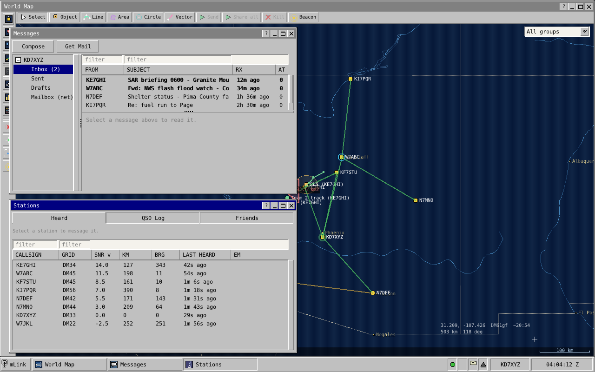
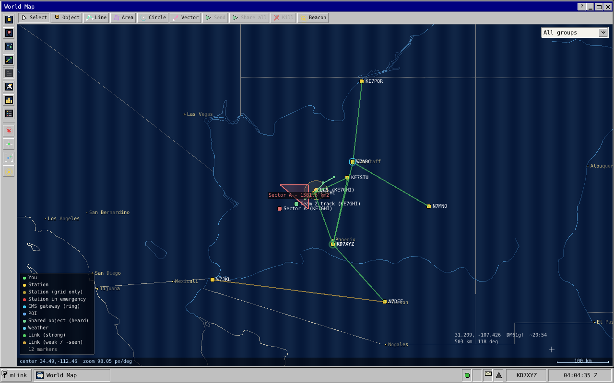

Preface: How to Read This Manual
1 Who this book is for
You hold an amateur licence, you have an HF (high frequency, shortwave) transceiver, and you want to move messages and mail between stations without the internet. You do not need to be a programmer. If you have made an FT8 contact, run a packet node or sat through an evening net, you have the background this book assumes.
It is also written for the ham who wants to know why: why a lost frame costs only that frame, why the station sometimes waits before keying when the channel sounds clear. The reasoning is in plain speech, with the numbers taken from the software itself. It is not a programming reference: it names frames and bytes, because those travel between stations, but never a source file.
2 Two ways through the book
The operator route is Parts I and II. Part I is the big picture: Chapter 1, then Chapter 2, which follows one piece of mail from one operator to another and is the best short tour of the whole system, then the radio background in Chapter 3. Part II is the operator's manual: installing, every window of the client, what the outbox is telling you, and accounts.
The deep dive is everything after that, in the order a reader needs it. Part III is the signal: the passband, the error-correcting codes, the three modems and the receiver. Part IV is the protocol, everything that happens on the air between stations. Part V covers the services built on it, such as emergency calls and mail. Part VI is the station software, Part VII is FmLink, and Part VIII explains how mLink is tested.
Each idea is explained once, in one chapter, and every other chapter links to it: when a sentence ends in a link, the full story is at the other end. Reading only the box at the top of each chapter is a fair way to get the shape of the parts you skip. For a number in a hurry, go to Appendix A; for the bytes of a frame, Appendix B.
3 Conventions
3.1 One yardstick for signal strength
Every signal-to-noise figure in this book is on one scale, SNR@3k: the signal against the noise in a 3 kHz SSB (single sideband) bandwidth, defined in Section 3.4.3.
3.2 Frame chains in brackets
One transmission from an mLink station is usually several frames back to back. We write it as frame names in square brackets, in the order they go out:
[presence][rts][bulk 0][bulk 1][bulk 2]
That reads: a PRESENCE frame (who is talking), a request to send (what is coming and for whom), then three bulk data frames. "Protocol" in this book always means what happens on the air, never the conversation between your station and the program you look at.
3.3 The boxes
3.4 Glossary terms and cross-references
A term with a dotted underline, like region, is a glossary entry. Hover over it for a one-line definition, or follow it to the glossary at the back. A term is linked the first time it appears in a chapter. References to chapters, sections, figures and tables are live links, numbered automatically. Acronyms are spelled out the first time a chapter uses them, and where the wider industry has a name for something mLink built, we give that name too.
Part I: The Big Picture
What mLink Is
1.1 The problem it solves
Hams have always moved traffic without anyone else's infrastructure. The radiogram, the traffic net, packet radio and the modern digital modes all answer the same question: when the phones and the internet are not an option, how do words get from here to there?
mLink answers it for today's shack: a computer and a sound card between the operator and the radio, and messages that look like the ones people already write, with subjects, recipients, replies and attachments. It is built for the conditions where the easy assumptions fail:
- The path is poor and it changes. On HF (high frequency, the shortwave bands), a station you copied solidly ten minutes ago may be down in the noise now and back in another ten. Chapter 3 explains why.
- Everyone shares one frequency. No central controller hands out turns. Each station decides for itself when to transmit, and two that decide at the same moment ruin each other's signals.
- Stations come and go. Some run all day from a fixed shack, some for an hour on battery. Some have internet access; in a real emergency most will not.
- Air time is precious. A weak-signal channel carries tens or hundreds of bytes per second, not millions. Every byte repeated needlessly is air time taken from someone else.
1.2 What mLink does
- Nets with accountability. A named net with a net control, a roster and roll calls that take seconds, bulletins that come back with a record of who received them, and standing orders every member keeps. See Chapter 22.
- Mail to anywhere in the world. A subject, recipients, copies, replies tied to the mail they answer, and attachments. Mail travels by radio between stations, and through any station with internet access to a central mailserver. That lets a station on one frequency send mail to a station on a different frequency or band, in another region or another country, or to an ordinary email address. It never spends air time it does not have to, and it is never thrown away for taking too long. See Chapter 24.
- Messages. Short text to one station or to everyone listening, with several exchanges on the frequency at once.
- Delivery without the internet. Stations exchange messages and mail by radio alone, and a station that hears both ends relays for one that does not. See Chapter 19.
- Distress calls. A call for help has its own slice of the passband and its own very slow, very robust signal, which every station listens for at all times. Nothing is allowed to make a distress call harder to send or harder to hear. See Chapter 23.
- Strong encryption, for services that may use it. AES-256-GCM with keys agreed from signed certificates or shared across a group, for services such as MARS and SHARES whose rules allow it. It stays off on amateur frequencies. See Chapter 26.
- Strong compression. Every message is compressed with Zstandard at its highest setting, with a dictionary trained on radio traffic so that short messages shrink too. See Chapter 21.
- One station, several radios, several operators. Computers on different bands join into one station, and operators sign in with their own accounts and roles. See Chapter 31 and Chapter 7.
- Position and maps. Stations report where they are, and operators share map sketches and search patterns. See Chapter 28.
- Internet data shared over the air. A station with internet access can fetch something such as a weather forecast for stations without it. See Chapter 27.
Underneath all of them is one job: getting a string of bytes from one station to another, completely and correctly. Chapter 2 follows that job from end to end.
1.3 The three programs
mLink is three programs that cooperate. Only one of them ever touches a radio.
1.3.1 The station daemon
The station daemon is the program that runs your station. (A daemon, in computing, is a program that runs in the background with no window of its own.) It owns the sound card and therefore the radio. It holds the modems, the error-correcting codes, the receiver that listens to the whole passband all the time, and every rule about when to transmit and what to say. It keeps a database of everything that must last: stations heard, messages and mail, the outbox, the settings. Every decision about the air is made here, from what this station has measured.
The daemon runs whether or not anyone is looking at it: a station can sit unattended, listening, answering and carrying traffic for others. See Chapter 29.
1.3.2 The client
The client is what you look at: one window laid out like a small desktop, with a Start menu of applets for mail, the stations heard, a map, a spectrum display and more. The same client also runs in a web browser.

The client is deliberately thin. It keeps no messages of its own; it sends commands to the daemon and shows the updates the daemon sends back. So you can close it and the station keeps working, you can connect from another computer, and several operators can work one station at once. Chapter 5 walks through the client; Chapter 30 describes the connection.
1.3.3 The mailserver
The mailserver is a separate program that runs on an internet host and has no radio at all. It keeps a mailbox for each callsign, passes mail to and from ordinary internet email, and runs mailing lists. A station with internet access talks to it directly, and by doing so becomes a gateway for the stations around it that have none: it says on the air that it can reach the mailserver, and carries mail between the air and the mailbox. See Chapter 25.
The mailserver is central to getting mail delivered. It is the one place a mail can wait, for as long as it takes, for a recipient who is off the air, out of range or on another band, and the one place every gateway can reach. Most mail between stations that are not in range of each other ends up passing through it.
That the radio side also works without it is a feature, not the normal case. Two stations with no internet still exchange mail directly or through other stations, and a frequency cut off from the internet keeps working as a net. When a gateway comes back into range, the waiting mail moves on.
1.4 Four habits: a net that runs itself
If you have sat in on a well-run traffic net, you have the right picture. Stations check in, everyone listens to everything, and when one station cannot reach another, somebody in the middle offers to relay. mLink works the same way with one difference: nobody has to be net control. Every station follows the same rules and decides for itself from what it has heard. Four habits make that work.
1.4.1 Stations announce themselves
A station opens its transmissions with a short frame called PRESENCE, carrying its callsign and grid square, which also serves as its station identification. With nothing else to say it still sends one alone from time to time, a beacon, so the stations around it know it is there. See Chapter 14.
1.4.2 Stations learn who hears whom
Every frame a station decodes tells it that the sender exists and how strong the sender was on arrival. Each station builds a table of the stations it hears and how well, and stations share short summaries of their tables on the air, so each one learns not only "whom do I hear?" but "whom do my neighbours hear?" See Chapter 18.
1.4.3 Stations choose how to send from what they measured
There is no speed setting and no mode switch. A station with something to send looks up how well the path has been working and picks for itself: short messages and weak paths go on a slow, robust signal, large messages over good paths on a fast one (Chapter 15). When part of a long transfer is lost, the receiving station says exactly which part, and only that part is sent again (Chapter 16).
1.4.4 Stations relay for each other
There are no routes to configure and no digipeater paths to type in. Stations keep a copy of traffic they overhear, even when it was not for them. When a sender finds it cannot reach the destination, it asks the stations around it at that moment, and one that has heard the destination recently offers to carry the message. The destination records it as coming from the original sender, not from the helper. See Chapter 19.
1.5 One system, top to bottom
Many operators know Winlink, the long-established radio email system. Winlink got the product right: mail is the right unit for emergency traffic, and a central mail store reached through internet gateways is the right shape for a network. mLink keeps both, and is intended as a full replacement for the Winlink network.
What it changes is how the pieces fit. A Winlink station is assembled from separate programs written at different times by different people: a mail client, a modem program, gateway software, and the central servers, joined by interfaces that each know little about the others. mLink is one system designed as a whole. The modem knows what kind of traffic it is carrying, the part that shares the channel knows what the modem can do at the present signal level, the mail layer knows which stations have been heard and which of them can reach the internet, and the mailserver knows what a station on the air can and cannot afford to send. Each layer has what it needs from the others, so nothing has to be configured to match, and no air time is spent on negotiation between them.
| Job | Winlink | mLink |
|---|---|---|
| Writing and reading mail | Winlink Express or another client program | The client |
| The signal on the air | A separate modem you must also have: VARA, ARDOP, packet, or a Pactor hardware modem costing well over a thousand dollars | The station daemon's own three modems; a sound interface is the only hardware |
| Deciding when to transmit, and to whom | The operator picks a gateway and starts a session | The station daemon, from what it has heard |
| Carrying mail between radio and internet | Gateway software (RMS) at stations set up as gateways | Any station with internet access; it needs no extra program |
| Carrying mail between stations with no internet | A separate radio-only network of chosen stations | Every station: relay and carrying mail are built in |
| Holding mail until it is collected | The central mail servers (CMS) | The mailserver |
| Distress calls, position, nets, several bands | Other programs, or not covered | Built in |
Winlink works with several modems, and a station can only use the ones it has. mLink has one signal design, built into the daemon, and every mLink station can talk to every other.
mLink is built to beat Pactor, VARA, ARDOP and packet where it counts for an organisation: mail that arrives, and a frequency that carries the traffic of everyone on it. Those modems each connect one station to one gateway. The operator keeps a list of gateways, picks one, and hopes it is listening and in range on that band at that hour; if it is not, the mail does not move. An mLink network works together:
- Every station is always decoding and always helping. There is no particular gateway to reach and no gateway list to keep. Any station that hears you can carry your mail, relay your message or tell you that mail is waiting (Chapter 19, Chapter 24).
- The frequency is never held by one pair. Several exchanges run side by side in different parts of the passband (Chapter 17).
- No session to set up. No connect, no negotiation of speed, no disconnect. A transmission starts with the data.
- Only what was lost is sent again, and a frame is the same length whatever the signal level, so nothing is re-timed or re-negotiated when the path changes (Chapter 16).
- It reaches weaker stations. Short messages get through at −5 dB and a distress call at −17 dB (Chapter 9).
- Less is sent in the first place. Every message is compressed hard before it goes on the air (Chapter 21). For ordinary text traffic that alone can put mLink ahead of even the fastest of those modems in the time a message takes.
Raw speed between two stations on one strong path is the single measure where the fastest hardware modems are ahead, and compression narrows even that for ordinary text. On every other measure above, mLink is designed to lead. Simulation bears this out: a twelve-station net running for hours delivered every mail and every message, with stations helping one another and not one transmission lost to overlap (Chapter 33). A side-by-side trial on the air is still to come; hardware modems are expensive to borrow.
The largest difference an operator meets is in the radio half. A Winlink station exchanges mail by connecting to one particular gateway for a session, and only those two stations may use the frequency meanwhile. mLink has no connection step: every station on the frequency hears every transmission, any station can hold and carry mail for another, and a gateway that hears your station offers you your waiting mail without being asked.
1.6 Where mLink stands
mLink is in active development and approaching its final phase. The signal side (the modems, the codes and the receiver) is settled, and the core of the protocol is complete: stations find each other, choose how to send, share the channel, repair losses, recruit relays, and move mail and distress calls end to end. All of it is exercised continuously by a test suite that runs many stations against a simulated shared radio channel (Chapter 33). Proving the system on real HF paths is part of the phase now under way. One piece is still being built: FmLink, the same design for FM simplex on VHF and UHF (Chapter 32).
1.7 What to remember
- mLink moves messages, mail and distress calls between amateur stations over a shared, fading channel, with or without the internet.
- It is three programs: the station daemon (owns the radio and makes every decision), the client (a window onto the station, desktop or browser) and the mailserver (internet mailboxes, no radio).
- It is one system designed as a whole, intended to replace the Winlink network and its separate programs. The mailserver is central to delivery; working without it is a feature for when the internet is gone.
- Four habits make the net: stations announce themselves, learn who hears whom, pick how to send from what they measured, and relay for each other.
Mail in mLink
2.1 The example
Three stations are on one 40 m frequency. None has internet access.
- A (KX0AAA) has a mail for B.
- B (KX0BBB) is the recipient, a few hundred kilometres away.
- C (KX0CCC) is unattended. It listens and helps.
The mail is a text report. Compressed and wrapped it is 2,000 bytes. B has reported hearing A at +10 dB (SNR@3k), and A uses that figure.
2.2 Scenario 1: B hears A
- Compose. The operator at A writes the mail in the client and presses Send. The client hands it to the station daemon in one command; the station makes every decision from here (Section 5.5.2, Chapter 30).
- Outbox. The station saves the mail in its outbox as pending, then queues it (Chapter 6).
- Check and wrap. The station computes a 16-bit integrity check over A's callsign, B's callsign and the mail. That value also names the mail on the air. It then tags the content as mail, compresses it if that makes it smaller, and adds one byte saying how it was packed: 2,000 bytes (Section 16.2, Chapter 21).
- Choose how to send. The station picks from the size and its link estimate for B. A small message or a weak path goes as a shortburst or longburst. 2,000 bytes over a path better than +6 dB go as a bulk transfer. With the 2-byte check in front that is 2,002 bytes in three frames: frame 0 at rate 1/2 holds 603, frame 1 at rate 3/4 holds 907, frame 2 at rate 5/6 holds the last 492 (Chapter 15).
- Wait for a free moment. The station keys only when it is not in another exchange, no other station has reserved the part of the passband it needs (a defer), and its receiver hears nothing. If the frequency has just gone quiet it first waits a random time, from a fraction of a second to several seconds. The outbox row becomes airing (Chapter 17).
- Transmit. One transmission carries the mail: [presence][rts][bulk 0][bulk 1][bulk 2]. PRESENCE gives A's callsign and grid. The RTS says three bulk frames follow for KX0BBB, rates up to 5/6, and gives the check value. Both are 0.64-second frames on the bulk-control channel (Section 8.5.1). After 150 ms come the three 5.44-second bulk frames, sent by OFDM (Chapter 12) and protected by an LDPC code (Chapter 9). Total: 17.8 seconds. C hears the RTS and stays off the bulk region until the transfer ends (Chapter 14).
- Receive. B decodes the PRESENCE and RTS, works out when frame 0 starts, and finds each later frame one frame-length further on. In this example a fade destroys frame 1. Frame 2 still decodes, because its position was fixed by frame 0. B keeps frames 0 and 2 and has a 907-byte gap (Section 13.8).
- Reply. About two thirds of a second after A's transmission ends, B sends [presence][dnak] on the same control channel, 1.3 seconds. The dNAK is a map with one bit per bulk frame; only frame 1's bit is set (Chapter 16).
- Repair. A sends only frame 1's 907 bytes, and one rate more robust than they were lost at: two rate-1/2 frames of 603 and 304 bytes, in [presence][retx-rts][bulk 0][bulk 1], 12.3 seconds. B writes them into the gap. mLink calls this selective repair dARQ (Section 16.5).
- Verify. B unwraps the mail and computes the same 16-bit check. It matches. A mail that fails the check is neither delivered nor acknowledged.
- Acknowledge. B sends [presence][ack]. The ACK names the mail by its check value. B's client shows new mail from A. A's outbox row becomes sent.
From the first PRESENCE to the end of the ACK: about 35 seconds, of which 32.7 are transmission (17.8, 1.3, 12.3 and 1.3).
2.3 Scenario 2: B cannot hear A, but C hears both
A's estimate for B is a few minutes old and still looks good, so steps 1 to 6 happen as before. C is not the addressee, but it decodes the transfer and keeps a copy.
- Silence. A waits five seconds for a reply. None comes.
- Probe. A does not send the bulk frames again. It sends one short question, [presence][qsl], a probe that carries no data. Silence again (Section 16.6).
- Ask for a relay. A sends a REQUEST naming KX0BBB and the mail's check value. It does not carry the mail. C holds that mail and heard B within the last two minutes, so after a random wait it sends an OFFER saying how well it hears B. A waits two seconds for better offers, then names C in a SELECT: [presence][relay/request], [presence][relay/offer], [presence][relay/select].
- The relay delivers. C sends the mail to B as a transfer of its own: [presence][relay/for][rts][bulk 0][bulk 1][bulk 2]. The RELAY/FOR frame names A as the author and gives the original check value. B replies to C exactly as in Scenario 1, repairs included, and files the mail as coming from A.
- Result. C sends A a RELAY/RESULT frame. A's outbox row becomes sent. If C cannot reach A at once, it holds the result and sends it when it next hears A (Chapter 19).
2.4 Scenario 3: nobody can reach B
B is off the air and C cannot hear it either.
- Transfer, silence, probe, REQUEST happen as in Scenario 2. Nobody offers.
- One more attempt. A station can hold a copy only if it caught the opening frames, so no offers may mean the opening was lost. A sends the whole transmission once more, then asks again (Section 16.6.3).
- Deferred. Still nothing. A stops transmitting for this mail and marks the row deferred: no relay has volunteered yet; it will ask again after a growing wait.
- Try again later. When A next hears any station, and at least one minute has passed since the last try (doubling after each failed try, up to 32 minutes), it tries again: directly if the station it hears is B, otherwise by asking for a relay. Waiting mail goes oldest first and is never discarded for waiting (Chapter 20).
If a gateway is on the frequency there is one more path. A gateway that overhears the mail puts a copy in B's mailbox on the mailserver and answers A's REQUEST by saying so; A's row becomes deposited. Any gateway that later hears B offers B the waiting mail (Chapter 24).
2.5 What to remember
- B hears A: one transmission, a reply naming any lost frames, a repair of only those frames, an ACK. Here 2,000 bytes took about 35 seconds.
- B does not answer: one probe, then a relay chosen on the spot from the stations that hold the mail and hear B.
- Nobody can help: the mail is deferred and retried when a station is heard again. Mail does not expire.
The Radio You Need to Know
3.1 Your transceiver is an audio pipe
An SSB (single sideband) transceiver is usually thought of as a voice radio. For data work, think of it as a pipe for audio. Whatever audio you feed into its data input comes out of the far station's data output, much the same as it went in. To your radio, every mLink signal is just sound.
3.1.1 Upper sideband: audio pitch becomes radio frequency
In upper sideband (USB) mode, the radio takes each audio tone and moves it up so that it sits that many hertz above the dial frequency. A 1,000 Hz tone fed into a radio set to a dial frequency f goes out on the air at f + 1,000 Hz. At the receiving end the process runs backwards, and a receiver set to f turns that signal back into a 1,000 Hz tone. Tones stay tones, their spacing stays the same and their timing is preserved. mLink runs on upper sideband, in the radio's data mode where it has one (often labelled DATA-U, PKT-U or DIG-U).
That is why this book describes mLink's signals in audio terms. When a later chapter says a signal is centred on 2,250 Hz, it means the audio fed to the radio, and therefore 2,250 Hz above the dial on the air.
3.1.2 The pipe is about 3 kHz wide
The passband is the range of audio frequencies the radio lets through. SSB radios are built around voice, and a typical one passes something like 3 kHz of audio. mLink is designed to fit inside that, and it uses nearly all of it, from very low audio right up to the top. Both ends matter. Many radios narrow their filter for data modes, or roll off the low audio to keep voice crisp, and a radio that does either cuts off part of mLink.
3.2 Sound cards and samples
Between the radio and the computer sits a sound card, often built into a small interface box. On receive it measures the audio voltage many thousands of times a second and hands the computer a stream of numbers. Each number is a sample, and how many are taken each second is the sample rate. On transmit it does the reverse.
A sampled signal can only represent frequencies up to half the sample rate. mLink does all of its signal processing at 12,000 samples per second, so it can represent audio up to 6,000 Hz, twice what the passband needs. Many sound cards prefer to run at 48,000 samples per second; the station then converts between the card's rate and its own.
Because the rate is fixed, time and samples are interchangeable throughout mLink. One second is 12,000 samples. A bulk frame is 65,280 samples, which is exactly 5.44 seconds. Timing that matters is counted in samples, and that is how a receiving station can predict, to the sample, where the next frame of a transfer will begin.
3.3 Tones, phase and the I/Q picture
Every mLink signal is built from tones. A pure tone has three properties: its frequency (how many cycles per second), its amplitude (how loud) and its phase (where in its cycle it is at a given instant). A modem carries data by changing one or more of these from one short stretch of time to the next. Each stretch is a symbol, and the number of symbols per second is the baud rate.
mLink changes tones in three ways. Its emergency modem changes the frequency, picking one of eight tones for each symbol (Chapter 10). Its announce modem changes the phase of a single tone (Chapter 11). Its bulk modem changes the phase of many tones at once, side by side (Chapter 12).
3.3.1 Phase as an arrow
Picture phase as an arrow spinning around a circle. The arrow's length is the tone's amplitude; its angle at any instant is the phase. Now watch it from a viewpoint that spins at exactly the tone's own frequency: the arrow stands still. If the transmitter jumps the phase by a quarter turn, the arrow jumps by a quarter turn and stays there.
Describe the arrow's tip by two coordinates, how far across and how far up, and you have what radio engineers call I and Q: the in-phase and quadrature parts of the signal. The receiver works with both numbers for every sample. The pair records not just how strong the signal is but where it is in its cycle, which is exactly what a modem that shifts phase needs to read. Plot where the arrow lands for each received symbol and you get the constellation display that digital-mode software shows: tight clusters for a clean signal, fuzzy clouds for a noisy one.
3.4 Noise, decibels and SNR
Every receiver hears noise: the hiss of the atmosphere, distant lightning, the power line next door and the receiver's own electronics. The most important number about any received signal is how strong it is compared with that noise, the signal-to-noise ratio, or SNR.
3.4.1 Decibels without tears
Radio people write ratios like this in decibels (dB), because the ratios involved span a huge range. A decibel figure is shorthand for a multiplication. The few values worth memorising:
| dB | Power ratio | In words |
|---|---|---|
| +3 | ×2 | twice the power |
| +10 | ×10 | ten times |
| +20 | ×100 | a hundred times |
| 0 | ×1 | equal |
| −3 | ×½ | half the power |
| −10 | ×1/10 | a tenth |
| −20 | ×1/100 | a hundredth |
Decibels add where ratios multiply: +13 dB is +10 dB and +3 dB, so twenty times. An SNR of 0 dB means the signal and the noise have equal power. A negative SNR means the signal is weaker than the noise: at −10 dB the noise has ten times the signal's power. For voice that is hopeless, but data modes copy signals like that every day.
3.4.2 Why an SNR needs a bandwidth
Noise is spread across all frequencies more or less evenly. A receiver listening through a wide filter lets in more of it; a narrow filter lets in less. Halve the bandwidth and you halve the noise power, which is −3 dB. So an SNR figure means nothing until you say what bandwidth the noise was measured in. The same signal can honestly be described as −15 dB in a 3 kHz bandwidth and about +3 dB in a 50 Hz one, because the 50 Hz slice holds sixty times less noise (about 17.8 dB less).
This is also half of the answer to "how can anything copy a signal below the noise?" A narrow signal only has to beat the noise inside its own narrow slice. The other half is time and coding: long symbols let the receiver average the noise down, and error-correcting codes repair the symbols that still come out wrong (Chapter 9).
3.4.3 The SNR@3k yardstick
mLink quotes every SNR against one fixed reference: the noise that a 3,000 Hz-wide SSB receiver lets through. We write this SNR@3k. It is the natural yardstick for an SSB station, because 3 kHz is roughly what the radio passes anyway. It means the same thing whether the signal being measured is mLink's narrowest or its widest, so any two figures can be compared directly. And it is one number everywhere: the strength your station reports for each station it hears, every figure in this book, and the thresholds the station uses to make its decisions are all SNR@3k.
If you use FT8 or JS8, you already know this kind of number. Those programs report against a 2.5 kHz reference instead of 3 kHz, so the same signal reads about 0.8 dB lower on mLink's scale. That is close enough to compare directly: a station that gives you −12 on FT8 is very close to −12 dB SNR@3k.
How far down each of mLink's three signals can be copied is listed in Section A.8. The short version: the slow ones work well below 0 dB, and the fast one needs to be a few decibels above it. mLink chooses between them from the measured path (Chapter 15).
3.5 Half duplex: you are deaf while you transmit
An amateur transceiver cannot transmit and receive at the same time on the same frequency. Its own signal is millions of times stronger at its antenna than anything it could hope to hear. This is half duplex, and it shapes a great deal of mLink's behaviour.
A station switches between receive and transmit with the PTT (push-to-talk) line, the same thing your microphone button does. mLink can key the radio by a CAT (computer aided transceiver) command, by a control line on a serial port, or by VOX (voice operated switch), where the radio keys itself when audio arrives. VOX needs no cable but is slow to react, so a station keyed that way sends a short tone ahead of every transmission to give the radio time (Chapter 8).
Half duplex has three consequences you will meet again and again:
- A station hears nothing while it transmits. If another station transmits at the same moment, neither hears the other, and anyone listening hears both on top of each other. That is why stations listen first and wait for a free moment (Chapter 17).
- Answers must wait until the sender has stopped. A reply that starts while the sender's transmitter is still on, or before its receiver is listening again, is lost (Chapter 16).
- Silence is ambiguous. A station that hears no answer cannot tell whether the other station never heard it, heard it but could not reply, or replied while something else was in the way.
3.6 The HF channel
A VHF path is usually line of sight and stays much the same from minute to minute. HF (high frequency, 3 to 30 MHz) is different, and the difference is why mLink's signals look the way they do.
3.6.1 The ionosphere and skip
Above about 60 km, sunlight ionises the thin upper atmosphere into layers, together called the ionosphere. An HF signal heading upward is bent back toward the ground and can come down hundreds or thousands of kilometres away: skip. It may bounce off the ground and go up again for a second hop. Which frequencies are bent back, and where they land, depends on the time of day, the season and the sunspot cycle. A path that works on 40 m in the evening may not work at noon.
Signals sent nearly straight up on the lower HF bands come back down all around the transmitter. This near-vertical incidence skywave (NVIS) is the workhorse of regional emergency communications, and it has the same character as any other skywave path: echoes, fading and drift.
3.6.2 Echoes: multipath
A signal rarely arrives by one path alone. One copy may come by a single hop and another by two; the ionosphere may split the signal into two copies travelling slightly different routes. Each copy covers a different distance, so they arrive at slightly different times. The receiver hears the sum: the signal plus delayed echoes of itself. This is multipath. On skywave paths the echoes typically trail the first arrival by half a millisecond to a few milliseconds, and in bad conditions by as much as 10 milliseconds.
3.6.3 Fading
The ionosphere is never still, so the lengths of the paths change all the time. When two copies of a tone arrive in step they add up; when they arrive half a cycle apart they cancel. As the paths shift, a signal fades in and out, sometimes over a fraction of a second, sometimes over minutes. Because the adding and cancelling depends on frequency, a fade can take out one part of the passband while leaving another untouched: on a waterfall display you can see dark notches wander slowly across a signal. A long transmission on HF should expect some part of it to meet a fade.
3.6.4 Drift and Doppler
The moving ionosphere also shifts each signal's frequency slightly, by a fraction of a hertz to a few hertz, and smears it: a pure tone arrives a little blurred. This is the Doppler effect, the same thing that changes the pitch of a passing siren. Separately, no two radios agree perfectly on what frequency their dials are set to. A few hertz or tens of hertz of difference is normal, and on upper sideband that error shifts every received tone by the same amount. Chapter 13 explains how mLink copes; an accurately calibrated radio still helps.
The standard channel models engineers use to test HF modems describe "good" through "poor" conditions as echoes of 0.5 to 2 milliseconds with Doppler smearing of 0.1 to 1 Hz. mLink's own tests run its stations through simulated fading, echoes and noise of this kind (Chapter 33).
3.7 Why slow symbols
Put all of that together and the trouble with sending data quickly over HF becomes clear. The obvious way to go fast is to send short symbols very quickly on a single carrier. At 2,400 symbols per second, a symbol lasts about 0.4 milliseconds. A 2-millisecond echo then overlaps the next five symbols, and the receiver hears each symbol mixed with the ghosts of the ones before it. A filter that learns the echo pattern can subtract it, but the pattern keeps changing as the path fades and drifts, so the filter is always chasing it, and a deep fade can leave it lost.
The other way is to make every symbol long compared with the echoes, so that an echo smears only the edge of a symbol and not the whole of the next one. All three of mLink's signals do this. The emergency modem's symbols last 160 milliseconds, which an echo of a few milliseconds barely touches. The announce modem's last 5 milliseconds, still longer than a typical echo. The bulk modem gets its speed back without shortening anything: it sends many slow tones side by side, each symbol about 27 milliseconds long, and starts each symbol with a guard interval that soaks up the echoes (Chapter 12).
Why three different signals and not one clever one is a question about jobs, not about echoes: one must be heard by everybody, one must move a lot of data, and one must get a distress call through almost anything. Chapter 8 takes it up.
3.8 What to remember
- On upper sideband the radio is an audio pipe about 3 kHz wide: audio pitch maps straight onto frequency above the dial. mLink uses nearly all of it, so keep the data filter wide at both ends.
- mLink processes audio at 12,000 samples per second, and counts time in samples.
- A tone seen as an arrow has two coordinates, I and Q; together they give its strength and its phase.
- Every SNR in mLink is SNR@3k: signal against the noise in a 3 kHz SSB bandwidth, within 1 dB of an FT8-style report.
- Radios are half duplex. A transmitting station hears nothing, so stations listen before they talk, answer only once the sender has stopped, and cannot be sure what silence means.
- HF brings echoes of up to several milliseconds, fading and small frequency shifts. That is why mLink sends slow symbols.
Part II: Operating a Station
Installing and First Run
4.1 What you need
4.1.1 At the radio
- A transceiver. Any SSB transceiver you would use for a sound-card data mode such as FT8 or JS8. Its filters must pass audio from about 115 Hz to about 2,900 Hz, lower at the bottom than many voice settings reach (Chapter 8). FM radios are a separate story (Chapter 32).
- A sound interface between the radio's audio and the computer, with its own way of keying the radio. Three kinds are common: an interface of the SignaLink or Digirig type, which gives the computer a line that keys the radio's PTT (push-to-talk); a radio with a sound card built in, where one USB cable carries the audio and the radio's control commands; or, as a last resort, an interface that keys the radio by VOX.
- A way to key the transmitter. mLink knows three: a serial control line (RTS or DTR) wired to the PTT; a CAT command (computer-aided transceiver, the radio's own control protocol); or VOX, where the audio itself keys the radio. Use one of the first two. VOX is not recommended on HF: the delay before the radio keys is long and uncertain, mLink has to pay for it on every transmission, and support for it may be removed. Section 4.3.6 says what it costs.
4.1.2 The computer
The station daemon, the program wired to the radio, is built for Linux today; Windows and macOS are future build targets for it. The ready-made package is for 64-bit PCs (x86-64); on other processors, such as 64-bit ARM, you build it from source. The client you operate with comes as a Linux desktop program, a Windows desktop program and a web page for any browser. All three reach the daemon over the network, so a Windows or browser operator works a station that runs on a Linux computer. The mailserver is a separate program that somebody runs for a whole group (Chapter 25); your station needs only its address.
The computer should keep accurate UTC time, because every time the station records is UTC.
4.2 Getting mLink
4.2.1 The AppImage
The simplest route is a single file,
mLink-x86_64.AppImage. An
AppImage is a whole program in
one file that runs without installing anything. This one holds the desktop
client, the station daemon, the small
web bridge that lets browsers
connect, and the web client. It runs on Linux distributions from about 2020
onward, on any 64-bit x86 processor from about 2009 onward.
chmod +x mLink-x86_64.AppImage
./mLink-x86_64.AppImageThat opens the client. To run only the daemon, for example on a computer
with no screen, put --daemon-only first; everything after it
goes to the daemon:
./mLink-x86_64.AppImage --daemon-only --callsign W1AW --grid FN31pr --audio auto4.2.2 Building from source
On a Debian or Ubuntu system the ready-made package is built with these
packages: gcc g++ make cmake python3 autoconf automake libtool
pkg-config patch bzip2 xz-utils zlib1g-dev libasound2-dev libx11-dev
libxrandr-dev libxinerama-dev libxcursor-dev libxi-dev libgl-dev,
plus libpipewire-0.3-dev for the PipeWire sound backend. The
heavier libraries mLink depends on ship inside the source tree and are
built along with it.
Use these three targets; a plain make builds a much slower
debugging daemon.
make release # the daemon: build/release/mlinkd
make mlinkd-ws-bridge-release # the web bridge, next to it
make client-release # the client: client/bin/Release/mlink-clientAdd USE_PIPEWIRE=1 to the first line to include PipeWire;
without it the daemon uses ALSA, which every Linux system has. On a 64-bit
PC the build assumes a processor from about 2013 onward (one with AVX2);
for an older machine add MARCH=x86-64-v2. The web client needs
the Emscripten compiler: make -C client web builds it into
client/bin/web.
4.3 First run
4.3.1 Starting the station
From the client. Start the client. With nothing running
yet, the "Connect to Daemon" window opens
(Section 5.2). Leave the host at
127.0.0.1, the port at 8488 and the password at
its default, mLink; type a name and press "Start local
daemon". The client starts the daemon and signs you in.
By hand. Run the daemon in a terminal, then point any client at it:
mlinkd --callsign W1AW --grid FN31pr --audio autoIt runs until you press Ctrl+C. What you give on the command line is saved, so
later runs need no options. mlinkd --help lists them all, and
Chapter 29 explains them.
Both ways start the same station: the daemon keeps one database in one per-user data folder, however it was started, and a second daemon on the same database refuses to run. Where that file is, and why to back it up, is in Chapter 29.
4.3.2 Callsign and grid
Until the station has a real callsign it will not transmit, and the
client shows a red "STATION BLOCKED" banner with the code
callsign_missing
(Section 14.2.2 has the rule and its
one exception). Open Settings, then "Identity":
- "Callsign": type it and press "Apply". Up to nine
characters, including a suffix such as
VE3XYZ/PorKX0AAA-7; the whole callsign goes on the air. - "Grid square": your
Maidenhead grid square,
such as
FN31orFN31pr, then "Apply". It puts you on other stations' maps. Every transmission carries it to six characters, which places you within about 5 by 7 km. To give away less, type only four characters, or keep six for your own maps and have the daemon send four with the commandset_presence_grid_chars(the client has no control for it yet). - "Position (lat/lon)": optional. Type a precise position and press "Set position", or tick "Use gpsd" if a GPS receiver is feeding gpsd on this computer (Section 28.1.2).
4.3.3 Sound device
Open Settings, "Audio", "Backend". First choose the sound system, the
audio backend:
pipewire if the daemon offers it and PipeWire runs on the
computer, otherwise alsa. (null means no sound
hardware, for testing.) Then pick the devices: "Capture (RX)" carries the
radio's receive audio, "Playback (TX)" feeds the radio. "(System default)"
uses the system's choice. Press "Apply".
The switch happens live and is saved. The daemon will not change devices in the middle of a transmission, and if the new device will not open it goes back to the one it had. "Refresh" shows an interface plugged in after the daemon started.
4.3.4 Audio levels
mLink has no level controls of its own. Set receive and transmit levels with the radio and the computer's sound mixer, as for any sound-card data mode. On receive, the "Waterfall" should show band noise as a steady speckle: black means too little audio, bright all over means too much. On transmit, raise the level until the radio gives the power you want, and stay below the point where the radio's ALC (automatic level control) acts. ALC squeezes the peaks, and a squeezed mLink signal spills outside its own strip of the passband (Section 8.8).
4.3.5 Keying the transmitter
Open Settings, "Radio", "Rig control". Its first line shows the current
state, for example Rig: ptt-serial (key tier line). Under it is
a form:
- "Backend:"
none(mLink does not touch the radio; use this for VOX),ptt-serial(key with a serial control line, no CAT), oromnirig(key with a serial line or a CAT command, and read and set frequency and mode). - "Device:" the serial port, such as
/dev/ttyUSB0. - "OmniRig ini:" for
omnirigonly, the radio's description file. - "Baud:" the CAT speed;
0lets the daemon choose. - "PTT line:" "None (VOX / CAT)", "RTS" or "DTR", with "Invert" for interfaces that key on the opposite level.
"Apply" takes effect at once and is saved. The daemon then keys by a
control line if one is set, otherwise by a CAT command if the radio's
description has one, otherwise by VOX, and the first line names the result
as the "key tier": line, cat-writeonly,
cat-validated or vox. The same line warns in
capitals of "CAT SILENT" (the radio stopped answering), "DEVICE LOST" (the
serial port vanished) or "PTT STUCK" (the radio reports it is still
transmitting when it should not be).
The description files are the ones written for OmniRig, the rig-control
library by VE3NEA, so mLink needs no code of its own for each radio. The
source tree carries nineteen, for popular Elecraft, Icom, Kenwood and Yaesu
radios, in its rigs folder. The AppImage does not contain
them: copy your radio's file from the source tree or from the OmniRig
library to the station computer and give its path in the form.
| Interface | Backend | PTT line | "VOX keying" |
|---|---|---|---|
| SignaLink type (VOX only) | none | None | ticked |
| Digirig type (serial PTT) | ptt-serial, or omnirig for frequency control too | RTS | not ticked |
| Radio with built-in USB audio and CAT | omnirig with the radio's file | None (keys by CAT), or the line the radio documents | not ticked |
The last setting is Settings, "Radio", "Keying (VOX)". A new station
assumes the radio is not keyed by VOX. If yours is, tick "VOX
keying"; the "VOX leader (ms):" box then takes any length from 0 to 2000.
Or tick "Auto from rig control", and the station treats a key tier of
vox, or no rig control at all, as VOX.
4.3.6 Why the VOX leader is 800 ms, and what it costs
A VOX-keyed radio starts transmitting only after it has heard audio, so the start of every transmission never reaches the air. A station set to VOX therefore sends a plain tone, the VOX leader, in front of every transmission, distress calls included, and lets the radio swallow that instead of the first frame (Section 8.9.1 says where the tone sits). A station keyed by a line or by CAT sends none.
The default, 800 ms, comes from a measurement. On an inexpensive VOX-keyed handheld with a Digirig, the transmitter's VOX and the far radio's squelch together swallowed 550 to 750 ms of each transmission. A 250 ms leader lost every one; 800 ms decoded reliably. If your radio's VOX is quicker you can shorten the leader, but test with another station first: a leader that is too short loses whole transmissions, while one that is too long only wastes time.
The cost is the leader itself: every transmission a VOX station makes is 0.8 seconds longer. A one-frame message that takes just under two seconds from a line-keyed radio takes almost three, and that time comes out of a channel everybody shares. A VOX station is also placed behind the others when stations take turns after activity (Section 17.7.1). The client says so in red when you tick the box. VOX works, but a radio keyed by a line or by CAT serves the whole frequency better.
4.3.7 Connecting to a mailserver
Mail for stations that are not on the air right now passes through a mailserver. In "Messages", select the "Mailbox (net)" folder (Section 5.5.3), type the server's address next to "Server URL:" and press "Apply". Then register, once: press "Register (internet)", or, with no internet here, type the callsign of a gateway you can hear next to "Gateway:" and press "Register over the air". What registering does is in Chapter 25; how mail then travels is in Chapter 24.
4.3.8 Operating from a browser
The daemon starts the web bridge by itself, and the bridge serves the web
client on port 8489. The AppImage needs nothing more; a source build must be told
where the web client's files are, with
--web-root client/bin/web. Open
http://127.0.0.1:8489 in a browser on the station computer. To
let other computers on your network in, start the daemon with
--web-lan; it prints the address to use. Chapter 30
explains the connection.
4.4 A first test
Before you depend on a station, prove each link of the chain in turn.
- Is audio arriving? Open "Waterfall". Band noise should scroll. "Waiting for spectrum frames..." means the daemon has no audio.
- Is the station happy? The tray should show a green dot and no red banner. If there is a banner, click it.
- Is anyone heard? Tune to your group's frequency and wait. Stations appear in "Stations", "Heard" as they are decoded, each with an SNR on the SNR@3k scale. A newly started station listens for a while before it announces itself (Section 18.2).
- Does the transmitter key? Send a short line in "Chat"
to
0CQCQCQ. Watch the radio key, send, and unkey. - Does a message arrive? Select a heard station, press "Message", write a line and send. In "Messages", "Sent", its state goes from pending to airing to sent, and "Message acknowledged" appears in "Notifications". If the row shows anything else, Chapter 6 says what it means.
4.5 What to remember
- The station daemon runs on Linux, next to the radio. The client can be on the same computer, on another one, or in a browser.
- The AppImage is one file holding everything. However the daemon is started, it is the same station.
- The station stays off the air until it has a real callsign.
- Prefer keying by a control line or CAT. VOX works, but its 800 ms leader makes every transmission 0.8 seconds longer.
- Test the chain in order: audio in, banner clear, stations heard, transmitter keys, message acknowledged.
The Operator's Guide to the Client
5.1 Before you start
The client does not run the radio. The station daemon does, and the client is a view onto it and a set of buttons that send it commands (Section 1.3). Close the client and the station keeps working. Open it again, on the same computer or another one, and everything is where you left it, because your QSO log, friends, canned messages, map objects and window arrangement are all kept by the station.
On-screen labels are quoted here exactly as the client shows them. Every
time and date in the client is UTC; the clock in the bottom right corner
reads, for example, 04:04:12 Z.
5.2 Connecting and signing in
When the client is not connected to a daemon, a window titled "Connect to Daemon" opens by itself in the middle of the screen. It closes by itself the moment you are signed in. It has five fields:
- "Host:" and "Port:": where the daemon
is listening. For a station on the same computer that is
127.0.0.1and port8488. - "Password:", with a "show" box to reveal what you typed.
- "Name:": who is sitting at this seat.
- "Position:": optional, a tactical position such as
OPS CHIEForSHELTER-3. It travels with your name on the mail you send.
The sign-in rule is printed under the Name field: "If your name has an account on the station, the password is your account password; otherwise the station password signs you in." Chapter 7 explains accounts, roles and walk-up guests.
Two tick boxes let the client remember what you typed: "Remember host/port" and "Save password (plaintext)", which writes the password to a file on this computer unscrambled.
Two buttons sit at the bottom. "Connect" attaches to a daemon that is already running. "Start local daemon" appears only when the host is this computer: it starts a daemon if none is answering on that port and signs you in as soon as it is ready (Chapter 4). Once you are connected, the same window, reopened from the Start menu, offers "Disconnect" instead.
The status line under the tick boxes says what happened. "Status: timed-out (no daemon answering at ...)" means nothing answered. "Status: sign-in refused" is followed by a short code in brackets and the station's own sentence of explanation:
accounts_required: this station admits account holders only, so the station password alone gets nobody in. What that means for distress traffic is in Section 23.1.1.account_auth_failed: that name is an account, and the password did not work.auth_throttled: too many attempts from your address; wait and try again.
If the station ends a session you already had, the window comes back with "Status: signed out by the station" and the code, and a red message pops up telling you to sign in again.
5.3 The desktop
The screen is a desktop with a taskbar along the bottom. Each tool opens in its own window, and the client calls these tools applets. Drag a title bar to move a window; drag an edge or corner to resize it. Each title bar carries four small buttons. From left to right they are "?", which opens the Help window at the page for this applet, then minimise, maximise and close.
Dragging a window against an edge of the screen snaps it: to the top edge to fill the screen, to the left or right edge to take that half. If you shrink the client's own window until some windows fall off the edge, the client stacks them back into view.
The first time you connect to a new station, the client opens a starter set: "Status & Diagnostics", "Messages", "Stations" and "Waterfall". After that it restores the arrangement you left, which the station keeps, so it follows the station and not the computer you happen to sit at.
5.3.1 The Start menu
Click "mLink" at the bottom left to open the Start menu. The applets are grouped under six headings, in this order: Communicate, Stations & Map, Radio, Station, Data and System. Clicking an item opens the applet, or brings it to the front if it is already open; there is only ever one window of each.
Below the separator are three more items. "Connect..." reopens the "Connect to Daemon" window. "Stop daemon" stops a daemon that this client started; it is greyed out otherwise. "Quit client" leaves, after up to two questions. If your station is net control, a "Net control" box offers "Sign off & quit", "Leave silently" or "Cancel" (Section 22.8.9). If this client started the daemon, a "Quit mLink" box offers "Stop & quit", "Leave running" (the station stays on the air) or "Cancel".
Three applets, "Messages", "Stations" and "Status & Diagnostics", are each a hub: several related views under tabs in one window. When some other window has a "Message" or "Go to" button, it takes you to the right tab of the right hub.
| You want to... | Open |
|---|---|
| Read, write or file mail | Messages |
| See what you sent and whether it went | Messages, "Sent"; Status & Diagnostics, "TX Queue" |
| Type a quick line to someone | Chat |
| Run or join a named net, call a roll call | Nets |
| Fill in an ICS-213 or other standard form | Standard Forms |
| Send a distress call, or answer one heard | Declare Emergency |
| See who is on the air | Stations, "Heard"; World Map |
| Log a contact | Stations, "QSO Log" |
| Keep a list of regulars | Stations, "Friends" |
| Mark places and lay out a search plan | World Map; POIs |
| Watch the band | Waterfall; Spectrum |
| Send a prepared message with one click | Beacons |
| Set callsign, grid, audio, rig, keying | Settings |
| Manage accounts or a station cluster | Organization |
| See every event the station flagged | Notifications |
| Follow weather or other internet data | Tracked Data |
| Check the connection, role and station state | Status & Diagnostics, "Status" |
| Read the station's log lines | Daemon Log |
5.3.2 The taskbar and the tray
Every open window has a slot on the taskbar. Click a slot to bring its window to the front; click the slot of the window already in front to minimise it.
The right end of the taskbar is the tray. It tells you, without opening anything, whether the station is connected, what it is doing, and whether anyone is in trouble.
The four small icons, left to right:
- Link to the daemon. A dot: green when connected, amber while connecting, red when offline. Hover over it to see the address; click it to open "Status & Diagnostics".
- What the station is doing. One letter, the first of the station's current transmit-decision state (I for idle, for example). Hover to see the full name. This is the state of the part of the daemon that decides when to transmit, which the protocol chapters call the MAC (medium access control). Click it to open "Status & Diagnostics".
- Messages. An envelope with a red count of the messages in the station's log. Click it to open "Messages".
- Emergency. A triangle, grey when all is quiet, red with an exclamation mark when this station or any station heard is declaring an emergency. Click it to open "Notifications".
The identity cell next to the clock says which callsign this station
transmits as and who is signed in with what authority, as in
KD7XYZ · alice · operator. A walk-up guest shows as
guest: and the name typed at sign-in; a one-operator station
shows only the callsign and the role. The role is shortened to
admin, tech or operator. Hover over
the cell for the long version.
While a transmission is queued or on the air, an "Abort" button appears just left of the icons. It calls off the current transmission and puts the message back in your Drafts (Section 16.9).
5.3.3 The red banner
Some problems stop a station from working at all: no callsign set, the sound device vanished, the radio would not key. When the daemon reports one of these, a red strip appears across the very top of the screen, above every window, reading "STATION BLOCKED --" followed by a short code and the reason, with "(+N more)" when there are several. It cannot be hidden behind a window, and it stays until the problem is fixed. Click it and the client takes you to the place to fix it: the matching Settings entry for a keying or FM-mode mismatch, "Status & Diagnostics" for anything else.
5.3.4 Pop-up messages
Short messages pop up at the bottom right, just above the taskbar, and
fade after a few seconds: a green edge for success, amber for a warning, red
for an error, blue for plain information. These are called
toasts. A short one stays about
three seconds; a long one stays up to eight, so you have time to read it.
Click any toast to dismiss it. A toast that ends in a small »
is also a link: clicking it opens the applet it is about.
Every warning and critical event the station reports gets a toast as well as a row in "Notifications", except the blocking problems that already own the red banner.
5.3.5 The keyboard and the lists
The Escape key peels away one layer per press, the most transient first. It cancels a quit box if one is showing; otherwise it closes the Start menu; otherwise it takes the text cursor out of the field you were typing in. While a dropdown list or a dialog box is open, Escape leaves the window behind it alone; close a dialog with its own "Cancel". Only when nothing else is in the way does Escape close the window in front.
| Key | Effect |
|---|---|
| Esc | Dismiss one layer, as described above |
| Tab, Shift+Tab | Move between text fields in the window |
| Ctrl+A, Ctrl+C, Ctrl+X, Ctrl+V | Select all, copy, cut and paste in a text field. Password fields refuse copy and cut. |
| Enter | Send the line in "Chat"; finish a line or area on the map |
| Backspace (map) | Remove the last point of a shape in progress |
| Mouse wheel | Zoom the map around the pointer; scroll a list |
| Shift+click (map) | Measure: first click sets A, second sets B |
Most lists in the client share one design. Click a column heading to sort by it, click again to reverse. A row of small filter boxes above the headings narrows the list to rows containing what you type.
5.4 On a phone-sized screen
The client has a second layout for a hand-held screen: the same applets and controls, arranged for a finger. It picks a layout when it starts, before it signs in, from the choice saved on this device or from what the device reports about itself. When neither settles it, it asks, full screen: "Are you on a phone or a desktop?", with two large buttons, "Phone" and "Desktop". The answer is saved. To change it later, open Settings, "Display", "UI scale" and press "Use phone layout" or "Use desktop layout"; the change takes effect the next time the client starts.
What differs in the phone layout:
- One applet at a time. There is no taskbar and there are no windows to move. The applet you opened fills the screen under a top bar. The bar's left button goes back, and names where it goes: the applet underneath, or "Home". Escape does the same.
- Home is the Start menu as a list of tall rows under the same headings, with a red "EMERGENCY" button fixed at the top that opens "Declare Emergency" in one touch.
- The tray moves to the top bar: the four status icons, and "Abort" while something is queued or on the air. Toasts drop down from under the bar.
- Lists become stacked rows. A table turns into rows two lines tall with no column headings, side-by-side panes sit one above the other, and a dropdown opens as a sheet at the bottom of the screen.
- Four applets get screens of their own. "Messages" shows its folders as a strip with "Compose" and "Get Mail" at the bottom, and opens a mail on its own screen. "Stations" lists the heard stations, most recent first; touch one for its details, with "Message this station" and "Show on map". "Settings" and "Help" show the tree first and the chosen page next. Back steps out of these inner screens before it leaves the applet. The other applets keep their desktop arrangement; one that is wider than the screen slides sideways under your finger.
- Nothing is arranged, so nothing is saved. The phone layout starts at Home every time and leaves your desktop arrangement alone.
A finger works like this. Touch and lift to press something. Slide to scroll a list. Hold still on a spot for the menu a right-click would open. On the map, slide to move it and use two fingers to zoom.
5.5 Communicate
5.5.1 Messages
"Messages" is your mail program, laid out like a desktop email client. Folders are on the left, the selected folder's contents on the right, and a toolbar with "Compose" and "Get Mail" across the top. The folder tree is headed by your callsign and holds:
- "Inbox", with the unread count in brackets. The columns are FROM, SUBJECT, RX (how long ago it arrived) and AT (how many attachments). Unread mail is shown in bold, replies are indented under the mail they answer, and a pencil in front of the sender marks a mail that another operator at your station is answering right now. Click a row to read it in the pane below; opening it marks it read.
- Folders you file into. "Archive" on an open mail moves
it into a folder named
archive, which appears in the tree once it holds something. In any folder other than the Inbox the same button reads "To Inbox". - "Sent": everything that has left Drafts, one row per message, with its STATE, TYPE, DST (destination), BYTES, UPDATED and ERROR. The states, and the notes that appear beside them, are explained in Chapter 6.
- "Drafts": saved drafts, with a count. The last column says why each one is there, for example "Saved by you" or "Cut by your emergency broadcast".
- "Mailbox (net)": your station's link to the mailserver, described below.
Reading a mail shows "From:", an "Operator:" line with the sender's name and position if they gave one, "To:" and "Cc:", "Subject:", and a "Via:" line naming the mode the mail arrived in, with the dial frequency when your rig reports one. The buttons under the header are "Reply", "Reply All", "Forward", "Archive" and "Delete". Attachments are listed with a "Save" button each, which writes the file to your home directory. Small text files show their first lines, and pictures show as a thumbnail. A map attachment shows a one-line summary of its objects and an "Import to map" button that adds them to your World Map under the sender's callsign (Section 28.3.4).
If another operator at the same station is already replying to a mail, pressing "Reply" opens a box titled "Already being answered" that names them and asks "Reply as well?", with "Reply anyway" and "Cancel" (Chapter 7).
In Sent, select a row to "Edit" it (it reopens in the composer and replaces the original when you send), "Delete" it, or "Abort" it while it is still queued or on the air. In Drafts, "Send" transmits the draft exactly as saved, attachments included, "Edit" reopens it and "Delete" removes it.
At a station that is part of a cluster (Chapter 31), a "Mailbox:" choice at the right of the toolbar lets you look at another member's mailbox, read-only; "Local" brings your own back.
5.5.2 Writing mail
"Compose" in the toolbar, or any "Message" button anywhere in the client, opens the composer inside the Messages window. Its heading says what you are doing: "New message", "Reply", "Reply all", "Forward" or "Editing draft". A "New" button at the top right clears it. The fields are:
- "To:", with a "Cc+" button that shows a "Cc:" line. As
you type a callsign, suggestions from your friends and the stations you hear
appear as small buttons to click. Besides callsigns, "To:" takes
0CQCQCQfor everyone, or0followed by a net name (for example0MARITIME) for a named net (Section 22.7.1). - "Subject:" and "Message:", the body.
- Attachments. "Attach..." picks a file. "From map..." opens a short menu, "All my objects" or one "Group", and attaches those map objects as a file. Each attachment is listed under the buttons with a small "x" to remove it.
- "Broadcast area (CQ)..." replaces the recipients with a circle on the map, an area CQ. The World Map comes forward and asks you to click the centre. Back in the composer a line reads "Area CQ:" with the centre, the radius (50 km to start, changed in 10 km steps with "-" and "+") and a "Clear" button; the "Send" button becomes "Broadcast" and the area button becomes "Re-pick area...". Every station that hears the message keeps it; the circle decides who is alerted (Section 28.4).
- "Via:" at the bottom left chooses "Radio" or "Internet (CMS)", which hands the mail straight to the mailserver when this station has internet (Chapter 24). CMS is the client's label for the mailserver.
The figures at the right of the attachment row are worth learning to read. They show two sizes in kilobytes: the message after compression, and the most one transfer can carry. When the station has measured the link to the recipient, the second figure becomes what that link can carry, and the line adds the rate it expects to use, the link's signal-to-noise ratio (on the SNR@3k yardstick) and an estimate of the time on the air. Green fits this link now, amber would fit a better link or a relay, red never fits in one message and must be trimmed. Hover over the line for the reason in words (Section 15.5).
"Save Draft" keeps the message without sending. "Send" hands it to the station, and a small line at the bottom then shows the state of that send as it changes. A message that is too large is refused on the spot with a red toast.
If this station is not registered with a mailserver, the composer says so next to "Via:" in red: "not registered - relays won't carry this" on "Radio", or "needs Mailbox registration" on "Internet (CMS)". Registration is one button in the "Mailbox (net)" folder.
When the station holds an encryption key, an "Encrypt:" choice appears too, with "Clear", "To recipient" and "Group key". "To recipient" says beside it whether the station holds that callsign's certificate ("cert on file (encryptable)" or "no cert for this callsign"); "Group key" adds a second list to pick the key. Under the choice the composer says where encrypted mail can and cannot go, in red if "Via:" is set to "Internet (CMS)". The rules are in Chapter 26.
5.5.3 Mailbox (net) and Get Mail
The "Mailbox (net)" folder is where you connect this station to a mailserver (Chapter 25). A line at the top says which server is set and whether the station is registered. Below it:
- "Check via internet" and "Check via radio". After a radio check the button greys out as "Asked" with a countdown in seconds, because each radio check is a transmission.
- "Held at the CMS": after a radio check that finds mail, one line per mail with sender, subject and size, each with a "Fetch" button. Nothing is sent to you until you pick it.
- "Mailing lists..." lists the mailserver's lists with their subscriber counts, each with "Subscribe" or "Unsubscribe".
- "Server URL:", with two tick boxes, "Act as a gateway (carry others' mail)" and "Relay my mail check when nobody answers (opt-in)", and an "Apply" button. A station that carries others' mail is a gateway.
- "Station key:", the fingerprint of this station's mail identity, or a note that it is created the first time you register.
- "Register (internet)" (it reads "Re-register (internet)" once done) or, with no internet here, a "Gateway:" box for a callsign you can hear and "Register over the air". An unregistered station sees a short notice here saying what it is missing.
The "Get Mail" button on the toolbar does the same check by the best route available: over the internet when the station is registered, otherwise over the air.
5.5.4 Chat
"Chat" is a scrolling conversation, one line at a time, in the style of IRC or a keyboard net. A choice at the bottom left picks where the line goes:
- "On air": over the radio. "To:" starts as
0CQCQCQ, meaning everyone; put a callsign there for a directed line. - "Internet": a chat room at the mailserver, named in
"Ch:" (the room is
cqunless you change it). It needs a registered station, and the hint line turns red to say so when yours is not. - "This station": between the operators signed in to this station, including other members of its cluster. It is never transmitted.
Enter sends, and so does the "Send" button. A counter shows how much room is left: a chat line is capped at 156 bytes, the most one short message carries (Section 15.2). Anything longer is mail, and in "On air" the "Mail" button opens the composer already addressed to the same callsign. Your own lines are shown in dark red. Click an on-air line to see, at the bottom of the scrollback, how many times the station heard that message and when it first did. The view follows new lines only while you are at the bottom.
5.5.5 Nets
"Nets" runs or joins a named net: an optional net with a name, a net control, numbered members and roll calls (Chapter 22). The window has three parts: status lines at the top, a row of buttons that depends on what you are in the net, and the roster.
The status lines. With no net heard the window says "No named net on frequency." Otherwise the first line names the net, its type ("Casual" or "Safety Critical"), its net control, and two counters, the term and the roster's edition. The second line says what you are:
- "You hear this net; you are not in it (a bystander)."
- "You are member n.", with "for now" and an explanation added when a stand-in gave you the number (Section 22.8.3).
- "You are net control (member n)", with how many are on the roster and how many were heard lately.
- "Listening only: you hear this net and will not transmit.", at a station set to listen only.
More lines appear when they apply: that you follow net control through another member; who owns the net when the station running it is a stand-in or was handed the job; whether the net's standing orders are in your mail; "Asking to join ..."; "Roll call in progress", with a note when routine traffic is held, and afterwards "Last roll call:" with how many did not answer. After each roll call net control also reads how many members it heard directly, and, when another member reports hearing more of the net, a suggestion to let that member run it (Section 22.8.6).
The buttons follow from what you are.
- Not in a net: a "Net name:" box with "Open" (start a net under that name and become its net control), a "Net type:" list with "Casual" and "Safety Critical" for the net you are about to open (Section 22.8.8), "Join" (ask to be listed), and a "whenever heard" tick box that keeps the request on file across restarts. While a join is pending the only button is "Withdraw join".
- Member: "Leave net"; "Message the net", which opens
the composer addressed to
0and the net's name; and two tick boxes, "Traffic to pass" and "Need help", that your next roll-call check-in carries. A "Get roster" button appears when your copy of the roster is shorter than net control's; it reads "Asking..." while the request is out (Section 22.4.3). - Net control: "Call the roll", "Step down", "Close net" (it changes to "Sure? Close" for a few seconds; click again to confirm) and "Message the net". Select a member in the roster and more appear: "Remove selected"; "Hand to callsign", which steps down and names that member as the next net control; "Let callsign run it", offered to the owner, which makes that member net control while you stay the owner (Section 22.8.5); and "Make alternate n" or "Drop alternate n", for up to three alternates (Section 22.8.4). The "Net type:" list switches a running net between the two types. A station that is only standing in for the owner sees "Take over this net" in place of the alternate and type controls.
- The owner, when another station runs the net: the member's buttons, and on a second row "Take the job back", "Close net", and, with a member selected, "Remove selected", "Let callsign run it" and the alternate button.
Two more lines sit under the buttons. "Bulletin:", for members and net control, takes a text every member must have and sends it with "Send bulletin"; net control's window then shows whether every member confirmed it or how many still lack it (Section 22.7.2). "Standing orders:", for the owner and the station running the net, takes a subject and a text; the button reads "Post standing orders", or "Replace standing orders" when the net already has some (Section 22.7.3).
The roster has three columns: the member's number, CALLSIGN and NOTE. The note says what the station knows about that member: "net control", "owner", "this station", "left the net", "did not answer the roll", "not heard lately", "listed on another member's word", and "alternate n". Net control's own line carries no number when your copy of the roster has no entry for it.
Things the net tells you arrive as toasts and as rows in "Notifications": a message or bulletin to the net ("Net name: message from callsign", or "(not a member) writes to the net" at net control), a roster copy that arrived, standing orders that reached your mail, that net control has taken you off the roster, and that another net with the same name is on the frequency.
5.5.6 Standard Forms
"Standard Forms" fills in the message forms that emergency communicators already use: ICS-213, Radiogram and about 150 others, grouped by organisation and region in a tree, with the forms you used recently at the top under "Recent" and a "Search:" box above. Choose one and it appears as ordinary fields. Required fields that are still empty are outlined in red when you press the form's submit button, and the form will not submit until they are filled. A successful submit places the finished text in the composer with the subject filled in; you choose the recipients and press "Send". Four buttons above the form do the rest: "Save draft" and "Load draft" keep a half-finished form, "Attach…" adds a file, and "Save PDF" makes a copy for a paper file.
5.5.7 Declare Emergency
"Declare Emergency" has two tabs: "Declare", to send a distress call, and "Heard", for distress calls the station has received. The service behind them is described in Chapter 23.
The "Declare" tab is built so that nothing on it can stop you sending. The red button at the bottom is always live. It reads "SEND DISTRESS" when a position will be included and "SEND DISTRESS (no location)" when not. Every field above it is optional, and a line of advice at the top changes as you fill them in, for example "No position - rescuers cannot locate you directly", in red when the news is bad. It warns; it never refuses.
Most fields are short menus, so they are quick under stress:
- "Severity:", such as "Immediate threat to life (Mayday)" or "Urgent, no immediate threat (Pan-Pan)".
- "Position:" has three choices. "Use my fix" sends the position the station already holds, and the window says which that is: the GPS fix, or the configured position when there is no live fix, with the coordinates. If the station has nothing, a line starting with "!" says why. "Enter manually" gives a "Grid:" box, "lat" and "lon" boxes and a "Pick on map" button, which brings the World Map forward for one click. "No position" sends none.
- "Accuracy:", "Where:" (water, wilderness, roadway and so on), "What:" (medical, injury, fire, lost and so on), "People:" and "Mobility:".
- "Who you are:" and a free-text "Detail:". If you type a character the distress call cannot carry, an amber "Not sent:" line lists what will be left out (Section 23.3.3).
If the station is transmitting something else at that moment, a line above SEND says "The station is transmitting now. Sending will interrupt it." SEND is still one press. Afterwards a box names what was stopped, "Message 12 aborted to transmit emergency broadcast.", and that message is in "Drafts" (Section 23.2).
After you send, the tab changes. It shows "BEACONING - repeating until canceled or acknowledged", the severity and whether a position went out, and two buttons: "CANCEL / SAFE" to stand the call down, and "UPDATE (re-send)" to send a corrected version after you change the severity or the detail in the fields below. A critical notification at the same moment gives the expected time between repeats (Section 23.4.1). Every client connected to the station shows the beacon, so any operator there can cancel it, not only the one who sent it.
The "Heard" tab label carries a count of unacknowledged calls, as in "Heard (1!)". A new call also raises a critical toast and turns the tray triangle red. Each row gives the call's number, who sent it, the severity and the station it came through, with "[ACK]" in front once it is acknowledged. Select one to see "What:" and "Where:", the detail text, and "Position:" with an "On map" button, or a line saying there is no position. After you have passed the call to the authorities, fill in "Contact:" (agency, case number or phone; optional) and press "Acknowledge (I forwarded this)" (Section 23.6). The row then reads "Acknowledged by ..." with the contact.
At the top of this tab, the tick box "Auto-relay heard SOS beacons" lets the station re-send distress calls it hears (Section 23.7). Leave it on unless you must stay silent.
5.6 Stations and the map
5.6.1 Stations: Heard
The "Heard" tab of "Stations" is the station's
heard list
(Section 18.6). The columns
are CALLSIGN, GRID, SNR (Section 18.6.1),
KM and BRG (distance and bearing from you), LAST HEARD, MODE (the mode the
last frame arrived in, with your dial frequency when your rig reports it),
VIA (which member of a cluster heard it) and EM (an exclamation mark for a
station declaring an emergency). [NC] after a callsign marks
the net control of the net on the frequency. The list is sorted by SNR,
strongest first, until you pick another column. Distance and bearing need
your own position; with only a grid square set they are worked from the
grid.
The list has no age setting of its own. The station forgets a station one hour after it last decoded it (longer on a frequency with more than twenty stations), and LAST HEARD tells you how fresh each row is, so sort on that column to see who is on the air now. In a cluster, stations heard by other members are listed too.
Select a row and two buttons appear: "Message" opens the composer addressed to that station, and "Show on map", offered when the station's position is known, centres the World Map on it.
5.6.2 Stations: QSO Log
The "QSO Log" tab is an ordinary contact log: WHEN, CALLSIGN, GRID, FREQ, MODE, SENT and RCVD reports, and a COMMENT. "New" starts an entry stamped with the current time; the editor under the list changes the selected entry, with a "Message" button for that callsign and a "Delete" that asks first. "Export ADIF" writes the whole log to an ADIF file in your home directory, ready for LoTW, QRZ or any logging program, and "Import ADIF" reads one in.
5.6.3 Stations: Friends
"Friends" is your list of up to 32 regulars, whether or not they have been heard lately. Type a callsign next to "Add:" and press "Add". Each friend has a "Note:" and an "Alert:" setting of "Mute", "Notify" or "Sound", and "Message" and "Delete" buttons. With anything other than "Mute", a text message from that friend puts a row in "Notifications". "Sound" makes no sound yet, and the window says so. Friends are also the first suggestions when you address mail.
5.6.4 World Map

"World Map" shows you, the stations heard, the links between them, your own map objects, objects other stations have shared, and weather observations. The map ships with the client and needs no internet. Drag with the left button to move it; turn the wheel to zoom around the pointer. The night side of the Earth is shaded. The read-out at the bottom right follows the pointer: latitude and longitude, grid square, approximate local solar time there, and the distance and bearing from you. A scale bar in kilometres sits in the corner below it.
Markers. Your own station is green. A heard station is yellow, or a dimmer yellow when only its grid square is known and it is shown at the square's centre. A station not heard for half an hour fades, and fades further after six hours. A station in emergency is red and never fades, and while your own distress call is active your marker is joined by a pulsing red "SOS". A gateway has a ring round it. Click a station that has been sending position reports and its recent track appears.
Layers. The column of buttons down the left edge switches layers on and off: heard stations, your own objects, shared objects from others, link lines, a panel listing links station by station, weather, city names and the legend. A layer that is off shows its button pushed in and greyed, and the client remembers your choices on this computer. Below a divider are four actions: drop a search datum, centre on your position, zoom to fit every object, and "Beacon my position now".
The legend lists only the kinds of marker now on the map, from "You", "SOS (armed)", "Station", "Station (grid only)", "Station in emergency", "CMS gateway (ring)", "POI", "Shared object (heard)", "Weather", "Link (strong)" and "Link (weak / ~seen)". The link lines and the link panel come from the links map (Section 18.8). The panel, headed "Links - who hears whom", lists each station and the stations it hears, with their SNR; a double-click on a line centres the map on that station.
The toolbar along the top holds the tools for the tactical overlay (Section 28.3). While a tool is selected, a line across the top of the map says what the next click will do. "Object" stays selected so you can place several; the shape tools go back to "Select" when the shape is finished, and Escape goes back at any time. Dragging still moves the map in every tool.
| Button | What it does |
|---|---|
| Select | Click a marker or a shape to select it. Dragging an object of your own that is already selected moves it; Escape during the drag puts it back. |
| Object | Click to place a named point |
| Line | Click each corner; Enter or a right-click finishes, Backspace removes the last corner, Escape abandons |
| Area | Click each corner; it closes itself when you finish, and is labelled with its size in square kilometres |
| Circle | Click the centre, click again to set the radius |
| Vector | Click the origin, then a point along the bearing; the map shows the bearing and range |
| Send | Send the selected object to everyone |
| Share all | Send all your objects in one transfer |
| Kill | Withdraw the selected object from everyone's map and delete it |
| Beacon | Send one position report |
Moving an object you have already sent sends it again, so everyone's copy follows. How objects travel and how a newer copy replaces an older one is in Section 28.3.2.
The right-click menu is in four groups: Place ("Drop POI here", "Drop datum here (SAR)", "Search pattern here..."), Navigate ("Center map here", "Copy coordinates", "Measure from here"), Weather ("Get weather here (one-off)", "Track weather here") and Radio ("Poll this area (who's here?)", "Beacon my position now").
- "Search pattern here..." opens a "Search pattern" box: choose "Expanding square", "Sector search" or "Ladder", give its size in kilometres and the heading of the first run, and for the square and the ladder the number of runs (6, 8, 12, 16 or 23); "Generate" lays the pattern out as a line object (Section 28.3.5).
- "Measure from here" sets point A of a measurement; Shift+click sets B, and the map shows the distance and bearing. Two Shift+clicks do the same without the menu, and Escape clears it.
- The two weather items add a row to "Tracked Data" for that spot and open that window.
- "Poll this area" asks, over the air, who is within 100 km of that point: a geopoll (Section 18.5).
Groups. Objects can carry a group label, such as a mission or team name. When any object on the map has one, a choice at the top right shows only one group's picture, yours and everyone else's together; "All groups" brings everything back. While a group is chosen, "Share all" sends only that group and zoom-to-fit fits only what is shown. The choice lasts until you close the client (Section 28.3.3).
5.6.5 POIs
"POIs" (points of interest) is the list view of your own map objects: ID, LABEL, GROUP, OWNER, LAT, LON and EXPIRES. Select one and edit it below: "Label:", "Notes:", "Group:", "Owner:", "Symbol:" and a colour, and fields that depend on the shape, such as "Radius (m):" with optional rings at two and three times the radius, "Brg/Range:" for a vector, a "Filled" box for an area, or a "Moving" box with a course and speed (Section 28.3.1). Tick "Set" next to "Expires:" to give it an expiry time, or leave it clear for an object that never expires. "Refresh" renews an object so it does not expire, "On map" centres the map on it, and "Delete" asks first.
5.7 Radio
5.7.1 Waterfall and Spectrum
"Waterfall" is the familiar scrolling picture of the band: frequency across, 0 to 3 kHz of audio as your receiver passes it, and time downward, newest at the top. Its toolbar has a "dB floor" slider (lower it to bring out weak signals; the colours span 60 dB above it), a colour scheme ("Heatmap", "Viridis", "Grayscale" or "Plasma"), and a "samples/row" slider that averages several measurements into each row, which scrolls slower and shows weak signals more steadily. Make the window taller for more history.
"Spectrum" shows the same measurements as a bar graph of the current moment, scaled to the loudest bar.
5.7.2 Beacons
"Beacons" holds up to sixteen canned text messages you send with one
click: a net check-in, a standing CQ, a status line. Each slot has a
"Label:", a "To:" and a "Body:". Wherever the body says
%CALLSIGN%, your callsign is filled in; the "Preview:" line
underneath shows the result. Press "SEND" on a row, or "Send Beacon" in the
editor. "New slot" adds one and "Delete" removes the selected one.
These are separate from the beacons the station sends by itself (Section 18.3).
5.8 Station, data and system
5.8.1 Settings
"Settings" is a tree on the left and an editor on the right. Select a
top-level group and the editor describes what lives in it. A box above the
tree, "Filter settings...", shows only entries whose name, or whose group's
name, contains what you type; type vox and you are one click
from the keying settings. The groups and their entries are:
- Identity: "Callsign", "Grid square" and "Position (lat/lon)". The position editor has three parts. "Lat:", "Lon:" and "Alt m:" with "Set position" type a precise position in. "GPS (gpsd):" has a "Use gpsd" tick box with an address and port, and shows "FIX" or "no fix" while it is on. "Auto beacon:" sends your position by itself: "Off", or "Every 2 min", "Every 5 min", "Every 10 min" or "Every 30 min" (Section 28.2.2).
- Network: "Daemon host", "Daemon port" and "Change daemon password". Host and port use "Apply & reconnect".
- Audio: "Backend" (the sound system and the "Capture (RX):" and "Playback (TX):" devices, with "Refresh" and "Apply") and "Fake-OTA hub" (for rehearsals without a radio).
- Radio: "Rig control", "Relay policy", "Operator presence", "FM mode (FmLink)" and "Keying (VOX)". "Rig control" shows the rig's live status above its settings.
- Display: "UI scale", eight steps from 75% to 300%, saved with your window layout. The same page has the "Layout:" buttons for the phone and desktop layouts.
- Encryption: "Status" (what the station holds, with "Refresh"), "Group keys" (a key number, the key and a label, then "Add key"), "Peer certificates" (a callsign and its certificate, then "Install cert") and "Send my cert" (a "to:" box, left empty to send to everyone, and "Send cert"). See Chapter 26.
- Advanced: "Internet sources", with one button, "Open Internet Sources".
The Identity, Audio, "Rig control" and "Keying (VOX)" entries are covered step by step in Chapter 4. Three others need a word here.
"Relay policy" sets how much this station carries for
others. The list offers listen_only, relay_off,
announce_only and allow_bulk, with "Apply". The
page itself says that allow_bulk is right for almost every
station; what each level does is in
Section 19.9.
"Operator presence" has one tick box, "Operator at the radio". Unticked, the station announces itself as unattended (Section 18.3.1).
"FM mode (FmLink)" belongs to FM operation, which has its own part of this book (Chapter 32).
The "Internet Sources" window that the Advanced page opens is the list of data providers behind "Tracked Data" (Section 27.2): ID, NAME, KIND, ORIGIN, REFRESH, ON and STATUS, with "List Sources", "Refresh Selected" and "Toggle Enabled". It is not on the Start menu.
5.8.2 Organization
"Organization" has two tabs, "Cluster" and "People". Most of what they do needs an administrator, and the window says so where it applies.
"Cluster" is for a station made of several daemons sharing one callsign (Chapter 31). It shows this member's name; a MEMBERS list with STATE, BAND, DIAL and LAST SEEN, and a "Query member" button that fetches a live member's status; PENDING JOIN REQUESTS with "Approve" and "Deny"; and a JOIN A CLUSTER form with "Host:", "Port:" and "Name:" and a "Join cluster" button. A member of a cluster sees "Leave cluster" instead, which asks first.
"People" is for operator accounts (Chapter 7). The first line says how this session signed in. Below it:
- PEOPLE: the list of accounts with NAME, ROLE, STATUS and POSITION, and the buttons "Add person", "Change role", "Reset password", "Disable" or "Enable", and "Remove", which asks first. Adding or editing opens a short form: "Name:", "Role:", "Position:", "Password:" and "Confirm:". At a station with no accounts yet there is only "Add person".
- WALK-UP ACCESS: one tick box, "Allow walk-up guest operating (station password)", with the consequence of switching it off written under it.
- STATION PASSWORD: a box for a new one and "Change".
- SESSIONS ON THIS MEMBER: who is signed in, with NAME, ROLE, FROM and IDLE. Select another seat and "Sign out" ends its session.
5.8.3 Notifications
"Notifications" is the station's event list, newest first, holding the last 64: WHEN, SEVERITY (info, notice, warning or critical), CODE and MESSAGE. It collects acknowledgments for your messages, mail arriving, area broadcasts for your position, relay outcomes, what a named net tells you, the state of a distress beacon, distress calls heard, and the blocking problems behind the red banner. Select a row to read the whole message. Where the code has a natural home, a "Go to" button takes you there: mail and message codes to "Messages", emergency codes to "Declare Emergency", relay codes to the "Relay" tab, other transmit codes to "TX Queue", cluster codes to "Organization", rig and PTT codes to Settings.
5.8.4 Tracked Data
"Tracked Data" is where you ask for data from the internet, such as weather observations, and keep it fresh (Section 27.3). Tabs across the top sort the rows by kind, starting with "All". Each row shows LABEL, PARAMS, MODE, VIA, AGE, STATUS and whether it is ON. Four buttons act on the list:
- "+ Add" opens "Track new data": pick a "Source:", give its parameters and an optional label, choose "Tracked (auto-refresh)" or "One-off (fetch once)", and choose "HTTP (our internet)" or "OTA (ask a peer)" to have a station with internet fetch it for you over the air (Section 27.4). "Track" adds the row.
- "Refresh now" asks again for the selected row.
- "Toggle Enabled" and "Remove".
The pane below shows when the selected row was last fetched, where from, and the data itself. The easier route for weather is the map: right-click a spot and choose "Track weather here". Weather with a position also appears on the map's weather layer.
5.8.5 Status & Diagnostics
This hub has four tabs.
"Status" is the at-a-glance panel, in four groups. CONNECTION: the daemon address, the state, the session number. STATION: the callsign and grid the station transmits, who is signed in, and the role, coloured by authority. RADIO: the station's current state and when it last changed, the "Mode" (with "VOX" added for a VOX-keyed radio), the relay policy, the outbox with how many messages are pending and how many are on the air, the net control heard on the frequency, and the named net with what you are in it. CLUSTER: this member's name and how many members are reachable, or "Standalone station". The panel is read-only.
"Diagnostics" is the daemon's own counters, with a "Refresh" button and the age of the figures: frames sent and received, acknowledgments, relay requests and offers, emergency frames decoded, the last SNR, the number of stations heard, and under "NAV (busy time remaining)" how long the station believes each announce channel and the bulk region stay occupied, which this book calls a defer (Section 17.2). Received-frame counts that go up show the station is decoding mLink signals, even before any station has shown up in "Heard".
"TX Queue" lists what is waiting for the transmitter. When anything is waiting, "Stop all waiting..." offers to stop them all; the question it asks gives the count and reminds you that the message on the air and emergency traffic are not affected. Select an item to rewrite its destination or text ("Apply edit") or remove it ("Drop") before it goes out.
"Relay" has two lists: RELAY CANDIDATES, the stations heard recently with a usable link, and LEARNED ROUTES, the relay paths that have worked lately. It is where a relay notification's "Go to" takes you (Chapter 19).
5.8.6 Daemon Log
"Daemon Log" shows the daemon's recent log lines: TIME, LVL (the level)
and MESSAGE. The client keeps the last two hundred. It follows new lines as
they arrive, but only while you are at the bottom, so you can scroll back
without it jumping away. The filter boxes above the columns are the
quickest way to find something; filter LVL on warn to see only
warnings. What the daemon logs is in
Chapter 29.
5.8.7 Help
"Help" is a tree of short topics in the same groups as the Start menu, plus an introduction and a "Troubleshooting" page. The "?" button on any window's title bar opens Help at that window's topic.
5.9 Habits worth forming
- Glance at the tray, not the windows. A green dot, an idle state and a grey triangle mean the station is fine.
- Read the size colour before you send.
- Use "Abort", not the radio's power switch. Abort keeps your message as a draft.
5.10 What to remember
- The Start menu groups every applet under six headings; "Messages", "Stations" and "Status & Diagnostics" are hubs with tabs.
- The tray shows the station's health at a glance, the red banner means the station cannot work until you fix something, and clicking either takes you where you need to go.
- Escape removes one layer per press, and with nothing else open it closes the front window.
- On a phone-sized screen the same applets appear one at a time, with a Back button and a Home list in place of windows and the taskbar.
- The distress button is always live, and every field above it is optional.
The Outbox, and Why Your Station Waits
6.1 Where to look
Everything you ask the station to send is written to its outbox before anything reaches the air. You see the outbox in "Messages" (Section 5.5.1): the "Sent" folder lists every message that has left Drafts, chat lines included, and its STATE and ERROR columns are what this chapter explains. The ERROR column holds the station's note on the row, which is very often not an error at all. "Status & Diagnostics" counts the rows that are pending and on the air, and its "TX Queue" tab lists what is waiting for the transmitter (Section 5.8.5).
6.2 The states
There are nine states. In everyday running you will see pending, airing and sent on almost every row, deferred and deposited now and then, and failed rarely.
| State | What it means | What you do |
|---|---|---|
| draft | Saved, not committed to the air. Shown in "Drafts", not in "Sent". An aborted message returns here. | "Send" it when you want it to go. |
| pending | Accepted and waiting its turn for the transmitter. | Nothing. If it stays for long, see Section 6.5. |
| airing | Being transmitted, waiting for the other station's answer, or in the middle of a search for a relay. Mail sent by internet is airing while it is handed to the mailserver. | Nothing. "Abort" stops it. |
| sent | The addressee confirmed it holds the complete message, directly or through a relay. For a message to everyone, which nobody acknowledges, it means the transmission went out. | Nothing. It is done. |
| deposited | Mail only: the mailserver holds it for its recipients. Your own station put it there over the internet, or a gateway that heard it did and said so. | Nothing. |
| deferred | The station could not finish, still holds the message, and will try again by itself. The note says what it is waiting for. | Leave it alone. |
| failed | The station has stopped trying. The note says why. | Read the note, fix the cause, then "Edit" and send again. |
| transferred | Only at a station made of several daemons (Chapter 31): another member has taken over sending this mail. The row follows what that member achieves. | Nothing. |
| expired | Does not occur in normal running. A lifetime that runs out leaves the row deferred and the station still trying (Section 20.6). | Nothing. |
6.3 Deferred or failed?
Deferred means the station is still working on it. It keeps the message and tries again without being asked, at growing intervals, once it has heard some station since the last try (Section 20.6.1). A message becomes deferred when:
- the station asked for a relay and nobody offered;
- a relay took the message and has not yet reported the outcome;
- a relay reported that it could not deliver, and the message still has time left;
- a mail for everyone to pick up went out and no gateway took it;
- a mail is on its way to the mailserver over the internet.
Failed means the station has stopped, and tells you why. The reasons fall into four groups:
- This station is not allowed to transmit. Its relay policy is set to listen only (Section 19.9). Change the policy if that was not intended.
- The message cannot be sent in this form. It is too big, or too big for the link to that station as it stands, or a message to everyone that is longer than a broadcast may be (Section 15.5.5). Shorten it, address it to one station, or send it as mail.
- The station could not put it on the air. Preparing or starting the transmission went wrong. This is rare; look at the Daemon Log.
- Every way out is used up. A relay reported failure and the message had no time left, or a deposit at the mailserver failed and there was no way to send the mail by radio instead.
6.4 Reading the note
The notes are in the station's own terse words. "CMS" means the mailserver and "B" means bytes. The ones you are likely to meet:
| State | Note | Meaning |
|---|---|---|
| deferred | "no relay volunteered yet; will retry on next contact" | No answer from the destination, and nobody offered to relay (Section 19.7). |
| deferred | "relay handed off; awaiting confirmation on next contact" | A relay took the message but has not reported back. It may well have been delivered (Section 19.6.1). |
| deferred | "relay failed; will retry on next contact" | The relay reported it could not deliver. The station will look for another way. |
| deferred | "relay hand-off preempted; will re-ask on next contact" | A station agreed to relay but did not get the message from yours. It will ask again. |
| deferred | "still seeking a relay; will keep trying" or "delivery still unconfirmed; will keep trying" | The message has waited a whole lifetime and the station has started another. |
| deferred | "no pickup: waiting for a gateway", later "still waiting for a gateway; will keep trying" | Your mail went out for pickup and no gateway took it. It goes again when a gateway is heard. |
| deferred | "addressee not heard lately - depositing at the CMS", "we have internet - depositing the pickup at the CMS" or "no path to addressee - depositing at the CMS" | Your station has internet and is handing the mail to the mailserver instead of transmitting it. The same notes can also begin "cms deposit in flight:". |
| pending | "gateway heard; retrying pickup" | A gateway has just been heard, and the waiting mail is queued again. |
| pending | "mailserver deposit failed - sending over the air" | The internet deposit did not work, so the mail goes by radio after all. |
| deposited | "cms fallback: deposited for pickup" or "own mail returned by courier: deposited at the CMS" | The mail is at the mailserver, by one route or another. |
| failed | "listen_only relay policy in effect" or "no reply; listen_only suppresses relay request" | The station is set to listen only. |
| failed | "tx mode UNSUPPORTED (reason) for n B compressed (m B raw)" | No way to send this size to this destination. The reason begins "link below announce floor" (the link is too weak for anything), ">1 bulk frame and link too weak for bulk" (too big for so weak a link) or "broadcast > one segment" (too long for a message to everyone). |
| failed | "bulk build failed (...)", "shortburst build failed (...)", "longburst build failed (...)" or "envelope wrap failed" | The transmission could not be prepared; with "bulk", usually because the message is too large even after compression. |
| failed | "relay reported delivery failure" | The relay could not deliver and the message had no time left. |
| failed | "mailserver unreachable / rejected the mail", "cms fallback deposit failed" or "internet send could not start" | The mailserver could not be reached or refused the mail. Check "Mailbox (net)". |
| failed | On a row whose TYPE begins RELAY_: "relay delivery failed" or "relay transmit failed to start" | Traffic your station carried for someone else, and how that went. Nothing for you to do. |
A note not listed here is the station reporting something unusual; the Daemon Log has the detail.
6.5 Why the station waits before keying
A row that sits at pending for a few seconds, or occasionally much longer, is waiting for one of these reasons:
- Somebody announced a transfer. Your station heard another station's opener and is staying off that piece of the passband until the announced time has passed (Section 17.2). A long transfer between two other stations can hold a large send of yours for most of a minute.
- The air is busy right now. The receiver is in the middle of a frame, or the audio level says a signal has just started (Section 17.5).
- The channel has just cleared. Every station that was waiting picks a random moment in the next few seconds, so they do not all key at once (Section 17.7).
- Your own large sends are being spaced out. After signs of collisions, the station leaves gaps between the big transfers it starts (Section 17.7.2). Short messages are not held by this.
- Something more urgent goes first. Replies the station owes go ahead of new traffic (Section 17.4), and while your own distress call is active, routine traffic waits (Section 23.2).
You can watch the first reason directly. "Status & Diagnostics", "Diagnostics" shows, under "NAV (busy time remaining)", how long the station believes each announce channel and the bulk region stay occupied.
6.6 What you can do to a row
- "Abort", in Sent or on the taskbar, is offered while a row is pending or airing. It calls the transmission off and moves the message to Drafts (Section 16.9).
- "Edit", in Sent, reopens the message in the composer; sending it replaces the old row. This is how you re-send a failed message.
- "Delete" removes a row from the list. A row that is airing must be aborted first.
- In Drafts, "Send" transmits the draft exactly as saved, "Edit" reopens it and "Delete" removes it. The last column, "WHY IT IS HERE", says how each row came to be a draft: "Saved by you", "You stopped it", "Cut by your emergency broadcast", "Program stopped while sending", "Not sent before a restart", "Mailserver deposit interrupted" or "Send queue was full".
- In "TX Queue", a message still waiting for the transmitter can be changed ("Apply edit") or removed ("Drop"). "Stop all waiting..." removes every waiting message at once, after asking: they are marked failed and can be sent again from the Sent list. The message being transmitted at that moment and emergency traffic are not touched.
There is no "retry now" button; a deferred row retries by itself.
One more thing puts a message in Drafts: sending a distress call while that message is on the air. The message stops, and its row carries the note "interrupted by emergency broadcast" (Section 23.2).
6.7 After a restart
The outbox is kept on disk, so nothing is lost when the daemon stops. Rows that were pending or airing, and mail whose deposit at the mailserver was under way, come back as drafts: look in "Drafts" after any restart and send what you still want sent. Deferred rows stay deferred and carry on where they were. Section 20.7 has the reasoning.
6.8 What to remember
- Pending, airing and sent are the normal path; deposited means the mailserver has your mail.
- Deferred means the station is still trying and will try again by itself. Leave it alone and do not send a second copy.
- Failed means the station has stopped. The note says why; fix the cause, then "Edit" and send again.
- After a restart, look in Drafts: whatever was waiting or on the air is there, and it is not sent again until you say so.
Accounts, Roles and Shared Stations
7.1 Solo or organisation
There is no setup question asking what kind of station you run. The station works it out from what exists, and calls the answer its posture:
- Solo: no enabled accounts. The station password opens the station and gives full control.
- Organisation: at least one enabled account. People sign in by name, and what they may do depends on their role.
Solo is simply an organisation with no accounts yet, so there is nothing to convert: create the first account and the station is an organisation. It then stays one, because the station always keeps at least one administrator account. The screens are the sign-in window (Section 5.2) and the "People" tab of "Organization" (Section 5.8.2).
7.1.1 The station password
A new station's password is mLink. Change it before the
daemon can be reached from anywhere but its own computer: "Organization",
"People", STATION PASSWORD, or Settings, "Network", "Change daemon
password". It can be up to 63 characters and cannot be empty. Changing it
does not sign anyone out; it applies to the next sign-in.
The daemon also understands a separate technician password and administrator password for a station without accounts, but the client has no control for setting them. A station that wants to separate duties creates accounts.
7.2 Operator accounts
An operator account is a named person: a name, a password, a role, an enabled switch and an optional tactical position of up to 31 characters, such as OPS CHIEF. Names are 1 to 24 characters of lower-case letters, digits, underscore and hyphen, so that one person has exactly one spelling wherever the name appears. A station holds up to 64 accounts.
An administrator manages accounts in the People tab. Two guards keep a station from locking itself out: the first account created must be an administrator, and the last enabled administrator cannot be removed, disabled or given a lower role until another administrator exists.
Accounts belong to the station, not to one computer. At a station made of several daemons, an account created on one member works on all of them (Chapter 31).
7.3 The sign-in rule
You always type a name and a password. What happens next leaves no room for doubt:
- If the name is an account's name, the password must be that account's password. Capital letters in the name are ignored. There is no falling back to the station password: an account name belongs to its owner, and nobody borrows a colleague's identity by knowing the station password.
- If the name is not an account, the station password applies. At a solo station it gives full control. At an organisation it gives a walk-up guest session with the lowest role, operator, if the administrator allows guests; otherwise the sign-in is refused and the station says it requires an account.
Guests are allowed until an administrator unticks "Allow walk-up guest operating (station password)" in the People tab. With guests off, someone without an account cannot use the station for anything, a distress call included (Section 23.1.1). Think about that before switching it off at a station that might be the only radio in the room.
A wrong password and a disabled account get the same refusal, and take the same time to get it, so the answer does not reveal which accounts exist or are suspended. The real reason is in the station's own log.
7.3.1 How passwords are kept
The station never stores a password. It stores a one-way fingerprint made with PBKDF2: the password is mixed with 16 random bytes, different for every password, and run through a cryptographic hash 100,000 times, leaving 32 bytes that cannot be turned back into the password. Checking a sign-in repeats the work on what you typed and compares the two results. The station password is kept the same way as account passwords. The only place a password is ever written down as typed is the client's own settings file, and only if you tick "Save password (plaintext)" in the sign-in window.
The repetition is deliberate. One check costs the station a fraction of a second, which you never notice when signing in, but it makes guessing passwords from a stolen database very slow. So that a flood of attempts cannot tie up the daemon, each network address gets five sign-in attempts in any ten seconds; further ones are told to wait, whether or not their password was right.
No password of any kind is ever sent by radio (Chapter 26). Between a client and the daemon, however, the sign-in crosses your network unencrypted, which is one more reason to keep the daemon on a network you trust.
7.4 Changes take effect at once
Whenever an account changes, every signed-in session that belongs to an account is checked again on its next command:
- A changed role applies from that command on, without signing out.
- A removed or disabled account's session is ended there, and the client returns to the sign-in window with the station's explanation.
The same holds across a cluster: an account disabled on one member stops working on the others as soon as the change reaches them.
Sessions that signed in with the station password are not tied to an account, so account changes do not touch them. Those from before the first account was created keep the role they had; the People tab points them out and offers "Sign out others". Switching guest access off stops new guest sign-ins at once; to be sure a guest who is already signed in is gone, select that session under SESSIONS ON THIS MEMBER and press "Sign out". An administrator can end any session that way.
A session that sends nothing for 30 minutes is closed by the station. An open client talks to the daemon every few seconds, so this only clears away seats whose client was closed or lost its network. A daemon holds up to 32 sessions at a time.
7.5 Roles: who may do what
mLink has three roles. Each may do everything the one below it may do.
| Role | May do, in addition to the roles below | Typical person |
|---|---|---|
| Administrator | Create, change and remove accounts; switch walk-up guest access; change the station password; sign out other people's sessions. Add encryption keys and certificates and send the station's certificate. Join or leave a cluster, and approve or deny a member that asks to join. | The station's trustee or a club officer. |
| Technician | Everything that sets how the station behaves on the air: callsign, grid, the station's position, gpsd and the automatic position beacon; relay policy and operator presence; the FM mode and keying settings; rig control; sound devices; whether heard distress calls are repeated. The mail server link: its address and registering with it. Adding, changing and refreshing internet sources. | Whoever looks after the radios and computers. |
| Operator | Their own traffic and their own work: sending messages, chat lines and mail by radio or by internet; drafts, the Sent list and the transmit queue, including Abort; reading and filing mail; checking the mail server for mail and fetching it, by internet or by radio; mailing-list subscriptions and the internet chat room; position reports, map objects and area calls; everything in the Nets window; tracked-data requests; notes, the QSO log, friends and beacons lists; every status, log and diagnostic view; station chat; and every emergency action. | Everyone at an operating position. |
Three principles decide which role a command needs.
- Roles guard changes, not looking. Reading the station's configuration, rig status, sound devices, cluster status, encryption status or mail-server status is open to operators; changing them is not. One thing an operator cannot even read: the list of accounts.
- Your own traffic is yours. Sending, editing, dropping or aborting queued messages is operator work, even though it keys the radio.
- Emergency is never above operator. Every emergency action is open to the lowest role.
Refusals are explicit. A command above your role comes back with the reason, the role it needs and the role you have, and the client shows it; nothing is silently ignored or half done. An operator who tries to change the mail server's address meets exactly this, because setting up the mail server link is technician work; pressing "Get Mail" is not, and works for every role.
7.6 Several operators at one station
Many clients can be connected to one daemon at the same time: desktop clients on the shack computers, and browsers on anyone's laptop. Each connection is a seat, named by the account or, for a guest, by the name typed at sign-in. All seats see the same station: the same heard list, the same inbox, the same Sent list. The radio behaves exactly as it would with one operator; what follows happens between clients and daemon, never on the air.
7.6.1 Who wrote this mail
Mail from a shared station can say which person wrote it and in what capacity. The client attaches the name you signed in with and whatever you typed in the "Position:" field of the sign-in window, each up to 31 characters, and the receiving operator sees them as an "Operator:" line when reading the mail. This is separate from the callsign: the station is who sent it on the air, the author is who wrote it. The position kept with an account in the People tab is a record for the administrator; it is the sign-in window's field that travels with mail. Chapter 24 covers the mail format.
7.6.2 Not answering the same message twice
When one seat starts a reply to a received mail, every other seat's inbox shows a pencil in front of that mail. Anyone else who presses "Reply" on it is told who is already answering and asked "Reply as well?". The mark clears when the reply is sent or abandoned, and when that seat signs out or its session ends. A daemon tracks up to 16 replies in progress, and in a cluster each member keeps its own.
7.6.3 Talking between seats
"Chat" has a mode called "This station": a conversation among the station's own operators (Section 5.5.4). It is never transmitted and never written to disk. The daemon remembers the last 100 lines so that a seat connecting later can catch up, and forgets them when it stops. In a cluster it is one conversation for the whole station: a line typed in the shack reaches the operator at another member (Chapter 31).
7.7 What to remember
- No accounts means solo: one station password, full control, no setup. Create one account and the station signs people in by name.
- An account name always needs its own password. Any other name uses the station password and, at an organisation, gets a guest session with the operator role, unless guests are switched off.
- Administrator, technician and operator guard changes, not reading. Account changes take effect on the person's next command.
- Emergency actions need only the lowest role and survive the loss of an account in mid-session, but nobody can send anything without first signing in.
- Seats share one station. Mail can carry its author's name and position, a pencil marks a mail someone is already answering, and "This station" chat never goes on the air.
Part III: The Signal
One Passband, Three Regions
8.1 Band, channel, region
Three words carry the whole geography of mLink, and they nest like boxes inside boxes.
A band is an amateur frequency range: 40 metres, 20 metres, 2 metres. It is the thing on your licence and the thing the band plan chops up.
A channel is one mLink operating frequency inside a band: the dial frequency, and sideband, that you and everyone you want to reach have set.
A region is a strip of the audio that comes out of (and goes into) your rig on that channel. There are three: emergency, announce and bulk, and each belongs to exactly one kind of modem.
Band contains channel, channel contains regions. They are levels, not synonyms. In this book "channel" never means a region, with one deliberate exception: the announce region is itself split into narrow announce channels, and that is simply what they are called.
8.2 The map
Every frequency in this chapter is an audio frequency: "150 Hz" means 150 Hz above your dial frequency on the air (Chapter 3).
The lines on the map come in two kinds. The allotment boundaries are round numbers that say which region owns which strip: emergency from 125 to 175 Hz, announce from 200 to 1,500 Hz, bulk from 1,500 to 3,000 Hz. The energy edges are where each modem's signal actually starts and stops, and they sit well inside the allotments. The modems themselves are in Chapter 10, Chapter 11 and Chapter 12; every figure is collected in Appendix A.
8.3 The emergency region: the bottom 50 hertz
The emergency region is the narrowest strip, centred on 150 Hz. One modem sends one of eight tones at a time, 6.25 Hz apart, from 128.125 up to 171.875 Hz, and starts each frame with a short sweep from 125 to 175 Hz. Its filter passes nothing below 115 or above 185 Hz.
That tiny footprint is the point. The emergency modem gets through far below the noise by going very slowly in a very narrow strip, so it needs little room, and it gets that room at the edge of the passband, where it takes nothing from the wide middle the data modems want. Its lowest tone still sits well clear of 67 Hz, the bottom of the CTCSS (continuous tone-coded squelch system) tones.
It is also the only region a station never waits for: the rules about holding off while others are busy (Chapter 17) do not apply to a distress call.
8.4 The announce region: three channels side by side
The announce region holds three identical, independent announce channels, numbered 0, 1 and 2. Each carries the same QPSK modem at its own centre frequency: 400, 800 and 1,200 Hz.
Each channel's signal is about 270 Hz wide, so the three occupy 265–535, 665–935 and 1,065–1,335 Hz. Each is its own resource: three stations can be sending on the three channels at once, and a listener hears all three.
Why three channels and not one wider, faster one? Announce traffic is many short, independent frames from many stations, and three conversations at once beat queuing for one fast channel when most transmissions last a second or two. How a station chooses among the three is in Chapter 17.
8.5 The bulk region: the wide top half
The bulk region carries the high-throughput modem: OFDM (orthogonal frequency-division multiplexing), 28 closely spaced carriers sent at once. The carriers run from 1,617 to 2,883 Hz, centred on 2,250 Hz, and the modem's filter stops its data hard at 1,594 and 2,906 Hz. It gets the widest strip because it moves the most bytes: more bandwidth is more carriers, and more carriers is more bits per second.
8.5.1 The bulk-control channel
One more tenant lives in the bulk region. At its centre, 2,250 Hz, there is a fourth QPSK channel, the same modem as the three announce channels. This is the bulk-control channel, and it carries only the short control frames of a bulk exchange: the opener (the sender's PRESENCE and the frame that says "I'm about to send a bulk burst"), the replies that say what arrived, and the openers of any repair or follow-on burst. Short messages and other routine announce traffic never use it.
How can a QPSK channel sit in the middle of the OFDM modem's strip? Because the two take turns. A station keys the bulk-control channel only while the bulk region is quiet, under the same rule that decides when it may start a bulk burst; the burst it opens follows its control frames instead of overlapping them; and the replies go out once the burst has ended. At any moment the bulk region carries either a bulk burst or bulk-control frames, never both.
The pay-off: the frames managing a big transfer never compete with the routine chatter in the announce region.
8.6 Guard bands: measured from energy, not from lines
A guard band is empty spectrum left between two signals so that one's skirts do not spill into the other's receiver. The honest way to measure one is from where the energy really stops.
Take the gap between the emergency region and the lowest announce channel. On the allotment map it is a 25 Hz sliver, from 175 to 200 Hz. But nothing transmits at either frequency. The highest emergency tone is at 171.875 Hz and the body of the lowest announce signal begins at about 265 Hz, so the real separation is about 93 Hz.
The same reading applies everywhere:
- Between announce channels: about 130 Hz (535 to 665 Hz, and 935 to 1,065 Hz).
- Between the announce and bulk regions: about 260 Hz, from the top announce signal near 1,335 Hz to the bulk filter at 1,594 Hz. The 1,500 Hz allotment line sits inside that gap.
- At the top: 94 Hz, from the bulk filter at 2,906 Hz to 3,000 Hz.
8.7 One audio stream, many signals
The audio coming out of your receiver is one stream of numbers. If one station is sending an announce frame on 800 Hz, another is halfway through a bulk burst, and a third is sending a distress call, your audio is simply those three signals added together, plus noise. There is no switchboard and no time slot; the rigs and the air do the adding.
Taking the sum apart is equally simple: every detector and demodulator in the receiver is handed the same audio, and each looks only at its own strip through its own filter (Chapter 13). Because the strips do not overlap, the other signals are, to it, silence.
8.8 Keeping each signal in its own strip
The sum only works if nobody spills. A signal that leaks outside its strip, even faintly, lands inside somebody else's detector. So there is one rule, applied everywhere: every modem filters its own output before it goes to the radio. The filter is part of the modem, not an optional stage somebody might forget to add.
- The emergency modem passes its finished signal through a sharp filter from 115 to 185 Hz, which leaves the tones untouched and removes the faint sidelobes any keyed tone produces.
- Each announce channel is already smoothly shaped by its pulse filter, but that alone lets through skirts only 10 to 15 dB down. So the modem also applies a sharp filter 189 Hz either side of the channel's centre (the 270 Hz signal plus a 20% margin each side). Because it trims an already smooth spectrum, it does not ring.
- The bulk modem filters the data symbols of each frame to 1,594–2,906 Hz, with a smooth 20 Hz roll-off at each edge.
The receiving side's own protection against a very loud neighbour's leftovers is in Section 13.5.
8.8.1 All modems at the same level
Each modem produces its signal at the same average power. No region is built to be louder than another; whatever your rig's drive and ALC (automatic level control) do to one, they do to all.
8.9 Soft edges: the keying ramp
Switching a signal on or off instantly makes a click, and a click splashes energy across the whole passband. On the air that is the familiar key click. Inside mLink it is worse: to a sensitive detector in another region, a loud station's click looks a little like the start of a frame.
So every announce and bulk transmission gets a soft start and a soft finish. The first and last 20 ms (240 samples) of the assembled transmission are faded along a raised-cosine curve, the smooth S-shape that goes from nothing to full without a corner. The 20 ms is shorter than the natural run-in and run-out of an announce frame's pulse shaping, so on an announce frame the fade touches only the part of the signal that is already rising or falling, never a symbol that carries data.
The emergency modem's sweep carries its own fade-in and fade-out of about 21 ms.
8.9.1 Where the VOX leader tone sits
A station whose rig is keyed by VOX puts a plain tone, the VOX leader, in front of every transmission to wake the rig before the first frame; why it is needed, and why it lasts 800 ms unless the operator sets another length, is in Chapter 4. The tone is at 1,400 Hz, in the empty gap between the top announce channel and the bottom of the bulk region. A steady tone there matches no detector's pattern. It fades in and out over 10 ms and is sent at the same level as the frames behind it.
The leader goes in front of emergency transmissions too, since a one-frame distress call has no later frame to fall back on if VOX swallows the first. A station that keys by a CAT command or a PTT (push-to-talk) line sends no leader at all.
8.10 What to remember
- Band contains channel, channel contains regions: emergency (125–175 Hz), announce (200–1,500 Hz) and bulk (1,500–3,000 Hz).
- The announce region holds three independent announce channels at 400, 800 and 1,200 Hz; the bulk region holds the OFDM modem plus the bulk-control channel at 2,250 Hz, which takes turns with it.
- Guard bands are measured from where energy really stops, not from the allotment lines.
- Every modem filters its own output, all send at the same average level, and announce and bulk transmissions start and stop with a 20 ms ramp.
- mLink's signals occupy 115 to 2,906 Hz. The VOX leader tone, when a station sends one, sits at 1,400 Hz.
Error Correction: Reed-Solomon and LDPC
9.1 Why error correction
A voice operator who misses a word says "say again". A data station could do the same for every damaged frame, and on a noisy HF path it would spend most of its time asking.
Forward error correction (FEC) turns that around. The sender adds redundancy up front: extra bits computed from the data by fixed rules. The receiver checks the rules, and when some of them fail, it works out which bits must be wrong and flips them back. No second transmission is needed. The price is air time: every redundant bit is a bit of payload that was not sent. The code rate says how the air time is split. At rate 1/2, half the bits are data and half are redundancy; at rate 5/6, five out of six are data.
FEC does not replace asking again; it makes asking rare. Each frame fixes its own small errors, so the only frames left to repair (Chapter 16) are the ones that were truly overwhelmed.
9.2 Parity: the whole idea in one bit
Every code in this chapter is built from one operation, XOR (exclusive or). XOR of two bits is 1 if they differ and 0 if they match. XOR a string of bits together and the answer tells you whether it contains an odd or even number of 1s.
A parity bit is one extra bit chosen so that a group of bits, parity included, has an even number of 1s. If one bit in the group flips on the way, the count turns odd and the receiver knows something is wrong. It does not know which bit, though.
To find the bit, use several overlapping groups. Lay nine data bits out in a 3 × 3 grid and add a parity bit for every row and every column. When one bit flips, exactly one row and one column go odd, and the bad bit sits where they cross. Flip it back and the data is repaired.
That is the whole trick behind real error-correcting codes: many overlapping parity checks, arranged so that any likely pattern of damage leaves a distinctive pattern of failed checks. The codes mLink uses are far more efficient than the grid, but they rest on the same idea.
9.3 Reed-Solomon: the code for short frames
9.3.1 Bytes instead of bits
A Reed-Solomon code (RS) works on whole bytes rather than single bits. The sender treats the data bytes as the coefficients of a polynomial and appends extra bytes computed from it, using arithmetic in which every byte value from 0 to 255 is a number and every sum and product stays inside that range. The receiver can then solve for which bytes are wrong and what they should have been. The same codes protect CDs, QR codes and deep-space probes.
The useful property is simple to state: for every two parity bytes added, the code can correct one damaged byte, anywhere in the block, whether one bit of that byte is wrong or all eight.
9.3.2 RS(23,11) in mLink
mLink uses one Reed-Solomon code, written RS(23,11): 11 data bytes followed by 12 parity bytes, 23 bytes on the air. Twelve parity bytes let it correct up to six damaged bytes out of the 23, in any positions, without being told which ones they are. (Technically it is the standard 255-byte Reed-Solomon code with the unused positions filled with zeros that are never sent; the receiver puts them back before decoding.) Each 23-byte block is one codeword: data and redundancy together.
Every short frame mLink sends is exactly 11 bytes, and each one travels as a single RS(23,11) codeword. That covers every frame of the announce modem (Chapter 11), which carries the network's bookkeeping and its short messages, and every frame of the emergency modem (Chapter 10), which backs the code up by sending a distress message several times (Section 10.8). The two modems differ only in how the 184 coded bits reach the air.
Those 184 bits go out in the order they sit in the codeword: byte 0 first, most significant bit of each byte first, parity bytes last.
9.3.3 Hard decisions, and knowing when it failed
The Reed-Solomon decoder in mLink works on hard decisions: each received bit is rounded to a plain 0 or 1 before decoding, and the code's six-byte budget does the rest. It has a valuable second talent. When a frame has more damage than the code can fix, the decoder almost always notices that the damage cannot be explained and reports failure instead of inventing an answer. mLink discards such a frame; it never reaches the protocol. For a frame that carries a callsign or names a message, a missing frame is far better than a wrong one.
9.4 LDPC: the code for bulk frames
The bulk modem (Chapter 12) sends large frames close to the noise, and for that mLink uses a low-density parity-check code (LDPC). LDPC codes were invented by Robert Gallager around 1960 and sat unused for decades because computers could not decode them in reasonable time. They now protect Wi-Fi, 5G and satellite TV, because given a long enough codeword they correct errors almost as well as theory allows.
Every bulk frame is exactly one LDPC codeword of 9,720 bits, whatever its code rate. A higher rate does not make the frame longer or shorter; it only changes how many of the 9,720 bits are data and how many are parity. So every bulk frame takes the same time on the air, and a receiver always knows how much to collect.
9.4.1 The rulebook: the parity-check matrix
An LDPC code is nothing more than a long list of parity checks like the rows and columns of the grid example. Each check names a handful of bits in the codeword and says "these must XOR to zero" (contain an even number of 1s). Written out as a table, with one row per check and one column per bit and a 1 wherever a check includes a bit, this list is the parity-check matrix, usually called H.
"Low density" means that table is almost entirely zeros. Each check touches only 6, 12 or 18 of the 9,720 bits, and each bit takes part in exactly three checks. That sparseness is what makes decoding fast.
| Rate | Information bits | Parity bits (= checks) | Bits per check |
|---|---|---|---|
| 1/2 | 4,860 | 4,860 | 6 |
| 3/4 | 7,290 | 2,430 | 12 |
| 5/6 | 8,100 | 1,620 | 18 |
The three matrices are fixed tables built into every mLink station, generated once from fixed random seeds. Two stations can only talk bulk if they hold the identical tables, so they are part of the protocol in the same way the carrier frequencies are. Which of the three rates a given frame uses is decided by the frame's position in its transmission, up to a limit the sender announces beforehand; Chapter 15 explains that ladder.
9.4.2 The Tanner graph
The same rulebook is easier to think about as a picture. Put every bit on the bottom row as a circle and every check on the top row as a square, and connect each check to the bits it covers. This is a Tanner graph. Decoding is a conversation along its lines.
9.4.3 Soft bits: how sure is each bit?
The bulk modem does not hand the decoder plain 0s and 1s. For every bit it hands over a number that says which way the bit leans and how strongly: a log-likelihood ratio (LLR), a soft bit. In mLink it is a whole number from −127 to +127. A large positive value means "almost certainly 0", a large negative one "almost certainly 1", and anything near zero means "no idea". A bit that came in on a strong, clean carrier gets a big number; one that came in on a carrier sitting in a fade gets a small one (Section 12.8.4 shows how the modem sets them).
Those confidence values are worth decibels. A hard-decision decoder has to treat every bit as equally trustworthy. A soft-decision decoder knows that the doubtful bits are the likely culprits when a check fails, and fixes those first.
9.4.4 Belief propagation: decoding as a conversation
The LDPC decoder uses belief propagation, also called message passing. A useful picture is a room full of people (the bits), each with a hunch about their own value, and a number of committees (the checks), each made up of a few of those people and bound by one rule: their answers must add up to even.
- Everyone starts with the modem's hunch. Each bit sends its soft value to every check it belongs to.
- Each check replies to each of its members. A check looks at what its other members said and tells this one: "given what the rest of us believe, for our sum to be even you should be a 0 (or a 1), and I am this sure." A check is only as sure as its least sure other member.
- Each bit updates its belief. It adds its original hunch to what all its checks told it. A bit that the modem called a weak 1, but whose three checks all say firmly "you must be 0", now believes 0.
- Test. Take every bit's current belief as a hard 0 or 1 and run every check. If they all pass, the codeword is found: stop.
- Otherwise go round again. Each bit tells each check its updated belief, leaving out what that same check told it last time (so no committee just hears its own opinion echoed back), and the conversation continues.
mLink's decoder uses the min-sum form of this algorithm: in step 2 a check's reply takes the product of its other members' signs and the smallest of their sizes. It is a well-known shortcut, slightly weaker than the exact rule and far cheaper to compute. The decoder allows at most 15 rounds. If every check passes before then it stops early; if not, it gives up and reports that the frame did not decode.
9.4.5 Knowing when a decode is wrong
"All checks pass" nearly always means the right codeword, but not quite always. Very occasionally, a badly damaged frame lands on a different valid codeword, one that satisfies every check but holds different data. mLink guards against that with the filler described in Section 9.5: every bulk frame ends with a stretch of known bits, and a decode that lands on the wrong codeword scrambles them. A bulk frame is accepted only if the decoder converged and the filler came out exactly right. Anything else is treated as a lost frame, which the receiver can ask for again by number (Chapter 16), instead of as garbage that would only show up when the whole message failed its check.
9.4.6 Encoding straight from the rulebook
The sender's job is the reverse: given the information bits, find parity bits that make every check pass. mLink's codes are systematic, which means the information bits appear in the codeword unchanged, behind the parity bits. The textbook way to compute the parity needs a second table derived from H, and for a 9,720-bit code that table is huge. mLink instead encodes directly from the sparse H, with a method published by Richardson and Urbanke: it rearranges H once so that most of it forms a staircase in which each check introduces exactly one parity bit not yet fixed, then works along the staircase, each new parity bit being simply the XOR of bits already known. A small leftover block is solved by ordinary elimination. The sender needs no table the decoder does not already have.
9.5 Filling the codeword: the pi pattern
A codeword has a fixed number of information bits (4,860 at rate 1/2), but the last frame of a message, or the only frame of a short one, rarely has exactly that much to carry. The rest of the space has to be filled with something, and the receiver has to be able to tell where the real data stops. mLink solves both with one pattern. After the frame's payload bytes, the sender writes:
- a two-byte marker,
00 00; - then a fixed 200-byte pattern that begins with the digits of pi
(
03 14 15 92 65 35 89 79…), repeated as often as needed, up to the end of the information bits.
00 00 marker, then the fixed pi pattern. Bottom: the
codeword that comes out of the encoder, parity in front of the unchanged
information bits.
The receiver, after decoding, searches from the start of the information bits
for a 00 00 whose every following bit matches the pi pattern
exactly. The first such position is the end of the payload. The length of each
frame's data is therefore never sent anywhere: it is written into the frame
by the filler itself. A payload that happens to contain 00 00
causes no confusion, because every bit after that point, all the way to the
end of the information bits, would also have to match the pattern.
To make sure there is always room for the marker, the sender never fills a frame completely: it holds back four bytes of every frame's capacity for the marker and at least two bytes of pi. That is why a rate-1/2 frame carries 603 payload bytes rather than 607 (4,860 bits is 607 whole bytes).
The same filler is the tripwire that catches a decode that landed on the wrong codeword. A lightly filled frame ends in thousands of known bits; even a frame filled to capacity ends in about 35 of them, and a wrong decode is very unlikely to reproduce them by chance.
9.6 The bulk path, end to end
An interleaver reorders bits before transmission so that errors which arrive in a clump on the air are spread out by the time they reach the decoder. LDPC works bit by bit, and a clump concentrated on a few checks can overwhelm them, so a bulk codeword is reordered twice on its way out. Straight after encoding, its 9,720 bits are written into a grid of 5 rows by 1,944 columns, row by row, and read out column by column, so bits that leave next to each other sat 1,944 places apart in the codeword. The modem then spreads the result across the frame's symbols with a second, larger grid of its own (Section 12.5). The receiver undoes both, in reverse order, before the LDPC decoder sees a single soft bit.
9.7 The slope and the cliff
Plot the share of frames a code decodes against signal-to-noise ratio (all figures here are SNR@3k) and the two codes in this chapter trace very different curves.
9.7.1 Reed-Solomon fades out along a slope
The short frames fail gradually. Measured on the announce modem (Section 11.9), practically every frame arrives at −5 dB, about 95 % at −6, two in three at −7, one in four at −8, and hardly any at −9: four decibels from everything to nothing.
The reason is the size of the frame. A Reed-Solomon frame survives if no more than six of its 23 bytes are damaged, and with so few bytes, luck matters: at a given signal level one frame collects four bad bytes and the next collects eight. As the signal weakens, the unlucky frames become steadily more common. Nothing snaps.
9.7.2 LDPC falls off a cliff
The bulk frames behave differently. This steep curve is called a waterfall, and for a long LDPC code it is nearly a cliff. A rate-1/2 bulk frame, perfectly located in steady noise, decodes almost every time from about +3 dB; two decibels below that, none do. The higher rates carry less parity and need a little more signal still.
Belief propagation is a chain reaction. Above the cliff, the confident bits outnumber the doubtful ones enough that every round of the conversation corrects more than it confuses, and the whole codeword snaps into place. Below it, the doubtful bits win the argument, the corrections never catch on, and after 15 rounds the checks are still failing. There is little middle ground: the decoder either gets the whole frame or does not get it at all. And where 23 bytes leave plenty of room for luck, 9,720 bits average it away; longer codewords make the cliff steeper.
9.7.3 A coin flip per frame, and why +6
On the narrow edge of the cliff, whether a given frame decodes depends on the exact noise it happened to meet. Each frame is effectively a coin flip, weighted by the SNR, and a transmission of many frames is many flips in a row. If each frame succeeds 60 % of the time, ten frames arriving without a single loss is about a one-in-165 event. The same link two decibels stronger delivers every frame.
So a station does not aim for the edge. It trusts bulk only on a link it has measured at +6 dB or better, three decibels clear of the rate-1/2 cliff, so that frames land on the flat top of the curve rather than its lip. Below that level, a message goes by the announce modem's short frames or through a relay with a better path (Chapter 15). And a lost frame is not a lost message: the receiver names exactly which frames are missing and only those are sent again (Chapter 16).
9.8 What to remember
- Forward error correction adds computed redundancy so the receiver can fix errors itself; the code rate is the share of each codeword that is data.
- Every short frame is one Reed-Solomon RS(23,11) codeword: 11 data bytes, 12 parity bytes, up to 6 damaged bytes repaired, sent in order, and a frame beyond repair is almost always recognized and discarded.
- Every bulk frame is one 9,720-bit LDPC codeword at rate 1/2, 3/4 or 5/6, decoded from soft bits by min-sum belief propagation in at most 15 rounds.
- Each bulk frame's payload is followed by
00 00and a fixed pattern starting with the digits of pi, which marks its length and catches wrong decodes. - Reed-Solomon frames fade out over about four decibels; LDPC frames fall off a cliff about two decibels wide. Rate 1/2 is reliable from about +3 dB, and stations trust bulk from +6.
The Emergency Modem: NB8FSK
10.1 One job, done at any cost
The emergency modem exists for distress calls and nothing else. Its whole design follows from one requirement: when someone is in trouble, the call must get through on the worst path, with the weakest signal, from the most improvised station. Speed does not matter. Being heard does.
The modem is called NB8FSK: narrow-band 8-tone frequency-shift keying. It lives in the emergency region, the 50 Hz strip from 125 to 175 Hz at the bottom of the passband (Section 8.3). What the distress service does with it (who sends, how often, who answers) is the subject of Chapter 23. This chapter is only about the signal.
10.2 Eight tones, one at a time
Frequency-shift keying (FSK) is the oldest trick in data radio: pick a set of tones, and send information by choosing which tone to play. RTTY does it with two tones. NB8FSK does it with eight.
With eight tones to choose from, each tone choice carries three bits, because there are exactly eight different three-bit patterns (000 through 111). The tone number is simply those three bits read as a binary number, with the first bit sent as the ones place. Tone 0 means the three bits were all zero; tone 6, binary 110, means the bits sent were 0, then 1, then 1.
The eight tones are spaced 6.25 Hz apart, centred on 150 Hz:
10.2.1 Six and a quarter tones per second
Each tone is held for 160 ms, so the modem sends 6.25 tones per second: 6.25 baud. At three bits per tone that is 18.75 bits per second on the air, before any error correction.
The tone spacing and the baud rate are the same number on purpose. When the tones are exactly one baud apart, a receiver that listens to one tone for exactly one symbol period hears nothing from its neighbours: over those 160 ms a neighbouring tone completes exactly one more (or one fewer) whole cycle, and its contribution averages out to zero. This is the tightest spacing at which the tones do not blur into each other for a receiver that does not track phase, and it is how eight tones fit into under 44 Hz.
The modem changes from one tone to the next without a jump in the waveform: the new tone picks up exactly where the old one's phase left off. A phase jump would be a small click at every symbol boundary, and clicks spread energy outside the band. What faint sidelobes remain are cut off by the modem's own transmit filter, 115 to 185 Hz (Section 8.8).
10.3 Why so slow, and why so narrow
Here is why going slow wins. The receiver does not listen to 3 kHz of noise when it decides which tone was sent. It listens to each tone position for 160 ms, and a 160 ms listen only admits noise from a strip about 6.25 Hz wide. The ratio 3000 / 6.25 is 480, which is about 27 dB. So a signal at −15 dB SNR@3k, invisible on a waterfall, is roughly 12 dB above the noise in the tone bin the receiver is actually looking at, and 12 dB is plenty to tell which of eight tones is loudest most of the time.
That is the whole secret, and it has a price: each halving of the symbol rate halves the noise the receiver lets in per decision (3 dB better) and doubles the time on the air. NB8FSK sits far out on that trade.
10.4 From eleven bytes to sixty-two tones
An emergency frame carries 11 bytes. Two of them are a small header (which frame of the message this is, how many frames the message has, and a number identifying the incident), and nine are content. The first frame's nine bytes are a packed summary of the emergency; later frames carry text, thirteen characters to a frame, from a fixed set of digits, capital letters, space and a few punctuation marks. Chapter 23 describes the contents; this section follows the bytes onto the air.
The 11 bytes are first protected by the Reed-Solomon code RS(23,11), which adds 12 check bytes and lets the receiver repair up to 6 wrong bytes out of the 23 (Section 9.3.2).
The 23 bytes are 184 bits, and they go to the modem in order, three at a time, each group choosing one tone. 184 is not a multiple of three, so two zero bits are added at the end to make 186, which is exactly 62 groups. Sixty-two tones at 160 ms each is 9.92 seconds. The receiver knows the two padding bits are there and ignores them.
10.5 Finding the start: the sweep
A receiver can only decode a frame if it knows where the first tone begins, and at these signal levels there is almost no energy to go by. So every emergency frame begins with a known signal that the receiver searches for: a synchronising sweep, a single tone that glides smoothly upward from 125 Hz to 175 Hz over 320 ms, exactly two symbol periods. Radar engineers call this a chirp. It is faded in and out at its ends over about 21 ms and passes through the same filter as the tones, so it is as narrow as the rest of the frame.
10.5.1 Why a sweep and not a tone pattern
The obvious synchronising signal would be a short, fixed pattern of the modem's own tones: "tone 0, tone 7", say. The trouble is that the data can contain that same pattern. Any stretch of payload whose bits happen to produce tone 0 followed by tone 7 looks, to the receiver, exactly like a frame start, and in a message of several frames sent back to back the receiver can latch onto the data and decode garbage.
A sweep cannot be imitated by the data. Payload tones sit still on one of eight frequencies for 160 ms each; the sweep passes through every frequency in the band without stopping on any. It has two more virtues. Compared against incoming audio, it produces a sharp peak about 20 ms wide, which marks the frame start far more precisely than a pair of tones would. And random noise is less likely to resemble a sweep than a tone, so false alarms are rarer.
10.6 Air time
One frame is the 0.32 s sweep plus 9.92 s of tones: 10.24 seconds for 11 bytes, a useful rate of about 8.6 bits per second. A message is one to fifteen frames, sent back to back with no gap, each frame with its own sweep, so the longest message lasts 153.6 s. The first frame alone is a complete distress call (Chapter 23), and it is the shortest thing the modem ever sends. A station keying by VOX puts its leader tone in front (Section 8.9.1).
10.7 Receiving it
Every station searches the emergency region for the sweep whenever it is not transmitting. How that search works, how it sets its threshold against the noise and how it refuses to be fooled by a loud signal elsewhere in the passband are all in Section 13.3.1. What follows is what happens once the start of a frame is known.
10.7.1 Reading the tones
When the 9.92 seconds of tones have arrived, the frame is filtered to 115–185 Hz and, for each 160 ms tone period, the receiver measures how much energy is present at each of the eight tone frequencies. It does not need to know the phase of the signal, only how loud each tone is. This is called non-coherent detection, and it is what lets the modem work on paths where the phase wanders.
For each of the three bits, the receiver adds up the energy of the four tones that would mean "this bit is 0" and the four that would mean "1", and compares. That gives a decision and a confidence for each bit. The decisions are packed back into 23 bytes and handed to the Reed-Solomon decoder, which returns the 11 bytes exactly as sent or reports the frame unreadable.
When a frame decodes and its header says more frames follow, the receiver collects the next one exactly 10.24 seconds after this one's sweep, without searching for it again.
10.7.2 Telling real frames from noise
A receiver that listens around the clock, below the noise, will sooner or later see noise that happens to form a valid-looking block. mLink takes two cheap precautions before it reacts to an emergency frame. They never stop a frame being decoded; they only decide whether to act on the result.
- Confidence. A genuine frame is made of decisive tones, so its bits carry high confidence even at the limit of copy. Noise that happens to decode carries almost none. A frame whose average confidence falls below a low bar (roughly a quarter of the weakest real frame's) is logged and not acted on.
- Self-consistency. The header must make sense: a frame count between 1 and 15, a frame number less than the count, and for the first frame a recognised layout.
10.8 Reaching −17 dB: repetition
Measured in steady noise through the whole receive path, a single emergency frame gets through about 96 % of the time at −15 dB, 85 % at −16, two times in three at −17 and one in three at −18. So one pass of a distress call is dependable to about −15 dB. What gives out first is finding the sweep, not reading the tones: a frame whose start is already known still decodes 98 % of the time at −17 dB.
The distress service does not send once. It repeats the whole message on a schedule until it is acknowledged or the operator stops it (Chapter 23). The receiving side collects frames across the repeats: a frame missed on one pass is simply picked up on a later one, in any order, and the message is complete when every frame has arrived at least once. Each pass is another independent chance through the noise. If one pass at −17 dB succeeds two times in three, three passes all failing happens less than one time in twenty-five.
That is how the message floor reaches −17 dB: not by a cleverer single frame, but by patience. Real HF adds fading, which helps some passes and hurts others, and repetition is exactly the right tool for that too, because a fade that swallows one pass is unlikely to swallow them all.
10.9 What to remember
- NB8FSK sends one of 8 tones at a time, 6.25 Hz apart between 128 and 172 Hz, at 6.25 tones per second: 3 bits per tone, 18.75 bits per second raw.
- Slowness is the point: listening to each tone for 160 ms admits only about 6 Hz of noise, which is how a signal at −15 dB is decoded in one pass.
- Each frame is a 0.32 s sweep from 125 to 175 Hz, which no data can imitate, followed by 62 tones: 10.24 s for 11 bytes.
- Repetition, with frames gathered across passes, carries a whole message to −17 dB.
The Announce Modem: QPSK
11.1 The modem every station needs
Everything that makes mLink a network rather than a pair of stations travels in announce frames: who is on the air, who is about to send, what arrived and what did not (Chapter 14). That role sets the design. The announce modem must be robust enough to reach every station worth talking to, short enough that a busy channel is not choked by bookkeeping, and simple enough to be completely fixed: every announce frame, from every station, looks exactly the same on the air.
11.2 QPSK: two bits in every twist of phase
The emergency modem changes which tone it sends. The announce modem sends one steady tone and changes where that tone is in its cycle: its phase.
Picture the tone as a clock hand spinning steadily. At each symbol boundary the transmitter can jump the hand to one of four positions, a quarter-turn apart. The receiver, knowing where the hand should be if nothing had changed, sees which of the four positions it jumped to. Four choices carry two bits. This is QPSK, quadrature phase-shift keying: "quadrature" because the four positions are a quarter-turn apart.
Look at the labels. Going round the circle, 00, 10, 11, 01: each dot differs from both its neighbours in exactly one bit. That arrangement is a Gray code, and it matters because when noise pushes a received phase to the wrong dot, it almost always pushes it to a neighbouring dot. With Gray coding, that common mistake costs one wrong bit instead of two.
11.2.1 200 symbols per second
The announce modem sends 200 symbols per second, 200 baud, so each symbol lasts 5 ms (60 samples). At two bits per symbol that is 400 bits per second on the air before error correction: about twenty times the emergency modem's raw rate.
11.3 Smooth symbols: root-raised-cosine shaping
If the transmitter slammed the phase from one position to the next at each symbol boundary, every jump would be a sharp corner in the waveform, and sharp corners splash energy far beyond the channel. So instead of sending each symbol as a hard-edged 5 ms block, the modem sends each one as a smooth pulse that rises, peaks at the symbol's centre, and dies away, overlapping its neighbours. The shape of that pulse decides how wide the signal is.
mLink uses a root-raised-cosine (RRC) pulse, the standard choice. The shaping is split in half: the transmitter applies one half, the root, and the receiver applies the matching other half, and the combination is the full raised-cosine shape. That combined shape has a subtle and useful property: the pulses from neighbouring symbols overlap in time, yet at the exact centre of each symbol all the neighbours pass through zero, so they do not disturb the reading. The receiver's half also happens to be the filter that best rejects noise for this pulse.
The pulse has one setting, the roll-off, which trades bandwidth against how quickly the pulse dies away. The announce modem uses a roll-off of 0.35, so the signal occupies 200 × 1.35 = 270 Hz. Each pulse is eight symbols long, which gives every stretch of symbols a run-in and run-out of about 40 ms where the first and last pulses fade up and down. A final sharp filter trims the skirts the shaping leaves behind (Section 8.8).
11.4 Where it runs
The same modem runs on each of the three announce channels, centred on 400, 800 and 1200 Hz (Section 8.4), and on the bulk-control channel (Section 8.5.1). Everything in this chapter applies to each of them identically.
11.5 The fixed eleven-byte frame
Every announce frame carries exactly 11 bytes. No more, no less, never a different modulation, never a header describing the frame. The receiver always knows exactly what is coming, which is what lets it be so simple, and it saves the air time a header would cost. The first byte says what kind of frame it is (Chapter 14); the byte layouts are in Appendix B.
The 11 bytes are protected by the Reed-Solomon code RS(23,11), which adds 12 check bytes and repairs up to 6 wrong bytes out of the 23 (Section 9.3.2). The 23 bytes are 184 bits; they go to the modulator in order, two at a time, and become 92 QPSK symbols.
11.6 The preamble: four known symbols
Before the 92 data symbols, every announce frame sends a preamble: four QPSK symbols that are always the same, at phases 225°, 315°, 315° and 135°. With the pulse shaping's run-in and run-out, the preamble lasts about 100 ms. It does two jobs.
- It says "a frame starts here." The receiver searches for this known pattern on each channel continuously (Section 13.3.2). When it finds it, it knows exactly where the data begins.
- It tells the receiver the phase. QPSK carries its information in phase, but a receiver cannot know in advance what phase a distant station's tone will arrive with: the path, the two rigs' oscillators and the exact moment of arrival all shift it. Because the preamble's phases are known, the receiver can measure how far the whole signal has been turned, and turn it back.
The transmitter makes that measurement usable by keeping the tone continuous from the preamble into the data: the data section starts at exactly the phase the preamble's tone would have reached had it kept going. So the phase the receiver measures on the preamble is the phase it needs for the data, with no jump in between.
11.6.1 Phase is measured afresh on every frame
Each announce frame carries its own preamble, and the receiver measures the phase from that frame's preamble and applies it to that frame only. It does not carry a phase from one frame to the next, and it does not run a loop that follows the phase through the frame; the one measurement serves the whole 540 ms of data behind it. This is what lets frames from different stations, arriving back to back on the same channel, each decode on their own terms: every frame brings its own reference.
Precise timing matters to this. Every sample of error in locating the preamble turns the measured phase by between 12° (on the 400 Hz channel) and 36° (on the 1200 Hz channel), and 45° of error puts a symbol on the edge between two dots. So the receiver finds the preamble's position to the single sample before it measures the phase.
11.7 Frame timing on the air
Adding it up: the preamble is 4 symbols plus the pulse run-in and run-out, 100.2 ms. The data section is 92 symbols, 460 ms, plus run-in and run-out: 540.2 ms. One whole frame is 7684 samples, 640.3 ms.
When a transmission strings several announce frames together, the frames are separated by exactly 256 samples of silence, 21.3 ms. So in a string, each frame starts 661.7 ms after the previous one. The silence gives the receiver a clean break in which to find the next frame's preamble instead of hunting for it against the tail of the previous frame; it costs about 3 % of the air time of a string. A lone frame is 0.64 s on the air, two frames 1.30 s, and seven frames about 4.6 s.
Every transmission starts and ends with the keying ramp described in Section 8.9. The ramp is shorter than the pulse run-in, so it only touches signal that is already fading up or down.
11.8 Reading a frame
Once the detector has located a frame and measured its phase, the decoder filters the audio to the channel's band, removes the channel's tone using that phase, applies the receiver's half of the pulse shaping, and reads the signal at the centre of each of the 92 symbols. Each reading lands somewhere near one of the four dots, and the nearest dot gives two bits. The 184 bits are packed back into 23 bytes and handed to the Reed-Solomon decoder. Out comes the 11-byte frame exactly as sent, or nothing: a frame the code cannot repair is dropped.
11.9 The −5 dB floor
Measured in steady noise through the whole receive path, 99.7 % of announce frames arrive at −5 dB SNR@3k, and the figure is the same on every announce channel. Below that the frames fade out over about four decibels: 95 % at −6, two in three at −7, and almost none at −9 (Figure 9.6).
Simple arithmetic shows where the number comes from. Each 5 ms QPSK symbol admits noise from a strip about 200 Hz wide, and 3000 / 200 is 15, about 12 dB. So at −5 dB each symbol arrives roughly 7 dB above the noise it is competing with, and Reed-Solomon mops up the symbols that noise gets wrong. The emergency modem's symbols are 32 times longer, which is 15 dB, and its floor is 10 to 12 dB lower (Section 10.3): the same trade seen from the other side. The announce modem sits where it does because its frames are everyday bookkeeping, and at ten seconds a frame the bookkeeping would crowd out the traffic it exists to manage.
The announce floor is, in practice, the edge of the network. Two stations that can hear each other's announce frames can do everything mLink offers, if slowly. Two stations below it cannot exchange traffic directly, though a third station that hears both can relay for them (Chapter 19).
11.10 What to remember
- The announce modem is QPSK at 200 baud: 2 Gray-coded bits per symbol, root-raised-cosine shaped with roll-off 0.35, 270 Hz wide.
- Every announce frame is exactly 11 bytes, sent as 92 symbols behind a 100 ms preamble of four known symbols.
- The preamble marks each frame's start and gives its phase; the phase is measured afresh for every frame.
- One frame is 640.3 ms; strung frames are separated by 21.3 ms of silence, one every 661.7 ms.
- Announce frames decode to about −5 dB.
The Bulk Modem: OFDM
The bulk modem lives in the bulk region of the passband (Chapter 8) and uses a technique called OFDM, orthogonal frequency division multiplexing: the same family of modulation used by Wi-Fi, DSL, digital TV and DAB radio, scaled down to fit inside a single SSB channel. Which messages travel this way is decided in Chapter 15.
12.1 Why many slow carriers
On HF the same signal arrives several times, a few milliseconds apart, because it reaches the receiver by more than one path (Chapter 3). Those echoes are harmless to a slow signal and ruinous to a fast one. If each symbol (the smallest unit a modem puts on the air: one tone, one phase, one "letter") lasts 1 ms and the second copy arrives 3 ms late, every symbol is smeared across the three that follow it. If each symbol lasts 25 ms, the same echo only muddies the first eighth of it, and the receiver can simply look at the rest. So the fix for echoes is to go slow, and the cost is obvious: a single slow carrier moves very few bits per second.
12.1.1 Slow, but many at once
OFDM keeps the slow symbols and gets the speed back by running many carriers side by side. Each carrier is an audio tone at its own frequency, changing its phase only once per symbol. Any one of them is sluggish, but 24 of them carrying data at the same time move 24 times as many bits. The slow symbols make the signal robust against echoes; the parallelism makes it useful.
The alternative would be one fast carrier. To match the bulk modem's 1,800 bits per second, a single QPSK carrier would need symbols about 1.1 ms long, shorter than the echo spread of many HF paths, and the receiver would need an adaptive equalizer that learns and cancels the echoes as they change: complex, hungry for training signals, and prone to losing track in fast fading. OFDM avoids the problem instead of fighting it. What makes it practical is two tricks that the rest of this chapter unpacks: the carriers are packed so tightly that their spectra overlap and yet do not interfere (the "orthogonal" part), and one fast Fourier transform builds or separates all of them at once.
12.2 One FFT makes all the carriers
12.2.1 The FFT in one paragraph
The FFT (fast Fourier transform) is an algorithm that takes a short stretch of audio samples and tells you how much of each frequency is in it, and at what phase. Feed it 256 samples and it returns 256 "bins", each one a frequency slot with an amplitude and a phase. The inverse FFT (IFFT) goes the other way: give it the amplitude and phase you want in each bin, and it hands back the 256 audio samples that contain exactly those tones.
That is the whole transmitter in miniature. To send one OFDM symbol, the modem writes the phase it wants on each carrier into the matching bins, leaves every other bin at zero, and runs one IFFT. Out comes a stretch of audio that is the sum of all the carriers, each at its chosen phase. The receiver does the reverse: one FFT over the same stretch of audio, then it reads the phase in each carrier's bin. No bank of 28 oscillators and 28 filters is needed.
12.2.2 256 points at 12 kHz
At 12,000 samples per second, a 256-point FFT covers a window of 256 samples, or 21.33 ms, and the spacing between neighbouring bins is the sample rate divided by the FFT size:
12,000 Hz ÷ 256 = 46.875 Hz
Each carrier sits in its own bin, so the carriers are 46.875 Hz apart. The design aimed for round 50 Hz spacing, which would need a 240-point FFT; the fast FFT wants a power of two, so the size rounds up to 256 and the spacing tightens slightly.
12.2.3 Orthogonality: overlapping but not interfering
A tone that lasts exactly one FFT window does not occupy a single thin line in the spectrum. Because it starts and stops, its spectrum spreads into a hump with ripples on either side (the shape is called a sinc). With carriers only 46.875 Hz apart, those humps overlap heavily. So how can the receiver tell them apart?
The answer is the spacing itself. When the carrier spacing is exactly one divided by the window length (1 ÷ 21.33 ms = 46.875 Hz), every carrier's sinc crosses zero precisely at the centre frequency of every other carrier. When the receiver's FFT measures bin 7, it sees carrier 7 at full strength and all the other carriers at exactly zero. Two signals that can be added together and then separated perfectly like this are called orthogonal.
Orthogonality is fragile in two specific ways, and the rest of the modem is largely built to protect it. It needs the FFT window to line up with a symbol that is steady for the whole window (the job of the cyclic prefix, below), and it needs the carriers to land on their bins, so the two stations' frequencies have to be close to each other (Section 13.10).
12.3 28 carriers: 24 for data, 4 pilots
The bulk modem uses 28 carriers. Before being shifted up into place they occupy FFT bins 1 through 28; bin 0 (zero frequency) is left empty, as are all the bins above 28. After the shift described in Section 12.7, the 28 carriers run from 1,617 Hz to 2,883 Hz, centred on 2,250 Hz. Every figure in this chapter is fixed, never negotiated between stations, and all of them are collected in Appendix A.
Four of the 28 are pilots. A pilot carries no data at all. It sends the same known value, a fixed phase, in every symbol, so the receiver can compare what arrived with what it knows was sent and work out what the path did to that part of the spectrum. The pilots are the 4th, 11th, 18th and 25th carriers counting up from the bottom (1,758, 2,086, 2,414 and 2,742 Hz): seven carriers apart, with three data carriers outside each end pilot and six between each pair of pilots. The other 24 carriers carry data.
12.3.1 Two bits per carrier
Each data carrier, in each symbol, takes one of four phases, which is two bits. This is QPSK, the modulation the announce modem uses on its single carrier, and Chapter 11 explains it. Here the four phases are 45°, 135°, 225° and 315°, all at the same strength, and the two bits are assigned so that the first chooses left or right of centre and the second chooses up or down, independently. That lets the receiver judge each bit on its own axis: how far right or left the point landed says how sure it is of the first bit, and how far up or down says how sure it is of the second.
With 24 data carriers at two bits each, one OFDM symbol carries 48 bits.
12.4 The cyclic prefix
Slow symbols make echoes small, but not zero. An echo of symbol 1 that arrives 3 ms late still spills 3 ms into the start of symbol 2. If the receiver's FFT window covered that spill, the window would contain the tail of one symbol glued to the head of the next, the carriers would not be steady tones across the window, and orthogonality would break: every carrier would leak into its neighbours.
The fix is to put a buffer in front of each symbol and have the receiver ignore it. mLink's buffer is the cyclic prefix: a copy of the last 64 samples of the symbol, stuck on the front. The transmitted symbol is therefore 64 + 256 = 320 samples long, 26.67 ms, and the receiver takes its 256-sample FFT window from the last 256 of those. At 37.5 symbols a second and 48 bits a symbol, that is 1,800 bits per second before error correction.
12.4.1 Why a copy, and not silence?
A stretch of silence would also give echoes somewhere harmless to land. The copy does something extra. The FFT treats its window as if it repeated forever. Because the prefix is the symbol's own tail, the echo of a symbol that arrives a little late still shows the FFT a complete, seamless cycle of every carrier: it is the same tones, just shifted in time, and a time shift is only a phase change on each carrier. So an echo shorter than the prefix does not smear the symbol at all; it just changes each carrier's amplitude and phase by some fixed amount. The pilots measure exactly that change and the receiver undoes it carrier by carrier.
The prefix is 5.33 ms, which covers the echo spread of most HF skywave paths. The price is time: one fifth of every symbol carries no new information (64 of 320 samples). mLink pays that for the robustness.
12.5 The cross-symbol interleaver
Fading on HF does not hit bits at random. A deep fade, a static crash or a brief burst of interference wipes out a stretch of time, and in OFDM a stretch of time is a group of whole symbols. Losing one symbol means losing all 48 of its bits at once. If those 48 bits sat next to each other in the codeword, the error-correcting code would face a dense hole in one spot, which is the hardest kind of damage for it to repair.
So before the bits go onto carriers, the bulk modem shuffles them with a cross-symbol interleaver. Picture a grid 48 rows tall and 203 columns wide. The codeword is written into it row by row; then each OFDM symbol takes one column, top to bottom. The 48 bits a symbol carries therefore come from 48 different rows: positions 203 apart in the codeword. When a symbol is lost, the receiver puts the bits back in order and the damage lands as 48 isolated doubtful bits spread evenly through the codeword, one every 203 positions. Scattered damage like that is exactly what the decoder is good at fixing.
Why 203 columns? The codeword is 9,720 bits and each symbol carries 48, so a codeword needs 9,720 ÷ 48 = 202.5 symbols. The grid rounds up to 203 columns (9,744 cells), and the 24 spare cells at the end are filled with zeros that the receiver ignores. The error-correction layer has already applied a smaller shuffle of its own before the bits reach the modem (Chapter 9).
12.6 The bulk frame
A bulk frame is what the modem sends for one codeword of the bulk error-correcting code, LDPC (Chapter 9). It always has the same shape: one sync symbol of 320 samples, which the receiver uses to find the frame (Section 12.9), then 203 data symbols of 320 samples each. That is 65,280 samples, or 5.44 seconds. Frames in one burst follow each other with no gap, so frame i starts exactly i × 65,280 samples after frame 0.
The length never changes, because the codeword is 9,720 bits at every code rate: a stronger rate carries fewer message bytes in the same air time and never makes the frame longer. How many bytes each rate carries is tabulated in Appendix A, and which rate each frame of a burst uses is in Chapter 15.
12.7 The transmit path, step by step
Here is what happens to one frame's worth of codeword bits on the way to the radio.
- Cross-symbol interleave. The 9,720 codeword bits, plus 24 zeros, go into the 48 × 203 grid and come out column by column.
- Map to carriers. For each of the 203 symbols, the next 48 bits are taken two at a time and turned into QPSK points, one per data carrier, lowest carrier first. The four pilot bins get their fixed known value. Every other bin is zero.
- IFFT. One inverse FFT turns the 256 bins into 256 audio samples: the sum of all 28 carriers for that symbol.
- Add the cyclic prefix. The last 64 samples are copied to the front, giving the 320-sample symbol.
- Shift up to the bulk region. Straight out of the IFFT the carriers sit between 47 Hz and 1,313 Hz. The whole block is shifted up by 1,570.3 Hz so its centre lands on 2,250 Hz.
- Filter. Each OFDM symbol starts and stops abruptly, and those edges splash a little energy outside the carriers (the ripples of the sinc shapes in Figure 12.1). The modem removes everything outside 1,594 to 2,906 Hz so that none of it falls into the announce channels (Section 8.8).
- Level. The result is scaled to the same average power as every other mLink modem produces, and the sync symbol, generated separately and brought to the same level, is placed in front.
12.7.1 Audio in, audio out
Internally the modem works with complex signals: each sample has an in-phase and a quadrature part, which is what lets a carrier have a phase that the FFT can read. What goes to the radio, though, is ordinary audio. The transmitter keeps only the real part of the finished signal, and the receiver rebuilds the complex form with the pre-filter described below. Nothing in the bulk modem needs an IQ interface to the radio.
12.8 The receive path, step by step
Once the receiver has found where a frame starts (Section 13.8), the modem's job is to turn 5.44 s of audio back into 9,720 soft bits. It runs the transmit path in reverse, with two extra stages that do the heavy lifting: estimating what the path did to each carrier, and deciding how much to trust each bit.
12.8.1 The pre-filter
The whole frame, sync symbol included, first goes through one large FFT. Everything outside 1,594 to 2,906 Hz is thrown away, which removes the emergency and announce regions and any noise outside the bulk region; and the negative-frequency half of the spectrum is discarded, which turns the real audio back into the complex signal the rest of the receiver needs. An inverse FFT brings it back to the time domain. The sync symbol rides along at the front to give this filter something to settle on, so the first data symbol is clean.
12.8.2 One FFT per symbol
For each of the 203 data symbols, the receiver skips the 64-sample prefix, shifts the remaining 256 samples back down by the same 1,570.3 Hz the transmitter added, and runs a 256-point FFT. Bins 1 to 28 now hold one received value per carrier: an amplitude and a phase, bent by the path and sprinkled with noise.
12.8.3 Channel estimation from the pilots
HF does not treat the whole 1.3 kHz of the bulk region the same. Echoes create notches: frequencies where two copies of the signal arrive out of phase and cancel. One carrier may come in strong and nearly on its original phase while another, a few hundred hertz away, comes in weak and rotated by 90°. Before the receiver can read any QPSK point it has to know, for each carrier, how much the path shrank it and how far it turned it. That knowledge is the channel estimate.
The pilots provide it. Each pilot was sent at a known value, so whatever arrives in a pilot bin is the path's effect at that frequency, plus noise. That gives four measurements per symbol. For the carriers in between, the receiver assumes a straight line: a carrier two-sevenths of the way from one pilot to the next gets a blend of five-sevenths of the first pilot's reading and two-sevenths of the second's. The three carriers outside each end pilot simply borrow that pilot's reading.
The estimate is made fresh for every symbol from that symbol's own pilots. A path that changes from one symbol to the next (a fade rolling through, the phase drifting because the two radios are a few hertz apart) is followed symbol by symbol, 37.5 times a second.
12.8.4 Equalization and weighted soft bits
With an estimate for each carrier, the receiver can undo the path: rotate each received point back by the estimated phase and scale it back up by the estimated loss. That step is called equalization. The naive version divides by the estimate outright, which works beautifully on strong carriers and terribly on weak ones: a carrier sitting in a notch has been shrunk to almost nothing, and dividing by almost nothing multiplies its noise enormously. The result is a confident-looking point in a random place.
mLink uses an MMSE (minimum mean-square error) equalizer instead. It adds a noise term to the division, so a carrier's correction is scaled back as its strength approaches the noise level. A strong carrier is corrected almost exactly; a carrier buried in a notch is left small instead of being blown up.
The noise term has to come from somewhere, and again the pilots supply it. If the path were perfectly flat, the four pilot readings would be identical, and any scatter between them would be pure noise. The receiver takes that scatter as its noise estimate. On a path that is not flat, some of the scatter is the path's own shape, so the estimate comes out too high, which only makes the equalizer more cautious, never less. The noise estimate is smoothed across symbols (each new symbol contributes a fifth of the running value), kept within fixed upper and lower bounds, and started afresh at the beginning of every frame so one frame's conditions cannot leak into the next.
Then the soft bits: the per-bit confidence numbers that Chapter 9 calls LLRs and feeds to the decoder. For each data carrier, the equalized point's horizontal position becomes the first bit's value and its vertical position the second's. The sign says which way the bit leans; the size says how sure. Before handing them on, the receiver multiplies every carrier's pair by a weight that depends on how strong that carrier was: a carrier in a deep notch gets its soft bits shrunk twice over, once because it is weak and once more by the equalizer's caution. The decoder therefore hears strong carriers loudly and faded carriers as a mumble. The values are finally clipped to the range −127 to +127 so each fits in one byte.
12.8.5 Undoing the interleaver
The 203 symbols yield 9,744 soft bits. The receiver writes them into the 48 × 203 grid column by column and reads them out row by row, restoring codeword order; the 24 filler values at the end are dropped. The remaining 9,720 soft bits go to the decoder.
12.9 The sync symbol
Everything above assumes the receiver knows, to within a few samples, where each symbol starts. If its FFT window is misplaced by more than the part of the prefix that the echoes have left clean, symbols bleed into each other and the frame is lost. So each bulk frame begins with one extra OFDM symbol whose only job is to be found.
12.9.1 A symbol that repeats itself
The sync symbol is built in the style of a well-known method published by Schmidl and Cox (the Schmidl-Cox preamble). Instead of data, it carries a fixed pattern of +1 and −1 on the even-numbered bins only (2, 4, 6 … 28: fourteen carriers), with every odd bin empty. Using only every second bin has a neat consequence in time: the 256-sample symbol consists of the same 128 samples played twice. It is scaled so its power matches the data symbols, and it has a cyclic prefix like any other symbol, so it is also 320 samples long.
That shape gives a receiver three things:
- A quick test. A receiver can spot the repetition without knowing anything else about the signal, by comparing each 128-sample stretch of audio with the 128 samples after it. Noise does not resemble itself 128 samples later; the sync symbol does, almost perfectly.
- An exact position. The symbol's waveform is fully known, so the receiver can slide a copy of it along the audio and find the one position where it matches.
- A frequency reading. If the two radios are slightly off each other's frequency, the second copy of the 128-sample pattern arrives rotated in phase against the first, and the size of the rotation gives the offset.
The repetition test alone is not enough to trust: any OFDM symbol repeats itself somewhat, because it carries a copy of its own tail in its prefix, and a steady tone repeats perfectly. How the receiver combines the three, and why it only looks for a bulk frame where an RTS (request to send) has told it to expect one, is in Section 13.8.
12.10 What to remember
- The bulk modem is OFDM: 28 carriers 46.875 Hz apart between 1,617 and 2,883 Hz, of which 24 carry QPSK data (2 bits each) and 4 are pilots. Many slow carriers beat one fast one because slow symbols shrug off echoes.
- Each symbol is 320 samples (26.67 ms): a 256-sample FFT window plus a 64-sample cyclic prefix that absorbs echoes. That gives 48 bits per symbol and 1,800 raw bits per second.
- One bulk frame is one sync symbol plus 203 data symbols: one codeword, 5.44 s long at every code rate.
- A 48 × 203 interleaver spreads each symbol's bits across the codeword, so a fade becomes scattered, fixable damage.
- The receiver estimates the path afresh on every symbol from the pilots, equalizes cautiously (MMSE), and passes the decoder soft bits weighted by how strong each carrier was.
The Receiver: Always Listening
13.1 Why listen to everything, all the time
On one channel, at one moment, there may be an emergency call at the bottom of the passband, short frames on two announce channels, and a bulk transfer up top. Any of them might concern this station, and a distress call must never be missed because the station was "busy" hearing something else.
So the receiver has no notion of "busy". It keeps a continuous recording of the audio and runs three independent searches over it, one for each region, on every fresh slice of sound. Finding a frame in one place never stops the search anywhere else.
13.2 The recording
Audio arrives from the sound card in blocks of 512 samples (about 43 ms) by default. Every sample is written into a capture ring: a circular recording 524,288 samples long, about 43.7 seconds, in which the newest sample overwrites the oldest. Every sample also gets an absolute position, a counter that only ever counts up, so a detection, the frame it belongs to and the moment that frame's last sample will arrive are all numbers on one timeline.
For every block the receiver does the same four things, in this order:
- Write the block into the ring.
- Hand over any frame that is now completely recorded to a decoder.
- Run the three detectors over the most recent stretch of the ring.
- Measure the overall audio level (Section 13.11).
13.3 Three detectors, three kinds of sync
Every mLink frame starts with a short, known waveform whose only job is to say "a frame starts here": a preamble, also called a sync. Each region has its own. Because the receiver knows exactly what each preamble looks like, it can search for it with a matched filter.
Picture a transparent strip with the preamble's waveform printed on it. Slide it along the recording and, at each position, multiply the strip by the recording under it point by point and add everything up. Where the recording is just noise, the products are as often negative as positive and mostly cancel. Where the preamble really is under the strip, every product is positive and they pile up. That sum is the detector's score at that position, and a real preamble shows up as a sharp peak. The longer the preamble, the more products pile up, which is why a long preamble can be found under a lot of noise: this is the matched filter's processing gain.
| Emergency | Announce | Bulk | |
|---|---|---|---|
| Listens to | 115–185 Hz | 150 Hz either side of each announce channel; 135 Hz either side of the bulk-control channel | 1,500–2,900 Hz |
| Preamble | A rising sweep, 3,840 samples (0.32 s) | Four QPSK symbols, 1,202 samples (0.10 s) | One OFDM symbol in two identical halves, 320 samples (0.027 s) |
| Checks every | 48 samples (4 ms) | 30 samples (2.5 ms) | Every sample, where a frame is expected |
| When it runs | Always | Always | Only while a heard opener has promised a burst |
13.3.1 The emergency detector
The emergency preamble is a smooth sweep across the whole emergency region (Chapter 10 says why). Matched against a copy of itself it gives a peak only about 20 ms wide, sharp enough to say where a ten-second frame starts.
The region is only 50 Hz wide, so 12,000 samples a second is far more detail than it needs. The detector removes everything above about 200 Hz, keeps every eighth sample, and narrows that copy to 115–185 Hz: eight times cheaper, with nothing lost. When a score passes the tests below, the detector goes back to the full recording and searches again, every other sample within 4 ms either side of the hit. That second pass matters most at the weakest signals: the weaker the signal, the less misalignment the emergency demodulator tolerates, and a whisper of a call decodes only if the start is right to within a few milliseconds.
13.3.2 The announce detector
The announce detector watches four channels at once: the three announce channels and the bulk-control channel, which carries the same kind of frame. It turns the newest stretch of the recording into a spectrum once, shares that work across all four, and with one more Fourier transform per channel has the score at every position. It looks at every 30th position for a peak and, when one passes the tests, re-examines every position within 30 samples of it to land on the best one.
To read a QPSK symbol the decoder has to know the carrier's phase, the exact point in its cycle the carrier is at. The preamble's peak gives that phase as well as the position, and the detector passes both on. Get the position wrong and the phase comes out wrong too: every sample of error turns it by 12° on the 400 Hz channel and 36° on the 1,200 Hz channel, and at 45° a symbol sits on the edge between two values, so the frame decodes to confident garbage. That is why the detector refines its hit to the single best sample.
13.3.3 The bulk detector
The bulk detector does not run at all unless the station has just decoded an opener announcing a bulk burst, normally an RTS (request to send). A bulk frame is never valid without an opener in front of it, so not looking means a stray bit of noise can never pretend to be one. The price is plain: a station that missed the opener will not hear the burst behind it. Section 13.8 has the details.
13.4 How loud is "there"? Adaptive thresholds
A score on its own means nothing: the same number might be a clear signal on a quiet night and pure noise at noon on a crackling band. So the emergency and announce detectors compare every score against the scores they have recently seen when nothing was there.
Radar engineers call this CFAR, constant false alarm rate: decide how often you are willing to be fooled by noise, then keep moving the bar so that noise alone clears it about that often. If the band gets noisier the bar rises; if it goes quiet the bar drops, and weaker real signals become findable.
Each detector keeps a rolling memory of its recent noise scores: the last 512 for the emergency detector and the last 4,096 for each channel of the announce detector. From the average of that memory it estimates how widely noise scores spread, and sets the threshold at five times that spread.
Three pieces of housekeeping keep that memory honest.
- Signal is not noise. While a detector is tracking a frame on a channel, or has just handed one over, the scores from inside that frame are left out. Otherwise a run of back-to-back frames would teach the detector that "noise" looks like signal, and it would miss the next frame in the run.
- One loud moment does not move the bar. A single score more than five times the average is trimmed to five times the average before it is remembered.
- Silence is not noise either. A score of essentially zero comes from digital silence (a sound card not delivering yet, say), not from the band, and is ignored. A memory full of zeros would put the bar at zero.
Until a detector has collected 64 scores it uses a cold-start bar instead, set from the noise level in its region: a slow running average that follows only readings no more than 6 dB above it, so a burst of signal cannot drag it upward.
13.4.1 How weak a signal each detector finds
Measured through the whole receive path, one frame at a time in steady noise, the emergency detector finds about 97% of frames at −15 dB (SNR@3k), 86% at −16, 69% at −17, 51% at −18 and 34% at −19. A frame that has been found and lined up still decodes 98% of the time at −17 dB. So at the emergency floor it is the detector, not the decoder, that decides whether a single frame gets through; the distress service's repeats cover what one look misses (Chapter 10).
For announce frames it is the other way round: the detector finds essentially every frame down to −9 dB, well below the −5 dB at which they stop decoding (Chapter 11).
13.5 The loud neighbour
Each region's threshold is tied to that region's own noise, which can be very low. Suppose a station a few kilometres away is running a bulk transfer at S9+20 while you listen for a faint emergency call. No filter is perfect: a tiny fraction of the bulk signal's energy leaks into the emergency region, and against that region's tiny noise level, multiplied by the matched filter's processing gain, the leak could score like a real preamble.
The dynamic-range guard stops that: every detector also requires its score to clear a second bar, one quarter of the loudness of all the audio, whatever region it is in. A real signal in your region clears that easily with the matched filter's gain behind it. A faint leak from somewhere else does not.
The guard only bites when the signal you want is enormously weaker than the loudest thing on the channel: roughly 37 dB for bulk, 43 dB for an announce frame and 48 dB for an emergency call. With no loud neighbour it changes nothing.
13.6 Deaf while you talk
mLink is half duplex (Chapter 3): while the station transmits, its receiver hears nothing useful. The receiver handles that in three ways.
- At the moment of keying, every tentative detection is abandoned. A half-recorded frame cannot be finished, and stitching its first half to whatever arrives after the transmission would produce garbage that might even decode as something. Anything that finishes decoding while the station is keyed is thrown away for the same reason.
- The timeline keeps moving. While keyed, the station feeds the ring low-level artificial noise instead of the real audio, so sample positions stay in step with real time.
- Learning is frozen. The filler samples are marked, and each detector skips any stretch that contains them: no scoring, no changes to its noise memory. The filler's level is a guess, not a measurement of the band. A detector that learned from a filler quieter than the band would lower its bar during every transmission and take the first real noise after key-up for a detection.
13.6.1 Holding your own key while a frame comes in
The reverse case is a frame that is arriving when the station wants to transmit. A tentative detection on any of the announce detector's four channels or in the bulk region, or a frame already with a decoder, holds the station's ordinary transmissions back: genuine traffic is about to be decoded. A reply the station owes and a distress call are never held.
A tentative emergency detection holds nothing. Holding the radio for every false alarm of that sensitive detector would cost ten seconds of silence each time, and a real call repeats and is heard by the other stations in range as well. The rest of the decision to key is in Chapter 17.
13.7 From a hit to a decode
When a score clears both bars, the detector does not decode anything yet. It records a tentative detection for that channel: where the preamble starts, how good the score was, the phase (for announce) and an SNR estimate. Each channel has room for one.
13.7.1 Upgrading a detection
The detectors re-scan overlapping stretches of the recording every block, so the same preamble is seen several times as it slides through, sometimes only partly the first time. A new peak within one preamble length of the tentative one replaces it if it scores better: that is the same frame, better aligned. A peak somewhere else replaces it only if it is stronger. Two refinements keep this from going wrong on runs of frames.
- Announce frames in a run arrive 661.7 ms apart (Chapter 11). Once the receiver has handed over one frame of a run, a candidate within 2 ms of where the next should start beats any candidate that is not, whatever the scores: the data inside a QPSK frame can occasionally match the preamble almost as well as the real preamble does, and position is the tie-breaker that score cannot be. For the same reason a jump of more than 32 samples within one frame has to score at least 20% better.
- Emergency frames take ten seconds to record, and at the weakest signals a chance match between the sweep and the data can score as well as the true start. So the first emergency detection to clear the bars wins and is never displaced. And when a decoded frame says another follows in the same transmission, the receiver places its next detection directly where that frame must start, exactly 10.24 seconds after this one, without searching.
13.7.2 Handing the frame to a decoder
On every block, before searching, the receiver checks each tentative detection: has the last sample of that frame arrived? Once it has, the whole frame is copied out of the ring and handed to a decoder worker, a separate thread that does the heavy demodulation and error correction without holding up the listening. A station runs two, so a bulk frame and an announce frame can be decoding at the same time. After the hand-over the receiver refuses to detect the same frame again as it slides through later searches.
13.8 Lining up on a bulk burst
A bulk transfer is a string of OFDM frames, each 5.44 seconds long, laid end to end with no gaps (Chapter 12). The bulk detector has to find each frame's start to within a sample or two, and make sure that one missing frame cannot throw off the rest.
13.8.1 The opener arms the search
A bulk transmission has the shape [presence][rts][bulk 0][bulk 1].... The RTS says how many frames are coming and the highest code rate they will reach, and its own position in the recording says where they will be: frame 0 starts 150 ms (1,800 samples) of silence after the RTS ends, and every later frame follows at a fixed stride. So a decoded RTS gives the receiver a predicted start for frame 0 and a frame count, and the bulk detector searches around the predicted starts and nowhere else. The opener of a repair burst, or of a later segment of a long transfer, arms it the same way. Once the burst's air time has passed, the arming lapses.
Around a predicted start the detector first asks two cheap questions. Is the bulk region at least 3 dB louder than its usual noise? And does the audio repeat itself half a symbol later, as the bulk preamble does (Section 12.9)? Only then does the matched filter look for the exact start, at the positions the prediction allows. The result must clear the loud-neighbour guard and a bar set from the bulk region's noise level. The bulk detector keeps no rolling memory of scores, because while a burst is expected nearly everything it sees is signal; its noise level is refreshed from the announce region's at the moment of arming.
13.8.2 Frame 0 first, and it must really be frame 0
Frame 0 is the anchor for every other frame's position, and the rest of the message cannot be checked without it (Chapter 15). So the detector insists on finding it first:
- It searches within 1,400 samples (about 117 ms) either side of the predicted start. That covers the uncertainty in where the RTS was found and is narrower than the 150 ms of silence in front of the burst, so the search never reaches back over the RTS. Separating the opener from the burst is the silence's only job.
- The best match must also pass a coherence test: how closely does the shape of this stretch of audio match the preamble's shape, ignoring how loud it is, on a scale from 0 to 1? A real, correctly aligned bulk preamble scores about 0.997. Noise, OFDM data, silence, even the right preamble shifted by a fraction of its length, all score 0.5 or less. The detector demands at least 0.70.
- Until frame 0 has been found, the detector looks for no later frame. If a later frame were taken as the anchor, every frame's place in the burst, and so its code rate, would be off by one.
The station does not need the silence as time to get ready. An RTS has to be recorded to its last sample and then decoded before the search can be armed, and on a busy station that can take longer than the silence lasts. If the search is armed more than about 0.2 seconds after frame 0 was due to begin, the receiver waits until the whole of frame 0's search window has been recorded and searches it once, straight from the ring, with the same tests except the loudness question.
If frame 0 has still not been found by the time it would have finished arriving, plus 16,384 samples (about 1.4 seconds), the detector stops looking for this burst altogether and nothing of it is decoded. A station that was only overhearing lets it go. The station a directed transfer was addressed to still answers when the burst should have ended, with a dNAK (the reply that lists missing frames) naming every frame; Chapter 16 says what the sender does with it.
13.8.3 Every other frame at an exact stride
When frame 0 is found, its true position replaces the prediction. From then on frame i can only start at that position plus i times the frame length (65,280 samples), and the detector searches only 64 samples (5.3 ms) either side of that spot. The two stations' sound cards run at very slightly different speeds, but over a burst the drift is a handful of samples at most.
The narrow search is what makes a missing frame harmless. If a fade wipes out frame 2, its window contains no preamble and slot 2 stays empty. The receiver never goes looking a few thousand samples away, so frames 3 and 4 are found exactly where they should be, and the sender is asked to repeat only frame 2 (Chapter 16).
Position also tells the decoder the frame's code rate, which follows from its place in the burst (Chapter 15). The receiver works out that place from where the preamble landed relative to frame 0, not by counting frames as they arrive, so a missing frame cannot make it decode the next one at the wrong rate.
13.9 Signal reports: the SNR estimate
Every emergency and announce detection comes with an estimate of how strong the signal was. The matched filter's peak says how strongly the preamble was heard; a noise reference says how strong noise looks through the same kind of measurement. Their ratio, in decibels, rises one-for-one with the real SNR but includes the matched filter's processing gain, so each detector subtracts a fixed correction, set on simulated air with a precisely known SNR.
- Announce frames take their noise reference from two thin slivers of the passband that no mLink signal uses: the gaps between the announce channels, 545–605 Hz and 945–1,005 Hz. It is updated only while no announce frame is in progress, so a strong signal cannot leak into it and make itself look weaker. It is also the only honest reference for the bulk-control channel, whose own strip is full of bulk data whenever anyone is transferring.
- Emergency frames use the detector's own rolling noise memory.
- Bulk frames have no SNR estimate: there is no clean noise reference inside a bulk burst.
When a frame decodes and names its sender, the reading goes into that station's link estimate (Chapter 18).
13.10 Frequency offset
Two rigs set to the same dial frequency are never exactly on the same frequency, and the difference shifts every tone in the audio by a few hertz. The bulk preamble lets the receiver measure that shift. Its two halves are identical when sent, so any rotation of phase between them, as received, can only come from a frequency offset. The measurement is unambiguous up to about 47 Hz either way. The announce and emergency detectors measure no offset.
Where the station has CAT control of a rig that supports RIT (receiver incremental tuning), it runs a slow correction loop instead. Each decoded bulk frame's offset is averaged in, the newest counting for a quarter; when the average drifts beyond 10 Hz the station nudges the rig's RIT the opposite way, no more often than once every two seconds. Announce and emergency frames are left out, because a reading of "no measurement" from them would pull the average toward zero. The loop therefore moves only when bulk traffic keeps showing a sustained drift.
13.11 A quick ear for the key-up decision
A detector needs most of a preamble, up to a few tenths of a second, before it can say anything. That is too slow for the question the station asks before every key-up: is anyone on the air right now? So for every block of real audio the receiver also compares the overall level with a floor that drops quickly in quiet stretches and rises only slowly (Chapter 17).
13.12 What to remember
- The receiver records everything into a 43.7-second ring and runs three independent detectors over every fresh slice; finding one thing never stops it looking for another.
- The bar a detector's score must clear follows the noise (five times its spread), never learns from signal, and is backed by a guard against a loud neighbour's leakage.
- While the station transmits, half-heard frames are dropped and the detectors neither score nor learn.
- Bulk is only searched for after an opener. Frame 0 must be found within about 117 ms of its predicted start and pass a coherence test; every later frame is looked for within 5.3 ms of an exact stride, so a missing frame leaves an empty slot instead of throwing the rest off.
- Emergency and announce detections carry an SNR estimate; bulk frames carry a frequency-offset measurement, which steers the rig's RIT.
Part IV: Talking on the Air
The Transmission Is the Unit
14.1 One press of the key
In mLink a transmission is exactly one push-to-talk (PTT) turn: the radio keys, a run of frames goes out back to back, and the radio unkeys. Nothing about a transmission is spread across two key-ups.
That sounds obvious, but it is a real design decision, and much of the protocol leans on it. The receiver does not treat the passband as a stream of loose frames to be sorted out later. It treats each keyed burst as a unit and reads the middle in the light of the beginning. The rest of this chapter is about that beginning.
14.1.1 How long a transmission is
Transmissions are built from two kinds of frame. Control and short data travel in announce frames: each is on the air for about 640 ms, and the frames of one transmission are separated by a silent gap of about 21 ms, so every extra frame costs about 662 ms of air (Section 11.7). Large data travels in bulk frames of 5.44 s each (Chapter 12).
A short exchange is therefore short. An acknowledgement is two announce frames, about 1.3 s of transmitter time. A bulk transfer opens with two announce frames, pauses for 150 ms, and then sends its bulk frames end to end. One transmission carries at most ten bulk frames, about 54 s; a bigger message goes out as a series of such transmissions (Section 16.7).
14.2 PRESENCE goes first
The first frame of every ordinary mLink transmission is a PRESENCE frame. It is one announce frame, and it says three things:
- Who is transmitting: the station's callsign, packed into six bytes (Section 14.6).
- Roughly where: the station's Maidenhead grid locator
to six characters, such as
DM12ab, or to four if the operator chooses to say less (Chapter 28). - What kind of PRESENCE this is. The everyday kinds are "automatic station" and "an operator is present". A few others turn PRESENCE into a small question or answer; they belong to the start-up and geopoll procedures (Chapter 18).
A PRESENCE on its own is a complete transmission: that is what a beacon is, a station keying up for one frame just to say "here I am". Everything else the station sends is PRESENCE plus whatever it actually came to say.
14.2.1 The gateway flag
The locator does not need all of the four bytes it is given. Packed as one number it takes 25 of the 32 bits. The other seven are flags about the station itself: three are in use and four are spare (Section B.5).
The one that matters most is the first of them, the gateway flag. A station sets it while it can reach its mail server over the internet: the server is configured, the station is registered with it, and the last successful contact was less than ten minutes ago. A station that is part of a cluster (Chapter 31) also sets it when another member of the cluster can reach the server on its behalf.
Because the flag rides in every PRESENCE, every station within earshot learns who the gateways are at no cost in air time, and a gateway whose internet link drops simply stops setting the bit. What stations do with that knowledge is the business of Chapter 24. The other two flag bits belong to Chapter 32.
14.2.2 No traffic under a placeholder callsign
The station will not transmit without a real callsign. If the configured
callsign is empty, is the placeholder N0CALL, or is not a valid
amateur callsign, the station refuses to send, beacon or report its position,
and the client shows an error until one is set. The one thing allowed out
regardless is a distress call (Chapter 23): a
call for help under the wrong name beats silence.
14.2.3 Where PRESENCE is not the first frame
Three kinds of signal are built differently.
- The emergency region. A distress call there is sent by a different, much slower modem with its own frame format and no PRESENCE (Section 23.3). When other stations repeat a heard distress call on the announce channels, those repeats do open with the repeating station's PRESENCE.
- The geopoll. The question "is anyone inside this area?" is a single frame that carries the area in place of a callsign and grid, and it is the whole transmission (Section 18.5).
- Four frames of a named net. A roll-call check-in, a station's own request to join, a request for the roster and the owner's instruction to net control each carry the sender's full callsign inside the frame and go out as one frame alone (Section 22.2.1). The station is still identified: the callsign is in the frame instead of in front of it.
14.3 The type byte and the frame families
Every frame on an announce channel, and on the bulk-control channel, is the same physical object: eleven bytes, which the announce modem protects with twelve more and sends as one frame (Section 11.5). There is no separate "data frame", "reply frame" or "relay frame" format. A PRESENCE, an acknowledgement and a slice of a text message are all announce frames; only the meaning of the eleven bytes changes.
The first of the eleven is the type byte, and it says what the other ten mean. It is split into two halves of four bits each:
- the high half is the frame family, a broad group such as "presence" or "relay";
- the low half is the subtype, which picks one frame within the family.
Written in hexadecimal the two halves read straight off the byte:
0x21 is family 2, subtype 1, which is an RTS;
0x01 is family 0, subtype 1, a PRESENCE from a station with an
operator present. That is how the kind of a PRESENCE costs no data byte: it
is the subtype.
Four bits give room for sixteen families of sixteen frames each. Nine families are in use:
| Family | Name | What it is for | Explained in |
|---|---|---|---|
0x0 | PRESENCE | "It's me": callsign, grid and status, plus the start-up and geopoll questions and answers. | this chapter; Chapter 18 |
0x1 | RELAY | Messages one station holds for another: recruiting a relay, mail custody and pickup, and repeating a heard distress call. | Chapter 19, Chapter 24, Section 23.7 |
0x2 | BULK | Control of every data transfer, large or small: announcing it, answering it, repairing it, continuing it, cancelling it. Also the one-frame request for internet data. | Chapter 15, Chapter 16, Section 27.4 |
0x3 | SHORTBURST | The data frames of a message small enough to ride in announce frames. The low half of the type byte is the frame's position, not a subtype. | Section 15.2 |
0x4 | APRS (Automatic Packet Reporting System) | A precise position report. | Section 28.2.1 |
0x5 | GEO | The circle that a transfer to an area is aimed at. | Section 28.4 |
0x6 | HELLO | "I recently heard this station": one line of the sender's heard list. | Section 18.7 |
0x7 | ANCHOR | Named nets: net control's regular anchor, the roster, joining, the roll call and its tally, and the owner's instructions. | Section 22.2 |
0x8 | TIME | A shared time reference. | Chapter 32 |
Families 0x9 to 0xF are unassigned. The BULK
family is named for the bulk transfer it was built around, but it controls
shortbursts too, for a plain reason: the SHORTBURST family spends its
subtype half on the frame's position and has no room left for control
frames.
This chapter stops at the families. What each frame is for, and where every field sits in it, is listed once, in Appendix B.
Two consequences of the fixed eleven bytes run through the whole protocol. A frame that needs fewer bytes is padded with zeros and costs exactly as much air as a full one, so nothing in mLink saves bytes by leaving a field out. And anything that needs more than eleven bytes is split across several announce frames in the same transmission.
14.4 What follows the PRESENCE
After the PRESENCE comes the reason for keying up. Written in the bracket notation this book uses, a transmission is a frame chain: the frames in the order they go out, such as [presence][ack]. Most chains have the same three-part shape:
- PRESENCE, always.
- Optional followers: frames that add something without ending the chain. HELLO frames, a position report, an AREA frame naming the circle a message is aimed at, a FOR frame naming the original sender of a relayed message, the manifest of a longburst, the pieces of a repeated distress call and most named-net frames are followers.
- One opener: the frame that says what this transmission is for. An RTS (request to send) announces a bulk transfer, an SB-RTS announces a shortburst, an ACK or dNAK answers someone else's transfer, a relay or mail frame asks or answers a question. Data frames, if any, come after the opener.
Not every chain has an opener: a beacon that carries a few HELLOs, or a position report, is PRESENCE and followers and nothing else. When a transfer does carry followers, they sit between the PRESENCE and the opener in a fixed order. Three chains show the range:
- [presence][ack]: the shortest exchange there is, "I received your message complete".
- [presence][sb-rts][sb 0][sb 1][sb 2]: a shortburst, a 26-byte message carried entirely in announce frames.
- [presence][hello][hello][for][area][rts][bulk 0][bulk 1]: a bulk transfer that happens to carry everything a bulk transfer can: two heard-list lines, a relayed message's original sender, and a target area.
In practice most transmissions are two or three announce frames before any data starts. The chains seen most often on the air are tabulated in Section B.3.
14.5 Who said this? Binding by timing
Here is the payoff for putting PRESENCE first. Almost none of the frames that follow it carries a callsign. So how does a listener know who sent them?
It knows by timing and position, the same way you know who is talking on a voice net: the voice that just gave its call is the voice that is still talking. mLink calls this temporal binding. For each announce channel it listens to, the receiver remembers the most recent PRESENCE it decoded there and when. A frame that arrives on the same channel shortly afterwards is taken to be from that station.
14.5.1 The freshness window
"Shortly afterwards" has a precise value. The next frame of a chain is due one frame plus one gap later, about 662 ms. The receiver allows twice that, 1.32 s, for decode delay and timing jitter. This is the freshness window, and it is measured from the last frame that kept the chain going, not from the PRESENCE itself. Each follower restarts the clock, so a chain with several followers is just as safe as one with none.
The rules the receiver applies are short:
- A PRESENCE starts a new binding on its channel, replacing whatever was there before.
- A follower keeps the binding and restarts the clock.
- An opener uses up the binding: the receiver credits the opener to the bound station and then clears the channel, so the same PRESENCE can never be credited with a second, unrelated opener later on. The SB-RTS is the one opener that leaves something behind: it opens a reception on that channel for the shortburst frames that follow it.
- An opener that arrives with no PRESENCE bound on its channel, or after the window has run out, is dropped. The receiver would rather lose a frame than guess who sent it.
14.5.2 Followers must also be on the beat
The window alone would let a stranger in. Suppose station B's transmission ends, and half a second later station F's begins on the same channel, but F's PRESENCE is lost to a fade. F's next frame arrives inside B's window, and would be credited to B.
For followers that say something about their sender (a HELLO, a position report, a named-net frame, a piece of a repeated distress call) the receiver therefore checks one more thing. A transmitter sends the frames of a chain at an exact, fixed spacing, and the receiver knows, to the audio sample, where each frame it decodes began. A follower that starts a whole number of frame spacings after the bound station's last frame is credited to that station. One that is off the beat, by more than a sample plus the small drift between two sound cards' clocks, belongs to somebody else and is left without a sender; a HELLO or a net frame with no sender is discarded.
Each of the three announce channels keeps its own binding, and so does the bulk-control channel, which carries the PRESENCE, RTS and replies of bulk transfers. One channel can be in the middle of receiving a shortburst while another carries a different station's ACK; the two never cross.
14.5.3 Binding the data frames
Shortburst frames follow their SB-RTS on the same channel, and belong to the reception it opened until that reception closes.
Bulk frames are in a different part of the passband, so they are bound by the clock instead. The RTS says how many bulk frames are coming; they start 150 ms after the RTS ends and follow one another every 5.44 s. The receiver works out the expected arrival times from the moment it decoded the RTS, and a bulk frame that arrives on that schedule belongs to that RTS, and so to the station whose PRESENCE the RTS was bound to. Its place in the schedule also says which frame of the transfer it is (Section 16.3). How closely the receiver searches around each expected time is in Chapter 13.
14.5.4 The safety net under binding
Timing is a strong clue but not a proof. On a busy channel with stations that cannot all hear each other, a receiver could decode frames from two transmissions and join them. Two checks catch it. Every message carries a two-byte check value computed over the sender's callsign, the receiver's callsign and the message; the receiver recomputes it using the sender it bound by timing, and a message credited to the wrong station fails (Section 16.2). And a station waiting for a reply accepts it only from the station it sent to, on the channel the exchange used (Section 16.4.4).
14.6 Callsigns in six bytes
A callsign is written in a small alphabet: a space for padding, the
digits, the letters, and the two marks callsigns actually use, the stroke
/ of a portable or visiting station and the hyphen
- of a secondary station identifier. That is 39 symbols, so
mLink writes each callsign as a number in base 39, the same idea the FT8
family uses. This is
callsign packing.
The recipe:
- Convert the callsign to capitals.
- Pad with spaces to nine characters.
- Give each character a value: space is 0, the digits
0to9are 1 to 10, the lettersAtoZare 11 to 36,/is 37 and-is 38. - Read the nine values as a nine-digit base-39 number, first character most significant, and store that number in six bytes, most significant byte first.
For example, W1AW becomes W 1 A W followed by
five spaces, values 33, 2, 11, 33, 0, 0, 0, 0, 0, which works out to the
number 176,932,451,189,169, stored as the bytes
A0 EB 4B E7 01 B1. Every station does the same arithmetic, so
every station unpacks the same six bytes back to W1AW.
Why nine? Six bytes hold a little over 281 trillion values, and nine
base-39 characters need about 209 trillion, so nine is the most that fits.
That covers every real callsign with its suffix: VE3XYZ/P,
KH6/W1AW and KX0AAA-7 all go on the air whole and
come back character for character. A received value too large to be nine
characters is not a callsign, and the receiver rejects it.
14.7 Addressees that belong to nobody
Every frame that names a destination names it with a six-byte packed
callsign. There is no other kind of address field. To send to more than one
station, mLink uses
reserved addressees:
names that start with the digit 0. No licensed station can
hold one, because no callsign series in the international allocation table
begins with 0. One simple rule, "a leading 0 means not a station", covers
all of them:
| Addressee | Meaning | Where it comes from |
|---|---|---|
0CQCQCQ | Every station that hears this. | The universal amateur general call. |
0CQQTH | Every station, with the attention of those inside a stated area. The area rides in an AREA frame just before the opener in the same transmission (Section 28.4). | QTH, the Q-code for location. |
0 + a net name, e.g. 0MARITIME |
The members of a named net (Section 22.7.1). | The net's
own name, up to eight characters after the 0. |
A receiver treats a transfer addressed to any of them as addressed to itself: it receives and keeps the message. Neither the area nor the net is a filter on who may receive; each decides who gets alerted.
Because they are reserved, none of them is ever treated as a real
station: a receiver never adds 0CQCQCQ to its list of heard
stations or to its map of who hears whom. The two-byte message check still
works for them. For a message to everyone, whether to 0CQCQCQ
or to an area, it is computed with 0CQCQCQ standing in as the
receiver; a message to a net is checked against the net's own addressee. Any
listener can reproduce either.
14.7.1 Why there is no broadcast flag
14.8 Station identification
The FCC's station identification rule for amateurs (47 CFR §97.119) asks a station to transmit its callsign at the end of each communication and at least every ten minutes during one, so that listeners know where the signal is coming from. Other administrations have similar rules.
mLink's reading is that PRESENCE satisfies this without any extra machinery. Every ordinary transmission opens with the station's own callsign, so the station identifies every time it keys, and no transmission lasts anywhere near ten minutes. The last transmission of any exchange (an ACK, say) is itself headed by a PRESENCE, so the end of the communication is identified too. The four named-net frames that go out alone carry the callsign inside the frame. The callsign is packed, not spelled out, the same posture FT8, JS8 and other modern digital modes take, and anyone running mLink software decodes it back to the plain callsign.
That is why there is no separate periodic identification and no Morse-code tail: the protocol already says who is transmitting, at the top of every transmission, as a side effect of how it binds its frames. It is also why the station refuses to transmit under a placeholder callsign: sending the wrong identity is exactly what the rule exists to prevent.
14.9 What to remember
- A transmission is one PTT turn. It is the unit the protocol reasons about.
- Every ordinary transmission opens with PRESENCE: packed callsign, a grid locator of up to six characters, and a status in the type byte. The top bit of the grid field is the gateway flag.
- Every announce frame is eleven bytes. The first is the type byte: family in the high four bits, subtype in the low four. Nine families are in use.
- Frames after the PRESENCE carry no callsign. They are credited to the PRESENCE on the same channel within 1.32 s of the last frame of the chain, and followers must also be on the transmitter's frame spacing; bulk frames are credited through the timing the RTS sets up.
- Callsigns are nine base-39 characters in six bytes, suffixes included.
A leading
0marks a reserved addressee:0CQCQCQ,0CQQTH, or0+ a net name. There is no broadcast flag. - Station identification is a side effect: the callsign goes out at the
top of every transmission, and never as
N0CALL.
Three Sizes of Message
15.1 Why three sizes
mLink has two modems that can carry a message, and they are good at opposite things. The announce modem (Chapter 11) moves 10 bytes in each frame of about two-thirds of a second, and it still decodes at −5 dB SNR@3k. The bulk modem (Chapter 12) moves 603 to 1,008 bytes in each frame, but a frame always lasts 5.44 seconds however little is in it, and stations only trust it on a link of +6 dB or better (Section 9.7.3).
For a 40-byte text, a bulk frame would be nearly all padding. For a 5 kB mail, the announce modem would hold a shared channel for minutes. So there are three ways for a message to travel, and one rule table that picks.
| Shortburst | Longburst | Bulk | |
|---|---|---|---|
| Carries | 1 to 156 bytes | 157 to 601 bytes | 1 to 64,004 bytes |
| Rides on | One announce channel | One announce channel, up to 4 transmissions | The bulk region |
| Frames | 1 to 16 announce frames | 2 to 4 shortbursts | 1 to 64 bulk frames |
| Used on a link of | any strength | under +6 dB, or unknown | +6 dB or better |
| Air time | 2.0 to 11.9 s | 14.5 to 46.9 s | 6.9 s for one frame, 5.44 s for each one more |
All three work on the size of the message after it has been compressed and wrapped (Chapter 21). A chatty 300-character text may well compress into a shortburst.
15.2 Shortburst
A shortburst is a message sent as a string of ordinary announce frames, in one transmission, on one announce channel:
[presence][sb-rts][sb 0][sb 1]…[sb 15]
PRESENCE says who is sending (). The shortburst RTS (request to send) names the addressee, or a reserved "everyone" address for a broadcast, and carries the message's 16-bit check, which is also its name on the air (Section 16.2). Then come the data frames.
15.2.1 What is in the frames
An announce frame holds one type byte and 10 bytes of data. In a shortburst data frame, half of the type byte gives the frame's place in the message, 0 to 15. Four bits of position is why a shortburst is at most 16 frames long.
Frame 0 spends four of its ten data bytes on a header: the length of the message (2 bytes) and the check (2 bytes). That leaves 6 bytes of message in frame 0 and 10 in each later frame, so the largest shortburst is 6 + 15 × 10 = 156 bytes. The layouts are in Appendix B.
15.2.2 On the air
Frames follow each other every 0.66 seconds. A message of 1 to 6 bytes is three frames on the air, about 2.0 seconds. Every further 10 bytes adds one frame, and a full 156-byte shortburst is 18 frames, about 11.9 seconds. The RTS does not say how long the message is; frame 0 does, so a listener that has decoded frame 0 knows how many frames are still to come and keeps off that announce channel until they have passed (Chapter 17).
15.3 Longburst
Between 157 and 601 bytes there is an awkward gap: too big for one shortburst, and the path may be too weak for bulk. The longburst fills that gap and nothing else.
15.3.1 How it works
A longburst is one message sent as up to four shortbursts, each in its own transmission. The message is cut into pieces of 156 bytes (the last piece gets what is left), and each piece travels as a complete, addressed shortburst with its own RTS, its own check over just that piece, and its own acknowledgement.
The first transmission carries one extra frame right after PRESENCE, the longburst manifest. It says three things: the length of the whole message, the check for the whole message, and how many pieces are coming. Because the pieces are always cut at the same 156-byte boundaries, both ends work out from the total length which bytes belong in which piece, and no piece has to say which one it is.
[presence][manifest][sb-rts][sb 0]…[sb 15] … reply … [presence][sb-rts][sb 0]… … reply …
The sender sends the next piece only after the addressee has acknowledged the one before. When the last piece is in, the receiver tests the whole message against the check from the manifest before it delivers anything.
15.3.2 Why it stops at 601 bytes
601 bytes is what one bulk frame carries at its most robust rate. The longburst is held to one bulk frame's worth on purpose: it is the stopgap for a weak link, not a way to move files over the announce channels. A full 601-byte longburst already costs about 47 seconds of sending, against 6.9 seconds for the same bytes as one bulk frame.
A longburst is always addressed to one station, because it leans on that station acknowledging each piece.
15.4 Bulk
A bulk transfer puts the message into the fast modem in the bulk region.
[presence][rts][bulk 0][bulk 1]…[bulk n]
PRESENCE and the RTS are announce frames sent on the bulk-control channel (Section 8.5.1). The RTS names the addressee and gives three numbers: how many bulk frames follow, the highest code rate they will reach, and the message's check. After 150 ms of silence the bulk frames follow back to back, 5.44 seconds each. From the start of PRESENCE to the start of frame 0 is 1.45 seconds, so a one-frame transfer lasts 6.9 seconds and every further frame adds 5.44.
The bytes that travel are the 2-byte check followed by the wrapped message, cut into frames in order. Nothing else is added: a bulk frame has no header of its own (Section 16.3).
15.4.1 The rate ladder
Every bulk frame is one error-correcting codeword of the same length, so every frame takes the same air time (Section 9.4). What can differ is the code rate: how much of the codeword is message and how much is protection. There are three rates. A frame at rate 1/2 carries 603 bytes, at rate 3/4 it carries 907, and at rate 5/6 it carries 1,008 (Appendix A has the table).
Which rate a frame uses is decided by its position in the transfer and by nothing else. This is the rate ladder:
- frame 0 is always rate 1/2,
- frame 1 is rate 3/4,
- frame 2 and every later frame is rate 5/6,
- except that no frame goes above the ceiling the RTS announced.
With a ceiling of 5/6 the rates run 1/2, 3/4, 5/6, 5/6, 5/6 and so on. With a ceiling of 3/4 they run 1/2, 3/4, 3/4, 3/4. With a ceiling of 1/2 every frame is 1/2.
From the ceiling and the frame count in the RTS a receiver knows, before the first bulk frame arrives, the rate of every frame, how many bytes each can hold and where they belong in the message. Nothing inside a frame says what rate it is.
15.4.2 Who picks the ceiling
The sender, and it uses only two values for a new transfer. A directed message that needs more than one frame, on a link the sender rates at +6 dB or better, gets a ceiling of 5/6. A message that fits in one frame gets 1/2 (it is frame 0 anyway), and so does every broadcast, which has no single link to judge by. The station tunes the ceiling no finer than that: a link is good enough for bulk or it is not. A ceiling of 3/4 only appears when lost frames are sent again (Section 16.5.2).
15.4.3 Why frame 0 is the most robust
The first frame matters more than any other, for two reasons. It is the frame the receiver fixes its timing on: every later frame is looked for at an exact distance from where frame 0 was found (Section 13.8.2). And its first two bytes are the check for the whole message, without which nothing that follows can be accepted. A receiver that does not find frame 0 decodes nothing of that transmission. So frame 0 always gets the strongest protection the code offers, whatever the ceiling, and the rates climb from there.
The climb costs no air time, only bytes: the first two frames of a transfer carry 506 bytes fewer than they would at 5/6. What happens when frame 0 is lost all the same is in Section 16.5.5.
15.4.4 How big it can get
A transfer is at most 64 frames, which is also the number of frames one reply can name as missing. With a ceiling of 5/6 that is 603 + 907 + 62 × 1,008 = 64,006 bytes, two of them the check: 64,004 bytes of wrapped message, and close to six minutes of sending. A single frame at rate 1/2 holds 601 bytes of message.
A transfer longer than 10 frames is sent in segments of 10, each its own transmission, and the addressee confirms what it has after each one (Section 16.7). A broadcast has nobody to confirm anything, so a broadcast is held to one segment at rate 1/2: 10 × 603 bytes less the check, 6,028 bytes of message.
15.5 How the station chooses
When you send, the station's transmission policy looks at a handful of facts and picks one of four answers: shortburst, longburst, bulk, or unsupported (not directly, not now).
15.5.1 What it looks at
- Size: the wrapped message, in bytes.
- Broadcast or not: whether it goes to one station or to a reserved "everyone" address ().
- The link estimate: the station's recent figure for how well the addressee hears it (Chapter 18). It is held against two levels. Below −5 dB, the floor, even the announce modem fails. At +6 dB or above the link is good. A link with no estimate is not good: the station never bets a bulk transfer on a path it has not measured. A broadcast never has an estimate.
- Is the bulk region taken? Whether another station's transfer has it reserved at this moment.
15.5.2 The rules, in order
The policy is a list checked from the top. The first rule that fits decides, and the station records which one it was.
| # | If the message is… | Send as | Why |
|---|---|---|---|
| 1 | up to 156 bytes, estimate below the floor | Shortburst | It is cheap, and the estimate may be out of date. |
| 2 | 157–601 bytes, to one station, estimate below the floor | Longburst, one try | Neighbours can overhear it and keep a copy, which gives a relay search something to find. |
| 3 | anything else with the estimate below the floor | Unsupported | Nothing direct will work. |
| 4 | up to 60 bytes | Shortburst | A 5.44 s bulk frame would be nearly all padding. |
| 5 | up to 156 bytes, link not good or unknown | Shortburst | The announce modem works down to the floor. |
| 6 | up to 156 bytes, bulk region taken | Shortburst | Leave the bulk region to whoever has it. |
| 7 | up to 100 bytes | Shortburst | Close to a bulk frame's air time, tougher, and it leaves the bulk region free. |
| 8 | a broadcast, 157–6,028 bytes | Bulk, ceiling 1/2 | No link to judge by, so the most robust rate throughout. |
| 9 | a broadcast over 6,028 bytes | Unsupported | A broadcast cannot confirm segments; address it or shorten it. |
| 10 | up to 601 bytes, good link | Bulk, one frame at 1/2 | About a seventh of a longburst's air time. |
| 11 | up to 601 bytes, link not good | Longburst | The gap-filler. |
| 12 | over 601 bytes, good link | Bulk, ceiling 5/6 | Fewer 5.44 s frames. |
| 13 | over 601 bytes, link not good | Unsupported | Too big for the announce channels, too weak a path for bulk. |
Three things about the order are worth noticing. A small message beats a bad estimate (rule 1): an estimate can be minutes old and caught in a fade, and refusing a cheap shortburst because of it would make a bad estimate worse than none. If the addressee really cannot hear, the silence is dealt with in the ordinary way (Section 16.6). The longburst of rule 2 is sent once: if its first piece goes unanswered, the station goes straight to asking for a relay. And a taken bulk region only steers messages that fit a shortburst anyway (rule 6); a bigger one waits its turn.
15.5.3 Broadcasts
With no estimate, a broadcast is treated as an unknown path. Up to 156 bytes it goes as a shortburst (rules 4 and 5). Past that there is no longburst to fall back on, so it goes as bulk at rate 1/2 throughout (rule 8). Stations on weak paths may not hear it; that is the trade a large broadcast makes.
15.5.4 Where shortburst gives way to bulk
On a good link, why not send everything over 60 bytes as bulk? Because one bulk frame costs 6.9 seconds of air whether it carries 1 byte or 601. A shortburst costs 2.0 seconds plus 0.66 seconds for each 10 bytes after the first 6. The two lines cross at 76 bytes: an eight-frame shortburst takes 6.6 seconds, and the nine frames that 77 bytes need take 7.3.
The station keeps using the shortburst a little past that point, up to 100 bytes (rule 7), where it takes 8.6 seconds, 1.7 more than the bulk frame. For that small cost the message rides the modem that still decodes 11 dB below the level at which bulk is trusted, and it occupies one narrow announce channel instead of the whole bulk region. Past 100 bytes on a good, free link the single bulk frame wins, and the gap grows quickly: a 156-byte shortburst takes 11.9 seconds against bulk's 6.9.
15.5.5 When the answer is "unsupported"
Unsupported means the station will not send the message directly right now, because nothing it could send would work: the path is below the floor, or the message is bigger than a longburst and the path is too weak for bulk, or it is a broadcast over 6,028 bytes. It does not have to mean the message goes nowhere.
- Plain (unencrypted) mail to one station is handed to the mail system first. A station that is itself an internet gateway deposits the mail at the mailserver; otherwise, if it has heard a gateway in the last two minutes, it sends the mail to that gateway ().
- Anything else, and mail with no gateway to go to, is marked failed, with the rule that refused it and the message's size before and after compression in the note (Chapter 6).
15.6 Four sends, four answers
- A 40-byte text to a station at +12 dB. Rule 4: a shortburst of five data frames, seven frames on the air, 4.6 seconds.
- A 140-byte note to the same station, bulk region free. Too big for rule 7, link good: rule 10, one bulk frame at 1/2, 6.9 seconds against 11.2 as a shortburst.
- A 400-byte report to a station at +2 dB. Above the floor but not good: rule 11, a longburst of three pieces (156, 156 and 88 bytes), 32 seconds of sending.
- A 3,000-byte mail. To a station at +10 dB: rule 12. With the check it is 3,002 bytes, which fill frames of 603, 907 and 1,008 bytes and leave 484 for a fourth: four frames at 1/2, 3/4, 5/6, 5/6, and 23.2 seconds (1.45 plus four times 5.44). To the same station at +2 dB: rule 13, unsupported, and the mail goes to a gateway if there is one.
15.7 What to remember
- Shortburst: up to 16 announce frames and 156 bytes in one transmission. Longburst: 157 to 601 bytes as up to four acknowledged shortbursts behind a manifest, only for links too weak for bulk.
- Bulk: PRESENCE and RTS, 150 ms of silence, then up to 64 frames of 5.44 s. Position sets the rate: 1/2, then 3/4, then 5/6 (603, 907 and 1,008 bytes), never above the ceiling in the RTS.
- Frame 0 is always rate 1/2, because the receiver fixes its timing on it and it carries the check.
- The station picks by size, link estimate (floor −5 dB, good from +6 dB, unknown counts as not good), broadcast or not, and whether the bulk region is taken. Shortburst and bulk cost the same air at 76 bytes; the station switches at 100.
- "Unsupported" means not directly, not now: mail tries a gateway, anything else is marked failed with the reason.
Getting Every Byte There
16.1 The promise: all of it, or none of it
On HF some of what is sent will be lost, and there has to be a plan for getting it back. The general name for that plan is ARQ (automatic repeat request): the receiver reports what it did or did not get, and the sender repeats what is needed. mLink's selective version is called dARQ, and it has three habits:
- Check once, at the very end. Each frame has its own error correction (Chapter 9), but "is this the message that station sent to this one?" is asked once, when the whole message is back together.
- Repair, don't repeat. The receiver keeps what it has, and the sender sends only the missing bytes.
- Never shout into silence. If the other station stops answering, a big transfer is not repeated blindly; the message goes looking for another way there.
16.2 The check, and the message's name
Every message carries a two-byte integrity check. It is a CRC (cyclic redundancy check): a short number computed from a block of bytes, so that changing any byte almost certainly changes the number.
16.2.1 What it covers
The unusual part is what goes into it. mLink computes the 16 bits over three things, in this order:
- the sender's callsign, in its packed six-byte form,
- the addressee's callsign, also six bytes, and
- the message itself, as it stood before the station compressed it and put the wrapping bytes of Chapter 21 around it.
For a broadcast to everyone, or to everyone in an area, the "addressee" is the all-stations address 0CQCQCQ; for a named net it is the net's own address. Every station knows those, so every station can compute the same value.
Folding in both callsigns turns "are these bytes intact?" into "are these the bytes that station meant for this one?". mLink's data frames carry no sender and no sequence number, and if a frame from somebody else's conversation were ever stitched into a message, the check would come out wrong.
16.2.2 The same two bytes are the message's name
Because the check is computed before compression, the same message gets the same value however it was packed for the trip. So the value doubles as the message's short name on the air. The opening frame of a transfer carries it; the ACK repeats it; so do the frames that ask about a transfer, cancel one, continue one, or ask other stations to relay it (Chapter 19).
Sixteen bits make only 65,536 names, and nothing treats the two bytes as unique on their own. A station reads them together with who is speaking and who was addressed: an overheard message is filed under sender, addressee and check together. Where a mix-up would cost the most, when another station offers to relay "that message", the offer also quotes the length of its copy and a 32-bit fingerprint of it, and the sender compares both.
16.2.3 Where it rides
The check goes out twice: in the opening frame (the RTS of a bulk transfer, the shortburst RTS of a short message), so listeners know which message is coming before any data is decoded; and at the front of the data. A bulk transfer's bytes begin with the two check bytes. A shortburst's frame 0 begins with the two-byte length and then the check.
A longburst (Section 15.3) has two levels. The whole message's check, its name, rides in the manifest. Each piece also carries a check of its own, over just that piece's bytes as they were sent, so a bad piece is caught and repaired before the next goes out.
16.2.4 Checked last, and only last
A receiving station never tests the message's check frame by frame. It waits until it holds every byte, undoes the wrapping (decompression first), computes the value over sender, addressee and the unwrapped message, and compares it with the two bytes from the front of the data.
- Match: the message is delivered, and if it was addressed to this station, the station owes the sender an ACK.
- Mismatch: the message is thrown away, never delivered and never acknowledged. The addressee stays silent, and the sender's rules for silence take over (Section 16.6).
One damaged message in 65,536 would pass a 16-bit check by luck, but the check is rarely handed damaged bytes at all: every frame has already passed its own error correction, which rejects a frame it cannot fix.
16.3 Bulk frames have no header: position is the header
A bulk data frame has no "frame 7 of 12", no callsign, no length, no rate. Every bit is message, end-of-data filler (Section 9.5) or parity. Both ends work out what a header would have said from three things explained elsewhere:
- Whose frames they are comes from timing: frames that follow a PRESENCE and an RTS at the right moments belong to that station's transmission (Chapter 14).
- Which frame is which comes from where it starts. Every bulk frame lasts 5.44 seconds, so once frame 0 is found, frame i can only start i frame-lengths later (Section 13.8).
- Its rate and how many bytes it holds come from its number and the ceiling in the RTS (Section 15.4.1).
So the receiver lays out the whole transfer before it arrives: a buffer with a slot for every frame. The last frame is usually only partly full, and its filler marks where the data ends, so the length of the message is never sent as a number.
16.3.1 Why a lost frame changes nothing
Losing a frame does not disturb any other. If frame 3 of 8 fades out, frame 4 still arrives where it was due, decodes at the rate its place implies, and drops its bytes into its own range of the buffer. The gap where frame 3 belongs is simply a gap.
16.3.2 Shortbursts are numbered
The frames of a shortburst do carry their number, 0 to 15, and frame 0 carries the message length (Section 15.2). The rest of this chapter applies to shortbursts as to bulk, except where it says otherwise.
16.4 The answer: ACK or dNAK
When a directed transfer ends, the addressee answers with one of two replies, each a single announce frame behind a PRESENCE that says who is answering. The layouts are in Appendix B.
16.4.1 When the answer comes
A station cannot hear while it transmits (Section 3.5), so the addressee must not answer before the sender has stopped, and it knows when that will be. For a bulk transfer the RTS gave the frame count, so the transmission ends 150 ms plus that many times 5.44 seconds after the RTS. The addressee adds half a second for the sender's radio to drop out of transmit and settle, and a further 150 ms of turnaround. Then it decides: complete means ACK, incomplete means dNAK.
A shortburst that arrived whole is acknowledged as soon as its last frame has been decoded; one with frames missing is answered half a second after its computed end.
A reply never waits for the channel to look clear. The sender is listening for it, so it is keyed at its moment whatever reservations the addressee has noted and whatever else it is hearing (Chapter 17).
16.4.2 ACK: "got it"
[presence][ack]
The ACK (acknowledgement) says the message arrived whole and passed its check. It carries no callsign; it repeats the check from the opening frame it answers, so the sender knows which transfer is meant. The ACK for a longburst piece also says how many pieces are still to come. For a message sent straight to its addressee, the ACK is what turns it to "sent".
16.4.3 dNAK: "here is what I'm missing"
[presence][dnak]
The dNAK, the selective negative acknowledgement, fills its frame exactly:
- a 64-bit map, one bit for each frame of the transmission just received, set where the frame did not arrive;
- for a bulk exchange, a round count: how many transmissions of this exchange the addressee has seen, the first being round 1;
- one bit saying whether the exchange is bulk or shortburst, so stations overhearing the dNAK know how much air the repair will take.
There is no room left for the check, and none is needed: a dNAK taken for the wrong exchange costs a repair nobody wanted, never a false "sent".
A dNAK can name every frame. That happens when the addressee decoded the RTS but none of the data, which includes the case where frame 0 was lost and nothing after it could be placed (Section 13.8.2). If the RTS itself was never decoded, the addressee does not know a transfer was aimed at it and says nothing. The same goes for a shortburst whose frame 0 was lost: without the length it cannot say how many frames it missed.
16.4.4 Where replies are sent
ACKs and dNAKs carry no "to" callsign. What ties a reply to its exchange is where and when it appears. The addressee keys its reply on the channel the opening frame arrived on: the bulk-control channel for a bulk transfer (Section 8.5.1), and for a shortburst, whichever announce channel it used. A reply is never moved to another channel because that one looks busy.
The sender accepts a reply only on its own exchange's channel, only from the station it addressed, and, for an ACK, only with the right check. A station can be the addressee of two transfers at once, and without these rules both senders could take one ACK as their own.
16.4.5 How long the sender waits
When its transmission ends, the sender opens a reply window of 5 seconds: the half second of settling, the 150 ms of turnaround, 1.3 seconds for the two-frame reply itself, and about 3 seconds for the addressee to finish decoding, build the reply and key its radio. The window is the same for every size of transfer.
The window is not stretched when other stations hold the announce channels reserved. The addressee's reply does not wait for a reservation (see below), so a busy frequency is not what delays it.
16.5 Selective repair: sending only what is missing
16.5.1 The receiver keeps its partial copy
The addressee does not throw away the frames it did get. It keeps a kept partial: the message buffer with every received frame's bytes in place, holes where the missing ones belong, and a note of which byte ranges are still empty. It holds this for 10 minutes, starting the clock again each time a repair round arrives, and then discards it.
16.5.2 The sender gathers only the missing bytes
The sender still has the whole message. From the dNAK's map it works out which byte ranges those frames carried and copies just those ranges, in order, into one new stream. That stream is cut into fresh frames on the same rate ladder as any transfer, starting again at rate 1/2.
The ceiling for the repair is one step more robust than the most robust frame that was lost. If only 5/6 frames were lost, the repair climbs no higher than 3/4. If a 3/4 frame was among them, every repair frame is 1/2. The path could not carry that rate, so the repair asks for less.
[presence][retx-rts][bulk 0][bulk 1]...
The repair's opening frame, the RETX-RTS, has the layout of an RTS and carries the same check, but marks what follows as a repair. An addressee holding a kept partial from this sender uses the frames to fill it; a station without one ignores them.
16.5.3 The receiver fills the holes in order
The repair frames were cut from one stream of missing pieces, so their edges do not line up with the original frames. One repair frame may carry the end of one hole and the start of the next. Both ends hold the same map of which byte ranges were gathered and in what order, so the receiver simply writes each repair frame's bytes into the first unfilled hole and, when that is full, carries on into the next.
Only the addressee does this. A third station that overheard part of the message does not use the repair frames to complete its copy: to hold the message, as a future relay must, it has to have heard every frame of the first transmission.
When every hole is full, the receiver checks the message exactly as it would one that arrived in one piece, and on a match delivers it and sends the ordinary ACK.
16.5.4 Round after round
A repair can lose frames too. The addressee then writes in the repair frames that did arrive, works out which byte ranges are still empty, and sends another dNAK. That dNAK's map names frames of the repair, not of the first transmission. The sender kept its map of which original bytes went into each repair frame, so it translates back, gathers what is still missing, and packs it again from rate 1/2.
After the first round the holes stop being whole frames. In the figure, if repair frame r1 were lost, the holes left would be the last 405 bytes of frame 2 and the 500 bytes of frame 4, and the next repair would carry those 905 bytes as two rate-1/2 frames. The dNAK stays a simple map of frames while the repair stays exact to the byte, and nothing that has arrived is ever asked for again.
The round count keeps the two ends in step. If the addressee's count shows it never heard the latest repair at all, the sender sends that repair again exactly as it was, instead of reading the map against the wrong round. It does that once. If the second copy also goes unheard, the message goes to relay.
16.5.5 When a rate-1/2 frame is lost
There is no fixed limit on the number of rounds. What ends them is this rule. Rate 1/2 is the most robust bulk rate, so when a dNAK names a frame that was sent at 1/2, "one step more robust" has nowhere to go:
- The first time in an exchange, the sender repairs anyway, with every frame at rate 1/2. The dNAK shows the addressee can hear the sender, and one lost 1/2 frame is more often a collision or a noise burst than a path that has collapsed.
- The second time, the sender sends no more data and asks other stations to relay the message (Chapter 19).
This is also what happens when frame 0 is lost. Frame 0 is always rate 1/2, and the addressee's dNAK then names every frame. The sender does not repeat the first transmission as it was: it packs the whole message into rate-1/2 frames and sends that as a repair, once.
16.5.6 Shortbursts and longbursts
Shortburst repair is the same idea, simplified. The dNAK names the missing announce frames; the sender sends just their bytes as a new, shorter shortburst behind a repair version of the shortburst RTS; the receiver fills its holes. There is only one announce rate, so there is no rate to step down and no rule to end the rounds: every dNAK gets a repair. Each piece of a longburst is an ordinary shortburst with its own ACK or dNAK and its own repairs, and the ACK for one piece invites the next.
16.6 When the other end goes quiet
Sometimes the reply window closes with neither an ACK nor a dNAK. Replies ride the announce modem, which decodes far below the level bulk needs, so silence rarely means "the reply was lost". It usually means the addressee never heard the opening frames, is not there, or cannot be reached from here right now, and repeating the data fixes none of those.
16.6.1 Short messages: try again, politely
A shortburst is a few seconds of announce air, so on silence the sender tries again, up to three more times. Before each retry it waits a random time, from nothing up to twice the length of the transmission plus about two and a half seconds, and it sends only when the exchange's announce channel is free and nothing is audible (Chapter 17 says why the wait is random). The same goes for each piece of a longburst. If every retry meets silence, the message goes to relay.
16.6.2 Bulk: never resend into silence
Bulk data is sent again only in answer to a dNAK, and then only the missing part. Silence leads down this path instead:
- Ask once: "did you get that?" The sender sends a QSL probe, named after the ham "QSL?" (do you confirm receipt?): [presence][qsl]. It names the addressee and the message's check and carries no data. The sender then listens for between 8 and 9.5 seconds.
- The addressee answers only from what it already holds. If it delivered the message, it sends the ACK again. If it holds a kept partial, it sends its last dNAK again. If it is still waiting for a transfer to end, it gives its verdict now. If it knows nothing of this message, it stays silent.
- Still silence: ask for a relay. The sender asks any station that holds the message and hears the addressee to carry it the rest of the way (Chapter 19).
16.6.3 One fresh attempt, when nobody at all answers
There is one narrow exception to "never resend bulk". A station can only hold a copy of a bulk transfer if it decoded the RTS. If the request for a relay gets no offers at all, the likeliest story is that the RTS was lost for everyone. In that one case the sender makes exactly one fresh attempt at the whole transfer, after a random wait and when the bulk region is free. If that also meets silence, it probes and asks for a relay as before, and a second empty search leaves the message waiting as deferred (Chapter 20).
The fresh attempt is not made when the message went to relay after a second lost rate-1/2 frame or a repair that went unheard twice: the addressee had answered, so the opening frames plainly got through. And when other stations have been heard in the last two minutes, an empty search is also read as a sign of collisions, and the station spaces out its new bulk transfers for a while (Chapter 17).
16.7 Long transfers: segments and checkpoints
A bulk transfer can be 64 frames, close to six minutes of air, and a sender should not learn only at the end that the addressee faded out in the first minute. So a transfer longer than 10 frames is split into segments of at most 10 frames (54 seconds), each its own transmission.
16.7.1 How the segments are sent
The first transmission opens with the ordinary RTS, which announces the total frame count, and carries frames 0 to 9. Each later segment has a continuation frame in place of the RTS:
[presence][seg-rts][bulk 10]...[bulk 19]
The SEG-RTS says which frame the segment starts at and how many it holds, and repeats the addressee and the check. Each frame still uses the rate its place in the whole transfer implies; for assembly and repair it is one transfer.
16.7.2 "Did you get all that?"
Half a second after each segment but the last has ended, the addressee sends a checkpoint, [presence][ckpt]. It says either "everything so far arrived" or gives a 64-bit map of the missing frames, counted over the whole transfer, and it says how many frames the addressee has been told about. The sender waits for it before keying the next segment. Then:
- If frames are missing, the sender first sends them again, at their original places and rates, as a short segment of their own. Each frame gets one such early repair; the rest is left to the dNAK rounds at the end.
- If the addressee has been told about fewer frames than the sender has sent, a whole SEG-RTS was lost, and the sender counts every frame of that segment as missing.
- If no checkpoint arrives within 8 seconds of the segment ending, the sender sends a QSL probe asking for it and waits 8 seconds more. If that too meets silence, it sends no more segments and treats the transfer as one whose reply never came (Section 16.6.2).
After the last segment the addressee answers with the ordinary ACK or dNAK. An addressee that hears a segment and then no continuation waits about 30 seconds before it gives its verdict on what it has.
16.8 Broadcasts get no receipts
Everything above is about messages to one station. A broadcast, whether to everyone, to an area or to a named net, gets no ACK and no checkpoint: a dozen stations answering at once would bury each other. That holds for everything sent as a broadcast, a map object as much as a bulletin. Listeners still check a broadcast before delivering it. A broadcast does get one limited repair: listeners who missed frames may ask, after a random wait, for them to be said again, and the sender answers the requests it hears with a single repair. One round and no more (Chapter 17). A net control that needs to know who received a bulletin asks with a roll call (Chapter 22).
16.9 Calling off a transfer
An operator can cancel a message while it is on the air or while the station waits for the reply (Chapter 5); it goes back to the drafts. A directed transfer on the air can be stopped two ways:
- Graceful. Partway through an announce frame, the station finishes that frame (at most 0.64 s more), so listeners are not left holding half a frame; in the bulk frames it stops at once. Then it sends [presence][abort], an ABORT frame carrying the message's check. Every station that hears it lets go of the reservation the transfer held and drops what it had overheard; the addressee drops what it had received and sends no dNAK.
- Hard. The station stops transmitting on the spot, even mid-frame, and sends nothing more. Other stations recover on their own timers: reservations run out when the transfer would have ended, and the addressee answers a sender that has stopped listening.
16.10 What to remember
- Every message carries a 16-bit check over sender, addressee and the message before compression, and the same two bytes are its name on the air. It is checked once, after the wrapping is undone; a mismatch is never delivered and never acknowledged.
- The addressee answers on the channel the transfer opened on (for bulk: 0.5 s plus 150 ms after the transmission ends): ACK if complete, dNAK with a map of missing frames if not. The sender listens for 5 seconds.
- The receiver keeps what it got, and the sender packs only the missing bytes, from rate 1/2 up to a ceiling one step more robust than the most robust frame lost. A lost 1/2 frame, frame 0 included, gets one repair; a second sends the message to relay.
- Shortbursts retry three times after random waits. Bulk is never resent into silence: one probe, then a relay, and one fresh attempt only if no station offers.
- Transfers over 10 frames go in segments with a checkpoint after each. Broadcasts get no ACK, only one round of "say again".
Sharing the Channel
17.1 Five pieces of air
A station that is transmitting cannot hear (Section 3.5), but a station that is listening decodes the whole passband at once (Section 13.3). Two stations can hold two conversations on two announce channels while a third sends a file in the bulk region, and your station hears all of it. The rules in this chapter let several conversations run side by side without two of them landing on the same piece of spectrum at the same moment.
There are five pieces to share: the three announce channels, the bulk region, and the bulk-control channel at the centre of the bulk region (Section 8.5.1). The emergency region is not shared this way; distress traffic has it to itself (Chapter 23).
17.2 Defer: honouring what you heard
Before a station sends anything substantial, it announces it. A bulk transfer opens with [presence][rts], a shortburst with [presence][sb-rts]. Those openers tell the addressee what is coming, but every other station hears them too, and each one says, or implies, how long the transfer will occupy which piece of spectrum.
A station that hears an opener meant for someone else writes down a "busy until" time for that piece of spectrum and starts nothing of its own there until the time has passed. mLink calls this defer. Wi-Fi (IEEE 802.11) calls the same idea the NAV (network allocation vector), or virtual carrier sense: instead of listening for a carrier, you believe what the other stations announced about their plans.
No round trip is involved. The addressee does not grant anything and nobody says "go ahead". A heard opener is the reservation.
17.2.1 One busy-until time per piece of spectrum
A station keeps four busy-until times: one for each of the three announce channels, and one for the bulk region as a whole. There is only one bulk modem per channel, so two bulk transfers at once would always collide.
The bulk-control channel has no time of its own. It carries only the announce-type frames of bulk exchanges, so the bulk region's time governs it: a new bulk opener waits for the bulk region to be free, and the replies that follow on the bulk-control channel belong to the exchange that holds the region.
Each reservation is therefore narrow. A shortburst heard on one announce channel keeps a station off that channel and nowhere else. A bulk transfer keeps it out of the bulk region, yet it may still send a short message on a free announce channel. The few holds that stop the whole station are called out where they appear below.
Two rules keep the bookkeeping safe. A new reservation can only move a busy-until time later, so two overlapping reservations leave the later end standing. And a busy-until time simply runs out: once the clock passes it, the spectrum is free again with no further message. The one frame that releases a reservation early is the ABORT a station sends when it calls off a transfer (Chapter 16).
17.2.2 What each heard frame reserves
| Heard | Reserves | For |
|---|---|---|
| Bulk RTS for N frames (also the RTS of a repair burst) | The bulk region | 0.15 s + N × 5.44 s + 0.5 s, counting at most the first 10 frames |
| SEG-RTS (the next segment of a long transfer) | The bulk region | 0.15 s + that segment's frames × 5.44 s + 0.5 s |
| Shortburst RTS | The announce channel it came on | 10.4 s: fifteen more frames plus 0.5 s, the most a shortburst can still need |
| A shortburst data frame on a channel with no reservation (the opener was missed) | That announce channel | The frames a full-length shortburst would still have to send, plus 0.5 s |
| A PRESENCE that opens a transmission | The announce channel it came on; on the bulk-control channel, the bulk region | 2.5 s: three more frames plus 0.5 s. Each further frame of the chain that decodes moves the end to 1.8 s after that frame. |
| A PRESENCE on the bulk-control channel, at a station that is idle | All three announce channels and the bulk region | 3 s, long enough for the RTS behind it to say who the transfer is for |
| A dNAK | The channel it came on, and the bulk region if the exchange is a bulk one | The repair it invites: 0.15 s of turnaround, the repair's air time, and 0.5 s |
| A longburst ACK that says more pieces are coming | The announce channel it came on | 11.9 s: 1.5 s for the next piece's opener, then a full shortburst |
| An ABORT | Frees the channel it came on and the bulk region | At once |
A worked example: a five-frame bulk transfer reserves the bulk region for 0.15 + 5 × 5.44 + 0.5 = 27.85 seconds from the moment its RTS is decoded. The 0.15 seconds is the silent gap between the RTS and the first bulk frame; the half second at the end covers the sender's radio dropping out of transmit.
A long transfer goes out in segments of at most ten frames, each its own transmission (Chapter 16). The RTS announces the total but reserves only the first segment, 55 seconds at most; each later SEG-RTS reserves its own. A station that hears only the opening does not lock itself out for six minutes on the strength of a transfer that may stop after the first minute.
A shortburst RTS does not say how long the shortburst is, so a listener reserves the channel for the longest possible one: ten seconds at most, on one announce channel out of three.
A named net's roll call reserves its announce channel in the same way, for as long as the roll call runs (Chapter 22).
17.2.3 Stations you cannot hear
Defer only works for stations you can hear. On HF, with skip zones and one-way fades, two stations often hear the same third station perfectly well and not each other. Radio engineers call this the hidden station problem (in Wi-Fi, the "hidden node"), and it is the main way reservations fail.
mLink uses the replies to cover part of it. If you cannot hear station A but can hear station B, you still hear B's dNAK asking A for a repair. A dNAK names the missing frames and says whether the exchange is a bulk one, so you reserve the time A's repair will take even though you will never hear A's opener. If you did hear A's RTS, you work out the repair's length the way A will; if not, you assume the longest it could be, five frames for every three missing. A longburst works the same way: the addressee's ACK for one piece says more are coming, so a station that cannot hear the sender still keeps that announce channel clear for the next piece. Wi-Fi does this job with a "clear to send" frame; mLink gets it from replies that are sent anyway.
17.3 Picking a channel
A station with a shortburst or a chain of announce frames to send chooses one of the three announce channels at random from the ones that are free. A channel is free when nobody's reservation on it is still running and the station is not in the middle of hearing a chain of frames on it. A queued message is released only once at least one announce channel is free.
Random, and not "always the lowest free channel", matters when several stations are ready at once: two of them often land on different channels and both get through.
That is the rule for messages, for relay and mail housekeeping frames, for most named-net frames, and for the periodic beacon. The exceptions:
- Bulk openers go on the bulk-control channel, and only once the bulk region is free. Their repairs, segment openers and "did you get that?" probes follow them there, and the addressee's replies come back on the same channel.
- Replies (ACK, dNAK, checkpoint) go on the channel the exchange opened on, because that is how the sender tells whose reply it is (Chapter 16). A reply is never held back for lack of a free channel, and it ignores reservations.
- Announcements a station chooses to start pick a free announce channel at random and wait until one is free: a position report (the automatic one and one sent by hand), a beacon the operator asks for, a geopoll, net control's anchor in a named net and a member's repeat of it, and a request for internet data and the answer to it.
- Answers to a SEED or a geopoll use the channel their own callsign selects (Section 18.4).
- A frame whose time has come with no channel free takes the channel whose reservation ends soonest. Queued messages never get that far; they wait in the queue for a free channel.
The periodic beacon is more careful than a message in one further way: it also avoids an announce channel where the receiver detected an mLink-shaped signal in the last 1.5 seconds but could not decode it. Someone is keying there, even if this station cannot read them. If no channel passes, the beacon waits.
17.4 Who goes first
A station often has more than one thing it could send. The transmitter itself knows three grades of traffic. Distress traffic and owed replies key even while the receiver is in the middle of a frame; everything else waits for the receiver to finish. On top of that, each kind of voluntary traffic has its own conditions, and together they give a clear order.
| Traffic | What it waits for |
|---|---|
| 1. A distress call, or the acknowledgment of one, in the emergency region | Only for a transmission of its own that is already going out. It ignores reservations and keys even while the receiver is busy. |
| 2. Owed replies: ACK, dNAK, checkpoint, the "did you get that?" probe, a check-in in a roll-call turn that belongs to this station | Only its own moment in the exchange. It ignores reservations and keys even while other signals are arriving. |
| 3. The next step of an exchange already under way: a repair burst, the next segment or longburst piece, a retry, handing a message to a chosen relay | The receiver to be idle. New messages wait until the exchange is settled. |
| 4. New messages: your own and ones you relay | The station not to be receiving a transfer addressed to it; a free announce channel; quiet air; and, for anything larger than a shortburst, a free bulk region, its turn after a reservation ends, and the pacing described below. Messages go in the order they were queued, except that a short one passes a large one that is held. |
| 5. Automatic traffic: beacons, position reports, geopolls | Everything in row 4, plus a longer random wait after any activity. It may wait minutes. |
Row 1 is a transmit priority and nothing more. A distress call does not cut off a transmission the station already has on the air, and it does not silence other stations. What it does change is the station's own routine traffic: while its distress call is active, its queued messages and beacons wait, so that the station is listening between repeats for the acknowledgment (Chapter 23).
17.4.1 Replies beat new traffic by construction
When a bulk transfer ends, its addressee replies about two thirds of a second after the sender stops (Chapter 16). Every station waiting to start a new bulk transfer must wait at least 2 seconds after the reservation ends, plus a random amount. The reply is therefore on the air and decoded before any newcomer's earliest moment, and the reply's own frames extend the reservation again.
The same courtesy runs the other way. When the addressee acknowledges one longburst piece and more are coming, or sends a shortburst dNAK that invites a repair, it holds all of its own voluntary traffic for 3 seconds, on every channel, so the sender it just invited can get the next transmission started.
17.4.2 Crossing calls
Now and then two stations call each other at almost the same moment. Each keyed before hearing the other, so each is waiting for a reply that will never come, and left alone they would give up together and try again together. mLink breaks the tie by listening while it waits. A station waiting for a reply that hears a call addressed to it takes the call and answers it. Its own transfer is set aside and tried again, after a random delay, once the incoming exchange is finished.
17.5 Listening before talking
Reservations cover traffic whose opener was heard. They do nothing about a station that keys up just as you do. So a station also listens to the air itself before it starts anything voluntary, whether a message, a relay offer or a beacon. It will not start while either of these is true:
- the receiver is collecting or decoding a frame on an announce channel, the bulk-control channel or the bulk region (Section 13.6.1), or finished one less than 0.6 seconds ago. The gap between one frame of a chain and the next is shorter than that, so a chain in progress keeps the station held;
- the latest reading of the audio level, taken within the last 0.2 seconds, is 6 dB or more above the station's measure of the quiet noise floor. That catches a signal that has just started, before any decoder has recognised it, and signals the decoders cannot read at all.
The level is measured over one block of received audio, 512 samples or about 43 milliseconds, and each block gives a fresh reading. The floor it is compared with follows quiet blocks quickly and climbs only slowly, so steady band noise does not keep a station off the air, but a new signal stands out.
17.5.1 The last check before keying
The decision to send is made a fraction of a second before the transmitter keys, because the audio has to be prepared first, and a signal that started in between would go unnoticed. So for the opening transmission of a message (first attempt or retry) and for a relay offer, the transmitter looks once more at the very moment it is about to key. It uses the same one-block level reading and the same 6 dB test, and this time the reading must be no more than 0.1 seconds old. If the air has become busy, the transmission is not sent. A message goes back to the head of the queue, a retry waits again, and a relay offer picks a new time.
Owed replies and distress traffic skip all of this. A reply is timed to land in a moment the exchange already owns, and holding it back because of noise would only make the sender give up on a transfer that worked.
17.5.2 The race that cannot be closed
Even with all that listening, a small window stays open. Two stations that decide to key within about a tenth of a second of each other (one block of audio plus the time for a transmitter to come up) cannot yet hear each other. Add hidden stations, which no amount of listening reveals, and collisions on a busy channel are a fact of life. mLink accepts that. It keeps the window small, makes sure stations that collided once do not collide again the same way (Section 17.7), and relies on Chapter 16 to recover what a collision destroys.
17.6 How long to listen to someone else's transfer
Listening has a price. Every mLink station tries to decode the directed bulk transfers it overhears, so that it holds a copy if the sender later asks for a relay (Chapter 19), and a station that is collecting a frame will not key. Left at that, every bulk transfer would silence every station within earshot for its whole length, about 22 seconds for four frames, as if only one station could talk at a time.
mLink settles it by asking what the overhearing station's relationship to the traffic is, which it knows the moment the RTS is decoded.
- The transfer is for you. You receive it, and your own new messages wait.
- The transfer belongs to a net you can hear. A station that hears a named net, whether member, net control or bystander, keeps listening to the net's transfers for their whole length and holds its own messages and beacons until they end. The members are each other's relays (Chapter 22).
- Anyone else's transfer. Here the first-frame rule applies. The station listens, holding its own messages and beacons, until it knows whether it can read this transfer at all: about eight seconds after the RTS, time for the first 5.44-second bulk frame to arrive and be decoded, with a margin. If the first frame decoded, the station keeps listening and holding to the end; a copy it can read is worth keeping. If the first frame failed to decode, or the receiver never found it, the station stops overhearing. It switches its bulk detector off for this transfer and lets its own announce-band traffic go, after the same random wait every station takes when the air clears.
Stopping is not the same as stepping on the transfer. The reservation the RTS made still stands, so the station stays out of the bulk region; what it may use is an announce channel. Two more courtesies go with it. The station does not call either party of the transfer while it is on the air: the sender is deaf, and a call to the addressee would pull it into a reply in the middle of receiving. Messages to anyone else, and broadcasts, go ahead. And while that transfer is on the air, the level test of the previous section is not applied: the energy filling the passband is explained by a reservation the station already holds. The cost is that a second, unknown signal starting in that time is caught only by the decoders and by reservations, not by level.
Letting every bystander talk during every transfer would throw away the copies that relays depend on; holding everyone for every transfer is the one-talker channel described above. Giving up only what a station could not have used costs nothing.
17.7 The random wait
The most dangerous moment on a shared channel is the moment it goes quiet. Every station that was waiting for the same reservation sees it end at the same instant, because they all worked it out from the same opener. If each keyed at once they would collide, wait out the same time limit, and collide again. The waiting itself would put them in step.
So wherever a station acts on a moment that other stations share, it first waits a random back-off: it picks a random time within a set limit and stays quiet until that time has passed. mLink's version has two twists:
- The limit grows with the crowd. Most limits are a fixed step multiplied by the number of stations heard in the last 30 minutes, counted between a lower and an upper bound, so a busy net spreads its stations over a wider span than a quiet one.
- Each wait is picked fresh. The time is worked out from the station's own callsign mixed with something about the event (the moment the reservation ended, the message's check value, the time the retry was set). Two stations that happen to land close together once are very unlikely to do so at the next event.
The first station to key is heard by the others, whose own waits have not yet run out; they decode its opener, record its reservation, and wait again. A pile-up becomes a queue.
17.7.1 Where the random waits are
In the table, the random part is the most the wait can be; the station picks a time anywhere from zero up to it. N is the number of stations heard in the last 30 minutes, held between the two bounds shown.
| Before | Fixed part | Random part, up to | Longest |
|---|---|---|---|
| A queued message, when the air or a hold on the station has cleared within the last 2 s | 0.15 s | 0.45 s × N (4 to 12) | 1.95 s on a small net, 5.55 s with twelve or more |
| A new bulk transfer, after a bulk reservation it heard has ended | 2 s | 1.5 s × N (6 to 12) | 11 s to 20 s |
| A beacon, a position report, a geopoll, an anchor: after any activity on the channel | 0.2 s | 1.5 s × N (6 to 12) | 9.2 s to 18.2 s; a VOX-keyed station waits one full span longer |
| A retry of your own transfer (no reply came, or it was set aside for a crossing call) | 0, 1 or 2 places, each as long as the transmission plus 1.05 s | 0.45 s | Two places plus 0.45 s |
| Your next message after an exchange ends: the station that received the ACK | None | 0.4 s | 0.4 s |
| The same, for the station that sent the ACK | 2.6 s | 0.4 s | 3.0 s |
| Asking a broadcaster to say again | 1 s, then 0 to N−1 places of 2.25 s (N 4 to 8) | 0.45 s | 17.2 s |
| A response whose moment arrives while the air is busy | 0.25 s | 0.45 s × N (4 to 12) | 5.65 s, then it looks again |
Some notes on the rows. In the first, only a recent change from busy to quiet counts: a message queued on a channel that has been quiet for a while goes straight away. In the third, every decoded frame, every undecoded detection and the station's own transmissions restart the clock, and stations keyed by VOX, whose transmitters are slower to come up, are placed behind all the others. The places in the fourth are long enough that a later station hears the earlier one's whole transmission before its own turn. And the station that sent an ACK waits long enough to hear the other one start.
Two more sets of slots are described with the things they answer: those for answers to a SEED or a geopoll (Section 18.4), and those for relay offers (Chapter 19).
17.7.2 Slowing down when the channel is jammed
Random waits spread stations out; they do not reduce how much everyone is trying to send. Under heavy load, collisions cause retries, relay searches and repairs, which are more transmissions, which cause more collisions. Left alone, that feedback can jam a busy channel.
So each station watches for one piece of evidence that it is part of the problem: a relay search for one of its own messages came back with no answers at all (Chapter 16), although it has heard some other station within the last two minutes. On a lively channel that almost always means nobody decoded its opener, which means a collision. Each time it happens, the station spaces out the large sends it starts: 15 seconds between them at first, doubling with each further piece of evidence, up to 10 minutes. Each large transfer that completes halves the spacing, and so does every minute without new evidence. Halved below 15 seconds, the spacing is gone.
Only traffic the station chooses to start, and only what is too big for a shortburst, is paced: new bulk and longburst transfers, and fresh attempts at ones that were held or set aside. Short messages are never held behind a paced transfer, and replies, repairs inside a running exchange, distress traffic and beacons are never paced at all.
17.8 Broadcasts: "say again"
A directed message that meets a collision has an addressee who will say what went wrong (Chapter 16). A broadcast has none, and a dozen listeners all sending dNAKs at the same instant would destroy each other. Yet a broadcast can lose a frame at one listener to a local collision while everyone else gets it cleanly. mLink handles this with a single, delayed say-again round:
- A listener that received a broadcast incompletely keeps its partial copy, as it would for a directed transfer.
- It waits one second, then a random number of places 2.25 seconds apart, then up to 0.45 seconds more (the say-again row of Table 17.3). Then, if the air is quiet, it sends a request shaped like a dNAK, [presence][dnak], on the broadcast's channel, naming the frames it is missing. The request is ordinary voluntary traffic, not an owed reply.
- A listener that hears someone else's request covering all of its own missing frames stays quiet: the repair will carry its frames anyway.
- The sender collects requests for 22 seconds after the broadcast ends. It then sends one repair, as a broadcast, holding every frame anyone asked for; a bulk repair is packed again at rate 1/2 like any repair. Each listener fills in the parts it needs.
If two requests collided at the sender, both listeners would wait forever. So each listener asks once more, about 35 seconds after its first request and at a freshly picked place, unless the repair has arrived in the meantime; and a sender that heard no requests in its 22 seconds keeps listening for another 60 before it concludes everyone got the broadcast.
There is only one repair round. It covers a broadcast sent as one bulk or one shortburst transmission, not a longburst sent in pieces, and it needs the listener to have decoded the opener. A listener still missing frames after the repair drops its partial copy.
17.9 What to remember
- Defer (Wi-Fi's NAV): a heard opener reserves one piece of spectrum, an announce channel or the bulk region, for as long as the transfer can last plus half a second. A bulk RTS reserves 0.15 s + N × 5.44 s + 0.5 s, for at most ten frames.
- Messages and the periodic beacon pick a free announce channel at random; bulk housekeeping uses the bulk-control channel; replies go back on their exchange's channel; position reports, geopolls, anchors and internet-data requests pick any free announce channel as well.
- Precedence: distress, owed replies, the exchange already under way, new messages, automatic traffic. Only the first two key while the receiver is busy.
- Voluntary traffic listens before it talks and checks the level once more as it keys. A tenth of a second, and hidden stations, remain.
- The first-frame rule: a station stops overhearing a stranger's bulk transfer about eight seconds after the RTS if nothing of it has decoded, and then uses the announce channels only, never calling the two stations involved.
- Every shared moment gets a random wait whose limit grows with the number of stations heard. Large sends are spaced 15 seconds to 10 minutes apart while a station's own relay searches come back empty.
Finding Each Other
18.1 Three sources of knowledge
mLink has no net control to keep a log of who is on frequency (Section 1.4), yet much of what a station does depends on knowing who is around and how well it hears them. So every station builds its own picture of the neighbourhood, from three sources:
- What it hears first-hand. Every transmission opens with a PRESENCE frame naming the station that is keying (Section 14.2). Each one your station decodes goes into its heard list, with the strength it arrived at.
- What it hears second-hand. Stations add a short "here is who I have been hearing" note to transmissions they were making anyway. Your station collects those notes into a map of who hears whom.
- A little deliberate speech. A station that has been quiet for a while sends a short beacon, and one that has just come up and hears nobody asks out loud whether anyone can hear it.
18.2 Coming up on frequency
mLink calls the start-up process convergence: the station arriving at the conclusion "this is a live mLink channel and I am part of it". It has up to four stages. None of them changes what the station can receive (it decodes everything from the first second) or stops the operator sending a message. They only decide when the station volunteers a beacon of its own.
18.2.1 Stage 1: listening
For the first ten minutes after start-up the station sends no beacons. A newly started station has no idea whether the frequency it was tuned to is quiet, busy with another mode, or in the middle of somebody's contact, and ten minutes of listening is how a careful operator would treat a strange frequency too. It is also usually all it takes: on a working channel somebody transmits within ten minutes, and the moment your station decodes a frame from another station it goes straight to the last stage.
18.2.2 Stage 2: seeding
If the ten minutes pass and nothing has been heard, the station starts to ask. It sends a SEED: a PRESENCE frame of a kind that means "I am here; can anyone hear me?" It is a single announce frame carrying the callsign and grid like any other PRESENCE, sent on a free announce channel.
The first SEED waits a random extra time of up to 16 seconds. A group of stations switched on together, at the start of an exercise or when power comes back, would otherwise all finish listening at the same instant and key on top of each other. After that a SEED goes out about every 90 seconds, each interval made up to 20 percent longer or shorter at random so that two stations do not fall into step.
A station that hears a SEED answers it with a SEED-ACK, another kind of PRESENCE. That answer is the point of seeding. An ordinary beacon tells others you exist; a SEED asks them to prove they heard you. It covers a case listening alone cannot detect: a station whose receiver is buried in local noise but whose transmitter works. Such a station would listen forever and conclude the band is dead. Hearing a SEED also counts as hearing a station for the one that answers, so both sides finish in the same exchange.
18.2.3 Stage 3: seeding slowly
If twenty minutes have passed since start-up and the station has still heard nobody, it stops seeding every 90 seconds and drops back to one SEED about every ten minutes. At that moment, once, it raises an advisory for the operator: check the antenna, interference, frequency and modulation. It does not give up. A station on a quiet frequency may simply be the first to arrive, and when the second one shows up the slow SEEDs make sure they find each other.
The operator can cut the listening stage short and have the first SEED sent at once. In any later stage the request does nothing, because there is nothing left to skip.
18.2.4 Stage 4: converged
The instant the station decodes a valid frame from another station (a PRESENCE, a SEED-ACK, a message opener, a relay frame) it is converged, whatever stage it was in. From here on it sends a beacon only when it has been quiet for a while.
18.3 Beacons
A beacon is a transmission that is a PRESENCE frame and little else: no message, no request, only "this is me, here".
18.3.1 AUTO and OPERATOR
Every PRESENCE says one of two things about the station behind it: AUTO, it is running unattended, or OPERATOR, a person is at the station. The operator sets which, and it costs no air time: the two are different kinds of PRESENCE, told apart by the frame's type byte (Section 14.3). The same mark rides on the PRESENCE at the front of every data transmission.
18.3.2 How often a converged station beacons
The rule is simple: a station beacons only when it has been silent for a long time. The beacon timer restarts every time the station keys a transmission that opens with its PRESENCE. A station passing traffic every few minutes therefore never sends a separate beacon; its traffic is its beacon.
How long "a long time" is depends on how crowded the net is. The base interval is ten minutes. Once a minute the station counts the stations it has heard recently (the "on the net" window in Section 18.9). With up to ten stations heard, the interval stays at ten minutes. Beyond that it grows by ten minutes for each further ten stations: 20 minutes with eleven to twenty heard, 30 with twenty-one to thirty, and so on up to an hour with more than fifty. Each interval also varies at random by up to 20 percent either way.
There is one exception. If the station has heard no traffic (any frame that is not a beacon or an answer to one) for ten minutes, it takes the band to have gone quiet and beacons at least every twenty minutes however many neighbours it has. That only changes anything on a frequency with more than twenty stations. A quiet band is when stations most need to find each other again, and when an extra beacon costs nobody anything. The rule looks only at traffic, so the extra beacons it causes cannot make the band look busy.
A beacon that comes due is a voluntary transmission and waits its turn like one: for the station to be idle, a free announce channel, quiet air, and the random wait after any activity (Section 17.7.1). Nothing is lost by waiting. A beacon the operator asks for by hand waits the same way and goes out once, however long that takes. A station set to listen only never beacons, and neither does one with no callsign set (Section 14.2.2).
18.4 Answering a question
Two kinds of PRESENCE are answers: the SEED-ACK that answers a SEED, and the answer to a geopoll (next section). When one station asks, everyone who heard the question wants to answer, and they all heard it at the same instant. If they all answered at once nobody would decode anything.
mLink spreads these reactive beacons out in both time and frequency:
- Time is divided into slots 750 milliseconds apart, a little more than one announce frame. There are nine, the first starting 200 ms after the question was decoded.
- Each answer goes on one of the three announce channels.
- Each station's slot and channel follow from its own callsign, so it always answers in the same place and two different callsigns usually land in different ones. That gives 27 positions.
- A SEED-ACK has four such blocks of nine slots in a row, 108 positions, so the last possible one starts about 26 seconds after the SEED. Being heard cleanly matters more there than being quick.
- Geopoll answers use a single block, so the last one starts about six seconds after the poll, and only stations inside the area answer.
There is also a limit on how many answers go out. While a station waits for its slot it counts the other answers it hears, on any channel. If three other stations have already answered, it stays quiet: the asker knows the channel is alive, and a fourth answer adds air time without adding information. A station in the middle of an exchange when its slot arrives answers once the exchange is over, and one whose receiver is busy with a frame waits a short random time and looks again. Answers are always a single frame.
18.5 Who is over there? Geopoll
A geopoll is the reverse of a beacon. Instead of "here I am", it asks "is anyone in this area?" The operator gives an area, a centre (a latitude and longitude, or a grid square) and a radius in kilometres, and the station sends one frame that carries that circle. It is a PRESENCE-family frame, but the circle takes the place of the callsign and grid, and it goes out alone with no PRESENCE in front, so a geopoll does not say who is asking (Section B.7). It is sent on any free announce channel once the air is clear, and has no time limit: if the band is busy for five minutes, the poll goes out in five minutes. Only one such request waits at a time; a newer one replaces it.
Every idle station that decodes the poll tests its own configured grid square against the circle. If the centre of its square is inside, it answers in its slot with a PRESENCE of the geopoll-answer kind, carrying its callsign and grid as usual. A station with no grid square set never answers, because it cannot place itself.
The kind of the answer matters to the station that asked. An ordinary beacon heard a few seconds after a poll might be a coincidence; a geopoll answer means that station heard the poll. Answers go into the asker's heard list like any other PRESENCE.
A geopoll only asks who is present. Sending a message to everyone in an area is a different thing (Chapter 28).
18.6 The heard list
The other half of finding each other is remembering what was heard. Each station keeps a heard list: one record per station it has decoded first-hand.
A record is created or refreshed by every PRESENCE the station decodes, of any kind: the one at the front of a transmission, a beacon, a SEED, a SEED-ACK, a geopoll answer. The four named-net frames that travel alone with the sender's callsign inside refresh it the same way (Chapter 22). A record holds:
- the callsign and grid square, and a rough position worked from the grid when nothing better is known;
- when the station was first and last heard, and how many frames have been heard from it;
- the signal-to-noise ratio of the latest frame, the best and worst seen, and the link estimate described below;
- whether it was showing the gateway flag.
Only first-hand decodes create records. Hearing somebody else mention a station, in a HELLO, a relay request or a message, never does.
The station forgets a record when it has decoded nothing from that station for three of its current beacon intervals, and never sooner than one hour: one hour with up to twenty stations heard, up to three hours on the most crowded frequency. Whatever shorter age limit a screen applies is a matter of display (Chapter 5).
18.6.1 The link estimate
Each decoded announce frame comes with a measured SNR (Section 13.9), on the SNR@3k scale like every figure in this book. HF signals flutter: one frame can arrive 6 dB down in a fade and the next 6 dB up. If the station decided things on the latest reading alone, a single fade could flip it from "send this as bulk data" to "this link is too weak" and back a minute later.
So alongside the latest reading it keeps a link estimate for each station: a running average in which the newest reading counts for 40 percent and everything older shares the other 60 percent, each earlier reading fading by the same factor again. The first reading starts the estimate as it stands. After that a single odd reading can move it at most 40 percent of the way, and three readings that agree carry nearly 80 percent of the weight.
Three rules decide what goes into the estimate and when it may be used.
- Readings taken around bulk traffic are left out. While the station has the bulk region marked as reserved (Section 17.2), and for eight seconds after that reservation ends, a decoded frame still counts as "heard" but its SNR is not added. The receiver's noise measurement takes a moment to settle after a long stretch of wideband data, and the reply frames that follow a transfer land in exactly that time; measured then, a strong station looks many dB weaker than it is.
- Five minutes is the limit. The estimate may be used only if the station was last decoded within the past five minutes. Older than that, the station is treated as having no estimate at all.
- The other station's own report wins. When your station is about to send to another, what matters is how well they hear you. If that station has said so in a HELLO (below), and the report describes hearing you within the past five minutes, the report is used. Otherwise your station uses its own estimate of how well it hears them, on the assumption that a path works about the same both ways. On HF that assumption often fails, which is why the report is preferred.
The figure that comes out is what a station grades a link on: when it chooses how to send (Chapter 15), and when it offers to relay (Chapter 19).
18.6.2 Gateways heard
A station that can reach its mail server says so with the gateway flag in its PRESENCE (Section 14.2.1). The heard list records the flag with the time it was last seen, and HELLO frames and relay offers pass it on second-hand, so a station can learn of a gateway it cannot hear itself. Hearing a gateway's PRESENCE is also the cue for mail that is waiting for one to try again (Chapter 24).
18.7 HELLO: sharing who you hear
The heard list tells a station who it hears. It says nothing about who they hear. For that, stations share notes in HELLO frames.
One HELLO is one sentence: "I recently heard this station." The "I" is whoever sent the PRESENCE at the front of the transmission, so the HELLO does not repeat it. It names the station heard and gives how many minutes ago it was last heard, the SNR in whole dB (the sender's link estimate for that station, or its latest reading if there is no estimate yet), whether that station was showing the gateway flag, and the class of the link, strong or weak. The layout is in Section B.11.
Strong means the SNR being reported is +6 dB or better, the level from which a station trusts a link with bulk data. So "strong" is more than "loud"; it means "I would send you bulk over this link". Weak means heard, but good only for the short, rugged traffic of the announce channels.
A station that is one radio of a cluster (Chapter 31) also speaks for the cluster's other radios. One HELLO in each transmission that carries any may name a station that only another of the cluster's radios hears, on another band for instance, marked as such. A listener keeps that as "reachable through this station", not as "on this frequency": it does not count toward who can hear whom here, but it tells a sender that a relay through the cluster can work.
18.7.1 HELLO never keys the radio by itself
A station never transmits just to send HELLOs. They ride only on transmissions that are happening anyway:
- up to two at the start of a new shortburst or bulk transfer, right after the PRESENCE: [presence][hello][hello][rts][bulk 0]…. A longburst, a repair and a reply carry none;
- up to three on the periodic beacon, on the automatic position beacon (Chapter 28), and on net control's anchor in a named net (Chapter 22).
At most one transmission a minute carries any. Each HELLO adds two thirds of a second, so the cost is at most two seconds of air time a minute, however busy the operator is. SEEDs and answers never carry one.
Only stations heard within the "on the net" window are advertised, so HELLOs describe the net as it is now. The station works through that list in rotation, starting each time where it stopped, so successive transmissions advertise different stations. On a directed transfer it skips the destination: the opener right behind names that station and tells every listener "I can hear this one".
18.8 The links map
Every HELLO your station decodes, and can tie to the PRESENCE in front of it, becomes one row of its links map: "reporter hears subject, strong or weak, at so many dB, so many minutes ago". A newer HELLO about the same pair replaces the row.
Three other frames also say something about who hears whom:
- A relay OFFER. A station volunteering to relay states its measured SNR to the destination (Chapter 19). That is as good as a HELLO and is recorded as one.
- An overheard opener. When station A opens a directed transfer to station B, A is plainly claiming it can hear B. Everyone who decodes the opener records "A hears B": strong for a bulk RTS, because A would not have chosen bulk on a weak link, and weak for a shortburst RTS, because short messages go at any strength. Openers of broadcasts record nothing.
- A relay RESULT that reports delivery. Relay and destination have plainly heard each other, so a row is recorded each way. This is the one source that reaches stations on the far side of a gap, who could never overhear the relay and the destination talking.
The last two are marked as inferred, because nobody measured anything. An inferred sighting refreshes a row's age and can raise it from weak to strong. It never turns a strong row weak and never replaces an SNR that someone measured.
The links map is strictly second-hand knowledge. It never creates or changes a heard-list record. A row that has not been refreshed for two hours is dropped, so stations that have left do not linger as ghost lines.
18.8.1 What the map is used for
The map feeds two things. One is the report already described: a row in which another station says how well it hears you grades your link to it, in preference to your own estimate. Only measured rows count for that, never inferred ones. The other is the operator's picture of the net: which stations can reach which, and where the gaps are.
Choosing a relay does not consult the map. A station volunteers only on the strength of its own first-hand hearing of the destination (Chapter 19).
18.9 How recent is "recently"?
Many parts of mLink ask "have we heard that station recently?", and they do not all mean the same thing by it.
| Question | Window | Why that long |
|---|---|---|
| Is my link figure still good enough to choose how to send, or to offer a relay? | 5 min since the station was last decoded (or, for its own report, since it last heard you) | Long enough to span a few exchanges, short enough that a change in the band is noticed. |
| May I volunteer to relay to this destination? May a deferred message try it directly again? | 2 min since last decoded | A promise to carry someone's message should rest on fresh evidence. |
| How many stations should a random wait be spread over? | 30 min since last decoded | Counts the stations that might be waiting for the same moment. |
| Is this station on the net? (the count behind the beacon interval; which stations HELLOs advertise) | 30 min, or 2½ beacon intervals when that is longer; always inside the time a heard-list record lasts | Sized to span a quiet station's own beacon interval with room for a missed beacon, so that members of a big net stay in the count between beacons. |
| How long is a heard-list record kept? | 1 h since last decoded | A fixed limit. A station heard again after that simply gets a new record. |
| How long is a links-map row kept? | 2 h since last refreshed | Longer than the slowest beacon, so live links are not dropped; short enough that departed stations disappear. |
One more interval is built on the beacon interval: how long a promise to act "next time I hear that station" must stay alive. That is the contact horizon, one and a half beacon intervals (Chapter 20).
18.10 What to remember
- A new station sends no beacon for ten minutes, then seeds about every 90 s, and after twenty minutes slows to every 10 min and tells the operator once. It is converged the instant it decodes any other station.
- A converged station beacons only after its own silence: every 10 minutes with up to ten stations heard, ten minutes more for each further ten, up to an hour, and at least every 20 minutes when the band carries no traffic.
- Answers to a SEED or a geopoll go in a slot and on a channel fixed by the answering station's callsign, and are held back once three others have answered.
- The heard list is first-hand only and forgets a station after three beacon intervals of silence, never less than an hour. Its link estimate weights the newest SNR reading at 40 percent, leaves out readings taken around bulk traffic, is good for five minutes, and gives way to the other station's own report of how it hears you.
- HELLO frames ride only on transmissions already happening: two on a new transfer, three on a beacon, on at most one transmission a minute. With relay offers, overheard openers and delivery reports they build the links map, whose rows last two hours.
Relay: Recruiting a Helper
The relay setting is on the Settings screen (Chapter 5), and the notes a relayed message shows in the outbox are listed in Chapter 6.
19.1 Why relay, and why this way
Two stations 400 km apart may have no usable HF path at the hour you want to send, while a third station hears both perfectly. Voice operators solve this all the time: "I can hear him, I'll pass it along."
mLink's relay does the same thing, and differs from classic packet digipeating in three ways:
- Nobody plans a route. There is no routing table and no path for the sender to spell out. The sender asks "can anyone help?" and the stations that can, say so.
- Relaying happens only when it is needed. A message goes direct first. Only when the direct attempt has met silence does the sender ask for help (Section 16.6 says exactly when). Stations never repeat traffic on their own initiative.
- The helper usually already has the message. Every mLink station keeps a copy of each message it overhears in full, including ones addressed to somebody else. A station that heard the original transmission already holds a copy, so the sender does not have to send it all again just to hand it over.
The handshake uses five frames of the RELAY family: REQUEST, OFFER, SELECT, FOR and RESULT. Each is one announce frame behind a PRESENCE that names the station sending it; their byte layouts are in Section B.10. They name the message by its 16-bit check value (Section 16.2.2), called the message's id in this chapter. We follow one message with three stations:
- A, the originator, who wrote the message;
- X, the destination, which A cannot reach;
- C, a station that hears both.
19.2 Step 1: REQUEST
The originator sends [presence][relay/request]. The REQUEST names the destination and the message id, and has one flag, explained under Section 19.7.2. It does not carry the message.
A REQUEST is something the station chooses to say, not a reply another station is waiting for, so it goes out on a free announce channel and waits its turn like any other new transmission (Chapter 17). The station remembers which of the three announce channels it used, because its SELECT will go out on the same one. Then it listens for OFFERs for up to 24 seconds.
A client can also ask the station to run this search for a stored message, naming the destination and the id. The search is the same, except that the station has no copy of its own to compare OFFERs against.
19.3 Step 2: OFFER
19.3.1 Who may volunteer
Every station that decodes the REQUEST asks itself three questions:
- Do I hold the message? That means a complete, checked copy with this id, from this requester, to this destination. The REQUEST's PRESENCE names the requester and the REQUEST names the destination, so two unrelated messages that happen to share an id are not confused unless they also share both callsigns.
- Can I hear the destination? The station must have decoded the destination within the last two minutes.
- Does my relay setting allow it? See Section 19.9.
A station that passes all three still checks one more thing before it speaks: its link estimate toward the destination (Chapter 18) must be at least −5 dB. Below that figure its own sending rules refuse any directed transmission (Section 15.5.5), and an offer it would then refuse to honour would leave the originator waiting for nothing.
19.3.2 What an OFFER says
An OFFER fills its frame. Besides the message id it carries:
- the volunteer's link estimate to the destination, in whole decibels;
- a flag saying whether the destination was a mail gateway when the volunteer last heard it (Section 14.2.1);
- a flag saying "I do not hold the message; send it to me first" (see Section 19.7.2);
- the exact length of the copy the volunteer holds, and a 32-bit fingerprint of its contents.
The last two are for the originator, the one station that certainly knows the real message. It ignores any OFFER whose length or fingerprint does not match its own copy. The fingerprint is a different kind of sum from the 16-bit check, so two messages that share an id will almost never share it too.
Everyone else listening learns from an OFFER as well: it goes into their links map as a HELLO would (Chapter 18).
19.3.3 Spreading the answers out
A REQUEST is heard by many stations at the same instant. If every volunteer keyed at once, the originator would hear none of them. So each waits for a slot:
- There are nine slots, starting two seconds apart: 1.6 seconds each, which is longer than the 1.3 seconds an OFFER takes to send, plus room for a random extra delay of up to 0.4 seconds. A volunteer in the first slot answers almost at once. The latest possible OFFER starts 16.4 seconds after the REQUEST, which is why the originator listens for 24.
- A volunteer's slot and its extra delay are worked out from its own callsign, the message id, and the number of times it has already answered this requester about this message. Two stations that land in the same slot for one search will almost certainly land in different ones the next time the originator asks.
- OFFERs go on one of the two announce channels the REQUEST did not use. The REQUEST's channel is left clear for the SELECT, so a late OFFER cannot cover the decision.
- If a volunteer's slot comes up while it is receiving or the channel is busy, it waits a short random time and looks again.
With only a few stations able to help, that is all there is to it: the slot does not depend on signal strength, and the originator compares whatever offers arrive.
19.3.4 When many could help
Nine slots on two channels are plenty for three helpers and far too few for thirty. On a busy frequency, or in a large net, dozens of stations may hold the message and hear the destination. If they all drew a slot by chance, several would share each one and cover each other, and the originator might decode none of them. So a station that believes five or more could answer, itself included, does not draw by chance. It works out its own place in line.
- It starts in first place.
- It drops one place for every station that it knows hears the destination better than it does. It knows this from the hearing reports other stations send (Chapter 18) and from every OFFER it has overheard, since an OFFER states its sender's link to the destination. In a named net, on an equal signal the member with the lower member number is ahead.
- For the stations it hears and has no such report about, it cannot know. It draws its own place among them, from its callsign and the message id, as if they were all standing in the same line.
The place decides when it answers:
| Place in line | Answers |
|---|---|
| 1 and 2 | In the first slot, on different announce channels, so the two do not cover each other. |
| 3 and 4 | In the second slot, two seconds later, having listened to the first. |
| 5 and 6 | In the fourth slot, six seconds after the REQUEST. The third slot is left empty: that is when the originator's SELECT is on the air. |
| 7 to 16 | Two to a slot in the five slots after that, the last starting 16 seconds after the REQUEST. |
| 17 and later | Not at all, for this REQUEST. The station sets nothing aside for it and is free to answer the next one. |
A station waiting for its slot counts the OFFERs it hears for the same request. When it has heard two, it drops its own unsent: two offers are enough for the originator to choose from, and a third would only take air time. It also drops its offer when it hears the SELECT, as every volunteer does.
The usual result is that the two best-placed stations answer and nobody else transmits. The later slots are there for the case where the best two did not hear the REQUEST: then the next in line speak, and the message still finds its relay in the same search. Where the volunteers cannot hear one another, none of them can count the others' OFFERs, so about two answer in each slot until the SELECT is heard. Once one relay to a destination has taken place, everyone who overheard the offers knows who hears that destination and how well, and the next search is ranked by signal instead of by chance.
Sixteen places are a limit on purpose. On a full frequency a hundred stations may each believe they could help, and a rule that gave every one of them a turn would put most of them in the same last slot, where they would cover each other and the originator would decode nobody. With sixteen places, at most two stations are meant to key in any slot, whatever the size of the crowd.
The price is paid when few can help. Take a destination that only three stations among a hundred can hear. Each of the three hears a hundred others, knows nothing about what they hear, and will usually draw a place past the sixteenth, so the first REQUEST may pass in silence. The repeats put that right. A station that has heard a REQUEST for a message go by with no OFFER, no SELECT and no RESULT knows that the crowd it feared did not answer. On the next REQUEST for the same message it draws its place from half as many, on the one after from a quarter, and so on down to the number of places there are. Within two or three requests the few that can help are answering. When many can help, somebody is heard on the first REQUEST and nothing widens.
One thing does change the slots: a named net. While a net is active on the frequency (Chapter 22), only eight of the nine slots are used, in two halves. A net member, or net control, volunteering for a message to or from a station on its own net's roster answers in the first four, so its OFFER starts within 6.4 seconds. Every other volunteer answers in the next four, between 8 and 14.4 seconds. The net's own stations are heard first, and a bystander who hears the SELECT in the meantime stands down. When many could help, each half ranks itself separately: members among the members in the first, second and fourth slots, everyone else among the others in the fifth, sixth and eighth. Each half therefore has six places, two to a slot, and a station that works out a seventh place or later stays silent for that REQUEST, opening up on the repeats in the same way.
19.4 Step 3: SELECT
When the first acceptable OFFER arrives, the originator starts a two-second clock to see whether a better one follows. When the clock runs out it chooses:
- A volunteer that already holds the message beats one that would need it sent first.
- Among equals, the highest link estimate to the destination wins.
It then sends [presence][relay/select], naming the chosen station and the message id, on the announce channel its REQUEST used.
An OFFER is a promise, so the volunteer protects it. For 5.2 seconds after its OFFER goes out, which is the two seconds the originator spends collecting plus a slot length each for the OFFER and the SELECT, the volunteer holds back its own outgoing traffic so that it is listening when the SELECT comes. In that time, and for as long as a relay it was selected for is in progress, it does not answer a different station's REQUEST for a different message. A new REQUEST for the same message, or from the same requester, still gets a fresh answer.
19.5 Step 4: FOR, and the message itself
The chosen station now delivers the message as an ordinary transfer from itself to the destination. It chooses shortburst or bulk afresh, from the size of the message and its own link to the destination (Section 15.5.2), not from how the originator sent it. ACKs and repairs work on this hop as on any other. What was sent stays what it was: a relayed mail arrives as mail.
The one addition is a FOR frame, naming the originator and the original message id. It rides in the same transmission, right in front of the RTS:
[presence][relay/for][rts][bulk 0][bulk 1]...
If the SELECT arrives while the helper is receiving something else, or waiting for the answer to a transfer of its own, it holds the SELECT for up to 20 seconds and acts as soon as it is free. It also will not start while all three announce channels are reserved. If 20 seconds pass without a chance, it lets the job go, and the originator's own waiting (below) covers the rest.
19.5.1 At the destination
When the destination decodes a FOR, it makes a note: "the next message from this station is really from A, with this id". The note lasts 30 seconds, and is stretched when the helper's opening frame arrives so that it covers the whole transfer and a round of repair.
The transfer is checked like any other, with the check the helper computed for its own hop. Once it passes, the destination files the message as from A, under A's original id, and uses the note once. It also works out what the id should be for A, itself and those contents, and logs a warning if the two differ. Last, it records that A can be reached through C. A client can list these learned routes; the station does not use them to choose a path.
19.6 Step 5: RESULT
When the destination acknowledges the transfer, or the helper's attempt fails for good, the helper tells the originator with [presence][relay/result]: the message id and one of two words, delivered or failed.
The RESULT goes out once, straight away. A lost RESULT leaves the originator's outbox saying "awaiting confirmation" for a message that did arrive, which is a wrong label and not a lost message; repeating every RESULT to guard against that would add air time to every relay on the net. Only if the helper cannot send the RESULT at all, for example because its operator switched it to listen only in the middle of the relay, does it store it. It then sends it the next time it hears the originator, and keeps it for up to one message lifetime (Section 20.4).
The originator accepts a RESULT only from the station it selected, and only with the right id:
- Delivered: the outbox row becomes sent.
- Failed: a failed relay says something about that path, not about the message. The row becomes deferred and the message goes back to looking for a way through (Section 19.7.1). It is marked failed only if its lifetime had already run out when the report came in.
19.6.1 How long the originator waits
The RESULT is not repeated on its own, but it can be asked for again. A helper remembers the messages it has delivered and seen acknowledged. If the originator, still showing "awaiting confirmation", sends another REQUEST for one of them, the helper does not offer and does not carry the message a second time. It answers with the RESULT, in one of the first two answer slots, and any station waiting to offer for that REQUEST stands down when it hears it. The helper gives this answer once for each delivery: two messages with exactly the same words have the same id, and a helper that kept answering "delivered" would report a new one as delivered without sending it. For the same reason the originator believes the answer only for a message it handed to that very station.
The originator, for its part, keeps quiet while the RESULT is due. A station that is transmitting hears nothing, on any channel, and an originator that started its own routine traffic the moment the helper's last data frame ended would talk over the destination's acknowledgment and the RESULT that follows it. So from the moment it hears its helper begin delivering, the originator holds its own routine transmissions: queued messages, its beacons, and net upkeep if it is net control. The hold ends when the RESULT is heard, or 6.8 seconds after the last frame of the delivery it decoded: five seconds for the destination's reply, 1.3 for the RESULT frame, and half a second of margin. A distress call is never held, nor is a reply the station owes somebody, nor its turn in a roll call.
After its SELECT, the originator waits up to 60 seconds for the RESULT. But A can usually hear C, which is why C could be chosen, so A often overhears the relay happening: the FOR frame naming A, and each opening frame C sends to the destination, repair rounds included. Every time A hears one of those, the 60 seconds start again. It does not give up on a helper it can hear working.
If 60 seconds pass with no RESULT and no sign of progress, the message is not marked failed. The row becomes deferred, with the note "relay handed off; awaiting confirmation on next contact", and the station keeps a record on disk of which helper it is waiting on. A RESULT from that helper still settles the message, however late it comes. Meanwhile the station keeps trying, as described next.
19.7 When nobody volunteers
Sometimes the 24 seconds close with no OFFER at all. Nobody may hold a copy, or the stations that do may not hear the destination right now. After a bulk transfer, an empty search first earns the message one fresh attempt at the whole transfer (Section 16.6.3). After that, or straight away for a short message, the row becomes deferred with the note "no relay volunteered yet; asking again after a growing wait".
For mail there is one more helper, and only on a repeat REQUEST. When a first REQUEST for the station's own clear mail has found nobody who can reach the destination, the repeats carry a second flag: "a station connected to the mailserver may ask for a copy". A gateway that neither holds the mail nor hears the destination may then answer with an OFFER marked "send it to me first", claiming the worst possible link, so that any station which really hears the destination is chosen ahead of it. Gateways answer in the later slots, ranked among themselves for the six places there. If one is chosen it is handed the mail, leaves it at the mailserver for the recipient to collect, and announces that it has taken it; the originator's row then reads "handed to callsign, which left it at the mailserver for pickup". Gateways stay silent on a first REQUEST, so station-to-station delivery is always tried first. The flag is never set for encrypted mail, nor for mail from a station that is not registered at the mailserver.
19.7.1 Seeking: asking again later
A deferred message waits for the neighbourhood to change. Nothing happens until the station has heard some station since it set the message aside, and until the message's retry gap has passed; the gaps grow from one minute to thirty-two (Section 20.6.1). Then:
- If the station has heard the destination itself in the last two minutes, it sends the message directly again, as though it were new: it chooses how to send, waits for the answer and, if there is none, asks for a relay.
- Otherwise it sends a fresh REQUEST.
The same two moves apply to a message that was handed to a helper whose RESULT never came. Should that helper deliver late after all, the destination recognises the second copy as one it already has.
19.7.2 HANDOFF: when nobody holds a copy
A REQUEST sent straight after a direct attempt invites only stations that hold the message, provided a complete copy went on the air. If only part of it aired (a message sent in several parts stops after the first when the destination does not answer), no bystander can hold it, and the first REQUEST already carries the wider invitation described next. A REQUEST sent later, from the deferred state, always sets the flag that widens the invitation: "nobody seems to hold this; a station that hears the destination may offer without a copy". A station that has heard the destination within two minutes, passes the −5 dB test and is set to allow bulk may then answer with an OFFER marked "send it to me first". Such an OFFER carries no length and no fingerprint.
If the originator selects such a station, it waits 2.5 seconds after its SELECT and then sends the message to it as an ordinary directed transfer with a HANDOFF frame in front, in the place a FOR would take. The HANDOFF names the real destination and the message id. The receiving station does not show the message to its operator. It stores it exactly as though it had overheard it, and then carries on as a normal relay: FOR, transfer, RESULT. The originator's 60-second wait for the RESULT starts when the helper acknowledges the hand-over.
A station selected this way waits 90 seconds for the hand-over to begin before it gives up its promise. If the hand-over fails, the originator treats the relay as failed, defers the message, and asks again later.
19.8 More than one hop, and other helpers
Nothing in the handshake is limited to one hop. If the helper's own transfer to the destination meets silence, the helper asks for a relay as it would for a message of its own, and waits for that second helper's RESULT. Whatever comes of it, delivered, failed or no offer at all, the first helper reports it to the original requester with a RESULT of its own and is done; it does not go on seeking for somebody else's message. Every station remembers the true author of a relayed message it overheard, so a FOR frame two hops down the line still names the original author and the original id.
Two other kinds of helper can answer a REQUEST:
- A member of a station cluster. A cluster member that holds the message but cannot hear the destination may volunteer if another member's radio heard the destination within two minutes. It passes the message across the cluster's network link and that member transmits it. Such an OFFER claims 3 dB less than the other member's real figure, so that a direct volunteer with an equally good link wins (Chapter 31).
- A mail gateway. A gateway that holds a copy of a mail can answer by saying it has put the mail in the recipient's mailbox on the mailserver. It waits three to four seconds first, and stands back if it hears a radio relay selected or another gateway's answer in that time. Among five or more gateways each takes a place in line, two answer per slot, and those past the sixth place stay silent (Chapter 24).
19.9 The operator's relay setting
Each station has a relay setting with four positions. A new station starts at allow bulk.
Listen only is the strong one. A listen-only station transmits nothing except a distress call its own operator declares: no beacons, no traffic of its own, and none of the frames in this chapter. It still hears, records and shows everything. The setting is looked at again right before each relay frame would go out, so switching to it in the middle of a relay takes effect at once. What that does to a message of the station's own depends on the moment:
- A message handed to the station for sending while it is set to listen only is marked failed.
- So is a message whose direct attempt has met silence at a moment when the station may not send the REQUEST.
- If the REQUEST has already gone out and the setting changes before the SELECT, the message is deferred instead, and the station asks again once it may transmit.
Relay off sends the station's own traffic normally but carries nobody else's. It never answers a REQUEST with an OFFER and never takes on mail as a courier.
Announce only carries only small messages. It volunteers only when the copy it holds is 156 bytes or less, the most one shortburst carries, and is not mail. It never volunteers without a copy, whose size it cannot know, and takes on no courier duty.
Allow bulk carries everything: short messages, bulk transfers, relaying without a copy, and mail courier duty.
The level is looked at when the REQUEST is heard and again when the OFFER would go out, so lowering it takes effect for the next OFFER. The two middle levels do not affect the repeating of a heard distress call, which has a switch of its own (Chapter 23).
19.10 What to remember
- The helper usually already has the message, because every station keeps what it overhears. It volunteers only if it holds a copy from that requester to that destination, heard the destination within two minutes, and has a link to it of at least −5 dB.
- REQUEST (destination and id), then OFFERs in nine slots two seconds apart on the other two announce channels (when five or more could answer, each ranks itself, two answer per slot, normally only the best two speak, and a station past the last place stays silent until a repeat), then a SELECT two seconds after the first good OFFER, then FOR and the message in one transmission, then one RESULT.
- The originator checks each OFFER's length and fingerprint against its own copy, prefers a station that holds the message, and then takes the best link to the destination.
- The destination files the message under its original author. The originator holds its routine transmissions while the RESULT is due, waits 60 seconds for it, and starts again each time it hears the helper at work. A helper asked again for a message it has delivered answers with the RESULT and does not carry it twice.
- No offer, or no RESULT, means deferred. Later requests also invite stations that hear the destination but hold nothing; the originator sends such a station the message behind a HANDOFF frame.
Patience: How mLink Thinks About Time
What each outbox state and note means for the operator is in Chapter 6.
20.1 Why not just use a timeout?
Most networking software is built on timeouts: send something, start a stopwatch, and if no answer arrives before it runs out, assume the message was lost and send it again. On a wired network, where an answer comes back in milliseconds, that works well.
On a shared HF channel the answer has to win a turn on the channel like everything else. If the channel is busy, the answer is late, not lost. A stopwatch cannot tell late from lost, so it resends. The resend adds traffic to a channel that was already busy, so other stations' answers get later still, so their stopwatches run out and they resend. The more crowded the channel, the more of its time goes to copies of messages that were already on their way. That is how a busy net seizes up, and the name for it is congestion collapse.
20.2 Opportunistic and lazy
mLink's answer fits in three words: opportunistic and lazy.
- Opportunistic means a station acts because something happened, not because a clock ran out. It hears the destination again, so it tries the message again. It hears a gateway, so it offers the mail that was waiting for one. It hears somebody new, so it asks again whether anyone can relay.
- Lazy means that where a deadline does exist, it is a generous backstop, sized to run out only when nothing else happened first. When it does run out it rarely means "failed". Usually it means "stop waiting actively and set this aside until something changes".
20.3 Three kinds of waiting
Every wait in the station belongs to one of three kinds, and the kind decides how its number is chosen and what it means when it runs out.
| Kind | The question it answers | How it is set | Examples |
|---|---|---|---|
| Turnaround | When may I key? When is the other station ready to hear me? | Worked out from air time; exact; never shown to the operator | The pause before a reply (Section 16.4.1) |
| Reclamation | How long is this remembered fact still worth believing? | Generous; too long does no harm | "Heard recently" before offering to relay; how long a link measurement is trusted (Chapter 18) |
| Lifetime | How long do I keep working on this before I set it aside? | Generous, and restarted by evidence that someone is still working on it | The wait for a relay's RESULT (Section 19.6.1); the message lifetime below |
The kinds are kept apart because they go wrong in different ways. A turnaround that is too short makes a station key over the reply it is waiting for, so these are exact. A reclamation that is too long does little harm. A lifetime that is too short makes a station declare defeat while the answer was merely stuck behind other traffic, so a lifetime never pronounces failure by running out. It sets the message aside to be tried again.
20.4 The message lifetime
The longest wait is the message lifetime. For a message that has to ask for a relay it starts with the first REQUEST. It is used in four places:
- A deferred message whose lifetime runs out gets a new note in the outbox, such as "still seeking a relay; will keep trying", and a new lifetime.
- A relay that reports failed sends the message back to waiting if lifetime is left, and marks it failed if none is.
- A relay that could not send its RESULT keeps it for one lifetime, in case it hears the originator again.
- A courier carrying someone else's mail toward a gateway (Chapter 24) keeps the job for one lifetime.
The lifetime is 15 minutes, or the contact horizon if that is longer.
20.4.1 The contact horizon
Several of these waits are promises of the form "I will deal with this the next time I hear that station". Such a promise is only worth something if it lasts until the next time can come around. On a big net a quiet station beacons only about once an hour (Chapter 18), and a 15-minute promise to act on next contact with it would lapse before contact could happen.
So the station works out a contact horizon: its own current beacon interval, plus half as much again for margin. The beacon interval is ten minutes with up to ten stations heard and stretches in steps to an hour on a very crowded frequency, so the horizon runs from 15 minutes to 90. A lifetime is never shorter than the horizon.
20.5 Deferred is not failed
When a lifetime-kind wait runs out, the message becomes deferred, not failed. An empty search for a relay, a relay that was chosen and then never reported, a relay that reported failure, mail on its way to the mailserver over the internet: all of these are deferred. The station still holds the message and is still working on it.
Failed means the station has stopped. It is used when the station may not transmit (it is set to listen only, or the transmitter refuses), when the message cannot be built or is too big to send at all, and when the sending rules find no way to send it to that station (Section 15.5.5). Time passing does not, by itself, make a message failed.
20.6 Mail never expires
No clock ends a deferred message. When its lifetime runs out, the station changes the note, starts another lifetime and carries on. This holds for every directed message that has reached the point of asking for a relay, and for mail waiting for a gateway. A message that is waiting is never dropped for having waited.
A station with a working radio will sooner or later hear the destination, a helper or a gateway, and waiting costs nothing on the air: while the station hears nobody, a deferred message makes it transmit nothing at all.
Deferred messages are tried oldest first, even when newer traffic is queued behind them.
20.6.1 Retry gaps
Patience does not mean pestering. Two conditions must both hold before a deferred message is tried again:
- Something has been heard. The station must have heard some station since it set the message aside. If it has heard nobody, nothing has changed and trying again would be pointless.
- The gap has passed. After the first time a message is set aside, the station waits at least one minute. After the second, two; then four, eight and sixteen; and from then on thirty-two minutes. The count belongs to the message, so one stubborn message does not slow the others.
A message that has waited all afternoon therefore asks about twice an hour, not twice a minute. What a retry consists of, a direct send if the destination has been heard and otherwise a new request for a relay, is in Section 19.7.1. Mail waiting for a gateway uses the same doubling gaps between its tries. The separate slowing of new bulk transfers on a channel that shows collisions is in Chapter 17.
20.7 Across a restart
What comes back after the station program is stopped, or crashes, depends on how far each message had got:
- A message that was waiting to go or on the air comes back as a draft, with a note saying which. So does a mail whose deposit at the mailserver was under way. The station does not send drafts by itself; you decide. A station that came back from a power cut and at once re-sent a backlog could flood the channel.
- A deferred message stays deferred. The record of what it is waiting for, a relay's RESULT or a new search, is on disk.
- A RESULT that a relay could not send is on disk too.
- A distress call that was being repeated starts again without the operator entering anything (Chapter 23).
Anything the station held only in memory is gone: a relay search in progress, a partly received message, a promise to relay for someone.
20.8 Whose clock?
Every wait in this chapter is measured by one station, on its own clock, from things it observed itself: the end of its own transmission, the moment it decoded a frame, the last time it heard a callsign. None of them compares one station's clock with another's, so two stations whose clocks disagree by an hour relay for each other just the same. The few clock times that do go on the air are counted as Section 21.5 describes.
20.9 What to remember
- A stopwatch cannot tell "late" from "lost" on a shared channel, and retrying on a stopwatch makes a busy net busier. mLink acts on what it hears and keeps deadlines as generous backstops.
- Three kinds of wait: turnaround (exact), reclamation (how long a fact stays believable), lifetime (how long to keep working before setting a message aside).
- The message lifetime is 15 minutes or the contact horizon, one and a half beacon intervals and up to 90 minutes, whichever is longer.
- Running out of time makes a message deferred, never failed, and a deferred message never expires. It is retried, oldest first, when some station has been heard and its gap of 1, 2, 4, 8, 16 or 32 minutes has passed.
- After a restart, queued messages come back as drafts, deferred ones stay deferred, and a distress call resumes.
Inside a Payload
21.1 The layers, from the outside in
A message is a letter in a set of envelopes. The outermost belongs to the transport: the frames, the error correction and the two-byte integrity check, which travels in front of the data (Section 16.2.3). Inside that, every size of message looks the same.
The sending station builds the layers in one place, in this order:
- it computes the integrity check over the message exactly as the client handed it over, before anything is added or squeezed (Section 16.2.1);
- it puts the kind byte in front of the message;
- it compresses kind byte and message together, and keeps the result only if it is smaller;
- if encryption was asked for, it seals what it has (Chapter 26);
- it puts the envelope byte in front.
The receiving station undoes them in the opposite order, also in one place, for every kind of delivery: read the envelope byte, decrypt, decompress, take off the kind byte, verify the check over what is left, and hand the content to whichever part of the station handles that kind. Anything added at that one place, such as a new dictionary, reaches every kind of message at once.
21.2 The envelope byte
The first byte of every message is its envelope byte. It answers one question: how were the following bytes packed? It says nothing about what they are for.
| Bits | Name | Meaning |
|---|---|---|
| 0 | compressed | 0 = sent as it is; 1 = compressed with zstd. |
| 1 | reserved | Sent as 0; ignored on receipt. |
| 2 | text | 1 = the content is text for a person to read. Set for text messages and net bulletins. A hint only, since the kind byte already says what the content is. |
| 3–4 | encryption | 0 = in the clear; 1 = sealed with a shared group key; 2 = sealed for one recipient using certificates; 3 = reserved for a one-time pad, and a station neither sends nor accepts it. The modes are explained in Chapter 26. |
| 5–6 | dictionary | Which shared compression dictionary was used: 0 = none; 1 = the operator-text dictionary; 2 and 3 are unassigned. It means something only when the compressed bit is set. |
| 7 | extension | Always 0. A receiver that sees it set drops the message. |
So a chat line that compressed well with the text dictionary carries
compressed = 1, text = 1, encryption = 0, dictionary = 1: the byte
0x25. A weather report that went out as it was, in the clear,
carries 0x00.
21.2.1 Room to grow, and failing loudly
Two bits are held back. Bit 1 is simply spare. Bit 7 is the extension bit: if mLink ever needs more bits, a set bit 7 will mean "a second envelope byte follows". A station today does not know what that byte would say, so it refuses the whole message instead of guessing.
The same rule covers the dictionary field. If a message names a dictionary the receiver does not have, decoding through another would produce plausible-looking nonsense, so the receiver drops the message and logs why. An operator sees a delivery that did not happen, never a mail full of scrambled words.
21.2.2 What protects the two wrapping bytes
The integrity check covers the message, not the envelope byte or the kind byte in front of it. Those two rely on the error correction that carried them, which rejects a frame it cannot repair (Chapter 9). Most damage to the envelope byte would show anyway: a wrong compressed or dictionary bit makes decompression fail or yield different bytes, and then the check does not match. A message that fails to unwrap is dropped and not acknowledged, like one that fails its check. In a sealed message the envelope byte is also covered by the seal.
21.3 The payload kind byte
Once any encryption and compression are undone, the first byte of what remains is the payload kind. Where the envelope says how, the kind says what, and the station hands the rest to the part of itself that knows that format.
| Value | Kind | What the content is |
|---|---|---|
| 0x00 | reserved | Never sent. A message that shows it is dropped. |
| 0x01 | text | What you type into a chat. |
| 0x02 | opaque data | Arbitrary bytes a client program asked the station to send, delivered untouched. |
| 0x03 | internet response | The answer to a request for internet data, such as a weather report (Chapter 27). |
| 0x04 | Subject, recipients, body, attachments (Chapter 24). | |
| 0x05 | certificate | A station's identity certificate. Always sent in the clear (Chapter 26). |
| 0x06 | map overlay | Map objects: points, lines, areas (Chapter 28). |
| 0x07 | mailbox control | Mailbox requests to a gateway out of direct range, sent as a message so that they can be relayed. |
| 0x08 | mailbox listing | A gateway's list of waiting mail. |
| 0x09 | mail bundle | Several whole mails for the same destination in one transmission. |
| 0x0A | net roster | A named net's whole roster, sent by a member to a station that asked for it (Chapter 22). |
| 0x0B | net bulletin | Text to a named net that every member must have. It is kept and shown as text. |
| 0x0C | net standing orders | One mail holding a named net's standing orders. It has its own kind so that none of the ways ordinary mail is passed along acts on it. |
Values 0x0D to 0x0F are kept for mLink's own future use. Values 0x10 to 0xFF are open for other programs and experiments. A station that receives a kind it does not know logs it and discards the content. The bytes arrived correctly, so the transfer is still acknowledged, but nothing unreadable is put in front of the operator.
21.3.1 Why two bytes and not one
The envelope is about transport: whether to decompress, whether to decrypt. It has to be readable before anything else is done. The kind is about the application: which part of the station gets the content. Keeping them apart leaves the envelope its spare bits and gives the kind 256 values of its own.
It also keeps the kind private. The kind byte sits inside the compressed and sealed part, so a listener to an encrypted message, or a station relaying it without the key, cannot tell a chat line from a mail.
21.4 Compression
A byte that never has to be transmitted is the cheapest byte there is, so every message gets a chance to be made smaller before it goes out. mLink compresses with zstd (Zstandard), a widely used, openly published compressor, run at its strongest setting. That costs a fraction of a second of computing on the sending side, which is nothing next to the seconds of transmitting it saves, and the receiving side decompresses just as fast whatever setting the sender used.
21.4.1 Compressed only if smaller
A compressed stream carries a few bytes of its own bookkeeping, so a very short message, or one that is already dense like a photograph, can come out larger. So the sending station tries and compares:
- the content as it is;
- the content compressed with plain zstd;
- for text messages, mail, net bulletins and standing orders only, the content compressed with the shared text dictionary (below).
It sends the smallest. A compressed form wins only if it is strictly smaller than what it would replace, and the envelope byte records the choice.
21.4.2 The shared text dictionary
A compressor learns the patterns of a message from the message itself, and a typical radio message, a few dozen to a few hundred bytes, is over before there is anything to learn. A compression dictionary gives both ends a head start. It is a block of typical content prepared in advance and built into every station, so the compressor can say "the next 30 characters are the same as this stretch of the dictionary" from the very first byte.
mLink has one dictionary today. It is 8,192 bytes, made from about 420 sample amateur messages: net check-ins, contact exchanges, formal traffic in the National Traffic System style, position, status and welfare reports, search-and-rescue updates and short mail bodies.
The difference is large. A 257-character net check-in (callsign, grid, power, antenna, a welfare report, weather, "73") comes to about 195 bytes with plain zstd and to about 115 with the dictionary, well under half its typed size. A 35-character "QSL, see you on the net tonight. 73" does not get smaller either way, so it goes out as it is. A mail that is mostly an attachment gains nothing from a text dictionary, and then plain zstd or the plain bytes win the comparison: the dictionary can never make a message larger.
21.4.3 Size limits
- How a message is sent is decided after wrapping. Whether it goes as a shortburst or a bulk transfer, or fits at all, is judged from its wrapped size (Section 15.5.2).
- A receiver will not expand a message past 1 MiB. Decompression stops, and the message is dropped, if the content would come to more than 1,048,576 bytes. That is the same limit a station applies to a message handed to it for sending, so anything a sender accepts a receiver will open, and it keeps a small damaged or hostile stream from growing into a very large one.
21.5 The mLink time epoch
Some fields carry a time: when a weather observation was made, or "mail since this moment" in a mailbox check. Every such time on the air is counted from one fixed instant, the mLink epoch: 2020-04-20 00:00:00 UTC. Most fields count whole seconds in 32 bits.
Most computer systems count from 1 January 1970. Counting from 2020 buys two things. A 32-bit count of seconds lasts about 136 years, so it runs out in about 2156 instead of 2106, with no extra bytes on the air. And the numbers are small today, near 200 million late in 2026 against 1.79 billion, which leaves room for narrower fields where a time only needs a short range.
A time before the epoch is sent as the epoch itself. The epoch lives only on the air, and in the signed requests a station sends to the mailserver (Chapter 25). In the station's database and logs, and in everything it tells its client programs, times are ordinary Unix milliseconds. The station converts when it builds or reads a field, so no operator and no client program has to know the epoch exists.
21.6 The rule: payload details ride with the payload
Look over the announce frames (Section B.2) and a pattern shows. Every one is about who, when or what happened to a transfer. None says what a message is about or how it was packed. A text, a mail, a map object and a weather report travel the same way: an opening frame such as an RTS (Section B.8), some data frames, an ACK. What tells them apart is inside the message. That is a rule, and it has three reasons.
- The frame space is small. There are sixteen families of announce frame with sixteen subtypes each, and the family that controls transfers already uses twelve of its sixteen. A subtype spent on "weather report" is room the protocol cannot get back.
- Everything in a message gets the protocol's services. A new kind of data carried as a message is acknowledged, repaired, relayed and compressed without any change to the frames. A new announce frame gets none of that unless someone builds it again.
- The protocol stays simple. A station that does not understand a payload kind still receives, checks and acknowledges the message; it just cannot use the content. A station that does not understand an announce frame drops it, and the exchange around it stalls.
The test for something new is simple. If stations need it to decide who gets the bytes, when to transmit or what to repair, it belongs in an announce frame. If it only describes what the bytes are or how to read them, it belongs with the bytes: in the envelope byte if any kind of payload might want it, in the kind byte or the content if not.
21.7 What to remember
- Every message starts with an envelope byte (how it is packed) and then a kind byte (what it is). The kind byte sits inside the compressed and sealed part.
- A message is compressed with zstd only if that makes it strictly smaller; text and mail also try a built-in 8 KiB dictionary of typical ham traffic.
- An unknown dictionary, a set extension bit and the reserved encryption mode are refused, never guessed at. A receiver expands nothing past 64 KiB.
- Times on the air count from 2020-04-20 UTC; everything off the air uses ordinary Unix time.
- Details about a payload ride with the payload. Announce frames carry only addressing, timing and the state of a transfer.
Virtual Nets
The Nets window and its buttons are in Chapter 5. This chapter is about what the stations do.
22.1 What a virtual net is, and why have one
mLink's ordinary channel has no net control and needs none
(Chapter 1). A
virtual net is an optional
layer on top. An operator opens a net under a name, such as
TETON or MARITIME, and their station becomes the
net's net control. Other
operators ask to join and are given member numbers. The net can then do
three things a crowd of peers cannot: know who is present, by a roll call in
which every member answers in its own numbered slot; get a bulletin to
everyone and know it arrived; and put its own traffic first when help is
asked for.
The layer is opt-in in both directions. A station that never opens or joins a net works exactly as it would with no net on the frequency. Members still send ordinary messages to each other by callsign, and net control is not in that path: if it disappears, only the roll call and the bulletins wait for a new one. Net control carries no authority either. It keeps time, keeps the list and calls the roll; it cannot stop anyone transmitting, and any station may open a net under any name.
Any number of named nets may share a frequency as long as their names
differ. Two nets that both call themselves TETON are treated as
one net that has to sort itself out
(Section 22.9).
22.1.1 Who is who
A station's part in a named net is worked out from what it has heard and done. It is never a separate setting.
| Part | Who | What it does for the net |
|---|---|---|
| owner | The station that opened the net, was handed it, or took it over | Its net is the one that continues when a split heals. It ranks the alternates and sets the period and the net type. Usually it also runs the net. |
| net control | The station running the net: the owner, a member the owner asked to run it, or a stand-in | Sends the anchor every cycle, keeps the roster, calls roll calls, sends bulletins. |
| stand-in | A member that took over as net control while the owner was out of earshot | Everything net control does; gives the net back when it hears the owner. |
| alternate | One of up to three members the owner has ranked | Goes first, in rank order, when the net needs a stand-in. |
| member | A station that holds a member number | Answers roll calls, passes along joiners net control cannot hear, can take over as net control. |
| bystander | A station that hears a named net but is not in it | Nothing. It keeps off the announce channel a roll call is using and lets the members answer first when help is asked for. |
Any station that decodes a named net's anchor starts following that net as a bystander. A station follows one named net at a time. A station set to listen only follows the net and sends nothing.
22.2 The net's frames
What a named net sends for its own upkeep is ordinary 11-byte announce frames of one family, ANCHOR (Section 14.3), thirteen in all. Net control sends the cycle ANCHOR and the closing ANCHOR, the ROSTER entry, the ROLL and four kinds of TALLY. A member, or a station that wants to be one, sends the CHECKIN, the JOIN, the JOIN THROUGH (asking for somebody else) and the ROSTER REQUEST. The owner sends the INSTRUCT when another station runs its net. The bit layouts are in Section B.14.
None of these frames is acknowledged with a frame of its own. A station knows its request worked when it sees the result: a joiner is in when it hears itself on the roster.
22.2.1 Frames that travel alone
Nine of the thirteen ride behind the sender's PRESENCE (Section 14.5). Four do not: the CHECKIN, a station's own JOIN, the ROSTER REQUEST and the INSTRUCT carry the sender's full callsign inside the frame and go out as one frame with nothing in front of it. The reason is air time: in a roll call every member sends the same short answer in turn, and with the callsign inside each answer is one frame of 0.64 s instead of two. The callsign in the frame is the station's identification (Section 14.8).
22.2.2 Name, key and tag
Only the anchor carries the net's full name. The other frames identify the net in one of two shorter ways:
- The key is 32 bits made from the name: the packed name itself for up to six characters, a fold of it for seven or eight. The ROLL and the two JOIN frames carry it, because they make a station act on the name alone: a ROLL makes members key up, and a JOIN makes net control list somebody.
- The net tag is five bits, a fixed fold of the name that every station works out the same way. The ROSTER entry, the ROLL, the CHECKIN, the tallies, the ROSTER REQUEST and the INSTRUCT carry it.
Five bits give 32 values, so two nets on one frequency can easily share a tag. That is fine, because the tag only narrows a frame down; something else always decides whether the frame is acted on. A check-in counts only when its callsign is on the station's own roster under the number the frame claims. A tally and a roster entry count only from the station's own net control. A roster request is answered only when the asker is on the answering member's roster. An INSTRUCT is obeyed only from the owner.
The one exception is the open check-in of a station with no number yet (Section 22.6.4), which is on nobody's roster. Net control accepts it when the tag fits, the frame arrives inside the open slots of net control's own roll call, and it names that roll call.
22.3 Opening, naming and joining
22.3.1 Net names
A net name is one to eight letters and digits, upper-cased. A message to
a net is addressed to 0 followed by its name
(Section 14.7), so eight is the
most that fits a nine-character addressee, and the names
CQCQCQ and CQQTH are refused because they would
spell the all-stations and area addressees.
22.3.2 Opening a net
The station that opens a net becomes its owner, its net control and member 1, and sends its first anchor as soon as the rules for a beacon allow. There is no check that the name is unused: if a net of that name is already on the frequency, the two settle it between themselves.
The opener chooses two things, and both ride in every anchor. The cycle period is how often the anchor goes out: 300 s unless the opener picks another value from 150 to 600 s in steps of 30 s. Every wait in this chapter that is counted in cycles is timed by each station from the period it hears in the anchor. The net type is Casual or Safety Critical (Section 22.8.8).
22.3.3 Joining
A station asked to join a net waits until it hears that net's anchor, then sends one JOIN frame, alone, with its own callsign and the net's key. Net control lists the joiner, and the joiner learns it is in when its own roster entry arrives behind a later anchor.
If the entry does not come, the joiner asks again, more slowly each time: one cycle after the first JOIN, two cycles after the second, and so on. After six unanswered JOINs it stops and tells its operator. A standing join is remembered across restarts and starts the six tries again whenever the net is heard.
Each of these gaps, and further on each gap between re-sendings of an INSTRUCT, a member's bulletin and the owner's standing orders, also carries a random extra of up to 9 s on a small net and 18 s on a large one, so that members sent back to ask by one frame do not all key in the same instant a cycle later.
A member can ask for you. A member that decodes a JOIN from a station not on the roster keeps a note of it, and if the joiner is still not listed one cycle later (net control did not hear it) the member passes the request along as [presence][join through], with the joiner's callsign in the frame. Each member waits 1.5 s per member number beyond the cycle, so the lowest-numbered member who heard the joiner usually does it and the others see the listing and stay quiet. A member holds at most four such notes and passes each along once.
JOIN and JOIN THROUGH carry the same two things; the frame type says whether net control heard the joiner directly. A station listed from a JOIN THROUGH is marked heard through another member, and the mark comes off if its own JOIN gets through later. A joiner that hears its request passed along waits one cycle from that moment before it sends another JOIN.
Joining a net you cannot hear. A station in net control's skip zone never hears the anchor. When its operator asks it to join anyway, it listens for one cycle and then sends its JOIN regardless, on the same thinning schedule, for a member to pass along. In a Safety Critical net that member then speaks for it; in a Casual net it is listed but hears nothing back.
22.4 The roster and member numbers
The roster is net control's list of members. Each entry is a callsign, a member number and a few marks: listed on another member's word (heard through), did not answer the last roll call, has left the net, is the net's owner, is the owner's first, second or third alternate.
Numbers are handed out in order: the opener is 1, and each new member gets one more than the highest number on the roster. They are never reused: a member who leaves keeps its number, marked as left, and gets it back on return. The limit is 127, because a member number is seven bits and zero means "no number"; a joiner beyond that is not listed.
22.4.1 How the roster reaches the members
Up to three ROSTER frames ride behind each anchor, in the same transmission. A new or changed entry goes first, then the entries follow in rotation, so a newly listed member normally hears its own entry at the next anchor and a net of a dozen goes round in four. A full net of 127 would take 43 anchors, which is why a member has two faster ways to fill in its copy, described below.
Every change to the roster moves its edition on by one. The edition counts from 1 to 15 and starts again at 1; the anchor, every ROSTER frame and the ROLL carry it. Stations only ask whether two editions are the same: an anchor whose edition differs from a member's copy says changed entries are still to come round. The anchor also carries the highest member number on the roster, so a member whose copy holds fewer rows can see it is short. A listed station that sends JOIN again has not heard its own entry yet, and net control moves that entry to the front of the rotation.
The owner's entry rides in the rotation marked as the owner's, whichever station sends the roster, so that every copy says whose net this is. A stand-in sends no entry for itself: its PRESENCE already says who runs the net.
Net control keeps its roster across a restart and comes back running the net, with the edition moved on by one; if the members seated someone else meanwhile, the two are settled like any two net controls (Section 22.9). A member does not keep its copy: it comes back with its net, its number and the owner's callsign, and collects the rows again from the air.
22.4.2 Rows learned from a roll call
A check-in carries a callsign and a member number, which is one roster row. A member following a roll call of its own net adds a row when it decoded the ROLL, the check-in is in a numbered slot inside the range called, it has no row under that number or for that callsign, and the frame arrived when that number's slot says it should. The timing is the evidence the tag alone is not. Net control never learns rows this way; its list is the original.
22.4.3 Asking a member for the whole roster
A station that wants the whole list at once sends one ROSTER REQUEST frame, alone: its callsign, the net tag, the number of the member asked (zero for "any member"), and whether it wants the roster, the standing orders (Section 22.7.3), or both.
Asked of "any member", the members who heard the request line up by member number, lowest first, since the longest-serving member is likeliest to hold a complete copy. Each place in line is three seconds, long enough for those further back to decode the opening frames of an answer, and a member that hears another member begin a transmission to the asker stands down. There are eight places; members further back share the last, and a member whose path to the asker is too weak for a bulk transfer (below +6 dB SNR@3k, or unmeasured) goes behind all eight. A member whose place comes up while the channel is busy or a roll call is running looks again shortly. A member asked by number answers straight away.
The answer is the whole roster as one ordinary directed, acknowledged message with its own payload kind (Chapter 21): the net's name, the edition, the owner's callsign and one eight-byte row per member, about 110 bytes for a dozen members and a kilobyte for 127.
The asker adds the rows it lacks. A row it already holds is replaced only when the copy is of the same edition as the entries the asker last heard from net control, because an entry heard from net control outranks another member's copy of it; for the same reason a number it holds under a different callsign stays. Its own row is never taken from a copy.
If no answer comes, the station asks again by itself, three times at most: 90 s after the first request and 180 s after the second, giving up 360 s after the third.
22.5 The anchor and net control's cycle
The anchor is net control's heartbeat. Once every cycle period, give or take up to a fifth, net control sends
[presence][anchor][roster][roster][roster][hello][hello][hello]
on any free announce channel: the anchor, up to three roster entries and up to three HELLO frames (Section 18.7.1), a little over five seconds of air at most. It goes out under the rules of any beacon: the station is idle, an announce channel is free, no roll call is running, and the beacon's random wait has passed (Section 17.7.1). It also restarts the station's ordinary beacon timer. The spread in the period keeps two stations that send anchors for one net without hearing each other from landing on top of each other cycle after cycle.
One anchor frame carries the net's full name, its cycle period and its type; the roster edition and the highest member number; and:
- the term, a count of net controls round a circle of sixteen values: a station that takes over uses one more than the term it last heard;
- the live count: the members net control has heard lately, plus itself (Section 22.9.1);
- whether this net control is a stand-in, and whether it runs the net by the owner's wish;
- the member number of the owner's first alternate, "who is in charge if I disappear";
- whether this is net control's anchor said again by a member (Section 22.8.7).
A closing anchor has the same shape. It says whether the whole net is closing or only net control is stepping down, and in place of the first alternate it names the member the seat is handed to.
22.6 Roll call, check-ins and the tally
In an mLink roll call, net control sends one frame and every member answers in its own numbered slot, one after another.
22.6.1 The call and the slots
Net control sends [presence][roll] on a free announce channel, and the whole roll call stays on that channel. The ROLL carries the net's key and tag, which roll call this is, the first and last member numbers called, the roster edition, and a bulletin tag that is zero for an ordinary roll call. By default the call runs from the lowest to the highest number still on the roster. Net control's own number and members who have left are not called when they sit at either end; every number in between keeps its slot whether or not anyone will answer in it, which is what lets any station place any slot from two numbers and a constant.
A slot is 1.2 seconds, always, and is carried on no frame: 0.64 s of check-in and a margin for each member timing the slots from its own decode of the ROLL. The first slot starts 0.4 s after the ROLL is decoded, member n's slot starts (n − first) slots later, and the member keys its check-in exactly at the start of its slot. Net control, which cannot decode its own frame, counts from the moment its transmitter reports the ROLL sent.
Only two things keep a member out of its slot: an exchange of its own that is still under way, or a distress exchange (Chapter 23). A member held up that way may still start up to half a second into the slot. Later than that the frame would run into the next slot, so it lets this one go and gets a second try in the tail.
22.6.2 The check-in
A check-in is one CHECKIN frame, alone, in the member's slot. It carries the sender's callsign; the net tag and which roll call it answers; the sender's member number (zero means "I hold no number yet: list me"); how many slots come after this one, 0 to 30 exactly and 31 for "31 or more"; one other member's number that this station heard; and six marks:
- an operator is present; has traffic for the net; needs help reaching someone;
- this is the station's last check-in: it is leaving;
- has the bulletin, in a receipt roll only (Section 22.7.2);
- out of turn: this check-in is not in the sender's own numbered slot.
Vouching up front. In its numbered slot, a member puts in the heard field the number of the last member it heard check in before it. Net control then counts that member as present even if it missed the check-in itself, and marks it heard through. A frame net control lost in a one-second fade is repaired by the very next check-in, and the roll call often needs no tail at all.
Finding your slot without the ROLL. A member that missed the ROLL places the roll call from a check-in whose callsign is on its own roster under that same number and which is not out of turn. The sender's slot began about 0.9 s before the decode finished, so its own slot is (its number minus the sender's) slots later, and the last slot is the sender's plus the count that comes after. If its own slot has gone by, it waits for the tail.
22.6.3 The tally and the tail
Half a second after the last slot, net control sends a TALLY behind its PRESENCE: who was called and not accounted for. A member is accounted for if net control heard its check-in or another member named it.
One frame has 64 bits for the answer and a net can hold 127 members, so there are four kinds of tally:
- Missing list. Up to nine missing numbers; an empty list means nobody is missing. This is the tally of nearly every roll call.
- Heard list. If more than nine are missing but nine or fewer were heard, the heard numbers; every other number called is missing. It is used only when every number in the range belongs to a member still in the net.
- Low map and high map. Otherwise one bit per member number, set for a missing one: numbers 1 to 64 in the low map and 65 to 127 in the high map. A map is sent only if somebody is missing on its side. When both are needed they go as [presence][low map][high map], and the first says one more follows.
Every tally also carries the net tag, the roll call it belongs to, a final mark and the length of the tail that follows. With nothing missing, the TALLY is final and the roll call is over. Otherwise there is a tail in two parts:
- Second tries. One slot for each member named missing, in number order. A missed check-in is nearly always a fade, so the station most likely to fix it is the missing member itself a few seconds later. Its second check-in is marked out of turn.
- Vouch slots. Then one slot for every number called, in order. A member that decoded a missing member's check-in itself, and has not heard anybody else speak for it, says so in its slot: one check-in, out of turn, with the missing number in the heard field.
After the tail net control sends the final TALLY, and the "did not answer the last roll call" marks on every station's roster follow it.
A member that placed the roll call from a check-in does not know which number was called first, so it can take its second try but cannot place a vouch slot or read a heard-list tally.
22.6.4 The open check-in
The final TALLY also asks "any late or new check-ins?": three open check-in slots follow it. A station that has asked to join but has no number picks one of the three from its callsign mixed with the roll call's number (two joiners that collide once do not collide every time), adds a small delay within the first quarter of the slot, and sends one CHECKIN with number zero. Nobody owns an open slot, so here the station does check that the channel is quiet first.
Net control lists a station it hears in the open slots at once. The joiner then waits for net control's next anchor, which carries the newest roster entry first. If that anchor does not list it, the joiner sends an ordinary JOIN five seconds later; if no anchor is heard, after two cycles.
22.6.5 The hold
The stations that hear a roll call stand back from it. How far depends on who they are.
A member, net control included, holds all its routine traffic on every channel from the moment it decodes the ROLL: new messages, beacons, JOINs and other voluntary frames wait. Replies to exchanges under way and anything to do with distress are not held. From the ROLL the hold covers the numbered slots, the tally and the longest tail this roll call could have, two more slots per number called; a TALLY with numbers missing says how long the tail really is. The hold ends at the final TALLY plus the three open slots, or when the time runs out. A member that placed the roll call from a check-in holds too.
Everyone else (a bystander of this net, a station in another net or in none) keeps off the one announce channel the roll call runs on, by treating it as reserved (Section 17.2), and carries on as usual on the other two and in the bulk region. Such a station need not have heard the ROLL. Every check-in says how many slots come after it, so a station that decodes any check-in, of any net, keeps that channel clear until those slots and the tally behind them are over, and each later check-in corrects the estimate. A TALLY with numbers missing keeps it clear through the tail.
A roll call of a twelve-station net (net control and eleven members) with nobody missing takes about 21 seconds from the first frame to the last open slot. One member missing adds a tail of twelve slots and a second TALLY, about 17 seconds. A member that decodes that ROLL and nothing after it holds for about 45 seconds.
Distress beats the roll call: a station that hears a distress call, or raises one, abandons the roll call and drops the hold at once. And outside roll calls, everyone who follows a net listens to a bulk transfer to or from one of its members for its whole length (Section 17.6).
22.7 Messages and bulletins to the net
22.7.1 A message to the net
Any station can address a message to 0 followed by the net
name, for example 0TETON. It is a
reserved addressee, so
the message is sent as a broadcast: one transmission, no ACK
(Section 16.8). Every station
that decodes it keeps it. What differs is who is alerted. A message from a
member or from net control alerts net control and every member. A message
from outside the net is usually a question for net control, so only net
control is alerted, and told the sender is not a member. Stations not in the
net keep either kind quietly.
A member that catches only part of a message to the net asks for the missing piece with the usual say-again for broadcasts (Section 17.8). A bystander does not ask for missing pieces of a broadcast from a member of the net it overhears.
22.7.2 The bulletin and the receipt roll
Some traffic every member must have, such as a change of frequency. For that, net control sends a bulletin of up to 200 characters, in two steps:
- Net control sends the text as a message to the net, under a payload kind of its own so that every station shows it as a bulletin.
- Once that has gone out, net control calls a receipt roll: a roll call of every member whose ROLL carries a bulletin tag, eight bits made from the bulletin's message id (Section 16.2.2) and never zero. Each member answers in its slot as usual and sets "has the bulletin" if it holds a message from net control to this net whose id gives the same tag; members remember the ids of the last eight such messages. A "got it" left over from an earlier bulletin therefore cannot be mistaken for the new one.
If anyone lacks the bulletin (a member that did not check in counts as lacking it), net control sends it once more and calls one more receipt roll. A member that said "has the bulletin" the first time keeps that credit. Then net control tells its operator the result: every member has it, or the callsigns of those still lacking it, who can be reached by directed mail. One bulletin is in progress at a time. If net control loses the seat, the bulletin cannot be sent, or distress interrupts its roll call, the operator is told it was not confirmed.
The receipt rides in the check-in a member would send anyway, and a receipt roll is a real roll call in every other way, so the net pays for one round of slots and not for a dozen ACKs keyed in the same second.
A member's bulletin. Any member can send a bulletin: its station sends the text to the net marked as one. Net control's station takes it up without its operator doing anything. It sends the text again as its own bulletin, with the member's callsign in square brackets in front, and runs the receipt roll on that. If another bulletin is still being confirmed, net control does not take the second one up and its operator is told. The member's station listens for net control's sending of its bulletin. If that does not come within one cycle it sends the bulletin again, and a third time two cycles after that; four cycles later it tells its operator. Net control takes a given bulletin up only once.
22.7.3 Standing orders
A bulletin is news. A net's standing orders are the opposite: what every member is to know and do for as long as the net runs, such as how to check in and what to do after losing the net. A station that joins late must get them.
Standing orders are therefore mail (Chapter 24): one mail addressed to the net that carries a "standing orders" mark, a subject of up to 60 characters and a text of up to 1,000. Every member that takes them files them with its other mail. On the air they travel under a payload kind of their own, so that none of the machinery that carries ordinary mail for other stations acts on them, and the mail server plays no part. Only the net's owner or the station running the net may post them. The post goes to the net once, as a message to the net, and a later post replaces the one before.
What is current. Every ROSTER frame carries eight bits that name the current standing orders, or zero when the net has none. The value is computed from the mail itself, so every station holding the mail computes the same one, and a station learns that standing orders exist from the same frame that tells it it is listed. A net control that knows a different copy was current under the net control before it names none.
Who is believed. A member takes a copy as the net's standing orders in two cases only: the owner or its net control sent it, or another member sent it and it is the very copy net control names. Anything else is refused and not kept. Like every net frame this rests on the sender's callsign; nothing is signed.
Getting a copy. A member that missed the post, holds an older copy, or joined afterwards sees a value in the roster entries that is not the value of what it holds. Every such member learns it from the same frame at the same instant, so none of them asks at that instant. Each:
- waits one minute, because a post on its way usually arrives by then. A station listed within the last two cycles that holds no copy has nothing on its way and skips the minute;
- picks a random time: one of four to eight slots (more when more stations have been heard lately), a little under two seconds apart, counted only while the channel is quiet;
- sends one ROSTER REQUEST marked "standing orders".
The members that hold the current copy answer as they answer a request for the roster (Section 22.4.3): they line up by member number, the first sends the mail to the asker as one directed, acknowledged message, and the others stand down when they hear it start. An unanswered request is repeated on the roster request's schedule, each time after a fresh random time, so two stations that picked the same slot key together once and then come apart.
One request is normally enough for everybody. A member that lacks the copy and hears another member ask before its own slot comes does not ask: it waits, overhears the copy sent to the asker and keeps it. Only if a minute passes and no copy has come does it start over with its own wait and slot. A station that has just taken a new post ignores roster entries naming a different copy for two cycles, because net control's entries may trail the post.
An owner that is not running the net. Members that hear its post take it at once, but the net as a whole learns of it from net control's roster entries, so net control has to take it up. The owner's station watches those entries and sends its post again if they do not name it: after one cycle, then two cycles later. Four cycles after the third sending it tells its operator.
22.8 When net control goes quiet
When net control fades out or goes off the air, the net does not end: a member takes over, and the name, the roster and the member numbers stay as they were.
22.8.1 Noticing the silence
A member considers net control gone when it has heard nothing from it for three and a half cycles: 17.5 minutes at the normal period. An anchor, an anchor said again by a member, a ROLL or a TALLY all count as hearing it. The wait is that long because the station running a net is also the busiest station in it: its anchor waits its turn behind the net's own traffic and can come more than a cycle late. A shorter wait would have members trying for the seat of a net control that was there all along.
Only members take over. A member also holds back if it has heard another member's check-in within the same three and a half cycles: other members are answering roll calls, so net control is alive and merely a hidden station to this member.
22.8.2 Who takes over
The members do not vote on the air. Each works out, from the HELLO reports in its links map (Section 18.8), how widely it is heard by other stations; its own claims about itself do not count. To be considered at all, a member must itself report at least two stations it hears, and at least one of those must report hearing it. A station that cannot hear, or cannot be heard, never takes the seat, whatever is said below about who goes first.
The member that ranks itself first claims first; each lower rank waits three more seconds, plus a random amount of up to about two. A claim is simply an anchor with the next term and the cycle period the net was running on. Being an anchor, it also takes the random wait every beacon takes, up to between 9 and 18 seconds, so the order is a tendency and not a schedule. What makes it work is that a member that hears a claim before its own has gone out drops its own and follows the new net control. Two claims at nearly the same moment are settled like any two net controls (Section 22.9).
Once seated, a net control stays until it goes silent, steps down or gives way under those rules. A better-placed member does not replace it: the scores move with propagation.
22.8.3 The owner and the stand-in
Every member remembers the callsign of the net's owner. A member that takes over while the owner it knows has merely gone quiet does not become the owner. It becomes a stand-in: it runs the net exactly as net control does, and every anchor it sends says so, in one bit of a frame that is sent anyway.
It matters because of the shape HF gives a net. A net seldom loses its net control for good; it loses half its members for an evening. The skip changes, the far half hears three and a half cycles of silence and seats one of its own, and the net carries on in two pieces. When the band comes back the two pieces are one net, and the original should simply continue, whichever half is bigger:
- The owner never gives the net up to a stand-in. Three seconds after hearing the stand-in's anchor it schedules an anchor of its own, so that nearby members hear it soon.
- A stand-in that hears the owner's anchor gives way at once, follows the owner, and hands its roster back (Section 22.9.2).
- A member following a stand-in switches to the owner as soon as it hears it. A member following the owner ignores a stand-in's anchor for as long as the owner is still being heard.
The numbers come through intact. Everyone listed before the split is still on the owner's roster under the same number. A station that joined the stand-in's half during the split holds a provisional number, because the owner's half may have given the same one to someone else; when the owner returns it gives the number up, and the owner lists it afresh.
A station becomes the owner by opening the net, by being handed it in a plain goodbye from the owner, by taking the seat after the owner has stepped down, or by its operator's decision to take over a net it stands in for. A station that has only ever followed a stand-in and never learned whose net it is stands in too if it takes the seat. Across a restart an owner comes back as the owner and takes the net back from an ordinary stand-in at once; a stand-in comes back standing in.
Taking over for good. If the owner is gone for good, the stand-in's operator can make the net theirs. Nothing on the air changes except the stand-in mark. If the old owner comes back after that, the net stays with the station that took it over, and the old owner rejoins as a member. Both can tell from the air: the new owner is on the old owner's roster and its anchors carry a newer term, which only a station seated later can have. This is the one use the term has in a named net.
22.8.4 Alternates
The owner can choose who stands in for it by ranking up to three members as alternates. The first alternate's number rides in every anchor and all three ranks ride in the roster entries, so choosing them costs no extra air. When net control goes quiet, alternate 1 claims first, alternate 2 three seconds later, then 3, and every other member waits as many three-second steps as there are alternates before its own claim. An alternate's claim skips the beacon's random wait, though it still needs a clear channel.
Each member counts the silence from the last anchor it heard itself, so a member that missed one more anchor than the alternate can still claim first. The member running the net then hands it to the best-ranked alternate that answers its roll call, with the goodbye that names a successor. Only the owner, or a station the owner has asked to run the net, can rank or drop alternates.
22.8.5 Letting another station run the net
Net control is a job, done best by the station that hears the most members, and that is not always the station whose operator opened the net: a net opened from a valley is better run from the hilltop. So the owner can hand the job to a member and stay the owner. On the air this is the goodbye that names a successor (Section 22.8.9), with one mark added to the closing anchor: "by the owner's wish". Because of it:
- nobody forgets the owner, as they would after a plain goodbye;
- the member named takes the seat as a stand-in, and every anchor it sends carries both the stand-in mark and "by the owner's wish";
- the owner does not take the seat back when it hears those anchors. It is an ordinary member of its own net, under the number it had.
A station running the net this way can rank alternates and change the period and the net type, which an ordinary stand-in cannot. No alternate replaces it while it is on the air, and if a member that cannot hear it claims as an ordinary stand-in, the owner's choice keeps the seat whatever the two member counts are. If it goes quiet, the members choose as always, and whoever is seated then is an ordinary stand-in.
The owner's instructions. The owner keeps its powers from where it sits. Removing a member, ranking an alternate, changing the period or the net type, handing the job to a different member and closing the net each go to the station running the net as one INSTRUCT frame, alone: the owner's callsign, the net tag, what is to be done, and the member number or value it applies to. That station acts only for the owner it knows, and schedules an anchor three seconds later so the owner sees the result. There is no reply frame. If the change does not show in the anchors and roster entries, the owner's station sends the frame again after one cycle and a third time two cycles after that; four cycles later it tells its operator.
The owner and the seat. If the owner stops hearing the station that runs its net, that station may still be running it perfectly well for everyone else. After the usual silence the owner may claim the seat, as any member may, but it claims as a stand-in, and gives way if the station it handed the job to turns out to be there. Only its operator's decision to take the job back makes the owner claim as the owner, and the station running the net then gives way as a stand-in does when its owner returns.
22.8.6 Is this a good seat?
A station cannot tell by itself that it is a poor place to run a net from, but a roll call shows it. After each roll call it ran, net control's station tells its operator how many of the members called it heard itself, how many it counted only on another member's word, and how many nobody heard.
It also finds, from the members' HELLO reports (Section 18.7), the member that reports hearing the most other members. When at least three members were called, fewer than half were heard from the seat, and that member hears more of the net than this station does, the operator gets one notice naming it. The comparison counts who each station hears, not who hears it: a station with a big signal and a noisy receiver is heard by everyone and hears almost nobody. Nothing goes on the air and no seat moves: who hears whom changes by the minute on HF, so the station reports and a person decides.
22.8.7 Members who cannot hear net control
A member that cannot hear net control must not conclude that the net has lost it. Besides the check-in rule above, three things keep one net from becoming two.
After a hand-over, wait. A member that hears a goodbye naming another member as the next net control does not try for the seat itself, even if it never hears that member. It waits the usual three and a half cycles and two more, and any sign in that time that the net is being run settles the matter: an anchor, an anchor said again by a member, a roll call, a check-in, a tally.
The old net control says the new one's first anchor again. The station that handed the seat over listens for its successor's first anchor and repeats it once, as [presence][anchor] marked as said again. Such an anchor carries net control's own fields plus net control's member number, so a listener can tell whose it is. A station in the net takes one only from a member on its own roster, treats it as if it had heard net control itself, and remembers which member it came through.
A wrong claim is corrected by the members who hear both. If a member that cannot hear net control claims the seat, net control may never hear the claim, and nothing would ever tell the claimant it had lost. So each member that follows a live net control and decodes the claim gets ready to say net control's anchor again for the claimant. They do not all speak: they stand in a line by member number, three seconds apart, after first leaving three seconds for net control to answer for itself. The wait is counted only while the channel is quiet, so the order holds. The first one speaks; the rest decode its anchor and stand down. The claimant then gives way under the rules for two net controls and ends up a member again under the number it had.
Two things keep it from trying again straight away. For as long as it still hears the member it reaches net control through, it does not try at all: the members who do hear net control will deal with a real vacancy. And when the net control it gave way to runs the net by the owner's wish, each time it gives way doubles the silence it waits for before its next attempt, up to sixteen times the usual.
22.8.8 Casual and Safety Critical nets
A net has a type, chosen when it is opened and carried as one bit in every anchor. A Casual net is the default: an evening round-table on a busy band, where nothing is said twice. A Safety Critical net is for when every member has to be reached and the frequency is the net's to use: a search, a storm watch. The owner, or a station running the net by the owner's wish, can change the type while the net runs. The rest of this section happens only in a Safety Critical net. One more difference is in the mail chapter: a member of a Safety Critical net that has internet asks over the air for every mail whose recipient it has not heard, as well as leaving a copy at the mailserver (Section 24.4.2).
One member speaks for each station that cannot hear net control. A station gets such a member in one of two ways, each of which already has a single speaker: the member passed the station's JOIN along, or it corrected the station's claim to the seat. A member speaks for at most four stations. For each of them it:
- says net control's anchor again once every cycle, with the station's own roster entry behind it. The first three times it adds net control's entry and its own, so that a station with no roster at all learns whose net this is, who speaks for it, and that it is listed. Several members doing this take turns by member number, three seconds apart, counting only while the channel is quiet;
- says again what the station sends to the net, so that net control hears it, and what net control sends to the net, so that the station hears it.
The station takes roster entries, and the value that names the standing orders, on that member's word, and asks it once for the whole roster. At a roll call it places its slot from a check-in it can hear and answers there; the member hears the answer and names it in a check-in of its own.
A member stops speaking for a station when it has not heard it for half an hour, when the station leaves, or when the net stops being Safety Critical. A station taken on by passing its JOIN along is also let go as soon as net control lists it plainly, and whenever the net gets a new net control, because it may hear the new one. If it cannot, it will claim the seat sooner or later, be corrected, and be taken on again; one taken on that way is kept.
Net control repeats what members say. Every text message to the net of up to 400 bytes that net control copies from a member, it sends once more itself, with the first sender's callsign in square brackets in front. Two members that cannot hear each other but both hear net control get each other's traffic this way. Each station keeps track of the messages it holds and the ones it has said again, so nobody is alerted twice and nobody repeats twice. A message to the net is thus sent twice, and three times when a station that cannot hear net control is involved, which is air time a Casual net on a shared frequency should not spend.
22.8.9 Stepping down, and the named successor
A net control that is leaving says so with one goodbye, [presence][roster][anchor]: its own roster entry, then a closing anchor that says the net goes on. Members that hear it cut the three and a half cycles to five seconds and then choose a new net control as above. If a roll call is running, net control finishes it first. If the goodbye then cannot go out within 15 seconds because the channel stays busy, the station stops being net control anyway.
Stepping down is not leaving. The entry in the goodbye puts the departing station on every member's copy of the roster, and so on the next net control's, under the number it had. If its entry has not come round one cycle after it hears the new net control, it sends a JOIN like any returning member.
An owner that steps down gives the net away: the next station to take the seat is the owner. After a stand-in steps down the owner is who it was, and the next member seated stands in too.
Net control can also name its successor: the closing anchor carries that member's number. The roster entry goes ahead of the anchor on purpose, because the members count their five seconds from the closing anchor and a frame after it would eat into the successor's head start. When the five seconds are up the named member claims first, with no rank wait, no random delay and no beacon wait. Every other member waits one extra three-second step, hears the successor first and follows it. The naming lapses after two and a half cycles, or as soon as any net control is heard. A successor named by the owner without the "by the owner's wish" mark becomes the owner.
22.8.10 Closing the net
Net control's operator can close the net, and so can the owner through an INSTRUCT. Closing sends [presence][anchor] with a closing anchor that says the net is closed. Every station that hears it from its net control forgets the net: members lose their numbers and bystanders stop following it. A standing join survives, so those stations ask again the next time a net of that name is heard.
22.9 Two net controls under one name
Two net controls under one name happen in two ways. The common one on HF
is a net that propagation split. The rarer one is two operators out of each
other's earshot each opening TETON: two owners, two different
nets. Each net control that hears the other applies the same tests in the
same order, so exactly one gives way:
- Between two stand-ins, one that runs the net by the owner's wish keeps the seat.
- Between an owner and a stand-in, the owner keeps the seat.
- Between two owners of the same net (one took it over while the other was away), the one that took it over keeps the seat.
- Otherwise the live count decides.
22.9.1 The bigger live net keeps the seat
A net control's live count, the number in its anchor, is the members on its roster it has heard within the last three and a half cycles, plus itself. When both net controls own their nets, or both are ordinary stand-ins, the one with the higher live count keeps the seat. If the counts are equal, the alphabetically lower callsign keeps it. The term is not consulted. Both sides read the same two numbers and the same two callsigns, so both reach the same answer, and the one that keeps the seat schedules an anchor three seconds later so that nearby members hear it soon.
When the other owner is not on its roster, a net control knows two different nets have met, and tells its operator which net keeps the name. Renaming a net, or agreeing which net to run, is the operators' call.
Members apply the same tests to a rival anchor for their own net, comparing its live count with the one their own net control last announced. A rival that would win is followed at once. One that would lose is ignored while their own net control is still being heard, and remembered: if their own net control then goes silent for three and a half cycles, they follow the rival.
22.9.2 Handing over the roster
The net control that gives way sends the winner everyone on its roster who has not left:
[presence][join through m1][join through m2]...[join through m15]
Each frame is a JOIN THROUGH with one member's callsign. One transmission carries up to fifteen, the most a chain with no opener holds (Section B.3); a longer roster goes out as further chains five seconds apart. The former net control also sends a JOIN for itself.
The winner lists the handed-over members as heard through, with new numbers after its own members', whose numbers stand. Each member of the losing net sees that its net is run by a station that was not on its roster, which tells it this is a merge and not an ordinary change of net control. It drops its old number and roster and waits one cycle before sending a JOIN of its own, so the hand-over can list it first.
A stand-in handing back to the owner sends the same chain with a different outcome. Members listed before the split are already on the owner's roster and keep their numbers. Those the stand-in listed during the split get fresh numbers, and a member the owner dropped for silence during a long split gets its old number back.
22.10 Leaving, and dropping off after silence
There is no separate frame for leaving. A member says goodbye with a check-in that carries the "last check-in" mark.
Outside a roll call it sends one CHECKIN at the next free moment, marked "last check-in" and "out of turn", and forgets the net without waiting for confirmation. Net control accepts a check-in from a listed member outside a roll call for exactly this purpose: it marks the entry as left, keeps the number for a possible return, and sends the changed entry behind its next anchor. Members that decode the goodbye mark the row on their own copies straight away. During a roll call the goodbye rides in the member's own check-in, in its numbered slot; the member then forgets the net but goes on holding its routine traffic until the roll call is over. If its slot has gone by, the goodbye goes out after the roll call.
Stations also just disappear. Once a cycle, net control looks for members listed more than two hours ago that have shown no sign of life for two hours: it has not heard them, and no check-in has come from them or named them. A member that net control never hears directly but that the others vouch for at every roll call therefore stays. The silent ones are marked as left, numbers kept. A stand-in never drops the owner this way. Net control's operator can also remove a member sooner.
A member that hears its own entry come round marked as left, although it never said goodbye, takes it at its word: it stops answering roll calls and becomes a bystander, and its operator is told. A standing join for that net is cancelled too, so the station does not ask straight back in; the operator can join again by hand, and gets the old number back.
22.11 Members first
Three cooperative jobs spread their answers over time slots so that they do not collide: offering to relay (Chapter 19), carrying someone else's mail as a courier, and answering "who has mail for me?" (Chapter 24).
While a named net is alive on the frequency, each of those sets of slots is cut in two. A station helping its own net's traffic takes one of the early half; every other helper takes one of the late half. Nothing else about the timing changes. For a relay OFFER, which ordinarily has nine slots, a member helping a member answers in one of the first four and anyone else in one of the next four; the ninth goes unused. The station that asked chooses about two seconds after the first OFFER arrives, and volunteers still waiting stand down when they hear its choice, so in practice a member's offer is the one chosen.
Inside each half, a large net does not crowd the slots. When five or more stations could answer, each works out its own place in line and normally only the best two speak (Section 19.3.4). A member ranks itself among the members, and on an equal signal the lower member number is ahead.
"Its own net's traffic" means the message is addressed to this station, or this station is in the net and the message's sender or addressee is a member or net control. Everything else, including a bystander helping the net, is late. "Alive" means the station has heard its net's anchor, or another named net's anchor, within the last three and a half cycles.
The result is members first, not "members only": a bystander that is the only station able to help still answers, just later. Distress traffic is never affected by net membership.
22.12 What to remember
- A named net is an optional layer on a peer-to-peer channel. It has an owner, whose net it is, and a net control, who runs it; they are usually the same station and need not be.
- Net control sends an anchor once a cycle with up to three roster entries behind it. Members are numbered in joining order, up to 127, and keep their numbers.
- A roll call is one ROLL, one single-frame check-in per member in constant 1.2-second slots, a TALLY, a tail of second tries and vouches, a final TALLY and three open slots. Members hold routine traffic meanwhile; everyone else keeps off that one announce channel.
- A bulletin is followed by a receipt roll and one re-send. Standing orders are one mail every member keeps; every roster entry names the current copy.
- After three and a half cycles of silence a member takes over as a stand-in, and the owner gets the net back when the two hear each other. Two different nets under one name go to the one that hears more of its members, then the lower callsign, never the term.
Part V: Services Built on the Protocol
Emergency: The SOS Service
The screens for declaring, hearing and acknowledging an emergency are described in Chapter 5. This chapter is about what the station does.
23.1 The rule that outranks every other rule
Everything else in mLink is engineering, tuned for the typical case. The emergency service has three rules that are not open to that kind of trade.
- Never make emergency decoding worse. No change anywhere in the station may cost the emergency receiver even a marginal amount of sensitivity, whatever it buys elsewhere and however rarely the loss would bite.
- Nothing blocks an emergency send. There is no form to complete, no field that must be valid and no confirmation that must be understood. The client may warn ("no position, rescuers cannot locate you directly") but it never refuses, and neither does the station.
- Every field is optional. Position, the nature of the trouble, how many people, who you are: each has a "not provided" value, and a call with nothing filled in is still a complete distress alert.
23.1.1 Sign-in and roles
Rule 2 reaches the station's access control (Chapter 7). Five commands count as emergency commands: declaring an emergency, cancelling one, acknowledging one, reading the lists of emergency codes, and listing the stations in distress. All five need only the lowest role, operator. And they still run for a session that an administrator's decision would otherwise close: an operator whose account was suspended or removed while they were signed in (the session then ends at their next ordinary command), and a walk-up guest who was signed in when guest access was switched off.
The exemption covers a session that already exists. On a station with walk-up access switched off, a stranger who walks up afterwards cannot sign in at all, and so cannot send anything, a distress call included.
23.2 What "comes first" means on the air
The emergency service has its own slice of the passband, the emergency region (Section 8.3). The regions do not overlap in frequency, so the receiver listens to all of them at once, and nothing else the station does switches emergency decoding off. The one limit is physical: a radio cannot hear while it transmits (Section 3.5).
On the transmit side, "emergency comes first" means these things and no others.
- A distress pass does not wait for the channel. It is not held by other stations' reservations, it does not wait for the receiver to finish a frame it is collecting, and it skips the last listen before keying (Section 17.4). The acknowledgment sent in the emergency region is treated the same way.
- Sending a distress call cuts off your own transmission. If the station is in the middle of transmitting anything else when the operator sends, that transmission stops at once and the first pass goes out in its place, a fraction of a second later. The message that was cut goes to Drafts with the note "interrupted by emergency broadcast"; it is not sent again unless the operator sends it. The station it was going to recovers as it does from any transmission that stops part way (Section 16.9). Only the operator's own send does this. A repeat pass waits for the transmitter, and emergency traffic already going out (an earlier pass, a repeated call, an acknowledgment) is never cut.
- The listen-only setting does not apply. A station set to listen only still transmits its own distress call.
- An active SOS quiets your own routine traffic. The gap between passes belongs to the station that may be answering you. Your station holds its queued messages and skips its routine PRESENCE beacons and position reports until the SOS is cancelled or acknowledged. Nothing is dropped. Replies you owe to another station still go out.
- A heard emergency does not stop other people's traffic.
23.3 What an emergency message carries
The emergency region has its own slow modem, NB8FSK, which delivers one emergency frame of 11 bytes in 10.24 seconds (Chapter 10). An emergency message is 1 to 15 of those frames sent back to back in one transmission. Every frame starts with two header bytes: which frame this is and how many the message has, and the incident number that ties the frames of one message together. The other nine bytes are content. The layouts are in Section B.17; here is what the fields mean.
23.3.1 Frame 0: the whole emergency in nine bytes
Frame 0 is the only frame that must exist, and it is complete without the others. It packs what a rescue coordinator acts on into 72 bits:
- Position, in steps of about 10 and 20 metres, with two companions: where it came from (a GPS fix, entered by hand or picked from a map, dead-reckoned or last known, or no position at all) and how far to trust it, in classes from about 10 m to worse than 10 km. A GPS fix and "somewhere in this grid square" look the same as numbers; the accuracy class tells the rescuer how wide to search.
- Environment and nature, two short code lists described below.
- Severity: unknown, Mayday (immediate threat to life), Pan-Pan (urgent, no immediate threat) or advisory.
- People involved and mobility, as classes, not counts (three or four people; five to nine; can move, needs help, cannot move). A rescuer sends the same boat for five people as for seven; an exact count goes in the text.
- Incident age: fresh (under about 15 minutes), recent (under an hour), sustained (under six hours) or prolonged.
The operator does not set the incident age. The station works it out from the time since the declaration before every pass, so a listener who first hears the call three hours in learns straight away that this is a survival situation, not a fresh accident.
23.3.2 Environment and nature
mLink asks two questions where many distress systems have one flat list, because a dispatcher decides two things. Which team to send depends on where the casualty is: on water, in wilderness, on a mountain, on a road, in an aircraft, in a building or underground. What that team must bring, and how fast depends on what is wrong: illness, injury, exposure, entrapment, fire, hazardous material, lost or stranded, violence, or disabled and adrift.
The station daemon owns these lists and hands them to any client that asks, so every screen uses the same words. A code the receiver does not recognise is shown as that list's "not provided" entry; it never causes an error.
23.3.3 The text frames: who you are and what is happening
Every frame after frame 0 carries thirteen characters of text, from one
fixed set of 45: the space, the digits, the letters A to Z, and
. , - / ? : + #. Lower-case letters are sent as capitals. Any
other character is left out, never replaced and never a reason to refuse; the
station tells the client how many it left out. Thirteen characters from that
set fit exactly in nine bytes.
The text is two fields, identity and detail, sent as one run of characters: the identity, a separator, the detail, then padding to fill the last frame. The separator is a 46th value that stands for no printable character, and the padding is the same value. An identity with no detail carries no separator, so a 13-character identity takes one text frame, not two.
Fourteen text frames give room for 182 characters: identity, separator and detail together. Identity is free text (a callsign, a vessel name, a person's name); nothing checks that it looks like a callsign. If the text is too long, the identity is kept whole, up to 181 characters, and the end of the detail is cut off.
23.3.4 How an incident is recognised everywhere
Two numbers name an incident across the network. The first is the one-byte incident number in every frame header. The station keeps a counter that survives restarts and adds one for every declaration, so a station that reboots does not reuse a number listeners may still remember.
The second is a 16-bit check value computed over the decoded content: frame 0 with the incident age treated as "fresh", then the identity and detail text. The sender and every station that decodes the call arrive at the same value, and leaving the age out means it does not change as the call ages. The pair (incident number, check value) is what an acknowledgment must match to stop the call, and how every station recognises a repeat of an incident it already knows.
23.4 An active distress call
Declaring an emergency does not send one message. It starts the SOS beacon: the station builds the frames, transmits the first pass at once, and keeps repeating the same frames until one of three things happens:
- the operator cancels it;
- the operator declares again, which replaces it with a new incident under a new number;
- an acknowledgment for exactly this incident is heard.
The beacon never gives up by itself. The call is written to the station's database before the first pass, so a station that loses power or restarts while the SOS is active starts repeating again without anyone re-entering anything, with the incident age still counted from the original declaration.
Repetition is how a whole message gets through at −17 dB SNR@3k when a single pass is dependable only to about −15 (Section 10.8). And a neighbour that was transmitting during one pass heard none of it; it will hear a later one.
23.4.1 When the next pass goes out
The schedule has two rules, and the later of the two wins.
- A repeat rule: the next pass is due 75 seconds after the current pass was keyed, plus a random 0 to 15 seconds.
- A listening rule: after the station stops transmitting (anything at all, not only the SOS), it listens for at least 15 seconds, plus a fresh random 0 to 15 seconds, before the next pass may key.
The random parts keep two stations in distress from falling into step and colliding on every pass. The listening rule exists for the acknowledgment described below: the answer to an SOS is one ten-second frame that must fit in the gap between passes.
For a short call the repeat rule decides: a one-frame call takes about 10 seconds, repeats every 75 to 90, and leaves 65 to 80 seconds of listening. For a long call the listening rule decides: an eight-frame call is about 82 seconds of air, so its gap is 15 to 30 seconds, and the longest call, 15 frames, repeats about every 169 to 184 seconds.
23.4.2 Cancelling
Cancelling stops the passes and clears the stored call. Nothing is transmitted to say so: there is no "cancel" frame. Other stations notice only that the passes have stopped, and their rebroadcasts stop too, because a station rebroadcasts again only while it keeps hearing the call.
23.5 Hearing an SOS
A decoded emergency frame must pass two cheap checks before the station acts on it, so that noise which happens to look like a frame cannot raise an alarm (Section 10.7.2). Those checks never judge the values in the frame: a strange position, an unknown nature code or an empty identity all pass.
23.5.1 Putting the message together
Frames are collected by incident number, in any order and across passes, and an unfinished message is kept for as long as it takes. The station follows up to six incidents at once; a seventh takes the place of the one that has been quiet the longest, so a new distress call is never turned away because a table is full.
A complete message is reported exactly once. Later passes are recognised as repeats, and each one tells the station that the incident is still active, which matters for rebroadcasting and acknowledging.
23.5.2 What a completed incident sets off
A newly completed incident, heard directly or through another station's rebroadcast, is stored in the station's message log with every decoded field, so a station with no client connected still holds it. It raises a critical notification on every connected client that spells out the incident in one line, including which station passed it on, if any. A gateway also hands it to the mail server, as described at the end of this chapter, and a directly heard incident is queued for rebroadcast.
If what the station hears is its own distress call coming back through another station's rebroadcast, nothing is stored; the operator is told that the call was heard and rebroadcast, and by whom.
23.6 Acknowledgment: how the repeats stop
The beacon keeps going until somebody takes responsibility. In mLink terms that somebody is an Authoritative Station. That is not a special kind of station and not a setting: it is whichever operator passed the emergency to the people who can respond (the coast guard, a sheriff's dispatcher, a search team) and says so on the air. Any signed-in operator may acknowledge an incident the station holds, adding a line of contact text (agency, reference number, phone).
The station records the acknowledgment at once, drops any rebroadcast of that incident it had waiting, and sends the acknowledgment two ways.
23.6.1 The announce-band acknowledgment
The first copy is a short chain in the announce region: the station's PRESENCE, then frames carrying the incident number, the check value and up to 118 bytes of contact text. It is sent once, as voluntary traffic, when the station is idle and an announce channel is free.
Every station that hears it records who acknowledged and the contact text, drops any rebroadcast it had waiting, and never rebroadcasts that incident again. If the station in distress hears it, and the number and check value match its own call, the beacon stops and the operator is shown who acknowledged and how to reach them.
23.6.2 The emergency-region acknowledgment
The announce region needs about −5 dB, but the SOS can be heard at −17 dB. In between, you can hear the distressed station perfectly well but it cannot hear your announce traffic at all. So the acknowledgment is also sent on the distressed station's own terms: as an emergency frame, decodable as deep as the SOS itself.
It is sent as a single frame 0. It carries the incident number and check value it answers, and two bits that mark it as an acknowledgment, so a receiver can never mistake it for a new distress call. Its own header carries the answered incident number with every bit flipped, so it cannot be confused with the frames of the call it answers. It carries no contact text, although the format has room for text frames: several frames might not fit in the distressed station's listening gap, and one frame always does.
This frame is not sent at the moment the operator acknowledges, because the distressed station is probably in the middle of a pass and deaf. The acknowledging station waits for the end of the next pass it hears:
- if it decodes the pass's last frame, it keys at once, as the distressed station stops transmitting and starts listening;
- if it decodes only an earlier frame, it works out from the frame number when the pass will end (frames follow each other every 10.24 seconds) and keys 0.4 seconds after that.
It answers again at the end of later passes, no more than once a minute, for as long as it keeps hearing them. If a second operator acknowledged the same incident, whichever station hears the other's emergency-region acknowledgment first stands down, so the distressed station is answered by one voice and not a chorus.
A station in distress that hears only this frame stops its beacon just the same. It cannot name who answered, so the operator is told that "an Authoritative Station" acknowledged.
23.7 Other stations pass it on
The emergency region is slow and deep; the announce region is fast and heard by everyone near a station. A station that decodes a distress call directly therefore repeats it in the announce region, so that everyone within reach of that station learns of it too, including stations with a poor path to the person in distress.
The rebroadcast is one chain: the station's own PRESENCE, then up to 15 EMERG frames (Section B.10.1). They carry the incident number, the check value, the nine bytes of frame 0, and as much text as fits, packed as in the emergency region, which leaves room for 156 characters. Identity is kept whole; detail may be cut short. The check value is carried as first computed, never worked out again, so a copy with shortened detail still names the same incident. Receivers show the incident as heard "via" the rebroadcasting station.
Rebroadcasting is on by default and has its own setting, which takes the technician role to change. A station with it switched off, or set to listen only, still hears, stores and reports every incident to its own operator. The relay policy levels (Section 19.9) do not affect it.
23.7.1 Not everyone at once
If ten stations hear the same SOS, ten rebroadcasts would be nine too many, and ten stations keying at the same instant would destroy each other. So each station waits a hold-off that differs from station to station, and drops its own rebroadcast if it hears someone else's, or an acknowledgment, first.
The hold-off is at least 5 seconds. On top of that the station takes one of a set of slots 1.5 seconds apart, plus up to 0.45 seconds within the slot. Both come from scrambling the station's callsign together with the incident's check value and the time of the incident's last rebroadcast, so neighbours land at different times without any coordination, and two that share a slot once are unlikely to do so again. There are 8 slots, growing to 16 with the number of stations heard in the last half hour, so the wait runs from 5 seconds to about 16 on a quiet band and to about 28 on a busy one. A slot is longer than it takes to send and decode an announce frame, so a station in a later slot hears the earlier rebroadcast in time to drop its own.
When its moment comes, the station must be idle, hear no signal, and have an announce channel free. If not, it waits a quarter of a second plus a short random time and looks again, so that stations held up by the same busy channel do not all key on its first quiet instant.
Three more rules keep the flood in check:
- Only a station that heard the call directly rebroadcasts it. A rebroadcast is never rebroadcast again.
- While the distressed station keeps repeating, the incident may be rebroadcast again, but not within five minutes of the last rebroadcast the station sent or heard.
- Once an acknowledgment has been heard, nobody rebroadcasts that incident again.
23.8 From the air to a dispatcher
Hearing an SOS helps only if a person who can start a rescue finds out. Many mLink stations are also gateways to a mail server (Chapter 25), and those stations hand every incident they hear to it.
When a station completes a new incident, direct or through a rebroadcast, and its own link to the mail server is up (enabled, registered, and in contact within the last ten minutes), it writes the incident up as an ordinary mail message and deposits it at the server. The subject reads like SOS Immediate threat to life (Mayday): Medical (illness) / Water / marine; the body lists every field of the alert, the identity and the detail, then the incident number and check value and a note on how to reply. Depositing costs no air time and never delays alerting or rebroadcasting.
The server files the message in a reserved SOS mailbox, so nothing is lost even if nobody is watching yet, and copies it to everyone subscribed to the reserved sos mailing list. Subscribing to that list is how an administrator or trained dispatcher volunteers to receive incidents.
Acknowledgments follow the same path. A gateway that deposited an incident and later hears it acknowledged, or whose own operator acknowledges it, deposits a follow-up, ACKNOWLEDGED SOS ..., naming who acknowledged and their contact text.
If the station in distress is itself a working gateway, it deposits its own incident as soon as the beacon starts, alongside the radio call, and tries again at each pass until a deposit has been handed off. Its message is the one any gateway that hears it would write, so the copies merge.
23.8.1 Two-way SOS
The incident mail is addressed to the SOS mailbox and, if the identity is a valid callsign, also to that callsign. That second address is the return path. A dispatcher who replies to all puts an answer in the distressed station's mailbox at the mail server, and ordinary mail delivery carries it over the radio from there: any gateway that hears the station offers it the waiting mail (Chapter 24). The station answers with ordinary mail.
This is why a callsign is the best identity to give. A name or a vessel description still reaches the dispatcher, but it cannot be addressed, so replies have nowhere to go.
23.9 What to remember
- Three rules are absolute: nothing may make emergency decoding worse, nothing blocks an emergency send, and every field is optional. An empty call is still a valid distress call.
- An SOS is a beacon, not a message: it repeats until cancelled, replaced or acknowledged, survives a restart, and always leaves at least 15 seconds of listening after each pass so an answer can get in.
- Frame 0 alone is a complete alert; text frames add identity and detail, thirteen characters each. Incidents are recognised everywhere by their number plus a check value over the content.
- Acknowledging sends two copies: one with contact text in the announce region, and a single emergency-region frame keyed the instant the distressed station's pass ends, so the answer reaches as deep as the call.
- Stations that hear a call directly rebroadcast it in the announce region after a hold-off and stand down if someone else does it first; gateways deposit it in the SOS mailbox, and a callsign identity lets a dispatcher reply.
Mail Over the Air
The windows for writing, sending and collecting mail are described in Chapter 5; the states a mail passes through in the Sent list are in Chapter 6.
24.1 Mail is built from what is already there
A mail is an ordinary message with a particular payload shape. It travels by the same transfers, the same acknowledgements and the same relay handshake as anything else. On top of that sit four announce frames that exist only for mail (TAKEN, QRY, AVAIL and GET), three small payloads for mailbox business, and a server on the internet, the mailserver (Chapter 25), that holds mail for stations that are not on the air right now.
The design goal fits in one phrase: lazy on the air. Never key the radio for something the internet, another station, or plain patience can do instead. No station opens a "session" with anything.
24.2 What a mail is made of
A mail is the payload of an ordinary message whose kind byte says "this is mail" (Section 21.3), so it is compressed, and sealed when encryption is used, like any other payload. In the order they are packed, a mail holds:
- a version number and a byte of flags saying which of the optional parts below are present;
- the recipients: up to 16 To callsigns and up to 16 Cc callsigns, six bytes each (Section 14.6);
- optionally up to 8 outside addresses of up to 63 bytes each, for recipients that are not callsigns: a mailing list or an internet email address;
- optionally an in reply to: the two-byte message id of the mail being answered, enough for a client to show a thread;
- optionally a sender name of up to 31 bytes, such as "Tyler D.";
- optionally a subject of up to 255 bytes;
- optionally an author and a position, up to 31 bytes each, saying which operator at a station with several operators wrote it (Chapter 7);
- the body, up to 65,535 bytes, which may be empty;
- optionally up to 16 attachments, each with a file name, a one-byte type and its length;
- optionally, and always last, a two-byte sender tag.
A part that is absent costs nothing. One flag is not a part at all: it marks the mail as the standing orders of the named net it is addressed to (Chapter 22). The sender tag is added by a station that is registered at a mailserver. No station on the air can check it; it lets the server refuse a mail that some other station hands in under your callsign (Section 25.5.1).
24.2.1 Two kinds of "to"
There are two addresses on every mail, and keeping them apart is the key to the whole chapter.
The first is the on-air addressee: the station the transmission is aimed at, the one whose acknowledgement the sender waits for. It rides in the transfer's opening frames, not in the mail. The second is the list of recipients: the To and Cc callsigns inside the mail, the people the mail is for.
Usually the two agree. But they are allowed to differ, and mLink uses the difference as a signal. A transmission aimed at a gateway, carrying a mail whose recipients do not include that gateway, means "please carry this onward". A transmission aimed at nobody in particular, the all-stations address 0CQCQCQ (Section 14.7), carrying a mail whose recipients are real callsigns means "anyone: can you get this to the mailserver?" No marker byte says so; the mismatch between the two addresses is the request.
Outside addresses get no special treatment on the air. Only the mailserver acts on them, when the mail reaches it.
24.2.2 Attachments
The type codes cover plain text, JPEG, PNG, WAV, Opus, MP4, PDF, JSON, HTML, a generic "binary", and one type of mLink's own: a batch of map objects that the recipient can put on their own map (Chapter 28). A receiver treats a type code it does not know as plain binary.
24.2.3 How big a mail can be
The format allows an attachment of four gigabytes. The air does not. A mail must fit in one transfer after it has been compressed and wrapped: 64,004 bytes to a single station (Section 15.4.4), and 6,028 bytes when it is sent to everyone, because a broadcast gets no checkpoints and so may not run past one segment (Section 15.5.3). Text shrinks a good deal on the way; a picture or a PDF barely shrinks at all, because it is compressed already. A mail too big for any transfer is marked failed with the reason.
24.3 Where mail lives on a station
A station keeps every mail it decodes: mail addressed to it, and also mail it overheard between other stations, which is filed quietly in case somebody later needs a station that holds it. Beside the fields it keeps the exact packed bytes that came off the air. When the station later carries somebody's mail onward, it sends those bytes unchanged, so every copy of a mail everywhere is byte-for-byte identical. The same author with identical bytes is one mail, however many ways it arrived. Nothing is removed automatically; the station has a command to delete mail older than a given date, and the operator decides when to use it.
24.4 How a mail finds its way out
A station works down a short list of ways out. The rule of the list: prefer the way that uses less air and fewer other stations, and fall back only when the better way is not there.
24.4.1 By internet, on request
An operator whose station is registered at a mailserver can ask for a mail to go by internet. The station hands it straight to the server; nothing is keyed, and the mail is marked deposited when the server accepts it, or failed if the server cannot be reached or says no. A radio-only recipient still gets the mail over the air later, from whichever gateway hears them (Section 24.8), so a mail sent this way still has to fit a radio transfer to arrive.
24.4.2 When your own station is a gateway
A station that is itself a working gateway (Section 24.5.1) asks one question before it sends a mail by radio: has the recipient been heard in the last two minutes? If so, the mail goes over the air as below. If not, there is no point keying up for a station that is probably not listening, so the station deposits the mail at the mailserver at once and airs nothing. The mail shows as deferred while the deposit is under way and deposited when the server has it.
There is one exception: mail for a station in your own net. A net exists so that its members reach each other, so here the station does both. It leaves a copy at the mailserver, and it also asks the frequency for a station to carry the mail over the air, as any relay search does (Chapter 19), asking again after a growing wait until the mail is delivered or its lifetime ends. The row reads "copy left at the mailserver; asking the net to carry it over the air". "In your own net" means any of three things: the recipient is on the roster of a net you are a member of; a member of that net has said within the last 30 minutes that one of its other radios hears the recipient (Section 18.7); or your net is Safety Critical, in which case every recipient you have not heard counts. When the mail arrives over the air the station tells the mailserver its copy was delivered, so the recipient is not offered it again. If nobody carries it before the lifetime ends, the row rests as deposited.
Should that deposit fail, the mail goes back in line and is sent by radio exactly as a station without internet would send it; the station does not try the server a second time for that mail. A deposit cut short by a restart leaves the mail as a draft (Section 20.7).
A gateway's own pickup broadcast (below) goes the same way: it deposits the mail itself and airs nothing. Mail addressed to a named net or to an area on the map is not a pickup and is sent over the air as usual.
24.4.3 Straight to the recipient
With one recipient, the transmission is aimed at that recipient and sent like any other directed message: the station picks how to send it from the size and its estimate of the link (Section 15.5.2), sends, and waits for the acknowledgement. The acknowledgement is the proof of delivery; the mail is sent.
24.4.4 When the direct transfer goes unanswered
If the recipient never answers, the station asks for a relay, as it would for any directed message (Chapter 19). Mail adds one more kind of helper to that search: a gateway that overheard the mail. What it does is described under overheard mail; the outcome is a mail marked deposited, and a search that ended in success.
24.4.5 When the link is too weak to try
Sometimes the sending rules say a direct transfer of this size cannot work at all (Section 15.5.5). For mail that is not the end. The station tries, in this order:
- If it is itself a working gateway, it deposits the mail. No air. If the server refuses or cannot be reached, the mail is failed.
- Otherwise, if it has heard a gateway within the last two minutes, it aims the mail at that gateway instead of at the recipient, choosing the most recently heard one. The gateway sees a mail not addressed to it, recognises the request, and deposits it.
- If neither is possible, the mail is failed, with the size and the rule that refused it in the note. It does not sit in a queue pretending.
24.4.6 The pickup broadcast
A mail for several recipients, or one addressed to 0CQCQCQ, goes out as a pickup broadcast: a transmission aimed at everyone, carrying a mail whose recipients are real callsigns or outside addresses. It means "anyone who can: take this to the mailserver". It must fit the broadcast limit of 6,028 bytes; a bigger mail must be sent to one station.
The broadcast airs and the mail shows as sent, which for a broadcast means only that it went out. The station then listens for somebody to claim it. The next sections say who can.
24.4.7 Encrypted mail takes only the direct ways
A mail sealed with encryption (Section 26.3) goes over the air and nowhere else. The mailserver, a gateway and a courier all work by reading a mail, to find its recipients and to file it, so none of them is offered one: no deposit, no gateway in place of the recipient, no bundle, and no courier or gateway acts on a sealed mail it happens to be able to open. A request to send a sealed mail by internet is refused. This is today's limit, not the intended design: delivery help from stations and a mailserver that cannot read the mail is planned and not yet built (Section 25.6).
24.5 Custody: who is holding your mail
Custody is responsibility. A station that takes custody of a mail is saying: "I have stored it somewhere safe, and it is my problem now, not yours." In mLink the only safe place that counts is the mailserver, and the only station that can claim custody is one that has just put the mail there.
24.5.1 Gateways
A gateway is any station whose link to a mailserver is switched on, registered and recently proven. It says so with the gateway flag in every PRESENCE it sends (Section 14.2.1), and every station that hears it notes the flag in its heard list. It needs no special hardware and no special licence, only a working internet connection.
The proof is kept fresh by the gateway itself: it looks in its own mailbox every five minutes, and also 15 seconds before each of its own beacons, and brings in whatever is there. The look before a beacon is why a station with its own internet connection is not offered its mail over the air: by the time another gateway hears the beacon and looks, the mailbox is empty. If a request to the server gets no answer at all, the gateway stops showing the flag at once and tries again a minute later. A server that answers with a refusal is plainly still there, so a refusal does not stop the flag.
24.5.2 The custody rule
A gateway takes custody of a mail when all of these hold:
- it received the mail as a pickup broadcast, or in a transmission aimed at the gateway itself;
- the gateway is not one of the mail's recipients (mail for you is yours to keep, not to forward);
- the mail has somewhere to go: at least one To, Cc or outside address;
- it has not already heard the same mail claimed.
It then deposits the mail at the mailserver, and only after the server confirms does it send [presence][taken]. That one announce frame is the whole custody layer on the air. It names the mail's author and its message id, and carries one of three statuses (Section B.10):
- deposited: the mailserver accepted it just now. The sender's mail becomes deposited.
- already held: the mailserver had it before. Still "got it"; also deposited.
- delivered direct: a courier handed it straight to its only recipient, who acknowledged it. The sender's mail becomes sent.
A gateway never announces custody it does not have. If the deposit fails, it stays silent, and the mail stays in play for someone else. A sender accepts a TAKEN naming its mail at any time, even long after it stopped listening for one.
24.5.3 When several gateways hear the same broadcast
Each waits a random time of up to four seconds before depositing. The first to finish sends TAKEN; the others hear it while they wait and drop the job. If two deposit anyway, no harm is done: the mailserver recognises the identical bytes and stores the mail once, and the second TAKEN says "already held".
24.5.4 When the sender missed the TAKEN
A TAKEN can be lost, and the sender will then send the mail again. A gateway that hears a mail it knows to be at the mailserver does not ignore the repeat; it answers "already held". It gives that answer at most once in 15 seconds for one mail. Because the repeat reaches every gateway at once, each waits a short random turn of its own before answering, so the first answer is heard by the others and they stay quiet. Where many gateways are in earshot, a repeat REQUEST is answered by place in line, as the first was.
24.5.5 Overheard mail
A gateway also overhears mail aimed at other stations. It deposits that too, with no TAKEN: the transfer in progress has its own proof of delivery, the recipient's acknowledgement. The quiet deposit costs no air, and the mailserver discards duplicates.
It pays off when the direct transfer fails. The sender's REQUEST for a relay names the mail, and a gateway that holds that mail can help without any path to the recipient. It waits three to four seconds, and if in that time it hears neither a SELECT choosing a radio relay for the mail nor another station's TAKEN, it deposits the mail again and sends TAKEN. A gateway that hears five or more other gateways does not rely on that short wait, because dozens of gateways may hold the same mail. It takes a place in line among the gateways it has heard in the last half hour, by the rule relay volunteers use (Section 19.3.4): places one and two answer about three seconds after the REQUEST, on different announce channels, three and four at about five seconds, five and six at about nine. A gateway past the sixth place still leaves its copy at the mailserver and says nothing on the air. A gateway waiting to answer drops its answer the moment it hears another gateway's TAKEN for the same mail. If a REQUEST goes by with no answer heard, each gateway draws its place from half as many on the next one, down to six, so a few gateways among many still answer within a request or two. The sender's station counts its search as answered and marks the mail deposited. The mailserver behaves like a relay with endless patience: it hands the mail over whenever the recipient next turns up.
24.6 Couriers: carrying mail toward the internet
Now suppose nobody who heard a pickup broadcast is a gateway. The mail is in their stores, but nobody can deposit it. A station that hears a pickup broadcast and cannot deposit it becomes a courier: it holds the mail and moves it one step closer to the mailserver, or to its recipient, when a chance comes along.
24.6.1 Who becomes one, and the wait
A courier announces nothing when it takes the job. It already has the mail in its store; it makes a note: this mail, this author, still needs a way out. A station keeps up to eight such jobs at a time.
Four kinds of station never make the note: a working gateway (the custody rule covers it), a station set to listen only, a station whose relay setting is below allow bulk (Section 19.9), and any station when the sender of the broadcast was itself showing the gateway flag, because the courier would only be carrying the mail back to where it came from.
A courier waits at least 24 seconds before doing anything, because a gateway that heard the broadcast directly can take about that long, on a busy channel, to deposit and get its TAKEN on the air. On top of that comes a wait of its own: one of 8 turns on a quiet net and of up to 16 on a busy one, the turns six seconds apart, plus up to three seconds more. Its first chance therefore comes between 24 seconds and a little over a minute after the broadcast on a quiet net, and up to two minutes after it on a busy one. Two couriers holding the same mail reach their first chance at different moments, and the later one sees what the earlier one did. A TAKEN heard at any point ends the job.
24.6.2 Handing it on
Once its wait is over, a courier checks about once a second whether it has a way forward:
- If the mail has exactly one recipient, no Cc and no outside address, and the courier has heard that recipient in the last two minutes, it sends the mail straight to them. Delivery beats custody. When the recipient acknowledges, the courier sends TAKEN with the "delivered direct" status.
- Otherwise, if a gateway is on its heard list as on the net (Section 18.9), it sends the mail to the most recently heard one. The gateway applies the custody rule, deposits, and sends TAKEN.
- Otherwise it keeps waiting, and transmits nothing to say so.
Either way the transfer carries a FOR frame at the front naming the mail's true author and its id, the same frame a relay uses (Section 19.5), so the mail is filed under the person who wrote it and not under the courier. A courier holds off for two seconds after hearing a gateway's PRESENCE, since that gateway is still transmitting and cannot hear anything yet, and while any announce channel is reserved (Section 17.2).
After a gateway acknowledges the transfer, the courier allows 30 seconds for the TAKEN. If none comes, or the transfer came to nothing, it tries again a minute later. It keeps the job for one message lifetime (Section 20.4) and then forgets it. That is the courier giving up, not the mail: the sender's station still owns the mail and keeps trying.
24.6.3 A crowd of couriers
Picture a pickup broadcast heard by ten stations, none of them gateways, and then a gateway coming into range. Three habits stop all ten sending the same mail to it.
- Spread out. The random waits above mean the couriers do not all move at once.
- Stand back when another courier is already carrying it. A courier that hears a FOR frame naming the mail cancels its own attempt, even one already queued or on the air, and waits a minute or more before it looks again. If the other courier succeeds, a TAKEN ends the job. If it fails silently, the job reopens.
- Stop the moment it is done. When a TAKEN for the mail is heard, every courier drops the job wherever it stands. A copy waiting in the send queue is removed; one on the air is cut off cleanly (Section 16.9).
24.6.4 Carrying the news back
The gateway's TAKEN reaches the stations that hear the gateway. But the sender may have been heard only by the courier, and may never hear that TAKEN. The courier whose finished transfer the TAKEN answers therefore repeats it once, toward the sender.
Only that one courier does it, and lazily. It skips the repeat if the links map says the sender hears the gateway directly (Section 18.8). Otherwise it waits three seconds plus 0.7 seconds for every decibel by which its link estimate for the sender falls short of +18 dB, plus up to six seconds more that differ from station to station. A courier that has not heard the sender in the last half hour counts as hearing it worst and waits about 23 to 29 seconds. If another TAKEN for the same mail is heard first, the repeat is cancelled.
Each courier only ever moves the mail closer: from a holder to a gateway, or from a holder to the recipient. Nobody plans a route.
24.7 When nobody took it: waiting for a gateway
After a pickup broadcast airs, the sender listens for a TAKEN for ten minutes. If none arrives, the mail becomes deferred with the note "no pickup: waiting for a gateway". Nothing is transmitted while it waits, and no clock ends the wait (Section 20.6).
The cue to try again is an event: hearing any PRESENCE that shows the gateway flag. The station then waits two seconds, waits for all three announce channels to be free of reservations, and sends its waiting mail again. This time it aims the mail at the gateway it has just heard: a transfer aimed at one station gets an acknowledgement and repair of lost frames, and the gateway's custody rule takes it from there. Several waiting mails go together (Section 24.11). If the link to that gateway is too weak for a transfer of that size, the mail is broadcast again instead.
A mail that has been tried and failed does not go again on every gateway heard. It waits the same doubling gaps as any deferred message, one minute to thirty-two (Section 20.6.1). A gateway heard while a mail is inside its gap is remembered, and the mail goes as soon as the gap ends, provided the gateway has been heard within the last two minutes. The station also holds these sends back while it is slowing its large transfers on a crowded channel (Section 17.7.2).
24.8 Receiving mail without asking
To receive mail held at the mailserver, a station normally does nothing at all. It does not need to be registered, to have internet, or to ask.
24.8.1 A gateway hears you
Every transmission starts with a PRESENCE. A gateway that hears one, from any station and for any reason, asks the mailserver over the internet whether that station's mailbox holds anything unread. If it does, the gateway sends [presence][avail]. AVAIL is an announce frame naming the mailbox, the number of unread mails and their total size. If the box is empty, the gateway says nothing.
Three limits keep this polite. A gateway looks in any one station's mailbox at most once in fifteen minutes. When it has told a station of waiting mail and the station has not asked for it, the gateway waits longer before saying the same thing again: 15 minutes after the first time, 30 after the second, and 60 after the third and every later one. The wait goes back to 15 minutes when the station asks this gateway for its mail or about its mailbox, or when the number or size of the mails waiting changes. A station heard asking a different gateway for its mail has plainly been told already, so every other gateway counts that as a telling of its own and stays quiet for its first wait of 15 minutes. That quiet is given once for each gateway the station asks. It never offers to a station that shows the gateway flag, because that station fetches its own mail over the internet. And when several gateways hear the same station, each waits a turn of its own within the first ten seconds or so, and a gateway that hears another's AVAIL for that station, or hears the station ask another gateway, drops its own, including one still waiting for its turn.
24.8.2 Offer, request, delivery
A station that hears an unasked AVAIL for itself, showing mail waiting, and that cannot reach the mailserver itself, answers by itself with [presence][get]: an announce frame naming that gateway and asking it to deliver everything. The gateway fetches the oldest unread mail and sends it as an ordinary directed transfer with a FOR frame in front naming the mail's author. When the recipient acknowledges, the gateway tells the mailserver the mail was delivered, and then sends the next. One mail per transfer, each confirmed before the next starts.
A GET gets no acknowledgement of its own. If nothing arrives within 12 seconds the station sends it again, up to three times in all, and it holds the repeat back while a delivery from that gateway is visibly under way. If the gateway still has not answered, the station asks again two minutes later and then at doubling gaps, for as long as that gateway's AVAIL is less than ten minutes old. On the gateway's side, a repeated GET while the same mail is already queued or on the air for that station does not start a second copy.
24.8.3 Asking instead of waiting
A station can also ask. It sends a mailbox query, [presence][qry]: "any gateway, please check my mailbox". A gateway that hears it checks and answers with an AVAIL marked as an answer, even when the answer is "no mail". Gateways take turns as they do with unasked offers. A station may send one query a minute.
The query can ask for a list as well. The AVAIL then says a list follows, and the gateway sends one to three short messages, each a mailbox listing payload naming up to five waiting mails, oldest first: the author, the size, the mail's id and the first 14 bytes of its subject. Nothing is delivered until the operator chooses. Without the list, the station answers the AVAIL with a GET for everything.
If no gateway answers within 30 seconds, the station looks for a gateway that told it about waiting mail in the last ten minutes, and if there is one, sends that gateway a GET.
24.9 Mailbox business that travels as a message
The four mail frames reach only the stations that hear them directly. For business with a gateway out of direct range there is a mailbox control payload (Section 21.3): a few bytes sent as an ordinary directed message, so that the relay handshake can carry it. It has seven uses.
- Fetch one. It names a mail from a listing by its author and its id, and asks the gateway to deliver exactly that mail.
- A relayed query and its answer. A station whose QRY nobody answered may send the same question as a message to the gateway it heard most recently in the last two minutes. This is off unless the operator switches it on, because it spends a third station's air time on routine traffic. The gateway answers with the count and size, as a message, and starts delivering without waiting for a GET.
- Registering, and the server's answer. A station with no internet sends its public key to a gateway, which registers it at the mailserver and sends back the server's public key (Section 25.3.1).
- Which lists exist, and the answer. The answer names up to eight mailing lists with the number of subscribers of each.
24.9.1 Mailing lists over the air
Lists live at the mailserver (Section 25.7.1), and a station without internet uses them with nothing but mail. To post, it sends a mail with the list's address as an outside address. To join or leave, it sends a mail to the list's address whose subject or body is the single word "subscribe" or "unsubscribe". Either goes out as a pickup broadcast, a gateway deposits it, and the server acts on it; the confirmation comes back as mail. Since a default server accepts a carried mail only when it can check the sender tag, this works for a station that has registered, which it can do over the air.
24.10 How a pickup is named
A mail on the air is named by its two-byte message id (Section 16.2.2), and two bytes are too few to name a mail alone. So every mail frame or payload that names a mail carries the author's callsign beside the id: TAKEN, the FOR on a delivery, the fetch-one request. In storage a mail is looked up by the pair.
One wrinkle is particular to mail. The id depends on the on-air addressee, so the same mail aimed at a gateway and sent as a broadcast would have two different ids. For pickup and custody mLink always uses the broadcast form, computed as if the mail had been sent to 0CQCQCQ, whichever way a copy travelled. The sender, the courier and the gateway all compute the same number without anyone transmitting it. The one exception is a gateway answering a REQUEST for a relay: its TAKEN quotes the id the REQUEST used.
24.11 Bundles
Every transfer starts with opening frames, and those are the part most likely to collide with somebody else. So when a station is about to send a mail, it looks at what else is queued. Any other mail for the same station joins the same transmission as a bundle: up to eight mails, each kept byte-for-byte as it would have been sent alone. When the destination shows the gateway flag, waiting pickup broadcasts join too, since the gateway would deposit them anyway. Several waiting pickups can also go out together as one broadcast. Compression works across the whole bundle, so mails with similar headers shrink further together.
A bundle holds at most 48,000 bytes of mail before compression when aimed at one station, and 5,600 bytes as a broadcast, which keeps it inside the broadcast limit. Each mail inside keeps its own id, worked out by both ends in the broadcast form, so custody, TAKEN and the spotting of duplicates work on each mail separately, and each keeps its own entry in the sender's outbox. Encrypted mail and mail addressed to an area are never bundled.
24.12 What to remember
- A mail has two addresses: the station the transmission is aimed at, and the recipients inside the mail. A mismatch between them is how a mail asks to be carried onward.
- The station picks the way out. A gateway deposits mail for a station it has not heard in two minutes and airs nothing. Otherwise: direct to the recipient, then a relay or a gateway that overheard it, and for several recipients a pickup broadcast.
- Custody is claimed with one TAKEN frame, and only after the mailserver has confirmed the deposit. Couriers stay silent until they act, stand back when another is carrying the same mail, and stop the moment it is taken.
- A station receives without asking: a gateway that hears its PRESENCE checks the mailserver and sends AVAIL; the station answers with one GET.
- A mail fits one transfer: 64,004 bytes wrapped to one station, 6,028 as a broadcast. Several mails for one station travel as a bundle.
The Mailserver
The windows where an operator sets up, registers and uses the mailserver are described in Chapter 5.
25.1 A mailbox server with no radio
The mailserver, called the CMS (central mail server) in the station's log, never touches audio, never transmits, and never reads a station's database. Stations reach it in exactly one way: a gateway, a station with a working internet connection, sends it a request on its own behalf or on behalf of a radio-only station it has heard. When gateways do that is the subject of Chapter 24.
The program is deliberately plain. It keeps everything in one database file, listens on the local machine only (port 8380 unless told otherwise), speaks unencrypted HTTP and handles one connection at a time. The public address and its TLS certificate belong to an ordinary reverse proxy in front of it. Everything a station asks goes to one address as a small JSON document naming a command, and every request is complete in itself: there is no session to open or keep alive.
25.2 What it stores
25.2.1 The mail exactly as it flew
The mailserver stores each mail as the exact packed bytes that go over the air, the same bytes a station keeps in its own store. It unpacks a mail only to read what it needs: the recipients, to know which mailboxes get a copy, and the subject and size, to show in a listing. A gateway that later fetches the mail gets those same bytes back and sends them unchanged. There is one mail format in mLink, not a radio format and a server format with translation in between.
25.2.2 Mailboxes appear on their own
There is one mailbox per callsign, and it comes into existence the first time a mail arrives for that callsign. The owner does not have to have registered, or even to have heard of the mailserver. Mail simply waits. Registration matters for other things: asking the server anything at all, and letting other stations hand in mail the owner wrote (Section 25.5.1). Reserved addresses such as 0CQCQCQ are never mailboxes; the server skips them when handing out copies.
25.2.3 A mail only moves forward
Each stored mail has one of three states, and it only ever moves forward:
- Deposited: waiting for its recipient. This is what "unread" means in a listing.
- Fetched: the recipient has it, either because their own station collected it over the internet or because a gateway delivered it over the air and reported the delivery.
- Archived: the owner's station has confirmed that it holds its own copy. A station that collects its mail over the internet does this as soon as the mail is safely stored. Archived mail drops out of the ordinary listing.
Collecting mail never deletes it, and nothing deposited or fetched is ever removed automatically. The server's operator may choose to delete archived mail after a number of days, in an hourly sweep; the default is to keep everything.
Each mail also records whether it came from the internet, from a radio gateway or from the server itself.
25.2.4 How the server tells mails apart
The server identifies a mail by its own row number and by a fingerprint of its bytes (a SHA-256 hash). A mailbox can hold a given fingerprint only once. That one rule makes every deposit safe to repeat: if five gateways overhear the same broadcast and all deposit it, the mailbox ends up with one copy, and the later depositors are told they were not first.
The server also stores the mail's two-byte on-air message id (Section 16.2.2), because gateways quote it, but never relies on it to tell two mails apart.
25.3 Mail login: the mailkey
A station that wants to ask the mailserver anything registers once. From then on it proves who it is with a mailkey: a 32-byte secret that only that station and the server hold. A secret cannot be sent over amateur radio in the clear, and it may not be sent encrypted either (Section 26.1). So the mailkey is never sent at all. Both ends work it out.
25.3.1 Registering without sending a secret
The first time it needs one, a station creates a key pair on the standard P-256 curve: a private key that never leaves the station's computer, and a matching 65-byte public key. The mailserver has a key pair too. Registration swaps the two public keys and nothing else:
- The station sends its callsign and its public key.
- The server records the callsign against that public key, and answers with its own public key and a key number.
- Each side combines its own private key with the other side's public key, by the ECDH method, and runs the result through a standard key-derivation step (HKDF-SHA256) together with a fixed label, the callsign and the key number. Both arrive at the same 32 bytes. That is the mailkey.
The station keeps its key pair, the key number and the mailkey in its own database. The server keeps the station's public key and the mailkey.
Because nothing secret crosses in either direction, registration also works over the air. A station with no internet sends its public key to a gateway as a mailbox-control message of 66 bytes; the gateway registers it at the server and sends back a status, the key number and the server's public key, 71 bytes (Section 24.9). The gateway holds neither private key and can compute nothing from what it carries. A dishonest gateway that swapped in a wrong server key would leave the station with a mailkey the server does not share: a registration that does not work, not a stolen identity.
The server program also accepts a registration by callsign and password, and then makes up a random key and returns it in its reply. That path is for tools and administrators on the internet. No mLink station registers that way, and no password is ever part of an exchange over the air (Section 26.5).
25.3.2 When someone else claims your callsign
The first registration for a callsign claims its mailbox. After that, an attempt to register the same callsign with a different public key, or with a wrong password, gets nothing. The server adds one to a conflict counter for the mailbox, records the attempt, and puts a notice titled "Mailbox ownership conflict" into the real owner's mailbox. Only one such notice is outstanding at a time, so repeated attempts do not flood the box. Registering the same public key again changes nothing.
For a real dispute the server's administrator has two offline commands: one lists every mailbox with unresolved conflicts, and one resets a mailbox's credential by hand.
25.3.3 A second device
A home station and a field laptop under one callsign each have their own key pair and therefore their own mailkey. Since a second public key for a claimed callsign is refused, the second device needs the first one's permission, and the server provides for it with an enrollment code. A registered device asks for one: 128 random bits, valid for 24 hours, usable once. The operator carries it to the new device by hand, and the new device registers its public key together with a keyed check computed with the code over its callsign, the time and its public key. That check is safe to send in the clear: a 128-bit random code cannot be guessed from it the way a password could, and the code works once. The server tries up to eight keys for one callsign.
This is a function of the server. The station software has no control yet for asking for a code or for using one.
25.3.4 Signed requests
Every request other than registration carries three extra fields: the station's callsign, the time in seconds since the mLink epoch (Section 21.5), and an 8-byte keyed check. The check is the first 8 bytes of an HMAC-SHA256, keyed with the mailkey, over a fixed label, the callsign, the time and a hash of the request's body. The server works the check out again with each mailkey it holds for that callsign and accepts the request if one matches.
It refuses a request whose time is more than ten minutes from its own clock (the default; the server's operator can change it), any exact repeat of a request it has accepted, and any request older than one it has already accepted from the same callsign. Together those stop someone replaying a recorded request. Every request also carries a number of its own, so that two otherwise identical requests in the same second do not look like a replay. The check proves who is asking and hides nothing: the request itself is readable.
25.4 Open pickup: anyone may carry anyone's mail
Any registered station may list and fetch any station's mailbox, not just its own. That is the open-pickup model, and it is what makes receiving without asking work (Section 24.8): a gateway that hears a station asks "what is waiting for this callsign?" under its own mailkey, fetches the mail, and delivers it over the air. Three rules keep this sensible:
- Looking does not count as delivery. When a gateway fetches someone else's mail, the mail stays deposited.
- Delivery is reported, and the reporter is recorded. After the recipient acknowledges the mail over the air, the gateway tells the server so, and the mail moves to fetched. Any registered station may make that report, and the server's journal records which one did. Everything is attributable, which is what ham nets have always relied on.
- Managing a mailbox is the owner's job. Archiving mail and filing it into folders are allowed only on your own mailbox.
25.5 Mail coming in
Mail enters a mailbox in one of five ways.
25.5.1 A gateway deposits mail it carried
This is the everyday case. The gateway sends the mail's bytes, the author's callsign and the mail's on-air id. Its own callsign is proved by the signed request; the author's is only claimed.
That claim is checked with the sender tag, the two bytes a registered station puts at the end of every mail it writes. The tag is the first two bytes of an HMAC-SHA256, keyed with the author's mailkey, over every byte of the mail before it, under a different fixed label from the one signed requests use, so that neither can be passed off as the other. The server tries the claimed author's mailkeys against it:
- The tag matches. Only a holder of that mailkey could have made it, so the claim is proved and the mail is accepted.
- The author is registered here and the tag matches none of their keys. Refused, always. The failure adds one to that callsign's conflict counter and is journaled. The refusal names the callsign and how many keys were tried, because the usual innocent cause is a gateway naming the station that handed it the mail and not the mail's author.
- The mail has no tag, or its author is not registered here so the tag cannot be checked. Refused by default. A server started with a permissive setting accepts these; that setting is for bringing up a new net before its stations have registered.
So mail from an unregistered station still reaches anyone it can reach over the air, but on a default server no gateway can carry it into a mailbox.
25.5.2 Why two bytes are enough
A real digital signature would cost 64 bytes, which is 41 % of the 156 bytes a shortburst holds (Section 15.2). Two bytes are 1.3 %. mLink chose air time.
Two bytes work because of how the tag can be attacked. Nobody can compute a tag without the mailkey, so there is nothing to work out at leisure from recorded traffic. A forger can only guess, and each guess means handing the server a deposit: one chance in 65,536 for each key the author has. The server limits the guessing where it is aimed. Once five deposits naming one author have failed that author's tag within ten minutes of the first failure, every further deposit naming that author is refused until those ten minutes are up, whichever station posts it, and the refusal comes before any key is tried. The count is kept on the author, not on the depositing station: a gateway that carries a forged mail it heard on the air is not the forger. The price is that someone posting bad tags under your callsign can hold up mail that other stations carry in for you; mail you send over the internet yourself is not affected.
25.5.3 A station sends directly over the internet
A registered station with internet can hand a mail it wrote straight to the server. No tag check is needed: the author is the station making the signed request.
25.5.4 A distress call is heard
A gateway that completes an on-air distress call writes it up as a mail and deposits it (Section 23.8). The server files it in the reserved SOS mailbox, the permanent record, and gives a copy to every station subscribed to the reserved mailing list "sos". Every gateway that hears the same call writes the same bytes, so the fingerprint rule merges their deposits into one. A distress deposit is never refused for a missing sender tag.
25.5.5 Internet email arrives
If its operator sets it up, the mailserver collects incoming internet email from an ordinary email provider's mailbox, every 60 seconds by default. It does this as a POP3 client (POP3 is the standard way to download mail from a mailbox); it is not a server that mail programs can connect to. The addressing is either CALLSIGN@ the operator's domain, sent through a catch-all, or mailbox+CALLSIGN@, which works on any provider that keeps the part after the plus sign. Each email becomes an mLink mail in that callsign's mailbox, from the special sender EMAIL, with the email address as the sender name. The server keeps the subject and the first plain-text part, up to 60,000 bytes. Email to anything that is not a valid callsign is thrown away. The server does not speak encrypted POP3 itself; it expects a small local tunnel program to handle that.
25.5.6 The server writes to you
The server sends its own notices as sender MLINKMAIL: ownership conflicts, and confirmations of mailing-list subscriptions.
25.6 Encrypted mail: not held here yet
mLink can encrypt a mail for services whose rules allow it, such as the MARS and SHARES programs (Section 26.3). On amateur frequencies encryption stays off, and nothing in this section applies.
The mailserver holds no key that opens anyone's mail, and it is never given one. It files a mail by reading it: the recipients decide which mailboxes get a copy, and the sender tag is checked against the text. An encrypted mail gives it nothing to read. So today's rule is simple: an encrypted mail is never deposited. It goes over the air to the stations it is addressed to and nowhere else.
The stations enforce this, not the server:
- A station asked to send an encrypted mail by internet refuses, and says why. The operator sends it over the air or sends it in the clear.
- A gateway that hears an encrypted mail does not deposit it, even when it holds the group key and could open it. Depositing would file the opened text where its author never sent it.
- No station carries an encrypted mail as a courier, bundles it with other mail, or sends it to the mailserver first when the recipient is not answering.
- In a cluster, an encrypted mail is not copied to another member's radio.
The cost falls on the sender. Nothing holds an encrypted mail for a recipient who is off the air: no mailbox, no pickup later from another gateway, no copy to an email address or a mailing list. The mail waits at the sending station, which keeps trying, and every attempt goes out encrypted the same way. A service that needs both encryption and a mailbox that holds mail for absent stations does not get both from mLink today.
The on-air side of the same rule is in Section 24.4.7.
25.7 Where a mail goes
When a mail arrives by any of these routes, the server gives a copy to each recipient.
- Every To and Cc callsign gets a copy in its own mailbox.
- An outside address at the mailing-list domain (
lists.mlink.orgunless the operator changes it) is a mailing list. - Any other outside address is internet email. It joins a queue for sending out.
The server reports back how many of the copies were new. That is what lets a gateway say on the air either "deposited" or "already held".
25.7.1 Mailing lists
A list is named by its topic, the part before the @: letters, digits, dots, dashes and underscores, up to 32 characters, case ignored. A topic comes into existence with its first subscriber.
A mail to a list whose subject or body is exactly "subscribe" or "unsubscribe" is a command from its sender: the server updates the list and mails back a confirmation, and nobody else sees it. Anything else is a post, and every subscriber except the author gets a copy. A registered station with internet can also join, leave and ask for the list of topics with a signed request. How a station without internet does the same is in Section 24.9.1.
25.7.2 Email out
If the operator configures one, the mailserver hands queued internet email to an outgoing mail relay, acting as an SMTP client (SMTP is the standard way to send mail). The relay is usually a mail program on the same host. The mail goes out from CALLSIGN@mlink.org by default, carrying the subject and body text; attachments are not sent on. The queue is checked every 15 seconds. A failed attempt is retried after 30 seconds, then after doubling delays up to eight hours, and a message is marked failed after ten attempts.
25.8 Mail going out to stations
A station reads a mailbox in two steps: a check, which lists what is there (sender, subject, size, state, id and folder), and a fetch, which returns one mail's bytes. A station whose mailserver link is on and registered checks its own mailbox every five minutes, fetches what is unread, and confirms each mail once it is stored. A mail that also arrived over the air appears once.
Folders exist on both sides. The server keeps an inbox for each mailbox and lets the owner file mail elsewhere; when an operator files a mail on a registered station, the station asks the server to file its copy the same way, naming the mail by its fingerprint.
25.9 Chat channels
The mailserver also hosts simple chat rooms for stations with internet. A channel is named like a mailing-list topic and comes into existence with its first line. A line may be up to 512 bytes; a channel keeps its most recent 500 lines, and a station collects new lines 50 at a time. Posting and reading both need registration. Chat is not mail: nothing is per-recipient, and nothing is kept once it has scrolled out of the 500.
25.10 The journal
Every change the server makes to mail and accounts (a registration, a deposit, a state change, a folder move, a list subscription, a failed tag, an email sent) also adds a line to a journal, in the same database transaction, so the two can never disagree. Journal lines hold references and facts (which mailbox, which mail, which station did it), not copies of mail or keys. It is the audit trail behind open pickup. Chat lines are not journaled.
25.11 Staying up: the warm standby
A mailserver can run with a warm standby: a second copy of the program on another host, kept up to date and ready to take over. The primary is started with a shared secret, which switches on two private addresses: one that reports the journal's latest line number, and one that returns a consistent copy of the whole database. The standby is started pointing at the primary with the same secret. Every 10 seconds by default it asks for the line number, and when that has moved on it downloads a fresh copy and swaps it in. The whole database is copied because the journal holds no mail and no keys and so could not rebuild them.
A standby refuses all normal requests with "service unavailable", so stations cannot write to two servers at once. To promote it, the operator restarts it without the standby setting. The server's own key pair lives in the database, so the promoted standby has the same one, and every station's mailkey keeps working without anyone registering again.
25.12 What to remember
- The mailserver has no radio. It keeps a mailbox per callsign, created on first arrival, holding each mail as the exact bytes that flew, and it never deletes mail that has not been picked up.
- A station proves who it is with a mailkey that both ends work out from swapped public keys. Nothing secret is sent, so a station can register over the air.
- Every request is signed with eight bytes of a keyed check and the time; every mail a registered station writes ends in a two-byte sender tag that only the server can check.
- Open pickup: any registered station may check and fetch any mailbox, so any gateway can deliver anyone's mail. Deliveries are reported, and the journal records who reported them.
- Today an encrypted mail never reaches the mailserver. It travels over the air to its addressees only, so nothing holds it for a station that is off the air. Help from the mailserver and from stations outside the encryption is planned and not yet built.
- Today's mailserver is bare-bones: one server, one hand-promoted standby, no management tools beyond SQLite's own. Stronger security, sharding, automatic duplication and management tools are planned and not yet built.
Security Under Part 97
The encryption settings and the composer's encryption choice are described in Chapter 5.
26.1 The rule, and where mLink stands
In the United States, amateur radio is governed by Part 97 of the FCC rules. Section 97.113(a)(4) prohibits "messages encoded for the purpose of obscuring their meaning", and other countries' licences carry similar conditions. The test is simple: anyone with the right, openly available tools must be able to read what you send.
Security features meet that test in two very different ways.
- Authentication proves who sent something, or that it was not altered, while leaving the content fully readable. A signature at the bottom of a letter does not hide the letter.
- Encryption hides the content. That is what the rule forbids on amateur frequencies. mLink has an optional encryption layer because it is also meant for radio services where encryption is permitted, such as the MARS and SHARES programs, which operate under federal rules and not under Part 97. On amateur frequencies, leaving it off is the operator's responsibility.
Everything else mLink does to a message is readable by anyone running mLink. Compression is an openly published method with a dictionary built into every copy of the software (Section 21.4), and the frame formats are in this book (Appendix B).
26.2 Authentication: mail login
The authentication mLink uses on the air belongs to mail, and its home is Section 25.3. In brief: a station and the mailserver each work out the same secret from public keys they have swapped, so the secret is never transmitted; the station uses it to sign its requests to the server, and to put two bytes at the end of each mail it writes so that the server can tell that mail from a forgery. None of this hides anything, which is why all of it is usable on amateur frequencies.
26.3 Optional encryption
Encryption is asked for one message at a time, and only for three kinds of message: a text, a data message, and a mail sent by radio. Without a request a message goes in the clear, and a request the station does not understand is treated as clear too. A station with no keys loaded cannot seal anything. Everything a station sends on its own account is always in the clear: beacons, position reports, certificates, mailbox requests and listings, and every mail a gateway or courier carries for somebody else.
There are two modes, recorded in two bits of the envelope byte (Section 21.2):
- Group key. A 256-bit key shared in advance by everyone in a group and named by a 16-bit key number. Every station in the group must hold the same key under the same number; a station holds up to 16. No certificates are needed, and a group-key message may be addressed to one station or to everyone.
- Certificate. A key computed from the sender's private key and the addressee's certificate, particular to that pair of stations. It works only for a message to one named station.
A sealed mail travels over the air only. Depositing at a mailserver, courier carriage and bundling all work by reading the mail, so none of them is used for one (Section 24.4.7).
26.3.1 The cipher
- The message is sealed with AES-256 in GCM mode, an AEAD cipher: it hides the content and attaches a 16-byte tag that fails to verify if even one bit was changed.
- In certificate mode the two stations agree on a key by ECDH on the P-256 curve: each combines its own private key with the other's public key, and both arrive at the same secret, which never crosses the air. A standard key-derivation step (HKDF-SHA256) turns it into the AES key.
- Certificates are signed with ECDSA on the same curve.
26.3.2 Where it sits in a message
The message is compressed first and sealed second, because sealed data looks random and would not compress. The nonce (a "number used once") is 12 random bytes, fresh for every message, so the same text sent twice gives different sealed bytes. Certificate mode needs no key number: the key follows from who is sending to whom, and the transmission already says that.
26.3.3 What is protected, and what is not
The body and the kind byte are hidden, so a listener cannot tell a chat line from a mail. The rest of the transmission is as readable as ever: who is sending, who is addressed, how long the message is, and its 16-bit check, which is computed over the message before it is sealed (Section 16.2).
The receiving station reads the envelope byte, finds the key (the group key with that number, or the key it shares with the sending station) and opens the seal. If it has no such key, or the tag does not verify, the message is dropped and not acknowledged. A station that overhears a sealed message it cannot open keeps no copy today, and so cannot offer to relay it. Relaying by stations that cannot read the message is planned and not yet built.
In certificate mode the key between two stations is the same every time, computed from their two long-lived keys. That costs no extra transmissions, but anyone who later obtains one station's private key can open the recorded traffic between that pair.
26.4 Certificates and the keyring
Certificate mode rests on a certificate authority (CA) run by the group that wants it: one root certificate that every station in the group is given. A separate command-line tool, run on a machine that is not a station, creates that root and issues certificates, and the CA's private key never touches a station. Each operator receives a private key and a certificate, signed by the CA, that ties their callsign to their public key. The station is told where those files and the root are when it starts. A station without them still works; it can use group keys but not certificate mode.
To seal a message for a station you need that station's certificate. It arrives in one of two ways: installed by hand, or over the air, since a station can send its own certificate as an ordinary message whose payload kind is certificate, always in the clear because it holds nothing secret. Either way the receiving station accepts it only if it is signed by the root and the callsign in it is the callsign it was installed under or came from. Nobody can file a certificate under someone else's callsign.
All of this lives in the station's keyring: its own identity, if it has one, the group keys it has been given, and the certificates of other stations. Group keys and other stations' certificates are stored in the station's database and loaded again at start-up; the station's own private key stays in its own file. The station will report what it can do (whether it has an identity, which key numbers it holds, which stations it holds a certificate for) but never the keys themselves.
26.5 No password ever goes on the air
A password is short and guessable. If any proof of knowing one were sent by radio, a listener could record the proof and try every likely password against it at leisure, and the cure, encrypting the proof, is what the rule forbids. So no mLink exchange over the air contains a password or anything computed from one. What goes on the air in its place is a public key, when a station registers at a mailserver, and after that the two-byte tag on each mail (Section 25.3.1). The names and passwords operators use to sign in to a station stay between the client and that station (Chapter 7).
26.6 Why distress messages are never signed or sealed
A distress call (Chapter 23) has no envelope byte and no place for a key: it is a fixed format that every station can read.
The same holds when a gateway writes a call up as mail for the mailserver (Section 23.8). The write-up carries no gateway name, no clock time and no sender tag, so that every gateway hearing the same call writes exactly the same bytes and the server stores them once. A tag or signature inside it would be the gateway's, not the distressed station's, and it would differ from gateway to gateway, turning one incident into several. Who carried the call is still known, because the gateway's request to the server is signed. And the server never refuses a distress deposit for want of a tag.
26.7 What to remember
- Part 97 forbids hiding what a message says. Proving who sent it, with the content still readable, is a different thing and is allowed.
- Encryption is optional, off unless asked for per message, needs keys loaded on purpose, and exists for services that permit it. On amateur frequencies, leaving it off is the operator's responsibility.
- Two modes: a group key shared in advance, or a key computed between two stations from CA-signed certificates. AES-256-GCM; compress first, then seal; the body and the kind byte are hidden, the callsigns and the length are not.
- No password, and nothing computed from one, is ever sent by radio.
- Distress calls are never signed, never sealed, and never refused for lack of authentication.
Sharing the Internet Over the Air
The Tracked Data window and the map's weather menu are described in Chapter 5. This chapter is about how the data is described, asked for and carried.
27.1 The idea
A station in a field camp, on a boat or in a disaster area often has a radio and a laptop and nothing else, while a few hundred kilometres away another station has working internet. mLink lets the second fetch small, well-defined pieces of data for the first. Weather is the one data type the network carries today. The design keeps three things apart:
- a source is where data can come from and how to read it;
- a query is what you want: "the weather here, once" or "keep the weather there up to date";
- the cache is what you already have: the latest result for each source and set of parameters.
27.2 Sources: what a station knows how to fetch
An internet source is a capability, not a request. It describes one web service the station knows how to use: a web address with named blanks to fill in (a weather-station code, or a latitude and longitude), any request headers the service expects, and, for each field mLink wants, the path to that value in the service's JSON reply. It also names the kind of data the result is, a default refresh interval, an enabled switch and, for services that need one, an API key. The key stays on the station and is never sent on the air.
Two weather sources come built in, both enabled. One reads the latest observation from a US National Weather Service observing station, given that station's code, and refreshes every 10 minutes by default. The other reads current weather from wttr.in for any latitude and longitude, and refreshes every 30 minutes.
The list of sources lives in the station's database. An operator can add sources or change a built-in one; an edited built-in source is marked as the operator's own, so a later software update can add new sources without overwriting the change.
27.3 Queries and the cache
An internet query is a record that says "I want this data". It names a source and its parameters, and makes two choices. How often: one-off (fetch once, then stop; the record stays for reference) or tracked (fetch again every refresh interval until it is removed or disabled). How: from this station's own internet, or by asking over the air and waiting for another station to answer.
A third kind is never created by an operator: a peer-served query, which the station makes for itself when it hears another station ask for data and can answer (Section 27.5).
Queries are kept in the station's database, so tracked queries carry on after a restart. Each records where its latest data came from (this station's own internet, or a peer over the air), when, and whether the last attempt succeeded.
Results go into the cache, one entry per source and set of parameters. An entry outlives the queries that filled it: stale data is still useful data, especially in the field. Entries that no enabled query uses and that are more than seven days old are cleared out when the station starts.
27.4 Asking over the air: the INET-REQ frame
When a query is set to ask over the air, the station sends one short transmission: its PRESENCE, saying who is asking, followed by one INET-REQ frame (Table B.17).
[presence][inet_req]
The request has no addressee. It is a question to anyone in earshot who can answer, and it says four things: the kind of data wanted (weather at a position is the only kind today), a session number, a freshness hint, and the parameters for that kind, which for weather are a latitude and longitude good to a metre or two.
27.4.1 The session number and the freshness hint
The answer comes back some seconds later as a separate transmission, and the session number ties the two together. The asker picks it at random from 1 to 254, stores it on the query, and looks for it in every answer that arrives. Each request gets a new one, so an answer to an older request, arriving after the station has asked again, does not match and is set aside.
The freshness hint is the asker's way of saying how old an answer may be and still be useful; it is 30 minutes unless the query says otherwise. It is a hint, not a contract: an answering station today fetches fresh data every time.
Asking is a transmission the station chose to make, not a reply someone is waiting for, so it goes at normal priority (Section 17.4). A tracked query sends a fresh request, with a fresh session number, at each refresh interval, so the data keeps arriving for as long as someone in range can supply it.
27.5 Who answers
Every station that hears an INET-REQ considers it. What happens next depends on what the hearing station has.
- An enabled source for that kind of data. It makes a peer-served query with the requested position, preferring the latitude-and-longitude weather source since that is what the request carries, and fetches the data from its own internet. If the fetch succeeds, it gets ready to answer.
- A source, but the fetch fails, for example because the internet is down just now. It says nothing.
- No enabled source for that kind. It says nothing. A station that cannot help stays quiet and leaves the air to one that can.
Several connected stations may hear the same request, and one answer is enough. So a station with an answer ready does not send it at once. It waits 0.3 seconds plus a random time of up to about 7 to 10 seconds (longer when more stations have been heard lately), and if the station is busy or hears a signal when that time comes, it waits a little longer. A station that hears another station's answer to the same asker and session while it is waiting drops its own.
The asker gives each request an answer window of 20 seconds. If nothing arrives, a one-off query asks once more with a new session number, and after a second silence it is marked "no station answered". A tracked query is left alone: it asks again at its next refresh anyway.
A station set to listen only neither asks nor answers.
27.6 The answer: an ordinary short message
The answer is not a special frame. It is an ordinary message addressed to the asker, sent as a shortburst (Section 15.2):
[presence][sbrts][shortburst]
What makes it an answer is inside the payload. Its kind byte says internet response (Section 21.3), and the first two bytes of the body repeat the kind of data and the session number from the request. The weather record follows. The answer is sent once; if it is lost, the asker's second request or a tracked query's next one brings another.
27.6.1 The weather record
The weather travels as a packed binary record of 18 bytes, not as the JSON the web service returned, which runs to hundreds or thousands of bytes.
| Bytes | Field | Encoding |
|---|---|---|
| 1 | format version | Currently 2. |
| 1 | forecast count | How many hourly forecast entries follow the observation; answers today carry none. |
| 2 | temperature | Signed, in tenths of a degree Celsius. |
| 2 | pressure | Tenths of a hectopascal (millibar). |
| 1 | wind speed | Whole knots. |
| 1 | wind direction | The full circle in 256 steps, about 1.4 degrees each. |
| 4 | time | Seconds since the mLink epoch (Section 21.5), stamped when the answer is built. |
| 6 | grid | The six-character Maidenhead locator of the place the source reported for. |
The answering station converts whatever units its source used (pascals or millibars, metres per second or kilometres per hour) into this one format, so the asker never needs to know which web service answered. With the envelope byte, the kind byte, the data kind and the session, the whole payload is 22 bytes. A record that small and that dense does not get smaller with compression, so it goes out as it is.
On arrival the asker decodes the record, stores it in its cache as if it had fetched it itself, marks the query as answered by a peer, and gives the clients a map marker at the requested position.
27.7 The background worker
A web request is slow by radio standards: a bad one can hang for tens of seconds while a server times out. Meanwhile the station has to keep listening, decoding and keying the transmitter on time. So all internet work is kept away from the radio side of the station (Chapter 29).
- One background worker does all the slow work. Every web fetch, and every other job that waits on the network (talking to the mail server, for example), is handed to a single worker and run there, one after another.
- The station's database is never held during a fetch. The worker takes the database only for the brief moments it needs to read a source or store a result, so the radio side never stalls behind a slow website.
- Every fetch has a time limit: 10 seconds to connect and 30 seconds in total.
- Unchanged data is not downloaded twice. Where a service supports it, the station tells the server which version it already has, and the server can answer "not changed".
Tracked queries schedule themselves on the same worker: when a fetch finishes, the next one is booked for one refresh interval later.
27.8 What to remember
- A source is a capability (a web service and how to read it); a query is what you want (one-off or tracked, from your own internet or over the air); the cache keeps the latest result.
- An off-grid station asks with [presence][inet_req]: one question to anyone in earshot, carrying the kind of data, a session number, a freshness hint and a position.
- Stations that can fetch the data wait a random time, and the first one answers with an ordinary directed short message; the rest stand down when they hear it. A station with no source, or whose fetch fails, stays quiet.
- A weather answer is an 18-byte record, 22 bytes of payload in all.
- All internet work runs on one background worker, with time limits, and never holds up listening, decoding or transmitting.
Position, Maps and Tactical Overlays
The World Map window, its tools and its menus are described in Chapter 5. This chapter is about what goes over the air and what the station keeps.
28.1 Your station's position
28.1.1 Grid squares and how precise they are
Amateur radio names places with the
Maidenhead grid locator,
such as DM43. Each pair of characters divides the previous area
again: two letters name a field of 20° of longitude by 10° of
latitude, two digits a square of 2° by 1° (roughly 170 by
110 km at mid latitudes), and two more letters a subsquare of 5 by
2.5 minutes of arc, a few kilometres across.
Every PRESENCE frame carries the sender's locator to six characters (Section B.5): a subsquare, about 5 by 7 km at mid latitudes. It costs nothing extra and it is on every transmission, so every station heard has a place on the map: the centre of its subsquare. An operator who would rather not say that much can set the station to send four characters, which puts it only within a square of roughly 170 by 110 km. A station that has declared an emergency sends six whatever the setting. The map keeps whatever precision was heard last. The frames in this chapter are finer still. An area can be given as a six-character locator; a position report, a map object and a weather request carry latitude and longitude to about 1 to 2 metres; a distress call carries them to about 10 to 20 metres, with a statement of how far to trust them (Section 23.3.1).
The grid square you configure also answers two questions other stations ask: "is anyone in this area?" (the geopoll, Section 18.5) and "am I inside the area this message was aimed at?" (later in this chapter). Both use the centre of that square. A station with no grid square set never claims to be anywhere.
28.1.2 A precise position, typed or from GPS
The station also keeps a precise position for itself, separate from the grid square. An operator can type one in, or a GPS receiver can keep it current.
mLink does not talk to GPS hardware itself. It reads fixes from gpsd, the standard Linux GPS service, over its network interface (by default on the same computer, TCP port 2947). The station daemon connects, asks gpsd to stream position reports, and uses any 2D or 3D fix. A vehicle standing still would otherwise cause a disk write every second, so the daemon stores a new position at most every 10 seconds, or sooner when the station has moved more than 25 metres. If gpsd is not running yet, the daemon tries again after 5 seconds, doubling the wait up to a minute, so the order in which things start at boot does not matter.
The precise position moves your own marker on every connected client's map and feeds the automatic position reports below. It does not change the grid square in your PRESENCE; that stays the one you configured.
28.2 Position reports
Radio amateurs have tracked vehicles and hikers for decades with APRS, the Automatic Packet Reporting System: a station sends its position now and then, and everyone's map shows it moving. mLink has the same idea as an announce frame of its own, the position report, and borrows the name for it.
28.2.1 The position report frame
A position report is one announce frame
(Section B.12). It holds a latitude and
longitude, a course in 2-degree steps and a speed in km/h (both optional), and
one printable character that listeners use as the map symbol,
* unless the sender chooses another.
The frame carries no callsign. It is credited to the station whose PRESENCE came just before it on the same announce channel (Section 14.5), so a report goes out as [presence][position]. A report whose PRESENCE was missed cannot be credited to anyone and is dropped: an anonymous dot on the map is noise, not information.
Reports are sent once and never acknowledged; the next one will be along soon. Each station that hears one moves the sender's marker to the reported spot and adds the point to that sender's track history, which the map shows as a trail.
28.2.2 Sending reports
A report goes out in one of two ways.
- Once, on request. The client asks the daemon to send one report and gives it the position, and a course and speed if it has them.
- Automatically. The daemon sends a report on a set interval whether or not a client is connected, which is what a vehicle or a backpack station wants. The daemon accepts any interval from 30 seconds to one day and raises anything shorter to 30 seconds; the client's settings offer 2, 5, 10 and 30 minutes. The first report goes out one full interval after the beacon is switched on, and each interval is varied by up to 20 % either way so that two trackers on the same setting do not keep colliding.
The automatic report uses the precise position if the station has one, and otherwise the centre of its grid square. It reports the station as stationary (no course or speed), and up to three of the station's HELLO frames may ride behind it (Section 18.7.1).
A position report is routine traffic. It goes on any free announce channel and waits until one is free, with the same random wait as a beacon (Section 17.3). A station set to listen only sends none, and none go out while the station's own SOS is active (Section 23.2); the SOS frames carry the position anyway.
28.3 The tactical overlay
A position report says where one station is. A search, an event or a wildfire response also needs to say where things are: the area already searched, the route of a march, the command post, the last known position of a missing hiker. The tactical overlay is a shared set of such map objects. A station sends them, and they appear on the map of every station that receives them, labelled with the sender's callsign.
28.3.1 What an object can be
There are four shapes. A point may have a radius, which makes it a circle, and one or two wider rings at twice and three times that radius. A line and an area (a closed polygon) have up to 24 corners. A vector is a bearing and a range from a point. Every object has a colour, a symbol, a label of up to 39 characters and a comment of up to 120, and positions are stored to a metre or two.
An object can also carry a course and speed. The map then shows where the object would be by now, joined to its last reported spot by a dotted line, the way APRS maps show dead reckoning. The projection stops at 24 hours.
28.3.2 How objects travel
Map objects do not have an announce frame of their own. A batch of 1 to 64 objects is packed into a compact payload of its own payload kind (Section 21.3) and sent like any other message, so it gets the right size of transmission for its length and a chance at compression without anything new on the air.
Unless the sender names a station, the batch is a broadcast to everyone. A broadcast is not acknowledged: listeners who missed part of it may ask once for it to be said again, and that is all (Section 16.8). A broadcast also has a size limit, and a batch larger than that cannot go to everyone in one piece (Section 15.4.4).
Every object is named by two things: the callsign of the station that sent it and a number that station gave it. Sending an object again under the same number replaces the old version wherever the new one is heard; that is how moving an area or renaming a point updates other maps. Withdrawing an object sends a short record for that number, called a tombstone, and every station that receives it deletes the object.
The station daemon stores the objects it receives, and its own sent ones, so a client that connects later, or reconnects after a restart, sees the same picture.
28.3.3 Named groups
Any object can carry a group name of up to 23 characters, such as SAR Bravo or Water stations. The group travels with the object, so every receiving map can show one group and hide the rest. A batch in which no object has a group is sent in the shorter form without the field.
28.3.4 The overlay file
Sometimes the right way to hand over a map picture is to mail it: to a team
leader at another site, or to the next shift. The client can attach all of a
station's objects, or one group, to a mail as a file with the extension
.mlov. The file holds exactly the bytes of a broadcast batch. When
the recipient imports it, the objects are stored under the mail sender's
callsign, as if that station had been heard sending them. Mail delivery is
covered in Chapter 24.
28.3.5 Search and rescue helpers
The client builds the shapes a search coordinator reaches for most. They are ordinary objects, sent like any other; nothing on the air knows they are special.
A datum is the starting point of a search, usually the last known position. Dropping one makes a point with a radius of one nautical mile (1,852 m) and rings at two and three times that. The map labels the three circles 50 %, 75 % and 95 %, the usual rule of thumb for how likely the subject is to be within each distance.
A search pattern is a line laid out from a datum:
- an expanding square, an outward square spiral with a chosen spacing between tracks;
- a sector search, two triangles through the datum, the second turned 60° from the first, with a chosen radius;
- a ladder, parallel runs back and forth of a chosen length, a quarter of that length apart.
Each takes the heading of its first run. The square and the ladder take a number of straight segments from 6 to 23, the most one line object can hold.
28.4 Reaching stations in an area
Sometimes you do not know who you want to reach, only where. "Anyone near the river crossing, the bridge is out." For that mLink has the area CQ: a text message addressed to a circle on the map.
The circle travels in an AREA frame, placed in the chain just before the
frame that opens the transfer:
[presence][area][rts][bulk 0]... for a longer
message, or the equivalent short-message chain. The AREA frame holds a centre,
as latitude and longitude or as a grid locator of up to six characters, and a
radius of 1 to 65,535 whole kilometres
(Section B.6). The transfer itself is
addressed to 0CQQTH, the
reserved addressee for
an area (Section 14.7).
What happens on receipt is the important part:
- Every station that hears the message receives and keeps it, inside the circle or not. It is radio; you cannot un-hear it, and the message may well matter to someone just outside the line.
- A station inside the circle also raises a notification: "Area CQ from callsign, you are inside the addressed area." A station is inside when the centre of its configured grid square is within the radius. A station with no grid square set is never told it is inside.
The AREA frame applies only to the next broadcast that completes within 30 seconds, and is used up by it, so a stale circle cannot attach itself to some later, unrelated message.
28.5 The offline map
The map every client shows is a vector map, not a set of downloaded picture tiles. The coastlines, borders, lakes, rivers and city names come from the public-domain Natural Earth data set and ship with the client, so the map works with no internet connection at all, which is the situation mLink is built for. It uses a plain equirectangular projection (latitude and longitude as straight horizontal and vertical lines), which stretches east-west distances toward the poles but is adequate at the scale HF radio works on; the scale bar corrects for the stretch at the map's centre.
28.6 What to remember
- Every PRESENCE carries a grid locator, six characters unless the operator chooses four, so every station heard has a place on the map; a typed position or a GPS fix through gpsd gives your own station a precise one.
- A position report is one announce frame credited to the PRESENCE before it, sent on any free announce channel, once on request or automatically every 30 seconds to a day.
- Map objects travel as ordinary messages, by default as an unacknowledged broadcast. Each is named by its sender's callsign plus a number; re-sending replaces it and a tombstone removes it.
- An area CQ is kept by everyone who hears it; the circle only decides who is alerted. Attention, not a gate.
Part VI: The Station Software
Inside the Station Daemon
29.1 One program, a few busy threads
The station daemon is
called mlinkd ( places it among the three programs).
One daemon drives one radio. It is built for Linux today; Windows and macOS
are future build targets for the daemon. Operators never touch it directly; they talk
to it through a client ().
Inside, the daemon is split into a handful of threads, each with one job, handing work to each other through queues. The split follows one idea: nothing slow may ever stand in the way of something that must be on time. The sound card delivers a fresh block of 512 samples every 43 milliseconds whether or not anything else is ready; a command to a rig can take a fifth of a second to be answered; a query to an internet server can take several seconds. Each of those lives on its own thread so none of them can stall the others.
| Thread | Its one job |
|---|---|
| Event loop | Takes messages off a queue one at a time and acts on them. Every decision about the air is made here. |
| Timer | Posts a tick to the event loop every 100 ms, so deadlines fire on time. |
| Command thread | Receives requests over the network, from clients and from other members of a cluster, checks who is asking, runs them one at a time and answers. |
| Audio thread | Reads and writes the sound device, runs the receiver's detectors on every incoming block, and runs the key-up and key-down sequence. |
| Decoder workers (two) | Turn a detected stretch of audio into bytes (Section 13.7). |
| Encoder thread | Turns a planned transmission into audio samples, ahead of time. |
| Rig thread | Owns the serial port to the radio: keying, frequency, mode. |
| Network worker | Everything that waits on the internet or the local network: the mailserver, internet sources, the other members of a cluster. One job at a time, so a slow server holds up only the next network job, never the radio. |
| Stream pump | Packages live audio and spectrum for clients that asked to see them, ten times a second. |
| Device watcher | Re-reads the list of sound devices while a client is showing it, and reports when one is plugged in or removed. |
| GPS thread | Optional. Reads position fixes from a GPS service (Section 28.1.2). |
The program that lets web browsers in is not a thread at all but a separate process ().
29.2 The event loop: one line of decisions
Everything that could change what the station does next arrives at the event loop as a message in one queue: "a frame was decoded", "a timer tick", "an operator wants to send this", "an emergency was armed". The loop takes one message, deals with it completely, and takes the next. It never works on two at once.
That single line is deliberate. The protocol juggles reservations, reply windows, retries, relays and the emergency service; if two threads could change that state at once, the station would sooner or later make two contradictory decisions in the same instant. With one line, the question "what did the station know when it decided?" always has one answer.
The loop waits at most 100 ms for a message, and the timer's tick arrives every 100 ms. Deadlines that matter to the protocol (the end of an incoming transfer, the window for an expected reply) are checked on every tick; housekeeping in the database runs about once a second.
29.3 Three parts: the MAC, the record keeper, the sweeps
Inside the event loop, work is divided by one rule that explains most of the station's behaviour:
- The MAC decides, and it does the radio talking. Only the MAC (the medium access control layer, the part of any radio network that decides who talks when) chooses whether a transmission goes out, on which channel, and when. Every frame that reaches the air has been through it. Its rules are the subject of .
- The station manager is a pure record keeper. It stores stations heard, messages, mail, the outbox, links, relay work and settings in the database. Ask it a question and it answers; it never decides to do something on its own.
- The sweeps read the records, spot a reason to act, and ask the MAC. Small routines run on the loop's tick: one looks for relay work that can be tried again, one for mail waiting on a gateway, one for mail the station could carry onward, one for beacons that are due. A sweep never keys the radio itself; the MAC still checks that the channel is free, that nothing more important is waiting, and that the station is allowed to transmit (Section 19.9).
29.4 Render the whole transmission, then key
Receiving runs all the time on the audio thread and the decoder workers; Chapter 13 follows a block of audio from the sound card to a decoded frame. Transmitting goes the other way, and it is built around one rule: everything in a transmission (Section 14.1) is decided and turned into sound before the radio keys.
- The MAC builds a plan. Which frames, in which order, on which channel, at which bulk rate.
- The encoder thread renders the whole transmission. Every frame is encoded, modulated and laid end to end into one continuous audio buffer, with the ends faded as describes. Up to 16 transmissions can wait to be rendered.
- The audio thread keys the radio. A rendered buffer of ordinary traffic waits while the station is in the middle of hearing a frame (Section 13.6.1) and then gets one last listen (Section 17.5.1). The audio thread then asks the rig thread to key and sends 60 ms of silence while the radio's transmit chain settles. If the rig has reported by then that it did not key, the transmission is dropped before any signal is sent. Otherwise the buffer plays from start to finish.
- The audio thread lets go. After the buffer ends come 40 ms of silence, then the unkey, then receiving again.
Rendering first and keying second means the radio is keyed for exactly as long as the transmission needs, and the rendering is done while the station is still listening, so it costs no time on the channel. What the receiver does while the station's own signal is going out is in .
29.5 The database is the station
Everything the station must remember lives in one SQLite database file. The rule is short: if a fact must survive a restart, it is in the database; if it need not, it is a live event and nothing more. What is kept there:
- the station's settings, including passwords (as one-way hashes, never as the passwords themselves);
- every station heard, with signal reports, position and status;
- every message heard, as a log in the order it arrived;
- the outbox: every message the station has been asked to send and where it is in its life (Chapter 6);
- mail and attachments;
- the links map of who hears whom, relay routes and relay work in progress;
- position reports, notes, friends, beacon schedules, the contact log, map objects and data fetched from internet sources;
- encryption keys and other stations' certificates;
- cluster membership and the cluster journal ().
Because the records are on disk, stopping and starting the daemon loses very little; what a restart does with messages that were on their way out is in Section 20.7.
29.5.1 Where the file lives
Unless told otherwise the file is mlink.db in one per-user
data folder, ~/.local/share/mlink/, or
$XDG_DATA_HOME/mlink/ if that variable is set. The daemon creates
the folder the first time it runs. Setting the environment variable
MLINK_DATA_DIR names a different folder, and the
--db flag names a different file outright.
Every way of starting the daemon finds the same file: started by the client (which passes no database path), started from the packaged application, or run by hand in a terminal. A daemon pointed at a different file is a brand-new station with an empty mailbox.
One database serves one daemon. At start-up the daemon takes a lock beside the file; a second daemon started on the same database stops with a message naming the file and leaves the first one alone.
29.6 Settings, flags and what sticks
The daemon keeps its configuration in the database. Changes made from the client are applied at once and saved, so they are still in force after a restart. Running the daemon with no flags always means "use what is saved".
Four of the command-line flags name station settings, and for those a
flag given on the command line wins, and is saved. Start the daemon once
with --callsign W1AW and W1AW is stored; start it next time with
no flags and it is still W1AW. Such a flag overwrites what was saved every
time it is given, so a start-up script that passes an old value keeps undoing
changes made from the client. The remaining flags describe this one run and
are not remembered.
| Flag | What it sets | Saved |
|---|---|---|
--callsign CALL | Station callsign. A fresh station has the placeholder N0CALL and sends no ordinary traffic under it (Section 14.2.2). | yes |
--grid GRID | Maidenhead locator. | yes |
--password PASS | The station password clients
must present, up to 63 characters (default mLink). Stored as a
hash. | yes |
--audio BACKEND | Sound system: auto,
alsa, pipewire or
null. Any other name is refused and the daemon does not
start. | yes |
--port N | Network port for clients (default 8488). | no |
--local-only | Accept clients from this computer only, the web client included. | no |
--ws PORT | Port for the web client (default 8489; 0 turns it off). | no |
--web-lan | Serve the web client to the whole local
network, not just this computer. Ignored, with a message, when
--local-only is also given. | no |
--web-root DIR | Where the web client's files are.
By default a folder named web next to the daemon
program. | no |
--db PATH | The database file. | no |
--loopback ADDR:PORT, --node N | Connect to the simulated air used for testing, as station number N, and not to a radio (Chapter 33). | no |
--help, -h | Print the list and stop. |
An unknown flag, or a flag missing its value, stops the daemon with an error and is never ignored: a typing mistake should not quietly start a station with defaults. In a cluster, a password given on the command line holds only until the member next catches up with the others (Section 31.8.1).
29.7 Sound systems
The daemon reaches the radio's audio through an interchangeable audio backend. Three exist:
- ALSA, the basic Linux sound layer, always built in.
- PipeWire, the sound server on most current Linux desktops, built in only when the daemon is compiled with PipeWire support; the packaged application is.
- null, no sound hardware at all: for testing, and for a daemon connected to the simulated air. It still paces itself like a real sound card, delivering a block every 43 ms and no faster.
With auto, or with nothing chosen, the daemon picks PipeWire
when it was built with it and PipeWire is installed, and ALSA otherwise.
Capture and playback can be different devices: receive from one interface,
transmit through another. The backend and the devices can be changed from the
client while the station runs, but only while the MAC is idle, never in the
middle of a transmission; a request at any other moment is refused and can be
repeated. If the new choice will not open, the daemon goes back to the
previous one.
If the sound device disappears (a USB cable pulled, the sound server restarted), the daemon raises a blocking alert, keeps running, tries the device again about every eight seconds, and clears the alert when it comes back.
29.7.1 Never keep the sound card warm
Between transmissions the audio thread hands the sound system nothing to play. It writes samples only from key-up to key-down.
29.8 Rig control and keying
Everything that talks to the radio over a serial cable goes through the rig thread. A CAT command can take tens to hundreds of milliseconds to answer; the audio thread, which works in 43 ms blocks, must never wait for one, so it posts "key" or "unkey" and carries on. A key request is served ahead of any queued frequency or mode command, and a newer one replaces an older one that has not been served yet.
The station keys the radio in one of three ways (the form that chooses is described in Chapter 4):
- None: VOX or manual keying. The daemon opens no serial port; a station set to VOX sends a short tone ahead of each transmission to wake the transmitter ().
- Serial PTT line: the daemon raises the RTS or DTR line of a serial port to key. No CAT needed.
- A CAT-controlled rig: keying plus frequency and mode control, driven by a rig description file in the widely used OmniRig format.
The rig thread also keeps watch. When the rig can report whether it is really transmitting, the thread checks after an unkey and between commands; if the transmitter is still on it sends the unkey again, then drops the keying line, and if even that fails it sends every client a critical notice to check the radio at once. A USB serial rig that drops off the bus is held with the keying line low while the thread looks for the same device and reconnects when it returns.
If a rig was configured and does not come up when the daemon starts (unplugged, in use by another program, no permission), the daemon still starts, with no keying, and raises a blocking alert saying why.
29.9 Alerts that stop the station
Most things the daemon has to say are advisories: a message delivered, a relay failed, mail arrived. A few conditions mean the station cannot do its job. Those are states, not one-off events: they stay raised until the cause is gone, and a client that connects afterwards is told at once. The client shows them as the red banner (Section 5.3.3). The causes are:
- No callsign. The station still has the placeholder. Cleared when a valid callsign is set.
- An invalid callsign, saved earlier or given on the command line. Cleared the same way.
- The sound device lost, or never opened at start-up. The station is deaf and mute. Cleared when the device opens again.
- The rig refused to key. The rig thread reported that a key-up did not take, and the transmission was dropped before any signal went out. Cleared by the next transmission that keys normally.
- The configured rig did not open at start-up. Cleared when a rig is set up successfully from the client.
A distress call is not held back by a missing callsign (Chapter 23).
29.10 Reading the daemon's log
The daemon narrates what it does. The same lines go to its console and to any client that asks for them (). The daemon keeps the most recent 1,024 lines in memory; a client can ask for the last 200 of them, or up to 512, and then receives new lines as they happen.
Most lines have a fixed shape: the time in seconds since the daemon
started, a level, the part of the daemon that is speaking, then a short event
name in lower case with underscores and named values. When the audio thread
keys the radio it logs audio_rx_to_tx_rampup with the channel and
the priority; when someone signs in, auth_ok with the role and
the account.
Levels run from trace and debug (for developers) through info (normal activity) to warn (something unusual) and error (something failed). Clients are sent info and above. A warn line is not an alarm: the daemon uses warnings for things like a refused sign-in or a cluster member that went quiet. Things the operator must act on arrive as alerts.
29.11 What to remember
- One daemon drives one radio. Each slow or time-critical job has its own thread, and one event loop makes every decision, one message at a time.
- The MAC decides and does the radio talking; the station manager only keeps records; the sweeps read the records and ask the MAC, and never key the radio themselves.
- A transmission is rendered completely into one audio buffer before the radio keys.
- Everything that must survive a restart is in one database file, shared by every way of starting the daemon. Back it up.
- The callsign, grid, password and sound-system flags win over what was saved and are then saved themselves.
- The daemon plays nothing between transmissions, because a VOX interface would key the transmitter.
The Client and the Daemon
30.1 Two programs, one conversation
The station daemon (Chapter 29) owns the radio, the protocol and the database. The client owns the screen ( walks through it). They talk only through a defined set of commands and live updates, sent over ordinary networking, and that set is the whole relationship between them.
The client never opens the station's database, not even to read it. Every fact it shows, it asked the daemon for or was told by the daemon. There are good reasons for this beyond tidiness:
- Only one program writes the database, so no two programs can disagree about what is in it or damage it.
- The database can change its layout as mLink grows without breaking any client, because clients never saw the layout.
- The client can be anywhere the network reaches, and several clients can share one station. Each sees the same truth because each gets it from the same place.
30.2 Datagrams with JSON inside
Client and daemon exchange UDP datagrams, by default on port 8488. UDP sends self-contained packets with no connection to set up or tear down, which suits a conversation made of short questions and answers.
Each datagram starts with five bytes: one byte saying what kind of packet it is, two bytes of sequence number and two bytes giving the length of what follows. What follows is JSON text.
The daemon listens on every network interface unless it was started with
--local-only, in which case only programs on the same computer
can reach it (Section 29.6 has every
flag). The password is the gate, and nothing in the conversation is
encrypted, so a station reachable from a network should have its own password
and should be on a network you trust.
30.3 The request and its answer
Every command is a JSON object with the same outer shape, called the command envelope:
command: the name of the thing to do, such asget_configorsend_mail.client_id: the session number the client received when it signed in. Required on every client command except three:auth(signing in),helpandget_commands.req_id: optional, any whole number from zero up. If present, the daemon copies it into the answer.- then whatever that command needs.
The req_id matters because a client may send several requests
before the first answer returns, and a late answer to an old question must not
be mistaken for the answer to a new one.
Every answer has a type naming what kind of answer it is, and
the echoed req_id if there was one. An error is an answer too, with
"type":"error", a human-readable error message, and
in most cases a code: a short fixed word a program can test
for.
30.3.1 Strict where it matters, lenient where it helps
Each command declares its parameters in the daemon: name, type, whether it is required, and for some, the list of allowed values. Before a command runs, the daemon checks the request against that declaration.
- A required parameter that is missing is refused with the code
missing_required. - A parameter of the wrong type (a number where text is expected, say) is
refused with
wrong_type. Numbers may also be sent as text, because some programming languages lose precision on very large ones. - A value outside a declared list is refused with
bad_enum_value. - A field the command does not know about is simply ignored.
Command names are forgiving about spelling. Upper and lower case,
underscores, hyphens and spaces are all ignored when a name is looked up, so
get_config, GetConfig and Get-Config are
the same command. An unknown command gets an error saying so.
Clients do not need a printed list of commands. help returns
every command the daemon offers with its category, a description and the role
needed to use it; get_commands returns each command's parameters
in full. A command that is declared but not built yet is still listed, and
answers with the code not_implemented.
| Code | Meaning |
|---|---|
unauthorized | No session number, an unknown or expired one, or a failed sign-in. Sign in again. |
auth_throttled | Too many sign-in attempts from this address; wait a few seconds. |
insufficient_role | The command needs a higher role than this session has. |
account_revoked,
accounts_required | The account behind the session was removed or disabled, or guest access was switched off. The session has been ended. |
not_implemented | The command is declared but not built. |
busy | Not now; ask again shortly. |
subs_full | The session already holds its limit of stream subscriptions. |
response_too_large | The answer would not fit even in fragments. Narrow the question. |
Individual commands add a few codes of their own, such as
not_found.
30.4 A worked example
Here is an exchange with a fresh daemon, shortened where marked. The client signs in first, with the station password and a name for itself:
{"command":"auth","req_id":1,"password":"mLink","client_name":"alice-laptop"}The daemon answers:
{"req_id":1,"type":"auth_ok","client_id":69848641,"role":"administrator",
"posture":"solo","guest":false,"timeout_expiry_min":30}The client_id is this client's session number from now on.
The answer also says which role the session was given, whether the station
signs people in by one password or by named accounts, and after how many idle
minutes the session expires. Session numbers start at a random point, so
another computer on the network cannot simply guess one.
Now the client asks to be kept up to date on the station's configuration, then changes the grid locator:
{"command":"subscribe","req_id":7,"client_id":69848641,"stream":"config"}
{"req_id":7,"type":"subscribed","stream":"config","newly_added":true}
{"command":"set_grid","req_id":8,"client_id":69848641,"grid":"DM12ab"}Two things come back. One is the answer to the request. The other is an
event on the config stream, sent to every client
subscribed to it, so every open screen in the station shows the new value
(shortened here):
{"type":"event","stream":"config","callsign":"N0ABC","grid":"DM12ab",
"relay_policy_name":"allow_bulk","operator_present":false, ... }
{"req_id":8,"type":"grid_updated","grid":"DM12ab"}The event carries no req_id: it is not an answer to anyone's
question, it is news. It arrived here before the answer; either order can
happen, which is why the client matches answers by number.
30.5 Streams: being told instead of asking
A client that asked for everything every second would keep the daemon busy answering questions whose answers had not changed. So most things the client shows arrive on streams: named feeds the daemon publishes to when something changes. A client subscribes to a stream by name and from then on receives an event whenever there is news.
| Stream | Tells the client about |
|---|---|
messages | A message received over the air. |
mail | Changes to the mail store. |
tx_status | Each step in the life of an outgoing message. |
stations, links | A station heard or changed; who hears whom. |
notifications | Advisories and alerts for the operator. |
emergency | Emergency events. |
config | The station's configuration. |
mac_state | What the daemon's protocol layer is doing: idle, sending, waiting for a reply. |
net | The named net the station belongs to. |
log | The daemon's log lines. |
seats, cluster | Other operators' activity at this station; cluster membership. |
audio_rx, audio_tx,
spectrum | Live audio and a spectrum display, only while a client wants them. |
A tx_status event carries the message's number in the outbox
(tx_id), a state, a time, and sometimes an
error text giving the reason. The state is one of the nine outbox
states by their names inside the daemon (draft,
pending, airing, sent,
failed, deferred, expired,
deposited, transferred), or queued when
a message goes back into the send queue because the channel turned out to be
busy at key-up. What each state means to the operator is in .
Subscriptions belong to the session, so they disappear when the client signs out or its session expires. A session can hold up to 32 of them. Stream names are free text: subscribing to a stream that nothing publishes is harmless and delivers nothing. The heavy streams (audio and spectrum) cost the daemon nothing unless someone is subscribed.
30.5.1 A snapshot, then the stream
A stream only reports changes, so a client that has just connected also
needs the current state. The pattern is the same everywhere: subscribe to the
stream, then ask for a snapshot with the matching get_
command.
For each kind of state, the snapshot answer and the stream event are built
by the same piece of the daemon, so they cannot drift apart: the
config event above carries exactly the fields that
get_config returns.
Clients adopt what the daemon reports, not what they asked for. If an operator types a callsign in lower case, the daemon stores it in upper case and announces that, and every screen shows the upper-case form.
30.5.2 Alerts that must not be missed
Notifications come in two sorts. Most are advisories, sent once. A few are
blocking conditions, which are states and not events
(Section 29.9 lists their causes). Each
is announced when it is raised and again when it clears, and when a client
subscribes to notifications the daemon immediately repeats every
one that is raised at that moment. A client that connects an hour after the
sound card died still finds out at once.
30.6 Sessions and who is asking
A session begins with a successful
auth and is identified by its session number. The daemon remembers
where each session's packets come from and sends answers there. If a known
session number arrives from a new address (a laptop that moved from wired to
wireless, say), the session simply follows it. Every command refreshes the
session; after 30 minutes with no command at all it expires, and the next
command is told to sign in again. A daemon holds up to 32 sessions at once.
Who may sign in with which name and password, and what each role may do, is decided by the rules in Chapter 7. At this level only three things show. Sign-in attempts are limited to five in any ten seconds from one address, because checking a password is deliberately slow work and a flood of guesses must not tie up the thread that answers every other command. Each session carries a role (operator, technician or administrator), each command needs one, and the daemon compares the two on every single command, not once at sign-in. And a command above the session's role is refused with the reason spelled out:
{"type":"error","error":"insufficient role for this command",
"code":"insufficient_role","required":"technician","role":"operator",
"command":"set_callsign"}Because the comparison happens every time, a change to someone's account takes effect on their very next command: a new role is adopted without signing out, and a removed or disabled account's session is ended. The emergency commands are the one exception to that ending (Section 23.1.1).
30.6.1 Knowing the daemon is still there
UDP has no connection that breaks, so a client cannot tell from silence alone whether the daemon has stopped or simply has nothing to say. The reference client handles this by asking: after four quiet seconds it sends a small harmless request. It declares the connection lost only when nothing at all has arrived for twelve seconds and that probe has gone five seconds without an answer, or at once if the computer reports that nothing is listening on the daemon's port any more. Any packet from the daemon counts as a sign of life, so a busy session never needs to ask. An ordinary request that gets no answer within five seconds is reported as timed out.
30.7 Mismatches are loud
Clients and daemons are released together, and a client expects the daemon it talks to to understand the commands the client relies on. If the daemon rejects one of those, that is not something to work around quietly: it means the client and daemon come from different versions. The reference client checks what it needs when it connects, and if the daemon does not know one of those things it raises the same red banner as a lost sound card, reading "client/daemon version mismatch" and naming what failed.
30.8 When one datagram is not enough
A UDP datagram carries at most about 64 KB. Most answers are far smaller, but some are not: a mail with attachments, a long list of messages with their bodies. Those are split into fragments. Each fragment carries a short sub-header (which document it belongs to, its position, and how many fragments there are) followed by a 60 KB piece. Every piece except the last is the same size, so the receiver can put each one in place as it arrives, in any order. One document can be up to 4 MB this way, in either direction.
Lost fragments are not resent. A document that has gone five seconds
without a new piece and is still incomplete is thrown away, and the
requester's normal timeout reports the failure; on a LAN or on the same
computer that is rare. An answer too large even for 4 MB is replaced by
an error with the code response_too_large.
30.9 Browsers and the WebSocket bridge
A web browser cannot send UDP datagrams. What it can do is open a WebSocket: a two-way message connection that starts life as an ordinary web request. To let browsers in, mLink has a small separate program, the WebSocket bridge.
The daemon starts the bridge itself, as a child process, and by default it
listens on port 8489 (--ws changes the port, and
--ws 0 turns the bridge off). For every browser tab that connects,
the bridge opens its own UDP conversation with the daemon and relays packets
both ways, unchanged: each WebSocket message holds one datagram, header and all.
To the daemon, a browser looks exactly like a desktop client on another port:
signing in, sessions, roles and streams all work the same way.
The bridge does one piece of translation for the browser's benefit: large documents. A browser may send one oversized request as a single WebSocket message, and the bridge splits it into fragments for the daemon; fragmented answers and events from the daemon are put back together in the bridge and handed to the browser as one message. Browser code never has to deal with fragments.
The bridge also keeps an eye on each browser: it sends a WebSocket ping every 30 seconds and closes the connection if no reply has come for 60 seconds. If a browser reads too slowly and its outgoing queue fills, the oldest whole messages are dropped, never part of one. It serves up to 32 connections.
30.10 The web client
The client an operator sees in a browser is the same client program as the desktop one, built to run inside a web page as WebAssembly. The bridge serves it: a plain web request to port 8489 gets the client's page and files, and the page then opens its WebSocket back to the same address. Every file is sent marked "do not cache", so a browser always loads the client that matches the daemon it came from, and a daemon upgrade upgrades every operator's screen with nothing to install.
By default the web client is served to the station computer only. Start the
daemon with --web-lan and it serves the whole local network; the
daemon prints the address operators should open, such as
http://shackpc.local:8489. Operators still sign in exactly as
they would from a desktop client. The WebSocket connection is not encrypted,
so keep this to a network you trust.
30.11 Writing your own client
Everything above is the whole contract. A terminal program, a phone app or a
logging bridge can talk to a station with nothing more than a UDP socket and a
JSON library: sign in with auth and keep the
client_id; call help and get_commands
to learn what the daemon offers; subscribe to the streams you care about,
then fetch their snapshots; number your requests and match the answers; and
treat an unknown error as a mismatch to report, not to hide.
The contract is not frozen: commands are still being added and refined.
get_commands on the daemon in front of you is always the current
description.
30.12 What to remember
- The daemon owns the radio and the database; clients only ever ask the daemon and are told by it. Any number of clients can be connected at once.
- Commands are JSON in UDP datagrams, checked against each command's declared
parameters; a
req_idties each answer to its question, and errors carry a fixedcode. - Streams push changes to every subscribed client; a client subscribes, then takes a snapshot, and both are built by the same part of the daemon.
- Every command is checked against the session's role, every time.
- Browsers reach the daemon through a separate WebSocket bridge process, which also serves the web client itself, always matching the daemon's version.
Clusters: One Station, Several Radios
31.1 When one radio is not enough
The basic unit of mLink is simple: one station daemon drives one radio on one band (Chapter 29). Real stations outgrow that. A club's emergency trailer may carry a 40 m rig for regional traffic and a 2 m rig for the local served agency. A home station may have an HF radio in the shack and a VHF radio on a hilltop across town, connected over the internet. mLink handles this with a cluster: several daemons, one callsign, acting as one station. Growth in people, several operators with their own names and roles, is a separate matter (Chapter 7).
31.2 A cluster is one station with several radios
Each daemon in a cluster is a member. A member is a machine, never a person: it has one radio, one band, and a short human label such as valley or 40m-trailer that you choose when it joins (the computer's hostname is used if you give none). All members share the same callsign, because on the air they are the same station.
Members talk to each other over the cluster link, which is ordinary networking: a LAN inside a trailer, or the open internet between a home and a hilltop. It uses the same network port a member's clients use (Section 30.2), and it never touches the radio. It carries three kinds of thing: a short keepalive, the shared record of what every radio hears, and occasional pieces of real work handed from one member to another.
From the operator's chair the cluster is almost invisible. You connect your client to whichever member is nearest, you see the stations every member has heard, and you send mail the way you always do.
31.3 Joining a cluster
Joining takes a label, one address, and one decision by an administrator. There is no shared secret to type into every machine.
- On the new member, an administrator gives the address and port of any member already in the cluster, plus a label for the new machine. The new member makes a fresh private/public key pair for itself and sends a join request carrying its callsign, its label, a random member number and its public key.
- The existing member holds the request as pending and shows it to
its own clients with the callsign, the label and a short fingerprint of the
new member's key, written like
ab12-cd34. The same fingerprint is shown on the joining machine. - An administrator compares the two fingerprints (by phone, by looking at both screens, by voice on the radio) and approves or denies. Matching fingerprints show that nobody in the middle swapped in their own key.
- On approval, the existing member sends back the cluster's shared secret and, if the station has one, its mail key, both sealed so that only the new member's private key can open them. The new member asks for this answer every two seconds until it arrives.
The shared secret is 32 random bytes. It is made the first time a daemon approves a join request, which is the moment an ordinary single station becomes the first member of a cluster. A member holds at most eight pending requests; one that nobody decides on is forgotten after 15 minutes, and the joining machine gives up after 10 minutes of waiting. A daemon whose callsign differs from the cluster's is refused with a clear error: a cluster is one station, and one station has one callsign. Because membership itself travels through the shared record (), a new member only ever needs one reachable address; it learns about every other member from there. A cluster holds up to 16 members.
31.3.1 The shared mail key is only borrowed
Approving a member hands it the station's mail key, the credential this station uses with the mailserver (). Approving is therefore a trust decision: the new machine can now act for the station with the mailserver.
The key arrives on a lease. Every successful signed contact with another member renews it. A member that has had no such contact for seven days throws the key away, logs a warning, and has to be approved again to get it back. Leaving the cluster throws it away at once. Radio kits move between missions, and a box that was lent to another group should not keep acting as your station. A mail key that a member registered for itself, before it joined, is that member's own: it is kept, and it is never leased or discarded.
31.4 Keeping in touch
Every member sends every other member it can reach a small keepalive every 10 seconds and gets a reply. Both carry a signature made with the cluster secret, and a time that must be within 120 seconds of the receiver's clock; a message seen a second time is refused. Members that keep network time never notice this. A member whose clock is minutes off fails its keepalives, and each failure is logged as a warning. The keepalive also carries the member's label, its current band and dial frequency, and whether it has a working path to the mailserver.
A member heard from within the last 30 seconds (three keepalive periods) counts as live. After three failed keepalives in a row, a member is only tried on every sixth round, about once a minute, so a dead machine does not cost the others much effort.
The station's rule for a silent member is short: if we can't reach that daemon, we can't use it to reach anyone.
- The moment a member stops being live, everything it heard stops counting when the station decides who can reach whom. The records are kept, just ignored.
- Every connected client gets a warning that the member is unreachable, and an information notice when it comes back.
- After three minutes of silence the member is treated as gone, and the mail it was responsible for is taken up by others (Section 31.7.1).
No warning is sent at start-up for a member that was already silent.
31.5 Sharing what every radio hears
The heart of a cluster is the journal. Every member keeps a numbered, append-only log of what it has learned: a station heard, a position or status report, a link between two stations, a change in membership, a station-wide setting, the outcome of work another member asked it to do. Each member writes only its own log. Nobody ever edits somebody else's.
Copying is done by asking, never by pushing. After each successful keepalive, a member asks its peer: "for each member's log I hold, what comes after entry number N?" The answer comes back six entries at a time, up to sixteen answers per member per round, and it also lists the newest entry number of every log the peer holds, so a member learns about logs it had never heard of. Any member will serve any log it holds, not just its own. A member hidden behind a home router, which nobody can reach directly, still catches up: it asks a reachable member, and that member hands over everyone's news.
Three rules make this sturdy without any clever merging.
- One writer per log. Two members can never disagree about what entry 57 of the hilltop's log says, because only the hilltop writes it.
- Applying an entry twice changes nothing. A lost reply, a repeated question, a member that was away for an hour and asks again from an old number: all harmless.
- Only the owner acts. Knowledge merges freely, but anything that makes a radio transmit runs only on the member that owns that piece of work.
Members may be on opposite sides of the internet with clocks that disagree, so an entry about a station never says "heard at 14:02:17". It says "heard 12 seconds ago", and the member that applies it works out the time on its own clock.
A member hears a busy station many times a minute, so routine "still hearing it" updates for the same station are written at most once every 30 seconds, while anything that matters (a new station, a new position, new telemetry or status, an emergency) is written immediately. Entries older than two hours are pruned, the same limit the station uses for its own links map (Section 18.8). Membership and station-wide settings are never pruned, so a member that joins next year still learns them from the first entry on.
31.5.1 Heard by me, and heard by the station
Every member keeps what other members heard in separate records from what its own radio heard. Everything the member does on the air (choosing whether to offer a relay, deciding who is reachable, building the list of stations it tells others it hears) reads only its own radio's records, exactly as it would if it were alone. The client gets both, with each row marked by the member that heard it. The same distant station heard by two members on two bands appears as two rows, one per member.
31.6 Carrying traffic across bands
The payoff of shared hearing is backhaul: moving a message from one member's band to another member's band over the cluster link. It is one more kind of helper in the ordinary relay exchange (Section 19.8 gives the on-air side, including the 3 dB a cluster member takes off the figure in its OFFER).
Suppose W7AAA on 40 m has a message for K7BBB and cannot reach it, so it sends a relay REQUEST. The station's 40 m member overheard the original message and holds a copy, but its own radio cannot hear K7BBB. The hilltop member's 2 m radio heard K7BBB within the last two minutes, and the hilltop is live. The 40 m member may then volunteer, provided its relay setting allows carrying large messages (Section 19.9) and the message is no larger than 40,960 bytes.
- If W7AAA selects it, the 40 m member passes the message to the hilltop over the cluster link, trying twice if need be, with the name of the original author attached.
- The hilltop sends the message to K7BBB on 2 m as a relay would, naming W7AAA as the author.
- The hilltop writes the outcome into its journal. The 40 m member picks it up the next time it asks, and sends the RESULT to W7AAA on 40 m.
The 40 m member waits up to 60 seconds for that outcome before reporting failure. The member that talked with W7AAA never transmits the delivery, and the member that delivered never talks to W7AAA.
There is a second form. When a REQUEST asks for a station that can reach the destination even without a copy (), a member that holds no copy and cannot hear the destination itself, but has a live member that can, may still offer. The requester then sends it the message first, and it travels on over the cluster link as above.
31.6.1 Members that share a callsign must not share timing
When several stations might answer the same thing, each waits a different time so they do not all key at once, and some of those waits are worked out from the station's callsign (). Cluster members share a callsign, so two members on the same band within earshot of each other would choose identical waits and collide every time. Each member therefore mixes its own member number into the calculation. A daemon that is not in a cluster behaves exactly as it would without any of this.
31.7 Who owns the mail
The rule that only the owner acts matters most for mail, which must never be lost and never be sent twice by accident. The member where a mail was composed owns it; its outbox row is the truth about that mail. Ownership moves only when the owner hands it over, or when the owner is gone.
The cluster uses this in three places, all to do with reaching the mailserver through a member that has a working internet path to it, a gateway member ( explains gateways, pickup and custody):
- Handing mail to the gateway member. Broadcast mail that has found no gateway on the air and is waiting for one (Section 24.4.6) is handed to a live gateway member. Its row on the original member becomes transferred, the outbox state that means "another member of this station has it now". The gateway member deposits it with the mailserver directly, and the final state comes back through the journal, so the original row ends as deposited, sent or failed. If the gateway member falls silent for three minutes without reporting, or no outcome arrives within the message's lifetime, the row goes back to waiting on the original member.
- Forwarding a deposit. A member without internet that takes custody of mail heard on the air passes the deposit to a gateway member. The mailserver's credentials never leave the gateway member. The custody member announces on the air that the mail has been taken only after the gateway member confirms the deposit.
- Answering for the mailserver. A member without internet can answer on-air questions about waiting mail by asking a gateway member, which puts the question to the mailserver and passes the answer back. Such a member shows the gateway flag in its PRESENCE only while a live gateway member is there to back it up (Section 14.2.1).
Mail sealed with encryption is never handed to another member or copied to one: that member would be depositing its plain text (Section 24.4.7).
31.7.1 When the member that wrote the mail goes silent
The owner rule has one weak spot: a member that dies takes its unsent mail with it. If the hilltop box loses power with three mails in its outbox, the owner of those mails is the one machine that can no longer act. So each member lodges a copy of its unsent mail with a gateway member, before the copy is needed.
- While the mail is waiting. About every 30 seconds a member looks for mail of its own that is not yet finished and has no copy lodged, and sends a copy to a live gateway member. The copy is only held, never sent; the member that wrote the mail still owns it and still sends it the ordinary way. A cluster with no gateway member holds no copies.
- When the mail is finished. Once the mail is delivered, deposited or has failed, its owner tells the holder to drop the copy.
- When the owner is gone. A member silent for three minutes is treated as gone. The holder then adopts every copy that member left with it: each becomes a mail in the holder's own outbox, and the adoption is written into its journal so every member knows who now owns it. A holder that can reach the mailserver deposits the mail directly; otherwise it sends it on the air like any mail of its own.
- When the owner comes back. The returning member reads the adoption in the journal and gives way: its own row becomes transferred. It does not send the mail a second time; it waits for the adopter's outcome through the journal and marks its row from that, as for any mail it handed over.
So an operator's mail survives the loss of the machine it was typed on.
31.8 Administering the whole cluster from one seat
Administration happens from the client, from any member. Underneath, any
command from a signed-in client can name a target member, by its label or its
member number, in a field called member. The member you are
connected to carries the command over the cluster link and hands back the
answer, as if you had connected to the target directly. Your own role travels
with the request, and the target member enforces it exactly as if you had
signed in there. A few things never travel this way: the cluster commands
themselves, signing in, and subscribing to live updates, which all belong to
your own connection. A request cannot be passed on a second time from the
target to a third member.
31.8.1 Station-wide settings
A few settings describe the station, not the machine, and every member must agree on them. These travel through the journal:
- the mailserver address, whether the link to it is switched on, and whether the station may ask a known gateway directly to check its mailbox when a general mailbox query went unanswered;
- the station password and the technician and administrator passwords;
- every operator account, one entry per person, and whether walk-up guests are allowed (Chapter 7).
Values are sealed before they enter the journal (with AES-256-GCM, the cipher of Section 26.3.1, under a key derived from the cluster secret), because the cluster link is signed but not otherwise encrypted and may cross the open internet. Passwords were already stored only as one-way hashes; sealing hides even those. Each setting is decided by the most recent change anywhere in the cluster, so two administrators editing two different people never overwrite each other; on an exact tie, the member with the higher member number wins, so every member reaches the same answer.
Everything about a particular machine stays on that machine and is never shared: audio devices, band, rig control, keying, calibration.
31.8.2 What the cluster secret does and does not protect
The cluster secret is the boundary of the station. Every message between members carries a signature made with it, so a machine that holds the secret is trusted as a member: its journal entries are applied, and its forwarded requests are honoured at whatever role they claim. That is why joining requires an administrator's approval with a fingerprint check, and why that approval is the only gate.
The signature proves who is speaking and that nothing was changed on the way. It does not hide anything. Apart from the answer to a join request and the sealed settings, what members send each other, messages and mail on their way across included, crosses the link readable; run the cluster link over a network you trust or through a private tunnel.
A member leaves by its own command, which wipes its copy of the secret, the journal, its records of other members' hearing, and its borrowed mail key. The cluster has no command that removes another member.
31.9 What to remember
- A cluster is several daemons, each with one radio on one band, sharing one callsign and acting as one station. Joining takes a label, one address, and an administrator's approval after comparing key fingerprints.
- Members share what they hear through append-only logs that only their owner writes; on-air decisions still use only a member's own radio.
- A message for a station heard only on another member's band can be carried there over the cluster link and delivered on that band.
- Only the owner of a mail sends it. A gateway member holds a copy of every other member's unsent mail and takes it over when its owner has been silent for three minutes.
- The cluster secret signs everything between members and encrypts almost nothing; whoever holds it is a member.
Part VII: FmLink
FmLink: mLink on FM
32.1 Where FmLink stands
- It has been tested on real radios. A pair of Baofeng handhelds, each keyed by its own VOX, exchanged traffic correctly. That is the worst case FmLink is built for: the radio decides for itself when to transmit, takes a noticeable and variable time to do so, and tells the computer nothing.
- There will be two tiers of speed. A radio the computer can control directly (CAT, or a proper keying line) switches between receive and transmit in a small fraction of the time a VOX radio needs, so it can run much shorter waits around every transmission. The work ahead for FmLink is on that better hardware. The VOX tier stays as the slow tier.
- Why the cheap handheld is supported at all. Because it is the radio most people already own. Supporting it means a station can join with what is in the drawer. It is not a recommendation: a VOX-keyed handheld is the least capable way to run mLink, and nobody should plan a station around one when a radio with computer control is available.
32.2 The figures so far
These are measurements from the handheld test and the settings that came out of it. They describe the slow tier.
| What | Figure | Where it comes from |
|---|---|---|
| Signal | One carrier, QPSK, 1,200 symbols per second (2,400 bits per second before error correction) | The setting in use. Every FmLink station sends and receives it. |
| One frame on the air | 94.5 ms | Follows from the symbol rate. |
| Symbol rates tried between the two handhelds | 600 and 1,200: every frame correct. 2,400: none of four. | Measured on the air. The handheld's audio path distorts the faster signal more than the receiver can undo today. |
| Tone sent before each transmission so the VOX has time to key (the leader) | 800 ms | Measured: the sender's VOX and the receiver's squelch together swallow 550 to 750 ms. With a 250 ms leader the whole transmission was lost; with 800 ms both tries were correct. |
The leader is the real cost of the slow tier: 0.8 seconds of nothing in front of every transmission, however short, where a frame itself takes under a tenth of a second. A radio keyed by the computer needs no such leader. The fast tier planned for those radios also adds a wide multi-carrier signal for large transfers, which a handheld's audio path cannot carry. The fast tier has been tested in simulation only, not yet on radios.
[the rest of the fmlink chapter goes here, indev]
Part VIII: How We Know It Works
How We Know It Works
33.1 Why test on a simulated band
mLink is tested on real radios too, but a real band is a poor laboratory. You can't make it do the same thing twice, you can't make twelve stations key up on one frequency whenever you change a line of code, and when something goes wrong you get one recording from one receiver and a lot of guessing.
So most of the testing happens on the simulated air, which the project calls the fake over the air harness, or fOTA for short. It gives three things a real band can't:
- Control. The test decides how strong every path is, what the noise floor is, when a fade arrives, and which single frame gets lost.
- Scale. Twelve, a hundred, or a couple of hundred stations can share one simulated passband on ordinary computers.
- Ground truth. The simulator knows exactly what was on the air at every instant: who keyed, what frame it was, and which transmissions landed on top of each other.
What makes this more than a toy is that the stations in the simulation are the real thing: the station program you install (), with only the sound card swapped out.
33.2 The simulated air
33.2.1 Real stations, fake sound cards
For simulation a station is started with a null audio device that touches no hardware. Instead it trades audio with a separate program, the channel mixer, over the computer's internal network. The audio is what a sound card would carry: one stream at 12,000 samples per second (), traded in blocks of 512 samples, 42.7 milliseconds each. Each block is one round:
- Every station sends the mixer its next block of transmit audio. A station that isn't transmitting sends silence.
- The mixer builds a separate receive mix for each station. For listener B it adds up every other station's transmit block, each scaled by the strength of the path from that station to B, plus B's own noise, plus whatever band-wide interference the test has switched on. A separate mix per listener is what lets a test build a station that hears one neighbour and not another, or a path that works one way only.
- Each station gets its own mix back as its receive audio, and the next round begins.
33.2.2 A second is 12,000 samples
Here is the idea the rest of the harness is built on. Inside the simulation, time isn't read off the computer's clock. A second is 12,000 samples of audio, and nothing else.
Each simulated station runs on a sample clock: its sense of "now" is worked out from how much audio it has used up. Every timer, every wait and every deadline inside the station counts in that time. The mixer measures elapsed time the same way, as its position in the audio stream divided by 12,000, and so do the test's own waits and deadlines. Everything in the run agrees on one clock, and that clock is the audio.
The mixer also runs in lockstep. It won't send out a round until every station has delivered its block for that round, so if one station stalls the whole air waits for it. And a station holds its own clock still while it's decoding what it just heard or building a transmission it's about to send, so thinking time never leaks into air time.
Put those together and you get the property that matters: a busy computer makes a run slower, never different. A starved machine can't make a station miss a deadline, because the deadline is counted in the same samples the station is waiting on. It is also why the air can run far faster than real time: up to 16 times by default in the test suite, and usually eight times in the long operator simulations described later.
33.2.3 A test that breaks at speed is a bug
This leads to a hard rule for the test suite. If a scenario passes at real time and fails at sixteen times real time, the speed is not the problem. Somewhere, in the scenario or in the station, something is counting wall-clock time where it should be counting on-air time. That is a defect with a location, and the fix is to find it, not to slow the test down until it passes.
One more detail keeps the simulation honest. Real stations' clocks have nothing to do with each other, so in the test suite each simulated station's clock starts at its own random offset of up to a day. Any behaviour that accidentally depends on stations sharing a clock shows up in simulation instead of hiding there.
33.3 Making the band misbehave
A clean band isn't much of a test. The harness has a set of impairments, and each one is built to work the way the real thing does, not just to produce the same symptom.
33.3.1 Effects on one path
These act on one sender's signal on its way to one listener, before the mixing. They're the things that make "A hears B" differ from "C hears B".
- Noise at a set SNR. A test states noise as a signal-to-noise ratio on the SNR@3k scale (Section 3.4.3), for the whole channel or for one listener's receiver alone. The conversion to an actual noise level accounts for what really goes on the air (the station sends only the real part of its signal, which carries half the power), so a label of "+6 dB" means +6 dB, not something 3 dB kinder.
- Per-path gain. Every ordered pair of stations has its own gain. The path from A to B and the path from B to A are set separately, so a test can build a one-way link (B hears A, A can't hear B) or a hidden station (A and C both reach B but can't hear each other).
- Fading. A fade is a gain envelope on one path: a list of points in time with a gain in decibels at each, joined by straight lines, steps, smooth S-curves or a half cosine. A fade can repeat, like ordinary fading (QSB), or run once starting from the moment the named sender next keys up.
- One lost frame. A test can make one listener miss one frame of one sender's transmission, for example "B loses frame 3 of A's bulk transfer". It's done as an extreme, instantaneous fade on the A-to-B path, exactly over that frame's samples, and every other listener still hears the frame. The harness finds the frame's position from the sender's own log of what it transmitted, so the loss lands on the right frame to the sample. This is how selective repair () gets tested against a known, specific loss.
33.3.2 Effects on the whole band
These are interference that every listener hears the same way, whoever is transmitting, added after the mixing: a steady carrier at a chosen frequency, optionally amplitude-modulated; atmospheric crashes, random impulses at a set average rate, like static from distant lightning; over-the-horizon radar, a train of chirped pulses, the "woodpecker" older hams will remember; and a recorded SSB voice clip dropped into the passband at a chosen dial offset, like a phone contact drifting onto the frequency.
33.3.3 An impairment that never happens fails the run
There's a quiet trap in every channel simulator. Suppose a test asks for "B loses frame 3 of A's next bulk transfer", but A never sends one, or the test misnames the frame. Nothing is lost, every repair check downstream passes on a clean channel, and the test goes green for a situation that never happened.
The harness closes this trap. Any impairment aimed at a particular sender that's still waiting to fire when the run ends is reported as never fired, and the whole run counts as failed: it proved nothing.
33.4 Stopping the air at an exact moment
Some scenarios need the test script to act at a precise instant on the air: "hand station A a message while station C's probe is on the air". The stations and the mixer count samples, but a test script is ordinary software on an ordinary computer. With the air running sixteen times faster than real time, a tenth of a second of the script's own delay is 1.6 seconds of air, long enough for the moment to pass entirely.
So the mixer can pause the air. The test arms a pause to happen right now, or a set on-air delay after a named station's next key-up or after it logs a particular event. When the moment comes, the mixer stops sending rounds, and since every station is waiting on its next block, every station's clock stops with it. The stations still answer commands, so the script can do what it came to do (submit a message, stop a station, arm a frame loss), check that the station took it, and resume. However long the script takes, it costs no time on the air.
A pause lands on the first round boundary at or after the requested moment, so it's accurate to one round. While paused, the test can also step the air forward by an exact on-air duration and stop again, to place a second action at a computed offset from the first.
Two safety checks keep pauses honest, and both fail the run. A pause that isn't resumed within three seconds of real time is given up, and the mixer resumes on its own. And a pause that was armed but never triggered is reported the same way as an impairment that never fired.
33.5 What a run leaves behind
33.5.1 The event log and the labelled recording
Every station forwards its structured log events to the mixer as they happen. The mixer uses them to write an event log: one line per event, each with a start time and end time on the air clock. The most important kind is the transmitted frame. For every frame that goes on the air there's an entry naming the sender, the frame (PRESENCE, RTS, a numbered bulk frame and so on), the channel it went out on, where in the audio stream it starts, how long it lasts, and the part of the passband it occupies.
The mixer can also record the band itself: the sum of every station's transmission plus the band-wide noise and interference, the way a monitoring receiver on the frequency would hear it. (The per-path effects belong to each listener, not to the band, and are left out.) The event log is written into the recording as an extra section of a standard WAV file, so a spectrogram viewer that knows about it can put a labelled box around every frame and show which station sent what and where two transmissions collided.
Labels are only useful if they're right, so a tool compares every label with the audio energy in its band, both ways: a label with no signal under it, or signal with no label. A simulation's collision count is only quoted after its labels have passed this check.
33.5.2 Assertions graded from the stations' own logs
A scenario says what it expects as a list of assertions. Each one names a station, the event that station should log, an optional detail it must match, and a deadline in on-air seconds. For example: "station 1 logs that it transmitted a dNAK within 60 seconds after the previous step passed". Assertions can chain: one starts watching only when the previous one passes.
Each assertion ends in one of three states: pass; fail (the deadline ran out, or the run ended while it was still watching); or skip (it never started, because a step it depended on failed). Skips are kept apart from failures so that one broken link in a chain doesn't read as five separate problems.
Two design choices matter here. First, assertions are graded from what the stations say they did, not from energy on the channel: "some station transmitted something" is a weak test, and "the receiver sent a dNAK naming frame 3" is a strong one. Second, the report line for each assertion is generated from the assertion's own fields, so the words in the report can't drift away from what's being checked.
33.6 The layers of the test suite
The simulated air is the biggest part of mLink's testing, but not the only part. The layers run from small to large.
33.6.1 Unit tests
More than eighty standalone test programs each exercise one piece of the system in isolation: the modems and their round trips through noise, the error-correcting codes, frame layouts and integrity checks, message assembly, the reservation bookkeeping, the payload formats, the command interface, accounts and roles, the mail server's storage and authentication, and more. They run with one command, and each reports a plain pass or fail. A unit test is the right tool when the question is "does this piece compute the right answer", with no timing or other stations involved.
33.6.2 The discrimination test: the bulk floor from both sides
One unit test deserves its own mention, because it checks the claim the whole passband layout rests on (): that all five signals can share one SSB passband at once. It generates simultaneous traffic in every region (the emergency tones, all three announce channels and a bulk frame), adds them into one audio stream, adds noise, and asks each receiver path to pull out its own data.
The noise is swept across a range of levels, measured against the combined power of all five signals (each region's own SNR is several decibels lower, and the test prints both). It passes only if two things hold:
- At the top of the sweep, about +6 dB of combined signal, every region decodes its data with zero errors after error correction.
- Two decibels lower, the bulk frame must fail to decode.
The second condition is the unusual one. A test that only checks that something works above a threshold would keep passing if a mistake in the SNR arithmetic quietly made the noise several decibels weaker than labelled. Requiring a failure just below brackets the bulk decoder's cliff (Section 9.7.2) from both sides. If either the noise scale or the decoder's real floor moves, this test goes red.
33.6.3 The receiver test: one long recording
Another test checks the receiver as a whole (). It builds a two-and-a-half-minute recording of steady noise with frames of all three modems dropped into it at stated levels: emergency frames from −15 dB up, announce frames on each of the three announce channels from −6 dB up, and four bulk frames laid end to end. It plays the recording into the real receiver in sound-card-sized blocks. With one exception, every frame has to be found by its detector and then decoded byte for byte.
The exception is the lowest announce level, because Reed-Solomon frames fade out along a slope a few decibels wide and not at a cliff (Section 9.7.1). At −6 dB, one decibel under the announce floor, about one frame in twenty is lost whatever the receiver does, so one frame there says nothing. The test sends 60 announce frames at that level, twenty on each channel, and judges them as a rate: it passes when at least 50 decode. A healthy receiver decodes about 95 in 100 there, and one decibel lower about two in three, 40 of 60, which fails.
33.6.4 Finding and reading, measured separately
A frame near its floor can be lost in two places: the detector never found it, or the detector found it and the decoder could not read it. Two measuring programs tell these apart, one for an emergency frame and one for an announce frame. Each puts a single frame into noise at an exact level, plays it into the real receiver, and repeats that many times with fresh noise. For every trial it records whether the detector found the frame, how far from the true start it placed it, whether the frame decoded from there, and whether it decoded when handed over at its true position. The difference between the last two is the loss that belongs to finding. The emergency program can also be run on noise alone, to count false alarms.
These are instruments, not pass-or-fail tests: they are run by hand when a floor is in question, and the statements about which stage gives out first (Section 13.4.1) rest on them.
33.6.5 Integration scenarios
The largest layer is more than two hundred scenario scripts. Each starts a simulated band and a handful of stations (sometimes a mail server, a cluster or the client too), sets up a situation, and grades what happens. Each one checks one behaviour: a bulk transfer recovering from one lost frame, a relay carrying a message across a one-way path, two stations calling each other at the same moment, mail handed to a gateway, and so on.
Three rules keep the results trustworthy:
- Each scenario runs in its own sandbox: its own private network, process list and scratch directory, so scenarios can run side by side without disturbing each other.
- The suite grades the optimized build, the one you'd install. A scenario that fails is rerun against a debug build with memory checking on, so a memory error can be told apart from a protocol failure.
- A stale build refuses to run. If any source file is newer than the station program being tested, the scenario stops with an error instead of testing yesterday's code and reporting today's result.
33.6.6 Expected reds and known reds
Sometimes a scenario is written before the fix: it shows a misbehaviour on purpose, so the fix can later be shown to cure it. Such a scenario is marked expected red, and the suite runner counts it as behaving correctly while it fails. If it ever passes unannounced, the runner flags that loudly: either the fix landed and the mark should come off, or the scenario has stopped testing what it claims to.
The suite also keeps a short, dated list of scenarios that are known to be failing and owed a diagnosis. That list never turns a red into a green. It only lets the runner say "these failures are new" separately from "these are the known ones", with a different exit code for each.
33.7 Operator simulations
Scenario tests check one behaviour at a time. Operator simulations ask the bigger question: what happens when a whole net uses this for hours? Each one scripts an event from start to finish (who sends what to whom, and when), makes propagation change as the event goes on, runs every station through it, and then grades the results against the stations' own databases. Each also has a variant in which some of the stations form a named net (Chapter 22) while others share the frequency without belonging to it.
33.7.1 The marathon: a 12-station 40 m event
This simulation is a marathon check-in net on 40 metres by NVIS (near-vertical incidence skywave). It has twelve stations: net control (which is also the mail gateway to a mail server), a start station, eight aid stations along the course, a medical rover sending position reports, and the finish. 250 runners in three waves pass the aid stations at randomly varied paces, and the aid stations report them. Over more than three simulated hours the operators send mail and short texts, run a roll call and welfare checks, handle medical incidents, register with the mail server over the air, collect replies from headquarters, and work one distress call from the SOS to the stand-down. Propagation follows a day on 40 m: strong at dawn, weaker through midday absorption with static crashes and slow fades on some paths, then recovering into the evening.
33.7.2 Search and rescue: a lost vessel on 20 m
This one is harder on purpose. About fourteen stations are spread across a map of an ocean search. Each path is worked out from the distance between stations using a 20 m one-hop model, including a skip zone that moves through the day, so many paths are one-way and many pairs of stations are hidden from each other. A vessel in distress sends an SOS and its power fades afterwards. Search units move. The search aircraft works on a VHF FM channel of its own, reachable only through an on-scene vessel whose HF and VHF stations are clustered together (Section 31.6). Getting traffic through here means relays (Chapter 19) and clustered stations doing real work.
33.7.3 Scale: a hundred stations and more
The scale runs put 100 stations on one simulated passband for two hours of air, to see whether finding each other () and background announce traffic hold up in a crowd; a few AI agents acting as operators sent traffic through it partway through. A further run started 256 stations across two computers, as a check of the harness's own capacity as much as of mLink.
33.7.4 What they measured
The table gives the results on record, with the evidence behind each. "Two seeds" means two runs of the same event script with different random choices; each run is a single sample.
| Simulation | Measured | Evidence |
|---|---|---|
| Marathon, 12 stations | Mail fully delivered: 76 of 76 and 77 of 77. Short texts: 55 of 55 on both. SOS acknowledged and the distress beacon stood down on both. Frames that overlapped another station's transmission on the air: 0.6% and 0.0%. | Two seeds, one run each, early September 2026. |
| Marathon, 12 stations, October build | Mail fully delivered: 76 of 76, and 3 of 3 replies collected through the mailserver. Short texts: 55 of 55. SOS acknowledged and stood down. Frames that overlapped another station's transmission: 0 of 2,366. No message needed more than two attempts. | One seed, one run, 8 October 2026, with the beacon interval of ten minutes up to ten stations. Labels checked against the audio. |
| Marathon with a named net, 38 stations: the 12 as a net, 26 more on the frequency outside it | Mail 77 of 78 (the last one still waiting at the end, not lost). Short texts 188 of 193. All 11 joins confirmed; six roll calls, the last five with nobody missing; a bulletin confirmed by all 10 members asked. The 26 outside stations' own traffic: 155 of 155 delivered. SOS acknowledged. Frames overlapped: 71 of 5,465 (1.3%). | One seed, one run, 8 October 2026, same build. The same event on the build of 5 October gave the same delivery figures and 2.2% overlap. Labels checked against the audio. |
| Search and rescue, about 14 stations, two bands | Directed mail 5 of 5, texts 37 of 37, SOS acknowledged, on both seeds. No relay offered to carry a message body that didn't match the one asked for. | Two seeds, one run each, mid-September 2026. Labels checked against the audio. Later changes to station timing and mail delivery have not been graded in this simulation. |
| Scale, 100 stations | All 100 registered, stayed up and found each other; every station's list of heard stations held 98 or 99 of the other 99. Background announce traffic used about 4-5% of each announce channel's air time. Test messages sent by the agents were delivered, except one bulk message lost when its opening frame collided. | One run, August 2026, on the code of that month. Every path was a clean 40 dB, so only collisions could cause losses: no fading and no hidden stations. |
The simulations also taught something about their own instrument. When the search-and-rescue event was run twice on the same code with the same event script, the share of overlapping frames came out at 4.5% one time and 9.4% the other. Roughly half to two-thirds of those overlaps were between stations that can't hear each other at all, which no amount of listening before transmitting can prevent (). So a small change in the overlap figure between two runs says nothing on its own.
33.8 Test integrity
One rule sits above all the others: a test asserts what the protocol should do. If the code doesn't do it, the test stays red.
There are comfortable ways to break it: loosen an assertion from "the sender retransmits exactly the lost frame" to "the message got there somehow", rewrite the expectation to match whatever the code happens to do, or hand over a scenario that was never run as if it passed. Each turns a red into a green, and each is worse than leaving the red alone. A red test is the suite working. A false green is the suite lying, and once one green is known to be a lie, every other green has to be checked again by hand.
So, in mLink's suite:
- When the code is wrong, the test stays red and the defect gets written up, or the scenario is held back until the fix. It is never quietly adjusted.
- A new assertion is proven by breaking the code on purpose and watching the assertion go red. An assertion that can't be made to fail isn't testing anything.
- Setup is checked as carefully as the result, which is what the "never fired" and pause checks above are for.
- If a test couldn't be run, the report says so plainly.
33.9 How to read a measured number
33.9.1 One run per side is not a comparison
Suppose a scenario fails, you change something, and it passes. It's tempting to conclude that the change did it. But many scenarios involve timing and random choices, and some fail now and then for reasons nobody has yet explained. If a scenario fails one time in three, two single runs will often disagree, and the disagreement will line up with whatever you just changed, because something has to. The danger isn't that the explanation is weak. The danger is that it's good.
The rule: run both sides of a comparison at least three times before blaming a difference on the change. If the two sets of results overlap, there's no effect to explain, only an intermittent failure to understand. The overlap figures above show why: the same code and the same event script gave 4.5% one time and 9.4% the next.
33.9.2 A single run near a cliff tells you nothing
Near a decoder's floor, whether one frame decodes depends on the exact noise that happened to land on it (). One run at +3 dB that decoded proves nothing about +3 dB, and one that failed proves nothing either. Only many runs, or a test built with a known margin on each side like the discrimination test and the announce rate check, say anything about where a floor really is.
33.9.3 Randomness decides when, never whether
Stations use random delays to avoid transmitting at the same instant as each other (Section 17.7). That randomness is allowed to decide when a station transmits. It must never decide whether an exchange completes. So a scenario whose outcome changes from run to run has found something real: a rule that should always hold, and doesn't for some random choices. "It was just bad luck" describes the spread of results; it isn't a cause. The harness gives each run fresh random starting conditions so that the full range of those choices gets exercised.
33.9.4 Every verdict says how it knows
A result should say what kind of evidence it rests on. "Measured on two seeds, one run each" is different from "consistent with the logs", which is different from "a hypothesis". A comparison is only as good as its control: if the control run would have looked the same whether or not the suspected cause were real, it can't clear or convict anything. "The computer was too slow" is never an explanation, because the lockstep design rules it out. A failure that can't be explained yet is written down as undiagnosed and kept on a list that is owed an explanation. That's why the results table above gives a date and an evidence class for every number; when you read a claim about mLink's performance, look for those two things first.
33.10 What to remember
- The simulated air runs the real station software and swaps only the sound card for a mixer that gives each listener its own mix and keeps a labelled record of what was on the air.
- In simulation a second is 12,000 samples, and everything runs in lockstep: a busy computer makes a run slower, never different, and a test that breaks at speed has found a bug.
- Impairments copy real mechanisms, and one that never fires fails the run. Assertions are graded from what the stations logged, not from energy on the channel.
- Floors are tested with a margin on both sides: the discrimination test requires bulk to fail 2 dB below the level where everything decodes, and the lowest announce level is judged as a rate over 60 frames.
- A test asserts what the protocol should do. If the code doesn't do it, the test stays red.
- Read every measured number with its evidence: at least three runs per side before blaming a change, never one run near a cliff, and randomness may decide when, never whether.
Appendices
Numbers at a Glance
Times are on-air time. Audio positions are counted in samples at 12,000 per second. Every signal level is on the SNR@3k scale (Section 3.4.3). "Derived" marks a figure worked out from others. In the random waits, N is the number of stations heard in the last 30 minutes, held between the bounds shown.
A.1 Audio and the passband
| Item | Value | See |
|---|---|---|
| Audio sample rate | 12,000 samples per second | Section 3.2 |
| Audio block | 512 samples = 42.7 ms | Section 13.2 |
| Receiver's running recording | 524,288 samples = 43.7 s | Section 13.2 |
| Emergency region | allotted 125–175 Hz; tones 128.125–171.875 Hz; filtered to 115–185 Hz | Section 8.3 |
| Announce region | allotted 200–1,500 Hz; three channels (next table) | Section 8.4 |
| Bulk region | allotted 1,500–3,000 Hz; carriers 1,617.2–2,882.8 Hz; filter passes 1,614–2,886 Hz, stops below 1,594 and above 2,906 Hz | Section 8.5 |
| All signals together | energy 115–2,906 Hz; information from 125 to about 2,900 Hz | Section 8.3 |
| Empty spectrum between signals | 93 Hz emergency to announce; 130 Hz between announce channels; 260 Hz announce to bulk; 94 Hz above bulk | Section 8.6 |
| Keying ramp | first and last 20 ms (240 samples) | Section 8.9 |
| VOX leader, VOX-keyed stations only | 1,400 Hz tone; 800 ms by default, settable 0–2,000 ms | Section 8.9.1, Section 4.3.6 |
| Channel | Centre | Signal occupies | Transmit filter | Detector listens to |
|---|---|---|---|---|
| Announce 0 | 400 | 265–535 | 211–589 | 250–550 |
| Announce 1 | 800 | 665–935 | 611–989 | 650–950 |
| Announce 2 | 1,200 | 1,065–1,335 | 1,011–1,389 | 1,050–1,350 |
| Bulk-control (Section 8.5.1) | 2,250 | 2,115–2,385 | 2,061–2,439 | 2,115–2,385 |
A.2 The three modems
| Emergency (NB8FSK) | Announce (QPSK) | Bulk (OFDM) | |
|---|---|---|---|
| Modulation | 8 tones 6.25 Hz apart, one at a time | QPSK on one carrier, roll-off 0.35 | 28 carriers 46.875 Hz apart: 24 of QPSK data, 4 pilots |
| Symbol | 1,920 samples (160 ms) | 60 samples (5 ms) | 320 samples (26.67 ms): 256 + 64 of cyclic prefix |
| Symbol rate | 6.25 baud | 200 baud | 37.5 per second |
| Bits per symbol | 3 | 2 | 48 |
| Raw bit rate (derived) | 18.75 bit/s | 400 bit/s | 1,800 bit/s |
| Marker at the front of a frame | sweep 125 to 175 Hz, 3,840 samples (0.32 s) | 4 known symbols, 1,202 samples (100.2 ms) | one 320-sample symbol in two identical halves |
| Data in one frame | 11 bytes | 11 bytes | 603, 907 or 1,008 bytes |
| Coded frame | 23 bytes as 62 tones | 23 bytes as 92 symbols | 9,720 bits as 203 symbols |
| Frame air time | 122,880 samples = 10.24 s | 7,684 samples = 640.3 ms | 65,280 samples = 5.44 s at every rate |
| Frames in a row | back to back, up to 15 | 256 samples (21.3 ms) apart: one every 7,940 samples (661.7 ms) | back to back, up to 10 per transmission |
| Useful rate (derived) | about 8.6 bit/s | about 133 bit/s | about 890 to 1,480 bit/s |
| Decodes down to | −15 dB in one pass, −17 dB with repeats | −5 dB | about +3 dB at rate 1/2 |
| See | Chapter 10 | Chapter 11 | Chapter 12 |
| Item | Value | See |
|---|---|---|
| FFT | 256 samples (21.33 ms) | Section 12.2.2 |
| Carriers | bins 1 to 28, shifted up 1,570.3 Hz; centre 2,250 Hz | Section 12.3 |
| Pilots | carriers 4, 11, 18 and 25: 1,758, 2,086, 2,414 and 2,742 Hz | Section 12.3 |
| Cyclic prefix | 64 samples = 5.33 ms | Section 12.4 |
| Frame | 1 sync symbol (14 carriers, even bins only) + 203 data symbols | Section 12.6 |
A.3 Error correction
| Where | Code | See |
|---|---|---|
| Emergency and announce frames | Reed-Solomon (23,11): 11 data + 12 parity bytes, repairs up to 6 damaged bytes; bits sent in order | Section 9.3.2 |
| Bulk frames | LDPC, one 9,720-bit codeword per frame; each bit in 3 checks; soft bits −127 to +127; at most 15 decoding rounds | Section 9.4 |
| Bulk interleavers | 5 × 1,944 after the encoder; 48 × 203 in the modem (24 cells unused) | Section 9.6, Section 12.5 |
| Filling a bulk frame | payload, 00 00, then a fixed 200-byte pattern repeated; 4 bytes held back per frame; a full frame ends in 34 to 36 known bits | Section 9.5 |
| Message check | 16 bits over sender, addressee (6 bytes each) and the message before compression | Section 16.2.1 |
| Code rate | Used by | Information bits | Parity bits | Bits per check | Capacity | Usable bytes | Throughput (derived) |
|---|---|---|---|---|---|---|---|
| 1/2 | frame 0 | 4,860 | 4,860 | 6 | 607 bytes | 603 | about 890 bit/s |
| 3/4 | frame 1 | 7,290 | 2,430 | 12 | 911 bytes | 907 | about 1,330 bit/s |
| 5/6 | frame 2 onward | 8,100 | 1,620 | 18 | 1,012 bytes | 1,008 | about 1,480 bit/s |
A.4 Message sizes and limits
| Item | Value | See |
|---|---|---|
| Shortburst | 1 to 156 bytes in up to 16 announce frames: 6 in frame 0, 10 in each later one | Section 15.2.1 |
| Longburst | 157 to 601 bytes as 2 to 4 shortbursts; to one station only | Section 15.3.1 |
| Bulk, one frame | 601 bytes of message (603 less the 2-byte check) | Section 15.4.4 |
| Bulk, largest (derived) | 64 frames: 603 + 907 + 62 × 1,008 = 64,006 bytes, 64,004 of message | Section 15.4.4 |
| Bulk segment | 10 frames per transmission | Section 16.7 |
| Largest broadcast (derived) | 6,028 bytes: 10 × 603 less the check | Section 15.4.4 |
| Rate ceiling | 5/6 to one station, over 601 bytes, on a link of +6 dB or better; 1/2 for one frame and every broadcast; 3/4 only in repairs | Section 15.4.2, Section 16.5.2 |
| Sizes and link levels the station decides on | 60, 100, 156, 601 and 6,028 bytes; −5 dB and +6 dB | Table 15.2 |
| Grid locator in a PRESENCE | six characters (about 5 by 7 km at mid latitudes); four if the operator chooses (about 170 by 110 km); always six from a station that has declared an emergency | Section B.5 |
| Longest chain with no opener | PRESENCE + 15 frames | Section B.3 |
| Longest shortburst chain | 18 frames; 19 with a longburst manifest; 22 with two HELLOs, FOR and AREA too | Section 14.4 |
| Largest message a station accepts for sending, and a receiver will expand | 1,048,576 bytes (1 MiB) | Section 21.4.3 |
| Item | Value | See |
|---|---|---|
| Two-frame reply, such as [presence][ack] | 15,624 samples = 1.30 s | Section 14.1.1 |
| Shortburst with n data frames | (n + 2) × 7,940 − 256 samples: 1.96 s for one, 11.89 s for sixteen | Section 15.2.2 |
| Longburst, sending only (derived) | 14.5 s for 157 bytes, 46.9 s for 601 | Section 15.3.2 |
| Silence between the RTS and bulk frame 0 | 1,800 samples = 150 ms | Section 13.8.1 |
| Start of PRESENCE to start of bulk frame 0 | 17,424 samples = 1.452 s | Section 15.4 |
| Bulk transmission of N frames | 1.452 s + N × 5.44 s: 6.89 s for one, 12.33 s for two, 55.85 s for ten | Section 15.4 |
| Shortburst and one bulk frame cost the same at | 76 bytes; the station switches at 100 | Section 15.5.4 |
| Longest emergency message | 15 frames = 153.6 s | Section 10.6 |
| Silence around a transmission | 60 ms after keying, 40 ms before unkeying | Section 29.4 |
A.5 Reservations (defers)
| Heard | Reserves | For |
|---|---|---|
| Bulk RTS for N frames, or a repair's RTS | the bulk region | 0.15 s + N × 5.44 s + 0.5 s, counting at most 10 frames: 27.85 s for five, 55.05 s for ten |
| SEG-RTS | the bulk region | 0.15 s + that segment's frames × 5.44 s + 0.5 s |
| Shortburst RTS | its announce channel | 10.43 s: fifteen more frames + 0.5 s |
| A PRESENCE that opens a transmission | its announce channel; on the bulk-control channel, the bulk region | 2.48 s; each further frame decoded moves the end to 1.82 s after it |
| A dNAK | its channel, and the bulk region for a bulk exchange | 0.15 s + the repair's air time + 0.5 s |
| A longburst ACK with pieces still to come | its announce channel | 11.93 s: 1.5 s + a full shortburst |
| Own reply that invites the other station straight back | every channel and the bulk region, at the replying station | 3 s |
| A signal on an announce channel that did not decode | that channel, for the periodic beacon only | 1.5 s |
| Anything, for distress traffic | nothing | never defers (Section 23.2) |
A.6 Random waits
| Before | Fixed part | Random part, up to | Longest | See |
|---|---|---|---|---|
| A queued message, after the channel clears | 0.15 s | 0.45 s × N (4 to 12) | 1.95 to 5.55 s | Table 17.3 |
| A new bulk transfer, after a heard bulk reservation ends | 2 s | 1.5 s × N (6 to 12) | 11 to 20 s | Table 17.3 |
| A beacon, position report, geopoll or anchor | 0.2 s | 1.5 s × N (6 to 12) | 9.2 to 18.2 s; a VOX-keyed station waits one full span longer | Table 17.3 |
| Asking a broadcaster to say again | 1 s + one of N places 2.25 s apart (4 to 8) | 0.45 s | 17.2 s | Section 17.8 |
| A relay OFFER | one of 9 slots starting 2.0 s apart | 0.4 s | starts by 16.4 s | Section 19.3.3 |
| A relay OFFER when 5 or more stations could answer | by the station's own place in line: places 1–2 at once, 3–4 after 2.0 s, the rest after 6.0 s; dropped after hearing 2 offers | 0.4 s | starts by 6.4 s (14.4 s for a station outside an active net) | Section 19.3.4 |
| An answer to a SEED or a geopoll | 0.2 s + one of 9 slots 0.75 s apart (36 for a SEED) | none | starts by 6.2 s (geopoll), 26.45 s (SEED) | Section 18.4 |
| Repeating a heard distress call | 5 s + one of 8 to 16 slots 1.5 s apart | 0.45 s | about 16 to 28 s | Section 23.7.1 |
| A courier's first try | 24 s + one of 8 to 16 turns 6 s apart | 3 s | 69 to 117 s | Section 24.6.1 |
| Answering an internet request | 0.3 s | 1.2 s × N (6 to 8) | 7.5 to 9.9 s | Section 27.5 |
A.7 Replies, retries and relay
| Item | Value | See |
|---|---|---|
| Reply to a bulk transmission of N frames | keyed 150 ms + N × 5.44 s + 0.5 s + 150 ms after the RTS | Section 16.4.1 |
| Sender's reply window | 5 s (0.5 + 0.15 + 1.302 + 3.048) | Section 16.4.5 |
| Follower tied to a PRESENCE | within 1,323 ms of the chain's last frame | Section 14.5.1 |
| Shortburst retries | up to 3 | Section 16.6.1 |
| After a "did you get that?" probe | 8 to 9.5 s of listening, then relay | Section 16.6.2 |
| A partly received transfer is kept | 10 min, restarted by each repair | Section 16.5.1 |
| Checkpoint after a segment | the sender waits 8 s for it, probes once, waits 8 s more; the addressee waits 30 s for the next segment | Section 16.7.2 |
| Say-again round of a broadcast | requests collected for 22 s, and 60 s more if none came; a listener asks again after 35 s | Section 17.8 |
| Spacing of large sends after an empty relay search | 15 s, doubling to 10 min | Section 17.7.2 |
| First-frame rule | verdict 7.73 s after the RTS decodes | Section 17.6 |
| Listening before keying | busy at 6 dB over the quiet floor, over one audio block; a reading may be 0.2 s old at release, 0.1 s at key-up | Section 17.5, Section 17.5.1 |
| Relay search | 24 s from the REQUEST; the choice is made 2 s after the first valid OFFER | Section 19.2, Section 19.4 |
| A volunteer holds its own traffic | 5.2 s (2 s + 2 × 1.6 s) | Section 19.4 |
| Who may volunteer | destination decoded within 120 s; link of −5 dB or better | Section 19.3.1 |
| Waiting for a RESULT | 60 s, restarted by signs of progress | Section 19.6.1 |
| Retry gaps of a deferred message | 1, 2, 4, 8, 16, then 32 min | Section 20.6.1 |
A.8 Signal levels
| Item | Value | Kind | See |
|---|---|---|---|
| Emergency message | −17 dB with repeats; about −15 dB in one pass | measured | Section 10.8 |
| Announce frames | −5 dB | measured | Section 11.9 |
| Bulk at rate 1/2 | about +3 dB; none decode 2 dB lower | measured | Section 9.7.2 |
| Bulk trusted; a HELLO calls a link strong | from +6 dB | setting | Section 9.7.3, Section 18.7 |
| Link estimate under −5 dB | only messages of up to 601 bytes are still tried directly; a station does not volunteer to relay | setting | Table 15.2, Section 19.3.1 |
| An FT8 or JS8 report of the same signal | about 0.8 dB higher | derived | Section 3.4.3 |
| Link estimate | newest reading weighs 40 %; usable for 5 min; readings while the bulk region is reserved, and for 8 s after, are left out | setting | Section 18.6.1 |
| Detector threshold | 5 × the spread of recent noise scores, and one quarter of the loudness of all the audio | setting | Section 13.4, Section 13.5 |
| Finding bulk frame 0 | within 1,400 samples (116.7 ms) of the predicted start, match of 0.70 or better; given up 16,384 samples after it should have ended | setting | Section 13.8.2 |
| Finding later bulk frames | within 64 samples (5.33 ms) of the expected start | setting | Section 13.8.3 |
| Frequency offset | measured to 47 Hz either way; RIT corrected past 10 Hz, at most once per 2 s | setting | Section 13.10 |
| Level | Announce frame decoded | Level | Emergency frame found | Emergency frame found and decoded |
|---|---|---|---|---|
| −5 dB | 99.7 % | −15 dB | 97 % | 96 % |
| −6 dB | 95 % | −16 dB | 86 % | 85 % |
| −7 dB | 67 % | −17 dB | 69 % | 67 % |
| −8 dB | 25 % | −18 dB | 51 % | 35 % |
| −9 dB | 4 % | |||
| See | Section 9.7.1 | Section 13.4.1 | Section 10.8 |
A.9 Beacons and finding each other
| Item | Value | See |
|---|---|---|
| Listening after start-up | 10 min, then a random 0 to 16 s before the first SEED | Section 18.2.1 |
| SEED while nobody is heard | every 90 s ±20 %; from 20 min after start-up, every 10 min ±20 % | Section 18.2.2 |
| Beacon interval | 10 min with up to 10 stations on the net; 10 min more per further 10 (20 min for 11–20, up to 60 min above 50), ±20 %; 20 min at most after 10 min without traffic | Section 18.3.2 |
| HELLO frames | up to 2 on a new shortburst or bulk transfer, 3 on a beacon, position beacon or anchor chain; one such transmission per 60 s | Section 18.7.1 |
| "Heard recently" | 2 min to relay to a station or retry it directly; 5 min for a link estimate; 30 min to count in a random wait | Table 18.1 |
| On the net | 30 min, or 2.5 beacon intervals if longer | Table 18.1 |
| Records kept | a heard station for 3 beacon intervals, never less than 1 h (1 h with up to 20 stations, 3 h at most); a links-map row for 2 h | Section 18.6, Section 18.8 |
| A station with a mailserver connection looks in its own mailbox | every 5 min, and 15 s before each of its own beacons | Chapter 24 |
| Gateway flag shown | while the last mail server contact is under 10 min old | Section 14.2.1 |
| Position beacon | off, or every 30 s to 1 day, ±20 % | Section 28.2.2 |
A.10 Lifetimes and time
| Item | Value | See |
|---|---|---|
| Message lifetime | 15 min, or the contact horizon if longer | Section 20.4 |
| Contact horizon | 1.5 beacon intervals: 15 to 90 min | Section 20.4.1 |
| never expires | Section 20.6 | |
| On-air time epoch | 2020-04-20 00:00:00 UTC | Section 21.5 |
A.11 Named nets
| Item | Value | See |
|---|---|---|
| Cycle (anchor period) | 300 s; settable 150 to 600 s in steps of 30 s | Section 22.3.2 |
| Members | up to 127; up to 3 ranked alternates | Section 22.4, Section 22.8.4 |
| Roll-call slot | 1.2 s; the first starts 0.4 s after the ROLL decodes; the TALLY follows the last by 0.5 s | Section 22.6.1, Section 22.6.3 |
| Roll call of twelve stations, nobody missing | about 21 s | Section 22.6.5 |
| Net control taken as gone | after 3.5 cycles (17.5 min at 300 s); 5 s after a closing anchor | Section 22.8.1, Section 22.8.9 |
| Claiming a vacant net | 3 s per place in the order, plus up to 1.875 s | Section 22.8.2 |
| Bulletin; standing orders | 200 characters; subject 60 and text 1,000 characters | Section 22.7.2, Section 22.7.3 |
| Asking for the standing orders | after 60 s, in one of 4 to 8 slots 1.875 s apart | Section 22.7.3 |
| A silent member is taken off the roster | after 2 h | Section 22.10 |
| Safety Critical net | a member speaks for up to 4 stations; net control says again texts of up to 400 bytes | Section 22.8.8 |
A.12 Mail
| Item | Value | See |
|---|---|---|
| Largest mail, wrapped | 64,004 bytes to one station; 6,028 as a broadcast | Section 24.2.3 |
| Recipients and fields | 16 To and 16 Cc callsigns; 8 outside addresses; subject 255 bytes; body 65,535; 16 attachments | Section 24.2 |
| Bundle, before compression | 48,000 bytes to one station; 5,600 as a broadcast | Section 24.11 |
| A gateway deposits instead of transmitting | when the recipient has not been heard for 120 s | Section 24.4.2 |
| A gateway answers a relay REQUEST for mail it holds | after 3 to 4 s | Section 24.5.5 |
| Unasked "you have mail" | mailbox looked at once per station per 15 min; the same news repeated after 15, then 30, then 60 min (stays at 60) while unanswered; back to 15 when the station asks or the waiting mail changes | Section 24.8.1 |
| GET with no delivery | sent again after 12 s, 3 times in all | Section 24.8.2 |
| Mailbox query | one per minute; 30 s for an answer | Section 24.8.3 |
| Pickup broadcast with no TAKEN | deferred after 10 min | Section 24.7 |
| Signed request to the mailserver | 8-byte keyed check; clock within 10 min | Section 25.3.4 |
| Sender tag | 2 bytes; 5 bad tags for one author within 10 min shut that author's deposits out until the 10 min end | Section 25.5.2 |
A.13 Emergency
| Item | Value | See |
|---|---|---|
| Emergency message | 1 to 15 frames of 11 bytes (2 of header, 9 of content): frame 0 (72 bits) and up to 14 text frames | Section 23.3 |
| Text | 13 characters per frame from a set of 45; 182 in all; the identity kept whole up to 181 | Section 23.3.3 |
| Incident age steps | 15 min, 1 h, 6 h | Section 23.3.1 |
| Next pass of an SOS | 75 s + a random 0 to 15 s after the last pass was keyed, and never sooner than 15 s + a random 0 to 15 s after the station last stopped transmitting | Section 23.4.1 |
| Acknowledgment in the emergency region | one frame 0, keyed 0.4 s after a heard pass ends, at most once per 60 s | Section 23.6.2 |
| Acknowledgment in the announce region | sent once, with up to 118 bytes of contact text | Section 23.6.1 |
| Rebroadcast of a heard call | PRESENCE + up to 15 frames, up to 156 characters of text; not again within 5 min | Section 23.7, Section 23.7.1 |
A.14 Clusters
| Item | Value | See |
|---|---|---|
| Members | up to 16 | Section 31.3 |
| Joining | the newcomer asks every 2 s and gives up after 10 min; a pending request is kept 15 min | Section 31.3 |
| Keepalive | every 10 s; live when heard within 30 s; gone after 180 s | Section 31.4 |
| Relay through another member's radio | message of 40,960 bytes or less; the OFFER claims 3 dB less; outcome awaited 60 s | Section 31.6 |
A.15 Sessions and station software
| Item | Value | See |
|---|---|---|
| Default ports | clients 8488; web client 8489; mailserver 8380 | Table 29.2, Section 25.1 |
| Sessions and accounts | 32 sessions at once, closed after 30 min without a command; up to 64 accounts | Section 30.6, Section 7.2 |
| Sign-in | 5 attempts per 10 s from one address; passwords stored through 100,000 rounds of PBKDF2 | Section 7.3.1 |
On-Air Frame Reference
B.1 Conventions
- Byte numbers count from 0 within the frame before error correction. An announce frame is bytes 0 to 10; the twelve parity bytes the modem appends (Section 9.3.2) never appear here.
- Byte 0 of every announce frame is the type byte: family in the high four bits, subtype in the low four (Section 14.3). Each layout table names its type byte in the caption and starts at byte 1.
- Bytes and bits a table does not list are zero, and receivers ignore them.
- Multi-byte numbers are little-endian (least significant byte first) unless the table says "big-endian".
- "Callsign" is a six-byte packed callsign (Section B.4).
- "Message id" is the two-byte
message check
(Section 16.2): a CRC-16
(cyclic redundancy check; polynomial
0x1021, initial value0xFFFF, no bit reflection, no final inversion) over the sender's packed callsign, the addressee's (0CQCQCQfor a message to everyone or to an area), and the message before compression. A longburst piece and a shortburst repair compute it over the bytes actually sent. - SNR fields are signed whole decibels.
B.2 Every frame, by type byte
"Place" is the frame's place in a transmission (Section 14.4): first opens a chain; alone is a one-frame transmission with no PRESENCE; a follower rides behind a PRESENCE and leaves the chain open; an opener closes it.
| Type | Frame | Place | What it is for |
|---|---|---|---|
0x00 | PRESENCE, automatic | first | Heads every ordinary transmission: who and where. Unattended station. |
0x01 | PRESENCE, operator | first | The same, with an operator present. |
0x02 | GEOPOLL | alone | Asks every station inside an area to answer. |
0x03 | GEOPOLL-RESPONSE | first | A station inside a polled area answers. One frame. |
0x04 | SEED | first | A station starting up asks any hearer to answer. One frame. |
0x05 | SEED-ACK | first | A station that heard a SEED answers. One frame. |
0x10 | REQUEST | opener | The originator of an undelivered message asks who can relay it. |
0x11 | OFFER | opener | A volunteer answers a REQUEST: how well it hears the destination, and which copy it holds. |
0x12 | SELECT | opener | The originator names the relay it chose. |
0x13 | FOR | follower | A relay, ahead of its delivery, names the original sender. |
0x14 | RESULT | opener | A relay tells the originator: delivered or failed. |
0x15 | (reserved) | Not sent. | |
0x16 | EMERG | follower | A station that decoded a distress call repeats it on an announce channel, in up to fifteen frames. |
0x17 | EMERG-ACK | follower | An Authoritative Station acknowledges an incident it passed to emergency services. |
0x18 | MAIL-TAKEN | opener | A station that took a mail into custody says so. |
0x19 | MAIL-QRY | opener | A station asks any gateway whether mail is waiting for it. |
0x1A | MAIL-AVAIL | opener | A gateway says how much unread mail a station has, asked or unasked. |
0x1B | MAIL-GET | opener | The recipient tells one gateway to deliver its mail. |
0x1C | HANDOFF | follower | The originator, ahead of a transfer to a relay that holds no copy: carry this to that station. |
0x20 | ABORT | opener | A sender abandons a transfer part way. |
0x21 | RTS | opener | Announces a bulk transfer and reserves the bulk region. |
0x22 | ACK | opener | The addressee: the message arrived complete and checked. |
0x23 | dNAK | opener | The addressee: these frames are missing. |
0x24 | LONGBURST | follower | The manifest of a longburst, in its first transmission only. |
0x25 | SB-RTS | opener | Announces a shortburst; the data frames follow at once. |
0x26 | RETX-RTS | opener | Announces a bulk repair holding only the missing bytes. |
0x27 | SB-RETX-RTS | opener | The same for a shortburst repair. |
0x28 | INET-REQ | opener | Asks a neighbour with internet access for a piece of internet data. |
0x29 | SEG-RTS | opener | Opens each transmission after the first of a long bulk transfer. |
0x2A | CKPT | opener | The addressee, between those transmissions: all good so far, or what is missing. |
0x2B | QSL | opener | A sender whose expected reply did not come asks for it again, once. |
0x30–0x3F | SHORTBURST 0 to 15 | after SB-RTS | The message itself. |
0x40 | APRS position | follower | A precise position report. |
0x50 | AREA | follower | The circle a transfer to 0CQQTH is aimed at. |
0x60 | HELLO, strong | follower | "I recently heard this station, well enough for bulk." |
0x61 | HELLO, weak | follower | The same, well enough for announce frames only. |
0x70 | ANCHOR | follower | Net control, once a cycle: the net's name, period and roster edition. |
0x71 | ANCHOR, closing | follower | Net control steps down or closes the net. |
0x72 | ROSTER | follower | One roster entry, in an anchor chain. |
0x73 | JOIN | alone | A station asks to be listed in a net. |
0x74 | JOIN THROUGH | follower | A member passes a JOIN on to net control; also a former net control handing over its roster. |
0x75 | ROLL | follower | Net control calls a range of member numbers to check in. |
0x76 | CHECKIN | alone | A member answers a roll call; also a goodbye, or "list me". |
0x77–0x7A | TALLY: missing list, heard list, low map, high map | follower | Net control, after a roll call's slots: who did not answer. |
0x7B | ROSTER REQUEST | alone | A station asks a member for the roster, the standing orders, or both. |
0x7C | INSTRUCT | alone | The net's owner tells the station running its net what to do. |
0x80 | TIME | follower | The time, from a station with a real time source (Chapter 32). |
A PRESENCE with an unassigned subtype (0x06 to
0x0F) is read as 0x00. Any other unassigned type
byte is ignored.
B.3 Common chains
Followers go out in a fixed order: PRESENCE, HELLOs, FOR or HANDOFF, LONGBURST, AREA, then the opener.
| Chain | What it is |
|---|---|
| [presence] | A beacon; also a SEED, SEED-ACK or GEOPOLL-RESPONSE. |
| [presence][hello][hello][hello] | A periodic beacon with up to three HELLOs. |
| [geopoll] | An area poll. |
| [presence][sb-rts][sb 0]...[sb n] | A shortburst, up to sixteen data frames. |
| [presence][longburst][sb-rts][sb 0]... | The first transmission of a longburst. |
| [presence][rts][bulk 0]...[bulk n] | A bulk transfer, or its first ten frames. The bulk frames start 150 ms after the RTS ends. |
| [presence][seg-rts][bulk 10]... | The next ten frames of a long bulk transfer. |
| [presence][hello][hello][rts]... | A new bulk transfer or shortburst with up to two HELLOs. |
| [presence][area][rts]... | A transfer to 0CQQTH; also with an SB-RTS. |
| [presence][ack], [presence][dnak], [presence][ckpt] | The addressee's replies. |
| [presence][retx-rts][bulk 0]..., [presence][sb-retx-rts][sb 0]... | A repair. |
| [presence][qsl], [presence][abort] | The sender asks for a missing reply; the sender gives up. |
| [presence][request], [presence][offer], [presence][select], [presence][result] | The relay handshake. |
| [presence][for][rts][bulk 0]... | A relay delivering; also with an SB-RTS. |
| [presence][handoff][rts][bulk 0]... | The originator handing a relay the message to carry. |
| [presence][mail-qry], [presence][mail-avail], [presence][mail-get], [presence][mail-taken] | Mail pickup and custody. |
| [presence][inet-req] | A request for internet data. |
| [presence][aprs-pos][hello]... | A position report; the automatic position beacon adds up to three HELLOs. |
| [presence][emerg 0]...[emerg n], [presence][emerg-ack 0]... | A repeated distress call; its acknowledgement. |
| [presence][anchor][roster]...[hello]... | Net control's cycle: the anchor, up to three roster entries, up to three HELLOs. |
| [presence][roster][anchor] | Net control stepping down: its own entry, then the closing anchor. |
| [presence][roll], [checkin], [presence][tally] | A roll call: the call, each answer, the tally (two TALLY frames when both maps are needed). |
| [join], [presence][join-through]..., [roster-request], [instruct] | Other named-net business. |
A chain with no opener (a repeated distress call, a net chain, a beacon) holds at most fifteen frames after its PRESENCE.
B.4 Callsign packing
A callsign is upper-cased, padded with spaces to nine characters, and
read as a nine-digit base-39 number: space is 0, 0 to
9 are 1 to 10, A to Z are 11 to 36,
/ is 37 and - is 38. The number is stored in six
bytes, big-endian. A received value of 399 (208,728,361,158,759)
or more is rejected. The rules for a valid operator callsign are in
Section 14.6; a reserved
addressee is any name whose first character is 0.
| Text | Six bytes |
|---|---|
W1AW | A0 EB 4B E7 01 B1 |
K6MQI | 67 2B 6D C1 30 AD |
VE3XYZ/P | 9D A6 DC 5C BA B5 |
0CQCQCQ (everyone) | 06 93 E3 F7 AB C3 |
0CQQTH (area) | 06 94 2F AF 70 70 |
0MARITIME (the net MARITIME) | 07 C6 9B E8 B3 69 |
B.5 Grid field
Four bytes read as one 32-bit number, most significant byte first. The top seven bits are flags about the station. The low 25 bits are one location number, and the range it falls in says how precise the location is.
| Bits | Meaning |
|---|---|
| 31 | gateway flag: 1 = the station can reach its mail server (Section 14.2.1) |
| 30 | 1 = the station keys by VOX and sends a leader tone before each transmission (Chapter 32) |
| 29 | 1 = the station's audio path is declared able to carry bulk frames on FM (Chapter 32) |
| 28–25 | spare: sent as 0, ignored on receive |
| 24–0 | location number |
| Location number | Meaning |
|---|---|
| 0 to 18,662,399 | six-character locator. The six characters are digits of one number in mixed radix 18, 18, 10, 10, 24, 24, first character most significant. |
| 18,662,400 to 18,694,799 | four-character locator only (radix 18, 18, 10, 10), counted from 18,662,400 |
| 18,694,800 to 18,695,123 | two-character field only (radix 18, 18), counted from 18,694,800 |
| 33,554,431 (all ones) | no location |
| any other value | read as no location; the frame still counts for its callsign and flags |
The flags do not depend on the location: a station with no locator set still sends them.
B.6 Compact area
GEOPOLL and AREA carry an area in bytes 1 to 10. Byte 1 says which form follows.
| Byte | Form 0: callsign | Form 1: circle by position | Form 2: circle by grid |
|---|---|---|---|
| 1 | 1 | 2 | |
| 2–4 | callsign (bytes 2–7) | latitude, 24 bits big-endian: round((lat + 90) / 180 × 16,777,215) | locator, up to 6 ASCII characters, zero-padded (bytes 2–7) |
| 5–7 | longitude, 24 bits big-endian: round((lon + 180) / 360 × 16,777,215) | ||
| 8–9 | radius in km | radius in km |
B.7 PRESENCE family
| Byte | Field | Contents |
|---|---|---|
| 1–6 | callsign | the transmitting station |
| 7–10 | grid | Section B.5 |
GEOPOLL (0x02): bytes 1 to 10 are a compact area
(Section B.6).
B.8 BULK family
| Byte | Field | Contents |
|---|---|---|
| 1 | frame count | bulk frames in the whole transfer (RETX-RTS: in the repair), 1 to 64 |
| 2 | top rate | low 4 bits: 0 = 1/2, 1 = 3/4, 2 = 5/6 |
| 3–8 | addressee | callsign or reserved addressee |
| 9–10 | message id | same value as the container's first two bytes; a RETX-RTS repeats the original message's id |
| Byte | Field | Contents |
|---|---|---|
| 1–2 | message id | same value as the shortburst's frame 0 (SB-RETX-RTS: the id of the gathered repair bytes) |
| 3–8 | addressee | callsign or reserved addressee |
Note the order: the SB-RTS carries the message id first.
| Byte | Field | Contents |
|---|---|---|
| 1 | first frame | index, in the whole transfer, of the first bulk frame in this transmission |
| 2 | frame count | bulk frames in this transmission |
| 3–8 | addressee | callsign |
| 9–10 | message id | of the whole transfer |
| Byte | Field | Contents |
|---|---|---|
| 1–2 | total length | bytes in the whole message |
| 3–4 | whole-message id | message id of the whole message |
| 5 | piece count | shortburst transmissions in the series, at most 4 |
Piece i of a longburst is bytes 156·i onwards of the message; the pieces carry no index.
| Byte | Field | Contents |
|---|---|---|
| 1–2 | message id | echo of the id in the opener being answered |
| 3 | pieces remaining | for a longburst piece: pieces still to come; otherwise 0 |
| Byte | Field | Contents |
|---|---|---|
| 1–8 | missing map | 64 bits; bit set = frame missing |
| 9 | round | bursts of this exchange the replier has seen (1 = the original only) |
| 10 | context | bit 0: 1 = bulk exchange, 0 = shortburst |
B.8.1 Missing-frame map bit order
The dNAK and CKPT maps are one 64-bit number, least significant byte
first; bit i stands for frame i. Map bytes
0A 00 00 00 00 00 00 00 report frames 1 and 3 missing. A dNAK's
map refers to the most recent burst of the exchange, which after a repair is
the repair burst.
| Byte | Field | Contents |
|---|---|---|
| 1 | all good | 1 = nothing missing so far |
| 2–9 | missing map | 64 bits, indexed by frame of the whole transfer (used when byte 1 is 0) |
| 10 | frontier | how many frames of the transfer the replier knows have been announced, capped at 255 |
| Byte | Field | Contents |
|---|---|---|
| 1–2 | message id | the exchange being asked about |
| 3–8 | addressee | the station being asked |
| 9 | kind | 0 = waiting for a checkpoint, 1 = waiting for the final ACK or dNAK |
| Byte | Field | Contents |
|---|---|---|
| 1–2 | message id | the transfer being abandoned |
| 3 | reason | 0 = operator cancelled, 1 = pre-empted by higher-priority traffic |
| Byte | Field | Contents |
|---|---|---|
| 1 | data kind | 1 = weather at a position |
| 2 | session | chosen by the requester; the answer echoes it |
| 3–4 | freshness hint | seconds, big-endian: "I would prefer data newer than this" |
| 5–7 | latitude | signed 24-bit, big-endian, units of 90/8,388,607 degree |
| 8–10 | longitude | signed 24-bit, big-endian, units of 180/8,388,607 degree |
Bytes 5 to 10 depend on the data kind; these are the ones for weather.
B.9 SHORTBURST family
Frame n has type byte 0x30 + n. The number
of frames follows from the length in frame 0.
| Byte | Field | Contents |
|---|---|---|
| 1–2 | length | message length in bytes, 1 to 156 |
| 3–4 | message id | same value as the SB-RTS |
| 5–10 | data | message bytes 0 to 5 |
Frame n, for n = 1 to 15: bytes 1 to 10 are message bytes 6 + 10(n − 1) onwards.
After an SB-RETX-RTS, frame 0's length and id describe the gathered repair bytes, not the original message.
B.10 RELAY family
| Byte | Field | Contents |
|---|---|---|
| 1–6 | destination | callsign |
| 7–8 | message id | the message to be relayed |
| 9 | flags | bit 0: nobody holds a copy; a station that only hears the destination may offer. bit 1: this is clear mail and an earlier REQUEST found nobody who can reach the destination; a station connected to the mailserver may ask for a copy |
| Byte | Field | Contents |
|---|---|---|
| 1–2 | message id | the message offered for |
| 3 | SNR to destination | signed dB, the offerer's last measurement |
| 4 | flags | bit 0: the destination was showing the gateway flag; bit 1: "hand me the message" (the offerer holds no copy) |
| 5–6 | length | length of the held copy, saturating at 65,535; 0 if bit 1 is set |
| 7–10 | fingerprint | 32-bit FNV-1a hash of the held copy; 0 if bit 1 is set |
| Byte | Field | Contents |
|---|---|---|
| 1–6 | callsign | SELECT: the chosen relay. FOR: the original sender. HANDOFF: the final destination. |
| 7–8 | message id | the message's original id |
| Byte | Field | Contents |
|---|---|---|
| 1–2 | message id | the relayed message |
| 3 | status | 0 = delivered, 1 = failed |
| Byte | Field | Contents |
|---|---|---|
| 1–6 | original sender | callsign |
| 7–8 | message id | the mail taken into custody |
| 9 | status | 0 = deposited at the mailserver, 1 = the mailserver already held it, 2 = handed directly to the final recipient |
| Byte | Field | Contents |
|---|---|---|
| 1–4 | since | seconds since the mLink epoch; 0 = all mail |
| 5 | flags | bit 0: also send a list of the mail |
| Byte | Field | Contents |
|---|---|---|
| 1–6 | mailbox | callsign whose mail this reports |
| 7 | count | unread mails, capped at 255; 0 = no mail |
| 8–9 | total size | unread bytes in units of 256 bytes |
| 10 | flags | bit 0: this answers a MAIL-QRY; bit 1: a mail list follows |
| Byte | Field | Contents |
|---|---|---|
| 1–6 | gateway | callsign of the chosen gateway |
| 7 | flags | bit 0: deliver everything unread; bit 1: only mails no larger than the size cap |
| 8–9 | size cap | per-mail limit in units of 256 bytes (used with bit 1) |
B.10.1 EMERG (0x16) and EMERG-ACK (0x17)
Each carries a content stream, eight bytes per frame, in 1 to 15 frames.
| Byte | Field | Contents |
|---|---|---|
| 1 | incident number | the original caller's incident number |
| 2 | position | high 4 bits: this frame's index (0 to 14); low 4 bits: frame count (1 to 15) |
| 3–10 | content | 8 bytes of the content stream, zero-padded on the last frame |
| Byte | Contents |
|---|---|
| 0 | 0 |
| 1–2 | incident check value, carried unchanged from the first decode |
| 3–11 | the caller's 9-byte alert, as in emergency frame 0 |
| 12 onwards | identity and detail, packed as in the emergency text frames: up to twelve 9-byte groups of 13 characters (156 characters); the detail is shortened to fit |
| Byte | Contents |
|---|---|
| 0–1 | incident check value of the incident being acknowledged |
| 2 onwards | contact text, plain bytes (not packed), up to 118 |
The incident check value is a CRC-16 (same form as the message id) over the caller's 9-byte alert with its incident-age field set to 0, then the identity text as decoded, a zero byte, and the detail text as decoded.
B.11 HELLO family
| Byte | Field | Contents |
|---|---|---|
| 1–6 | subject | callsign of the station heard |
| 7 | age | minutes since the sender last heard the subject, capped at 255 |
| 8 | SNR | signed dB, the sender's link estimate for the subject (its last reading when it has no estimate) |
| 9 | flags | bit 0: the subject was showing the gateway flag. bit 1: the subject is heard by another radio of the sender's cluster, not on this frequency |
A HELLO never causes a transmission. Up to two ride on a new shortburst or bulk transfer, up to three on a periodic beacon, an automatic position beacon or net control's anchor chain, on at most one transmission a minute (Section 18.7.1).
B.12 APRS family
| Byte | Field | Contents |
|---|---|---|
| 1–3 | latitude | signed 24-bit, big-endian, units of 90/8,388,607 degree (about 1.2 m) |
| 4–6 | longitude | signed 24-bit, big-endian, units of 180/8,388,607 degree (about 2.4 m at the equator) |
| 7 | course | degrees ÷ 2, rounded; valid when flag bit 0 is set |
| 8 | speed | km/h, 0 to 254; valid when flag bit 0 is set |
| 9 | symbol | one printable ASCII character for the map; * by default |
| 10 | flags | bit 0: the station is moving |
B.13 GEO family
AREA (0x50): bytes 1 to 10 are a compact area
(Section B.6).
B.14 ANCHOR family (named nets)
Bytes 1 to 10 of every frame in this family are one 80-bit field, most significant bit first: bit 0 is the top bit of byte 1, bit 79 the bottom bit of byte 10. A callsign is the usual six bytes in 48 consecutive bits; a member number is seven bits, 1 to 127, with 0 for "none". The anchor carries the net's full name; ROLL, JOIN and JOIN THROUGH carry a 32-bit key of it; the rest carry a 5-bit tag (Section 22.2.2).
B.14.1 Net name, key and tag
A net name is 1 to 8 characters from A–Z
and 0–9. A–Z
have the values 1 to 26 and 0–9 the values 27
to 36. The packed name is the base-37 number formed from those values, first
character most significant, with no padding; it fits in 42 bits, and 0 means
"no name". The names CQCQCQ and CQQTH are
refused.
The key is the low 32 bits of the packed name, XOR (the bits above the low 32, multiplied by 2,654,435,761, modulo 232). For names of six characters or fewer the key is the packed name itself. The tag is the top five bits of (key × 2,654,435,761 modulo 232).
| Name | Packed | Key | Tag |
|---|---|---|---|
TETON | 0x2403D52 | 0x02403D52 | 22 |
MARITIME | 0x1203B582530 | 0xC530C210 | 30 |
B.14.2 Anchor (0x70 cycle, 0x71 closing)
| Bits | Field | Contents |
|---|---|---|
| 0–3 | term | counts net controls round a circle of 16: 1 to 7 steps ahead is newer; 8 apart is a tie |
| 4–7 | period | cycle period: 150 s + 30 s × this value |
| 8–14 | live count | stations net control counts as live, itself included; 127 at most (Section 22.9.1) |
| 15–56 | net name | packed name; 0 = no name |
| 57–60 | edition / flags | 0x70: roster edition, 1 to 15. 0x71: lowest bit set = the net is closed; clear = net control steps down and the net goes on |
| 61 | acting | net control is a stand-in for the net's owner |
| 62–68 | alt | 0x70: the owner's first alternate. 0x71: the member the job is handed to. 0 = none |
| 69–75 | top | highest member number on the roster |
| 76 | delegated | 0x70, with acting: the owner handed this station the job and stays owner. 0x71: alt is handed the job that way |
| 77 | repeated | net control's anchor said again by a member; alt then holds net control's own member number |
| 78 | safety critical | set = a Safety Critical net, clear = a Casual one |
Bits 61 and 76 to 78 mean nothing on an anchor with no name.
| Bits | Field | Contents |
|---|---|---|
| 0–3 | edition | roster edition this entry belongs to |
| 4–8 | net tag | tag of the net's name |
| 9–56 | callsign | the member |
| 57–63 | number | member number, 1 to 127 |
| 64–69 | flags | sum of: 1 = heard through another member; 2 = not heard at the last roll call; 4 = left the net; 8 × the owner's alternate rank (1 to 3); 32 = the net's owner |
| 70–77 | standing orders | names the current standing orders: the CRC-16 of that message, high byte XOR low byte, 255 in place of 0; 0 = none (Section 22.7.3) |
| Bits | Field | Contents |
|---|---|---|
| 0–47 | callsign | the joiner, in both frames |
| 48–79 | net key | key of the net's name |
| Bits | Field | Contents |
|---|---|---|
| 0–31 | net key | key of the net's name |
| 32–36 | net tag | tag of the net's name |
| 37–38 | roll call | low two bits of net control's count of roll calls |
| 39–45 | first | first member number called |
| 46–52 | last | last member number called; every number between has a slot |
| 53–56 | edition | roster edition |
| 57–64 | bulletin tag | 0 = ordinary roll call; otherwise a receipt roll for the bulletin whose message id, folded the same way as the standing orders, is this value |
A roll-call slot is 1.2 s. The length is a constant and is carried on no frame.
| Bits | Field | Contents |
|---|---|---|
| 0–47 | callsign | the sender |
| 48–52 | net tag | tag of the net's name |
| 53–54 | roll call | the roll call answered |
| 55–61 | number | the sender's member number; 0 = it has none ("list me") |
| 62–66 | remaining | slots that come after this one: 0 to 30 exactly, 31 = 31 or more |
| 67–72 | status | sum of: 1 = operator present; 2 = has traffic; 4 = needs help; 8 = leaving; 16 = has the bulletin; 32 = out of turn (not in the sender's own slot) |
| 73–79 | heard | in its own slot: the last member the sender heard check in before it; out of turn: the missing member it vouches for; 0 = none |
| Bits | Field | Contents |
|---|---|---|
| 0–4 | net tag | tag of the net's name |
| 5–6 | roll call | the roll call tallied |
| 7 | final | set = no further slots follow; the roll call is over |
| 8 | more | set = one more tally frame follows in the same transmission |
| 9–15 | tail | how many slots follow the tally, in units of two slots |
| 16–79 | payload | lists: up to nine member numbers, seven bits each; a 0 ends the list. Maps: one bit per member, set = missing. Low map: bit 79 is number 1, bit 16 number 64. High map: bit 79 is number 65, bit 17 number 127 |
A missing list names the members not accounted for. A heard list names those accounted for; every other number the ROLL called is missing. When both maps are needed, the low map goes first with more set.
| Bits | Field | Contents |
|---|---|---|
| 0–47 | callsign | the asker |
| 48–52 | net tag | tag of the net's name |
| 53–59 | member asked | member number of the station asked; 0 = any member |
| 60–61 | wanted | 0 = the roster; 1 = the roster and the standing orders; 2 = the standing orders only |
| Bits | Field | Contents |
|---|---|---|
| 0–47 | callsign | the sender, who must be the net's owner |
| 48–52 | net tag | tag of the net's name |
| 53–55 | kind | 1 = take a member off the roster; 2 = rank an alternate; 3 = set the period; 4 = hand net control to a member; 5 = close the net; 6 = set the net's type |
| 56–62 | member | the member concerned (kinds 1, 2 and 4) |
| 63–66 | value | kind 2: the rank, 1 to 3, or 0 for "not an alternate". Kind 3: the period, as in the anchor. Kind 6: 1 = Safety Critical, 0 = Casual |
The roster sent in answer to a ROSTER REQUEST is an ordinary directed message of payload kind "net roster" (Section 21.3). Its body: a version byte (1); the packed net name, six bytes big-endian; the roster edition, one byte; the owner's callsign, six bytes (zero if unknown); a count byte; then eight bytes per member: callsign, member number, and the ROSTER flags without "not heard".
B.15 TIME family
| Byte | Field | Contents |
|---|---|---|
| 1–6 | time | milliseconds since the mLink epoch, 48 bits |
| 7 | quality | 1 = from an internet-connected clock, 2 = from GPS |
B.16 The bulk frame
A bulk frame has no header: no sender, no index, no length. Its sender and its place in the transfer come from when it arrives (Section 14.5.3), and its code rate from that place: frame 0 at rate 1/2, frame 1 at 3/4, later frames at 5/6, none above the top rate in the RTS.
B.16.1 The container
| Container byte | Contents |
|---|---|
| 0–1 | message id |
| 2 onwards | the message as sent on the air, after its envelope and compression (Chapter 21) |
The container is cut front to back: frame 0 takes the first 603 bytes, frame 1 the next 907, each later frame 1,008, the last frame whatever is left (fewer at a lower top rate; Table A.6). A transfer is at most 64 frames, so the largest container is 603 + 907 + 62 × 1,008 = 64,006 bytes, of which 64,004 are message.
B.16.2 Inside one frame
| Part | Contents |
|---|---|
| data | the frame's container bytes, most significant bit of each byte first |
| marker | two zero bytes |
| filler | a fixed 200-byte table, repeated as needed, to the end of the information bits; it begins with the decimal digits of pi two per byte (03 14 15 92 65 35 …) |
The data ends at the first two zero bytes that are followed by exactly the filler, to the last bit (Section 9.5). A full frame still holds the marker and at least 18 bits of filler.
B.17 The emergency frame
The emergency region has its own modem (Chapter 10); its frame is also eleven bytes, protected by the same Reed-Solomon code. A distress call is 1 to 15 frames sent back to back and repeated, with no PRESENCE.
| Byte | Field | Contents |
|---|---|---|
| 0 | position | high 4 bits: this frame's index (0 to 14); low 4 bits: frame count (1 to 15) |
| 1 | incident number | 0 to 255, one more for each incident a station declares. An acknowledgement carries the bitwise complement of the number it answers |
| 2–10 | content | frame 0: the alert or the acknowledgement (below); later frames: text |
Frame 0's content is a 72-bit field, most significant bit first from the top bit of byte 2. Bits 64 and 65 say which of two layouts it is. In an alert, a zero in any field means "not provided".
| Bits | Field | Coding |
|---|---|---|
| 0–20 | latitude | round((lat + 90) / 180 × 2,097,151); 0 if no position (about 9.5 m steps) |
| 21–41 | longitude | round((lon + 180) / 360 × 2,097,151); 0 if no position (about 19 m steps at the equator) |
| 42–44 | position uncertainty | 0 unknown; 1 to 6: about 10 m, 50 m, 150 m, 500 m, 2 km, 10 km; 7 more |
| 45–46 | position source | 0 none, 1 GPS, 2 entered by hand, 3 dead-reckoned or last known |
| 47–50 | environment | 0 unspecified, 1 water, 2 wilderness, 3 mountain, 4 roadway, 5 aircraft, 6 structure, 7 underground |
| 51–54 | nature | 0 undesignated, 1 medical, 2 trauma, 3 exposure, 4 entrapment, 5 fire, 6 hazardous material, 7 lost or stranded, 8 violence, 9 disabled and adrift |
| 55–56 | severity | 0 unknown, 1 immediate threat to life, 2 urgent, 3 advisory |
| 57–59 | persons involved | 0 unknown, 1 none, 2 one, 3 two, 4 three or four, 5 five to nine, 6 ten or more |
| 60–61 | mobility | 0 unknown, 1 can move, 2 impaired, 3 cannot move |
| 62–63 | incident age | 0 under about 15 min, 1 under an hour, 2 under 6 h, 3 longer; advances as the call repeats |
| 64–65 | layout | 0 = alert |
| Bits | Field |
|---|---|
| 0–7 | incident number of the call being acknowledged |
| 8–23 | incident check value of that call |
| 64–65 | layout = 1 |
A station sends the acknowledgement as frame 0 alone (Section 23.6.2). The format allows text frames behind it (who acknowledged, then contact details), and a receiver reads them if present.
B.17.1 Text frames
Frames 1 onwards carry thirteen characters each of one stream: the caller's identity, a separator, the detail, then padding. With no detail there is no separator. The stream holds at most 182 characters; the detail is shortened first.
| Value | Character |
|---|---|
| 0 | separator and padding |
| 1 | space |
| 2–11 | 0 to 9 |
| 12–37 | A to Z (lower-case letters are sent as capitals) |
| 38–45 | . , - / ? : + # in that order |
The thirteen values of a frame are the digits of one base-46 number, first character most significant, stored big-endian in the nine content bytes. A character outside the table is left out, never replaced.
A Busy Frequency: the 200-Station Simulation
The test ran on the simulated air described in
Section 33.2: every station is the
real mlinkd program, and a channel program mixes their audio
according to who can hear whom. Nothing here was measured with radios. Times
are on-air time. Where the two runs differ enough to matter, both figures are
given, the first run first. The detailed tables are from the second run, whose
frequency was the less crowded of the two.
How hard the test is, in numbers:
- Each station heard about 177 of the other 199 in daylight and about 147 by the end of the run. Nearly every transmission was therefore heard by well over a hundred stations, and every one of them had to decide whether it was meant for them, worth keeping, or worth answering.
- Some station was transmitting about four fifths of the time, and on average 1.2 to 1.3 stations were transmitting at once. A station wanting to send had to find a gap, and so did the station answering it.
- Stations that cannot hear each other cannot take turns. Of the frames that started within a moment of another station's, 23 to 29 % were from pairs of stations out of each other's range. That overlap is unavoidable on one frequency across a continent.
- A clean exchange of one typed line, identification and acknowledgement included, costs 9.2 s of air whether 28 or 200 stations are on. What size costs is repeats and waiting for a turn: repeated text was 6 % of all air in a 28-station run and 12 to 17 % here.
- 123 of the 200 stations were mail gateways to one shared mailserver, each acting on its own.
C.1 Who was on the frequency
| Group | Stations | What they did |
|---|---|---|
| Search-and-rescue net MERIDIAN | 15 | A Safety Critical net working a search for a vessel. Net control was handed from one station to another partway through. One member is a cluster with a VHF FM radio that reaches an aircraft. |
| Evening net PRAIRIE | 30 | A casual net that opened about three hours in, called the roll and exchanged typed lines. |
| Stations in neither net | 155 | From chatty to silent: groups of two to four in conversation for about an hour, typed at a quarter of an average typist's speed; a few pasting blocks of specifications; three calling CQ over and over; many saying little or nothing. |
| On VHF only | 2 | The aircraft and the cluster's VHF radio. They are not counted in the 200. |
Of the 200 stations, 123 had an internet connection and acted as mail gateways to one shared mailserver. The search-and-rescue field stations mostly had none. Every station was registered at the mailserver before the run began, and every station required authentication tags on what it received.
Stations could not all hear each other. The channel program worked out each one-way path from where the two stations were and where the sun was: ground wave out to about 100 km over land and 300 km over sea, then a skip zone in which nothing is heard, then one reflection from the ionosphere out to about 3,800 km and two beyond that. The run began at 19:00 UTC on an October day and ran into the North American evening, so the skip zone widened as the hours passed, and the vessels in the search area had fallen inside the skip zone of many inland stations by the end. The farthest pair was about 6,300 km apart; there were no stations overseas.
Scripted on top of the everyday traffic: one distress call; one gateway that lost its internet for an hour; mail for stations that were off the air and came on later; mail between stations that could not hear each other; message forms and lists; longer letters; blocks of data that do not compress; one message of 46,000 bytes, near the largest a station may send; and a few stations joining late or leaving early.
C.2 How busy the frequency was
| Measure | First run | Second run |
|---|---|---|
| Time during which at least one station was transmitting | 81.4 % | 78.9 % |
| Stations transmitting at once, on average | 1.27 | 1.18 |
| Each announce channel in use | 30 to 31 % of the time | 28 to 30 % |
| Bulk region in use | 11.7 %; its control channel 5.0 % | 10.6 %; its control channel 5.4 % |
| Emergency region in use | 0.6 % (three transmissions, 133 s in all) | the same |
| Frames sent, from all 200 stations | 39,074 | 36,073 |
| Frames that overlapped another station's frame on the same part of the frequency | 31.3 % | 27.7 % |
Nothing in the script differed between the two runs. A transmission that lands a moment earlier or later changes who waits for whom from then on, and the first run's frequency ended up the more crowded, with more messages asking another station for help. Six runs of this script on near versions of the software delivered between 774 and 793 of the 802 messages, sent between 34,600 and 39,100 frames, and overlapped between 24.4 and 31.3 % of them. A difference inside that range between two runs means nothing by itself.
The overlap figure counts two stations transmitting at once anywhere on the continent, as the channel program saw it. Many of those pairs could not hear each other and were heard by different listeners, so it overstates what any one receiver had to cope with. It was not measured per listener. In the quiet half hours about one frame in ten overlapped another; in the busiest, with the evening net open on top of everything else, about four in ten.
| What the air was spent on | Share of all transmitted seconds |
|---|---|
| Message text and data (typed lines, bulk frames, weak-link series) | 50 to 52 % |
| Station identification, which opens every transmission | 17 to 18 % |
| Hearing reports, which ride along at most once a minute per station | 10 to 11 % |
| Openers, acknowledgements and requests to repeat | 10 to 11 % |
| Net frames (announcements, joins, roll calls) | 3 to 5 % |
| Relay requests, offers and hand-overs | 2 to 3 % |
| Mail notices between gateways and stations | 2 % |
About a third of the message-text frames were repeats of text already sent once. Where the sender repeated a typed line after hearing no acknowledgement, the text really had not arrived in 93 to 96 % of the cases; a lost acknowledgement accounts for the rest. Most of the lost copies had another station transmitting on the same channel at the time.
C.3 What size the traffic was, and which part of the frequency carried it
Most messages were short and went as short frames, but most of the bytes went through the bulk region. Sizes are after compression and wrapping; "delivered" counts messages to one station.
| How it went | Messages | Bytes on the air | Sender's air time | Delivered |
|---|---|---|---|---|
| Short frames (up to 156 bytes) | 966 | 70,860 | 11,284 s | 649 of 659 |
| Weak-link form (157 to 601 bytes, as short frames) | 24 | 10,356 | 1,150 s | 24 of 24 |
| One bulk frame (up to 601 bytes) | 63 | 12,755 | 694 s | 60 of 60 |
| Several bulk frames (over 601 bytes) | 17 | 33,022 | 504 s | 15 of 16 |
| Not sent direct: over 601 bytes and the link too weak for bulk | 22 | – | 0 | 21 of 22, by another route |
Of what was delivered to one station in the second run, short frames carried 84 % of the messages and 27 % of the bytes, and bulk carried 10 % of the messages and 29 % of the bytes. In the first run the 46,000-byte message went by bulk and bulk's share of the bytes was 51 %. The stations sent 456 bulk frames in the second run: 375 at rate 1/2, 62 at rate 3/4 and 19 at rate 5/6.
A message too big for one bulk frame is not sent direct to a station whose link is measured too weak for bulk. Mail in that case is left with a gateway or at the mailserver and reaches the addressee from there; 21 of those 22 arrived by another route. When the link has simply not been measured lately, a message of up to 6,028 bytes is tried: the sender sends the first bulk frame, asks the addressee what it received, and sends the rest.
C.4 How much compression saved
The text and mail in this test were generated by a script, so how well they compress says as much about the script's wording as about the compressor. Real traffic will differ.
| Kind of message | Messages | Bytes handed over | Bytes sent | Ratio |
|---|---|---|---|---|
| Longer mail | 19 | 53,218 | 24,444 | 0.46 |
| Message forms and lists | 34 | 37,600 | 18,916 | 0.50 |
| Pasted specifications | 6 | 7,538 | 3,893 | 0.52 |
| Other mail (between home stations, through a station in between) | 5 | 2,888 | 1,695 | 0.59 |
| Search-and-rescue traffic (mail and typed lines) | 22 | 7,664 | 3,381 | 0.44 |
| CQ calls | 248 | 23,791 | 20,585 | 0.86 |
| Typed lines (conversations, occasional exchanges, the evening net, answers to a CQ) | 747 | 57,311 | 54,246 | 0.95 |
| Data that does not compress | 11 | 73,611 | 72,820 | 0.99 |
| Everything | 1,092 | 263,621 | 199,980 | 0.76 |
Mail, forms and pasted blocks went out at about half their size. A typed line of 80 bytes is too short to gain anything: 432 of the 1,092 messages went out no smaller, nearly all of them short lines. The first run's figures are the same to within a hundredth.
C.5 How fast the bytes moved
Three speeds are worth telling apart. On the air is the bytes actually sent, divided by the seconds the sender spent transmitting that message, its identification, opening frames and repeats included. Counting compression uses the same seconds but counts the bytes the operator handed over, which is what the operator experiences as the transfer rate. Send to arrival divides those bytes by the whole time from pressing send to the message arriving, waiting for a clear frequency included.
| How it went | Messages | On the air | Counting compression | Send to arrival (median) |
|---|---|---|---|---|
| Short frames | 649 | 46 (68) | 48 (66) | 6 |
| Weak-link form | 24 | 72 (79) | 131 (144) | 27 |
| One bulk frame | 60 | 143 (107) | 220 (133) | 20 |
| Several bulk frames | 15 | 526 (570) | 697 (725) | 93 |
| All of them | 748 | 74 (69) | 94 (68) | 8 |
A transfer of several bulk frames moved the operator's bytes at about 700 bit/s while it was transmitting in the second run and about 900 in the first. The same transfers managed 93 and 202 bit/s from send to arrival, because on a frequency in use four fifths of the time most of the wait is for a turn. Over the whole run the frequency delivered 234,168 bytes of operator text to single stations in the first run and 192,978 in the second, about 39,000 and 32,000 bytes an hour; most of the difference is the 46,000-byte message. Broadcasts and lines to a whole net are not in those figures because they have no one recipient to count.
A typed line of about 70 bytes, sent once and acknowledged, takes 9.2 s of air: the sender's identification, up to two hearing reports, the opener and eight short frames, then the addressee's identification and acknowledgement. The text itself is about 5 s of that. Averaged over every such line, repeats included, the cost was 12 to 15 s in these runs and about 10 s in a 28-station run.
C.6 What got through
| Kind of traffic | Delivered, first run | Delivered, second run | Half arrived within | Nine in ten within |
|---|---|---|---|---|
| Conversation lines | 410 of 413 | 412 of 413 | 1.3 min | 11 min |
| Occasional exchanges | 169 of 177 | 176 of 177 | 1.4 min | 12 min |
| Answers to a CQ | 45 of 46 | 45 of 46 | 1.0 min | 4.6 min |
| Search-and-rescue traffic | 16 of 18 | 14 of 18 | 1.2 min (12 timed) | 41 min |
| Evening net, typed lines to one member | 47 of 55 | 51 of 55 | 3.6 min | 18 min |
| Pasted specifications | 5 of 6 | 6 of 6 | 13 min | 42 min |
| Message forms and lists | 35 of 36 | 36 of 36 | 2.8 min (25 timed) | 19 min |
| Longer mail | 23 of 24 | 24 of 24 | 4.6 min (11 timed) | 26 min |
| Mail between home stations | 3 of 3 | 3 of 3 | 3.2 min (one timed) | – |
| Mail arriving from the internet side | 4 of 4 | 3 of 4 | 20 min | 91 min |
| Mail for stations that were off the air | 6 of 6 | 6 of 6 | 78 min | 121 min |
| Mail between stations that cannot hear each other | 4 of 4 | 4 of 4 | 31 min | 50 min |
| Data that does not compress (1,500 to 3,700 bytes) | 9 of 9 | 8 of 9 | 3.7 min | 15 min |
| One message of 46,000 bytes | 1 of 1 | 0 of 1 | – | – |
| All of the above | 777 of 802 (96.9 %) | 788 of 802 (98.3 %) | – | – |
Nearly everything short arrived, half of it within a minute or two and nine in ten within about ten to twenty minutes. In the first run, with its busier evening, half the conversation lines arrived within 2.2 minutes and nine in ten within 24. Mail that had to wait for a gateway, a station in between or the addressee coming on the air took tens of minutes. Nearly all of the messages not delivered were typed lines still waiting, when the run ended, for a station in between to offer help.
The distress call was logged by 194 of the 200 stations in both runs, and the base operator acknowledged it (Chapter 23).
C.7 What did not work well
Each weak spot below was traced to its cause in the station logs. Most of them are rules that serve a small net well and cost something when a hundred stations apply them at once.
- Messages for which nobody offered to help. 133 messages asked for a relay in the first run and 106 in the second; for 50 and 24 of them no station ever offered. The main cause is the rule that a station offers only if it has heard the addressee within the last 120 s: in 137 of 138 such requests, some station that decoded the request had a good path to the addressee but had last heard it a median of seven to ten minutes earlier, because stations identify themselves at most once an hour when they have nothing to say. Second, while any net is on the frequency, every station outside it shares six answering places for any message at all, so a lone able helper among ninety stations in earshot is usually placed past the last of them and stays silent. Third, an offer whose moment arrives while the station is receiving or the frequency is in use is put off for as long as that lasts, with no limit; put-off offers keyed a median of 24 s after the request instead of 10, and 85 to 116 were given up unsent when a newer request took the station's one place.
- The evening net's roll calls. 22 and 24 of its 30 members were listed by net control, but its roll calls reached only 17 of 82 members called in the first run and 34 of 141 in the second. Of the members called and not answering, about half heard the roll call and did not know they were listed: a member learns its number from the roster entries that ride net control's periodic announcement, three at a time, and loses it again whenever a stand-in takes over, so members learned their numbers a median 37 to 50 minutes after being listed and five or six of 29 never did. In one roll call 28 of 29 answers were lost because net control's identification frame collided with a member's join, and a roll call whose caller cannot be identified is dropped. Overlap and dead paths account for most of the rest; members busy with other traffic for 0 to 3 misses per net. The roll calls themselves started 8 to 31 minutes after the operator asked, because the call waits for a gap on a frequency in use nine tenths of the time. A line typed to the whole net was received 49 % of the times it should have been in both runs.
- The search-and-rescue net's roll calls. 14 of its 15 members were listed. Over all its roll calls, 17 of 36 members called answered or were vouched for in the first run (47 %) and 52 of 92 in the second (57 %); single roll calls ranged from all but one or two members reached to none. Dead paths were the first cause here: as the evening came, members decoded only a quarter to a half of net control's announcements. The two lines typed to the whole net reached members 28 of 28 times in the first run and 23 of 28 in the second, some through another member.
- Several stations claiming net control. Ten different stations in the search-and-rescue net and eight or nine in the evening net claimed net control at some point, most as acting net control; the script called for two. A member claims the seat after 525 s without hearing net control's announcement, roll call or a check-in. Net control's announcement waits for a gap like any other transmission, and on this frequency the gaps between its announcements ran to 22 and 48 minutes. A member whose path to net control is dead claims regardless, in every run. Net control's other transmissions, which the member often did hear, do not count. Each claim wiped the numbers of every member who had not yet heard of the stand-in: 23 to 39 numbers per net per run.
- Many gateways announce the same waiting mail. Gateways sent 314 and 347 unasked "you have mail" announcements to 32 and 33 stations. About a hundred gateways hear the same station transmit and look for its mail; those that find some share four to eight answering moments, so 15 to 25 key within a fraction of a second and none can hear another's announcement in time to stay quiet. A gateway that does hear another's announcement stays quiet, without exception. Four fifths of the announcements were redundant, about 350 s of air in six hours; the station fetched its mail two to three minutes after the first announcement.
- Many stations take custody of one mail. Every gateway that decodes a mail deposits a copy at the mailserver and announces that it has done so, up to four seconds later. For one mail addressed to the whole search-and-rescue net, 41 stations announced custody in the first run, most of them within the same few seconds, before any could hear another's notice.
- The mailserver refusing deposits. A gateway that overhears a mail being carried by a relay records the relay station as the mail's author. Its deposit then fails the mailserver's author check, and after five such failures in ten minutes the mailserver refuses every deposit naming that station, including the station's own mail. In the first run 62 stations were refused this way at some point and 13 had their own mail refused; that is why one longer mail was not delivered. The refusals cost no air time.
- Many offers, now and then. A message that asked for help drew 3.5 offers on average, but one drew 40 in the first run and one drew 22 in the second.
- Stations keying at the same moment. More than half of the overlapping frames came from two stations keying within 0.7 s of each other, and in two thirds of those pairs the two could hear each other. Nearly all keyed within 0.3 s, which is less than a receiver needs to sense the frequency busy. The common triggers are many gateways answering one station's transmission, many listeners asking for the same missing frame of a CQ call, and several helpers offering on the same request.
- The cost of broadcasts. A CQ call of 8.5 s drew about 3 s of requests to repeat from listeners that missed part of it and 1.75 s of repeats, about 13 s per call with no addressee, and each was logged by 103 to 136 stations. The three CQ callers accounted for two thirds of all repeat requests and repeats.
- Identification on every transmission. Every transmission opens with an identification frame of 0.64 s, and hearing reports ride along at most once a minute. Together they were 27 to 29 % of all air. A station that had identified itself within the previous minute did so again on 37 to 40 % of its transmissions.
- The largest message depends on a measured link. The 46,000-byte message arrived in the first run, where its sender had lately measured a good link to the addressee, and was not delivered in the second. A message over 6,028 bytes is not tried on an unmeasured link.
C.8 Where it stops working
The point at which this frequency overloads has not been measured on this version of the software. With an earlier version and a simpler model of who hears whom, a one-hour run of 250 stations with twice the chatter had some station transmitting 90 % of the time and delivered two conversation lines in three within the hour. The distress call was logged by 246 of those stations and acknowledged; it has its own part of the frequency (Section 8.3).
C.9 What it cost the computer
| Measure | Value |
|---|---|
| Speed | 2.5 times real time: 24.4 minutes of wall time per on-air hour |
| Processor | 16.9 cores busy on average |
| Memory | 10.1 GB at most |
| Station logs | 1.4 GB |
| Station stores | 1.0 GB |
| Audio packets the channel failed to deliver | 0 |
| Scripted operator actions that fired late | 19 in 20 within 0.5 s; the latest by 42 s |
Divided out, one station program on a busy frequency used about three hundredths of a processor core in real time and about 50 MB of memory. The stations ran with no sound card, no rig control and no client program, so a real station costs somewhat more.
C.10 What this test does not show
- It is two runs of one script with the same random choices, and they differ by 11 messages delivered of 802 and by a twelfth in frames sent. Runs on near versions of the software spread wider still. A different set of random choices has not been tried, and nobody has measured how much more that would change.
- The air is simulated. Fading, noise and skip are modelled; real propagation is less tidy.
- Who hears whom came from a model of 20 m in October with a moderately active sun. Another band, season or hour would give a different frequency.
- The typed text and mail were generated by a script, so the compression figures are not those of real correspondence.
- Every station was exactly on frequency. The simulated channel cannot yet put a station slightly off.
- The "operators" were a script. They did not read what arrived, change their minds, or give up and try again later.
- Roll-call figures count only members that net control had listed. A station that never got listed was never called and does not appear as missing.
- The causes given for the weak spots were traced in one or two runs each. Their shares would differ in another run.
Glossary
Every underlined term in this manual links here. Each entry lists the chapters that use it.
- ACK (acknowledgement)
- The BULK-family reply saying a message arrived complete and checked. It echoes the message identifier so the sender cannot mistake another exchange's ACK for its own.Used in: Chapter 2, Chapter 14, Chapter 16
- ADIF (Amateur Data Interchange Format)
- The standard file format for exchanging contact logs between logging programs. The client's QSO Log exports and imports it.Used in: Chapter 5
- AEAD (authenticated encryption with associated data)
- A kind of cipher that both hides a message and attaches a tag proving nothing was changed, including readable header bytes it was told to protect. mLink uses AES-256-GCM.Used in: Chapter 26
- alternate (named net)
- One of up to three members the owner of a named net has ranked to stand in for it. When net control goes quiet the alternates claim the seat first, in rank order, three seconds apart, ahead of every other member.Used in: Chapter 22
- anchor
- Net control's heartbeat frame for a named net, sent once a cycle (150 to 600 seconds, normally 300) on announce channel 0. One frame carries the net's name, type and cycle period, the term, the live member count, the roster edition, the highest member number, the first alternate, and whether net control is a stand-in.Used in: Chapter 22
- announce channel
- One of the three independent QPSK channels inside the announce region, centred at 400, 800 and 1,200 Hz and numbered 0, 1 and 2. Three stations can use the three at the same moment.Used in: Chapter 8
- announce frame
- The one small frame format of the announce channels and the bulk-control channel: eleven bytes (a type byte and ten data bytes) plus twelve Reed-Solomon parity bytes, sent as one QPSK frame of about 640 ms.Used in: Chapter 14, Chapter 22
- AppImage
- A Linux program packaged as a single executable file that runs without installation. mLink's AppImage holds the client, the station daemon, the web bridge and the web client.Used in: Chapter 4
- applet
- One tool in the mLink client, opened in its own window from the Start menu: Messages, Stations, World Map, Waterfall and so on.Used in: Chapter 5
- APRS (Automatic Packet Reporting System)
- The long-established amateur system for sending positions that others plot on a map. mLink's position report frame follows the same idea on mLink's own announce band.Used in: Chapter 28
- area CQ
- A message addressed to a circle on the map rather than to a callsign. Everyone who hears it keeps it; stations whose grid square lies inside the circle are also alerted.Used in: Chapter 5, Chapter 28
- ARQ (automatic repeat request)
- Any scheme in which the receiver reports what it did or did not get and the sender repeats what is needed.Used in: Chapter 16
- audio backend
- The part of the daemon that talks to a particular sound system: ALSA or PipeWire on Linux, or null for no sound hardware.Used in: Chapter 4
- Any station whose operator has passed a heard emergency to the people who can respond and says so on the air by acknowledging it. It is not a setting or a special kind of station. The acknowledgment stops the caller's beacon and tells other stations the incident is handled.Used in: Chapter 23
- backhaul
- Carrying a message from one cluster member to another over the cluster link, so it can be delivered on the second member's band.
- band
- An amateur frequency range such as 40 metres or 20 metres. A band contains mLink channels.Used in: Chapter 8
- beacon
- A transmission that is only a PRESENCE frame (plus, for the periodic beacon, up to three HELLO frames): "this is me, here". A converged station beacons only after 10 to 60 minutes of its own silence.Used in: Chapter 5, Chapter 14, Chapter 18
- belief propagation
- The LDPC decoding method: bits and checks repeatedly exchange opinions along the Tanner graph until every check is satisfied or a round limit is reached (15 in mLink).Used in: Chapter 9
- bulk frame
- One LDPC codeword sent on the bulk modem: a sync preamble symbol plus 203 data symbols, 65,280 samples or 5.44 s long at every code rate.Used in: Chapter 12
- bulk transfer
- A transfer carried in the bulk region as one or more OFDM frames of 5.44 s each, opened by [presence][rts]. The station uses it for messages above about 100 bytes when its estimate of the path is +6 dB SNR@3k or better.Used in: Chapter 2, Chapter 15
- bulk-control channel
- A fourth QPSK channel, at 2,250 Hz in the middle of the bulk region, that carries only the short control frames of a bulk exchange: its opener, its replies and the openers of repair or follow-on bursts. It is keyed only while no OFDM burst is using the region.Used in: Chapter 8, Chapter 17
- bulletin (named net)
- Text of up to 200 characters that net control sends to every member, followed by a receipt roll to find out who has it and one re-send for those who do not. A member's bulletin is taken up and sent by net control.Used in: Chapter 22
- bystander
- A station that hears a named net but is not a member of it. It sends nothing for the net, keeps its routine traffic off the announce channel a roll call is using, and lets the net's members answer first when help is asked for.Used in: Chapter 22
- callsign packing
- Writing a callsign as a nine-character base-39 number (space, digits, letters, '/' and '-') stored in six bytes, the same idea the FT8 family uses. Portable and SSID suffixes are kept.Used in: Chapter 14
- capture ring
- The receiver's continuous recording of incoming audio: 524,288 samples, about 43.7 seconds at 12,000 samples per second. The newest audio overwrites the oldest, and every sample is addressed by an ever-increasing position so detections and frames share one timeline.Used in: Chapter 13
- carrier (OFDM)
- One of the tones that together make up an OFDM signal. In mLink's bulk modem the carriers are 46.875 Hz apart and each carries one QPSK point per symbol, or a known pilot value.Used in: Chapter 12
- CAT (computer aided transceiver)
- Control of a radio from a computer over a serial or USB cable: keying, frequency and mode.Used in: Chapter 4, Chapter 29
- The trusted signer whose signature on an operator's certificate vouches that a public key belongs to a callsign. A group that uses certificate-mode encryption runs one, offline and away from any station.Used in: Chapter 26
- CFAR (constant false alarm rate)
- A detection threshold that moves with the noise instead of being fixed: the bar is set from recently seen noise-only scores, so noise alone clears it about equally rarely however loud the band gets. mLink sets it at five times the estimated noise spread.Used in: Chapter 13
- channel
- One mLink operating frequency inside a band: the dial frequency everyone in a conversation tunes to. A channel's audio passband is divided into regions. (The three announce channels inside the announce region are the one exception to this meaning.)Used in: Chapter 8
- channel estimate
- The receiver's measurement of how the path changed each carrier's strength and phase, taken from the pilots and filled in between them by straight-line interpolation, fresh for every symbol.Used in: Chapter 12
- channel mixer
- The program at the centre of the simulated air. Each round it collects every station's transmit audio and builds a separate receive mix for each listener, applying path gains, noise, fades and band-wide interference.Used in: Chapter 33
- check-in
- A member's answer in a roll call: one announce frame sent alone, carrying the sender's callsign, its member number, how many slots come after it, status marks such as 'has traffic' or 'needs help', and the number of another member it heard. It is not acknowledged. A check-in marked as the last one is also how a member leaves the net.Used in: Chapter 22
- checkpoint (CKPT)
- The addressee's reply after each segment except the last of a long transfer: either everything so far arrived, or a map of the frames that did not, plus how many frames it has been told about.Used in: Chapter 16
- client
- The program an operator looks at. It sends commands to a station daemon and shows live updates from it over a local network connection, but never transmits or stores traffic itself. The reference client runs on the desktop or in a web browser.Used in: Chapter 1, Chapter 2, Chapter 4, Chapter 5
- cluster
- Several mLink station daemons, each with its own radio and band, sharing one callsign and acting as one station. Members share what they hear and can carry traffic between bands over the internet.Used in: Chapter 5, Chapter 31
- cluster journal
- Each cluster member's numbered, append-only log of what it has learned (stations heard, links, membership, station-wide settings, work outcomes). Only the owner writes its log; other members copy it by asking for entries after a number.
- cluster link
- The ordinary network connection (LAN or internet) between cluster members. It never involves the radio.
- cluster member
- One daemon in a cluster: a machine with one radio on one band and a short human label. A member is never a person.
- code rate
- The fraction of a codeword that is data rather than redundancy. mLink's bulk LDPC code runs at 1/2, 3/4 or 5/6.Used in: Chapter 9, Chapter 15
- codeword
- One complete block of an error-correcting code: data plus redundancy. A Reed-Solomon codeword in mLink is 23 bytes; an LDPC codeword is 9,720 bits.Used in: Chapter 9
- coherence test
- The check the first frame of a bulk burst must pass: how closely the received stretch matches the preamble's shape, ignoring loudness, on a 0-to-1 scale. A real preamble scores about 0.997; mLink requires at least 0.70.
- command envelope
- The fixed outer shape of every client command: the command name, the session number, an optional request number that the answer echoes, and the command's own parameters.
- compression dictionary
- A block of typical content built into every station in advance, which lets the compressor shrink even short messages well. mLink has one, of 8 KiB, made from ordinary amateur message traffic and tried for text, mail, net bulletins and standing orders.Used in: Chapter 21
- congestion collapse
- What happens to a shared channel when stations resend on a timer: late answers are taken for lost ones, the resends make every answer later still, and the channel fills with copies of messages that were already on their way.Used in: Chapter 20
- constellation
- The set of points (amplitude and phase combinations) a modulation may send, plotted on a plane. QPSK's constellation has four points, one per quadrant.Used in: Chapter 3
- contact horizon
- One and a half times a station's current beacon interval (15 minutes on a small net, up to 90 on a busy one): the longest it may take to hear a quiet station again. Promises to act "on next contact" last at least this long.Used in: Chapter 18, Chapter 20
- convergence
- A station's start-up process: ten minutes of listening, then SEEDs if nobody has been heard, ending the moment it decodes any other station. It decides only when the station sends beacons, never what it can receive.Used in: Chapter 18
- courier
- A station that is not a gateway, heard a pickup broadcast and holds the mail until it can hand it to a gateway, or straight to its only recipient. Couriers transmit nothing until they act.Used in: Chapter 22, Chapter 24
- cross-symbol interleaver
- The bulk modem's bit shuffle: the codeword is written into a 48-row by 203-column grid and each OFDM symbol sends one column, so a symbol lost to a fade becomes errors scattered across the whole codeword.Used in: Chapter 12
- custody (of a mail)
- Responsibility for a mail. A gateway takes custody only after the mailserver has confirmed storing the mail, and says so with one TAKEN frame; from then on the sender's station can stop worrying about it.Used in: Chapter 24
- cyclic prefix (CP)
- A copy of the end of each OFDM symbol placed in front of it. Echoes of the previous symbol land in the prefix, which the receiver discards. In mLink's bulk modem it is 64 samples, 5.33 ms.
- dARQ
- mLink's selective ARQ: the receiver keeps what it got and names what is missing in a dNAK; the sender packs only the missing bytes into new frames, starting again at the most robust rate. Bulk data is never sent again into silence.Used in: Chapter 2, Chapter 16
- datum (search and rescue)
- The reference point a search starts from, usually the subject's last known position.Used in: Chapter 5, Chapter 28
- dead reckoning
- Estimating where something is now from its last known position, course, speed and the time since. The map shows it as a hollow circle joined to the last report by a dotted line.Used in: Chapter 28
- decibel (dB)
- A logarithmic way of writing a power ratio: +3 dB is double, +10 dB is ten times, -10 dB is a tenth. Decibels add where ratios multiply.Used in: Chapter 3
- decoder worker
- A separate thread in the station that demodulates and error-corrects a completely recorded frame, so the heavy work never holds up listening. A station runs two.
- defer
- Staying off a part of the channel that another station has reserved, until the announced transfer (and the allowance for its reply) is over. mLink's name for what the 802.11 wireless standard calls the NAV (network allocation vector).Used in: Chapter 2, Chapter 5, Chapter 17
- deferred
- The outbox state of a message the station has set aside but not given up on: no relay found yet, a relay chosen but no confirmation yet, or a relay that reported failure. The station keeps it on disk and tries again when another station is heard.Used in: Chapter 2, Chapter 6, Chapter 19, Chapter 20
- dNAK (selective negative acknowledgement)
- The BULK-family reply listing, as a 64-bit map, which frames of a transfer are missing, so the sender re-sends only those.Used in: Chapter 2, Chapter 14, Chapter 16
- dynamic-range guard
- A second detection bar tied to the loudness of all the received audio, not just one region's noise. It stops faint leakage from a very loud signal elsewhere in the passband from being mistaken for a frame.Used in: Chapter 13
- ECDH (elliptic-curve Diffie-Hellman)
- A key-agreement method: each side combines its own private key with the other side's public key, and both arrive at the same shared secret without ever sending it.Used in: Chapter 25, Chapter 26
- emergency frame
- The unit of the emergency region: 11 bytes, a little over ten seconds of air. Every frame carries a two-byte header (frame number, frame count, incident number); a distress call is 1 to 15 of them sent back to back.Used in: Chapter 23
- envelope byte
- The first byte of every mLink message. Its bits say how the rest was packed: compressed or not, which shared compression dictionary, whether it is text, and whether and how it is encrypted.Used in: Chapter 21
- equalizer (MMSE)
- The receiver step that undoes the path's effect on each carrier using the channel estimate. mLink uses a minimum mean-square error (MMSE) equalizer, which holds back its correction on carriers that are close to the noise instead of amplifying the noise.Used in: Chapter 12
- event loop
- The daemon's central thread: it takes messages (a frame decoded, a timer tick, a send request) from one queue and handles them one at a time. Every decision about the air is made here.Used in: Chapter 29
- expected red
- A test scenario written to show a known misbehaviour before it is fixed. The test runner treats its failure as correct and flags it loudly if it ever passes unexpectedly.Used in: Chapter 33
- fading
- The rise and fall of a received signal as its echoes drift in and out of step, from fractions of a second to minutes. It can hit one part of the passband while sparing another.Used in: Chapter 3
- FEC (forward error correction)
- Adding computed redundancy to data before sending it so the receiver can find and fix errors without asking for a repeat.Used in: Chapter 9
- FFT (fast Fourier transform)
- A fast algorithm that turns a stretch of samples into the amplitude and phase of each frequency in it; the inverse FFT goes the other way. mLink's bulk modem uses a 256-point FFT at 12,000 samples per second.Used in: Chapter 12
- first-frame rule
- How long a station keeps overhearing a directed bulk transfer that is not for it and does not belong to a net it can hear: until about eight seconds after the RTS. If nothing of the transfer has decoded by then, it stops overhearing and may use the announce channels, staying out of the bulk region and never calling the transfer's two stations. If the first frame did decode, it listens to the end and keeps a copy for relay.Used in: Chapter 17
- frame chain
- The frames of one transmission in the order they go out, written in brackets, such as [presence][rts][bulk 0].Used in: Chapter 14
- frame family
- A group of related announce frames sharing the high half of the type byte, such as PRESENCE (0x0), RELAY (0x1) or BULK (0x2).Used in: Chapter 14
- freshness window
- How long, 1.32 s (two frame spacings), a PRESENCE binding stays valid on its channel after the last frame that kept the chain going. An opener arriving later than this is dropped.Used in: Chapter 14
- FSK (frequency-shift keying)
- Sending data by choosing which of a set of tones to transmit. RTTY uses two tones; mLink's emergency modem uses eight.Used in: Chapter 10
- gateway
- Any station whose link to a mailserver is switched on, registered and proven within the last ten minutes. It says so with the gateway flag in every PRESENCE it sends, and it deposits, fetches and delivers mail on behalf of stations without internet.Used in: Chapter 1, Chapter 4, Chapter 5, Chapter 23, Chapter 24, Chapter 25
- gateway flag
- The top bit of the first grid byte in a PRESENCE frame. A station sets it while it, or another member of its cluster, can reach the mail server over the internet.Used in: Chapter 14
- geopoll
- A single frame that asks "is anyone in this area?", carrying a circle (centre and radius) in place of a callsign and sent with no PRESENCE in front. Stations whose configured grid square lies inside the circle answer.Used in: Chapter 5, Chapter 18, Chapter 28
- gpsd
- The standard Linux service that reads a GPS receiver and shares its fixes with programs over a local network connection. The mLink station daemon takes its GPS position from it.Used in: Chapter 4, Chapter 28
- Gray code
- An ordering of bit patterns in which neighbours differ in exactly one bit. Labelling a constellation this way means the commonest mistake, confusing a point with its neighbour, costs one wrong bit instead of two or more.Used in: Chapter 11
- guard band
- Empty spectrum left between two signals so one cannot spill into the other's receiver. mLink measures its guard bands from where each signal's energy actually stops, not from the allotment lines.Used in: Chapter 8
- half duplex
- Able to transmit or receive, but not both at once. An amateur transceiver hears nothing while it transmits, so stations must take turns.Used in: Chapter 3
- heard list
- A station's record of every station it has decoded first-hand: callsign, grid, first and last heard, signal reports and the gateway flag. Only first-hand decodes create entries, and an entry is dropped after an hour of silence.Used in: Chapter 5, Chapter 18
- heard through
- A roster mark for a member that net control has not heard directly but listed or counted present on another member's word: a JOIN THROUGH, a number named in another member's check-in, or a roster handed over after a merge.Used in: Chapter 22
- HELLO
- An announce frame meaning "I recently heard this station", with a strong or weak class, minutes since heard, SNR and that station's gateway flag. It rides only on transmissions that are happening anyway.Used in: Chapter 18, Chapter 22
- A station that the receiver of a transfer can hear but you cannot. Its openers reserve nothing at your station, so you may key over it; mLink partly covers this by reserving air when it hears the receiver's dNAKs and longburst ACKs.Used in: Chapter 17, Chapter 22
- HMAC (hash-based message authentication code)
- A short code computed from a message and a secret key. Anyone holding the key can check the code; nobody without it can produce a valid one. It proves who made the message without hiding anything.Used in: Chapter 25
- hold-off (emergency rebroadcast)
- The wait, at least 5 seconds and different for each station, before a station that heard an SOS rebroadcasts it in the announce region. Slots are spaced so a later station can hear an earlier rebroadcast and drop its own.Used in: Chapter 23
- hub (client)
- An applet that gathers several related views under tabs in one window, such as Messages (mail folders and the composer) or Stations (heard list, QSO log, friends).Used in: Chapter 5
- I and Q (in-phase and quadrature)
- The two coordinates that describe a signal's amplitude and phase at each instant, as if the tone were an arrow on a circle. Receivers work with both to read phase-shift modulations.Used in: Chapter 3
- impairment
- Something the simulated air does to signals to imitate a real band: noise at a set SNR, a weak or one-way path, a fade, one lost frame, or interference such as carriers, static crashes, radar pulses or a voice signal.
- incident (emergency)
- One declared distress call. It is named on the air by a one-byte incident number plus a 16-bit check value over its decoded content; together they let every station recognise repeats, rebroadcasts and acknowledgments of the same call.Used in: Chapter 23
- INET-REQ
- The announce frame an off-grid station sends to ask any station in earshot to fetch internet data for it. It carries the kind of data, a session number, a freshness hint and parameters such as a position.Used in: Chapter 27
- integrity check (message check)
- The two-byte value (a 16-bit cyclic redundancy check) computed over the sender's callsign, the addressee's callsign and the message before compression. It is tested once, after the whole message is back together and unwrapped; a mismatch is never delivered or acknowledged. The same two bytes serve as the message's name on the air.Used in: Chapter 2, Chapter 14, Chapter 16, Chapter 21, Appendix B
- interleaver
- A fixed shuffle of the bits of a coded frame before transmission, undone by the receiver, so that bits next to each other on the air are far apart in the frame. It adds no redundancy and no air time.Used in: Chapter 9
- internet query
- A record that says a station wants a piece of internet data, such as the weather at a point, once or kept up to date, fetched either by the station itself or by asking over the air.Used in: Chapter 27
- internet source
- A description of one web service a station knows how to use: its address template, headers, which fields to extract, the data type and a refresh interval. A capability, not a request.Used in: Chapter 27
- ionosphere
- Layers of the upper atmosphere ionised by the sun that bend HF signals back to earth, making long-distance skip possible. Its behaviour changes with time of day, season and the solar cycle.Used in: Chapter 3
- JSON (JavaScript object notation)
- A human-readable text format for structured data, made of named fields and lists. Every command, answer and event between client and daemon is a JSON object.Used in: Chapter 30
- kept partial
- The receiver's saved copy of an incomplete message: received bytes in place, holes where missing bytes belong. Repair bytes are written into the holes; it is discarded after 10 minutes without a repair.Used in: Chapter 16
- keyring
- A station's store of key material for encryption: its own identity (if any), shared group keys, and the checked certificates of other stations. It reports what it can do but never reveals keys.Used in: Chapter 26
- LDPC (low-density parity-check) code
- An error-correcting code defined by a large, sparse set of parity checks and decoded by passing soft beliefs between bits and checks. mLink's bulk frames each carry one 9,720-bit LDPC codeword.Used in: Chapter 2
- link estimate
- A running average of the SNR at which a station has been heard, in which each new reading counts for 40 percent, so that one fade cannot flip the choice of how to send. It is good for five minutes, and a fresh report from the other station of how well it hears you is used in its place.Used in: Chapter 2, Chapter 13, Chapter 15, Chapter 18
- links map
- A station's second-hand picture of who hears whom, built from HELLO frames, relay OFFERs, overheard openers and relay RESULTs. It never creates heard-list entries; a row not refreshed for two hours is dropped.Used in: Chapter 5, Chapter 18, Chapter 22
- LLR (log-likelihood ratio), soft bit
- A number saying which way a received bit leans and how strongly; in mLink a whole number from -127 to +127, positive meaning 0 and negative meaning 1, near zero meaning unsure.Used in: Chapter 9, Chapter 12
- longburst
- A message of 157 to 601 bytes to one station, sent as up to four shortbursts, one per transmission, each acknowledged before the next. Used only when the link is too weak for bulk; held to one bulk frame's worth of data.Used in: Chapter 2, Chapter 15
- longburst manifest
- The extra announce frame at the front of a longburst's first transmission, giving the whole message's length, its check and the number of pieces to expect.Used in: Chapter 15
- MAC (medium access control)
- The layer of a radio network that decides who transmits when. In mLink it is the only part of the daemon that decides whether, when and on which channel a transmission goes out.Used in: Chapter 5, Chapter 29
- Maidenhead grid locator
- The amateur-radio way of naming a place with letters and digits, such as DM43: two letters for a 20 by 10 degree field, two digits for a 2 by 1 degree square, and optional further pairs for finer squares. Every PRESENCE carries four characters of it.Used in: Chapter 4, Chapter 28
- mail key lease
- The condition under which a cluster member holds the station's shared mail key: renewed by every authenticated contact with another member, discarded after seven days without one or on leaving the cluster.Used in: Chapter 31
- mailkey
- The 32-byte secret a registered station shares with the mailserver. Both ends work it out from public keys they have swapped; it is never transmitted. It keys the station's signed requests to the server and the sender tag on its mail.Used in: Chapter 25
- mailserver (CMS, central mail server)
- The radio-less mLink program on an internet host that keeps a mailbox for every callsign. Gateways deposit mail into it and fetch mail out of it for stations on the air; it also exchanges internet email and runs mailing lists and chat rooms.Used in: Chapter 1, Chapter 4, Chapter 5, Chapter 25
- The Military Auxiliary Radio System and the SHAred RESources HF radio program: US federal radio programs that many hams also serve in. They operate under their own rules, which permit encryption where amateur rules do not.Used in: Chapter 25, Chapter 26
- matched filter
- A search that slides a copy of a known waveform along the received audio, multiplying and summing at each position. Noise mostly cancels; the known waveform piles up into a sharp peak, so it can be found even under a lot of noise.Used in: Chapter 13
- Mayday
- The international voice distress call, meaning immediate threat to life. In mLink it is the 'immediate' severity class.Used in: Chapter 23
- member number
- A named net member's position on the roster, from 1 to 127, handed out in joining order and never reused. It sets the member's slot in a roll call.Used in: Chapter 22
- members first
- While a named net is alive on the frequency, stations helping their own net's traffic (relay offers, couriers, mailbox answers) take the early half of the usual answer slots and everyone else the late half.Used in: Chapter 22
- message lifetime
- How long a station keeps working on a message it cannot deliver yet before it takes stock: 15 minutes or the contact horizon, whichever is longer. When it runs out, a deferred message gets a new note and another lifetime, never a failure.Used in: Chapter 20
- min-sum decoding
- A cheap approximation used in belief propagation: a check's reply takes the product of its other members' signs and the smallest of their confidences.Used in: Chapter 9
- mLink epoch
- The reference instant, 2020-04-20 00:00:00 UTC, from which every time sent on the air is counted, in most fields as whole seconds. Inside the station and toward clients, ordinary Unix time is used instead.Used in: Chapter 21, Appendix B
- multipath
- A signal arriving by several routes of different length, so the receiver hears it plus delayed echoes. On HF skywave the echoes typically trail by 0.5 to a few milliseconds, occasionally up to about 10 ms.Used in: Chapter 3
- NB8FSK (narrow-band 8-tone frequency-shift keying)
- mLink's emergency modem: one of eight tones 6.25 Hz apart between 128 and 172 Hz, 6.25 tones per second, 3 bits per tone. Slow and narrow so it can be decoded far below the noise.Used in: Chapter 10, Chapter 23
- net control
- The station that runs a named net: it sends the anchor once a cycle (normally every five minutes), keeps the roster, calls roll calls and sends bulletins. It carries no authority, and a member takes over if it goes quiet.Used in: Chapter 5, Chapter 22
- net tag
- Five bits folded from a named net's name, carried by most of the net's frames to say which net they belong to. It only narrows a frame down: no frame is acted on by the tag alone.Used in: Chapter 22
- OFDM (orthogonal frequency division multiplexing)
- Sending data on many closely spaced carriers at once, each changing slowly, built and separated with one FFT per symbol. mLink's bulk modem is OFDM with 28 carriers (24 data, 4 pilots) between 1617 and 2883 Hz.Used in: Chapter 2, Chapter 12
- open check-in
- Three slots after a roll call's final TALLY in which a station that asked to join but has no number yet can check in and be listed at once.Used in: Chapter 22
- open pickup
- The mailserver rule that any registered station may list and fetch any station's mailbox, so any gateway can deliver anyone's mail. Only a reported delivery moves a mail on, and the server records which station reported it.Used in: Chapter 25
- operator account
- A named person at a station, with a password, a role, an enabled switch and an optional tactical position. Accounts are station-wide across a cluster.Used in: Chapter 5, Chapter 7
- orthogonal (carriers)
- Signals that can be added together and later separated perfectly. OFDM carriers spaced exactly one over the FFT window length apart are orthogonal: each one reads as zero at every other carrier's frequency.Used in: Chapter 12
- outbox
- The station's durable record of everything it has been asked to send, one row per message, with a state the operator can watch, such as pending, airing, sent or deferred.Used in: Chapter 2, Chapter 6
- owner (named net)
- The station that opened a named net, or was handed it, or took it over. When a split heals, the owner's net continues and a stand-in hands back to it. The owner ranks the alternates and sets the cycle period and the net type, and may let another station run the net. It carries no authority beyond that.Used in: Chapter 22
- Pan-Pan
- The international voice urgency call: urgent, but no immediate threat to life. In mLink it is the 'urgent' severity class.Used in: Chapter 23
- parity bit
- An extra bit chosen so that a group of bits contains an even number of 1s; if one bit in the group flips, the count turns odd and the error shows.Used in: Chapter 9
- parity-check matrix (H)
- The table that defines an LDPC code: one row per check, one column per bit, with a 1 wherever a check includes a bit. A codeword is valid when every check sums to even.
- Part 97
- The part of the US FCC rules that governs the amateur radio service. Among other things it forbids messages encoded for the purpose of obscuring their meaning.Used in: Chapter 26
- passband
- The strip of audio, roughly 0 to 3000 Hz, that an SSB rig turns into radio and back. Everything mLink sends is audio in this strip.Used in: Chapter 3
- pausing the air
- Stopping the simulated air at an exact on-air moment so a test script can act there (submit a message, stop a station) and then resume, with the script's own delay costing no time on the air.Used in: Chapter 33
- payload kind
- The one-byte tag, just inside the envelope byte, that says what a message's content is (text, opaque data, mail, map overlay, certificate, internet response and so on), so the receiving station hands it to the right part of the station.Used in: Chapter 21, Chapter 28
- PBKDF2 (password-based key derivation function 2)
- A standard way of storing a password as a one-way fingerprint by mixing it with random salt and hashing it many times over. mLink uses 100,000 rounds of HMAC-SHA-256.Used in: Chapter 7
- pickup broadcast
- A mail sent to the all-stations address 0CQCQCQ while its recipients are real callsigns or outside addresses. It means "anyone who can, take this to the mailserver": any gateway that hears it deposits it, and any other station may carry it onward later.Used in: Chapter 24
- pilot carrier
- An OFDM carrier that sends a fixed, known value instead of data so the receiver can measure how the path changed that part of the spectrum. mLink's bulk modem has four, at 1758, 2086, 2414 and 2742 Hz.Used in: Chapter 12
- POI (point of interest)
- A marker you place on the World Map, with a label, notes, group, symbol and optional expiry. The station stores POIs, so everyone connected to it sees them.Used in: Chapter 5
- posture (solo / organisation)
- Whether a station signs people in by name. Derived automatically: no enabled accounts means solo (one station password), one or more means organisation.Used in: Chapter 7
- preamble (sync)
- The short, known waveform at the start of every frame whose only job is to say where the frame begins. Each region has its own: a chirp for emergency, four QPSK symbols for announce, a two-halved OFDM symbol for bulk.Used in: Chapter 11, Chapter 13
- PRESENCE
- The announce frame that opens every ordinary mLink transmission: the station's packed callsign, four characters of its grid locator, and a status carried in the frame's type byte. A PRESENCE on its own is a beacon.Used in: Chapter 1, Chapter 14, Chapter 18, Chapter 22, Chapter 23, Chapter 27, Chapter 28
- PTT (push to talk)
- The line or command that switches a transceiver from receive to transmit. mLink can key a radio by CAT command, by a serial-port control line, or by VOX.Used in: Chapter 3, Chapter 4, Chapter 14
- QPSK (quadrature phase-shift keying)
- Sending two bits per symbol by setting a tone to one of four phases a quarter-turn apart. mLink's announce modem is QPSK at 200 symbols per second.Used in: Chapter 11
- QSL probe
- A short [presence][qsl] transmission a sender uses when an expected reply or checkpoint never came. It carries no data and asks the addressee to repeat whatever verdict it holds; it is sent once before the sender gives up on the direct path.Used in: Chapter 2, Chapter 16
- random back-off
- A wait of random length, up to a set limit, before a retry or before acting on a moment many stations share, so that they do not all key together. In mLink most limits grow with the number of stations heard in the last 30 minutes, and each wait is picked fresh for each event.Used in: Chapter 17
- rate ladder
- The rule that a bulk frame's code rate follows from its position in the transfer: frame 0 at rate 1/2, frame 1 at 3/4, every later frame at 5/6, and never above the ceiling announced in the RTS.Used in: Chapter 15
- reactive beacon
- A PRESENCE sent as an answer to a SEED or a geopoll. Each station answers in a time slot and on an announce channel fixed by its own callsign, and stays quiet once three other stations have answered.Used in: Chapter 18
- receipt roll
- A roll call that follows a bulletin: its ROLL carries a tag made from the bulletin's message id, and each member's check-in says whether it holds that bulletin.Used in: Chapter 22
- Reed-Solomon code (RS)
- An error-correcting code that works on whole bytes. mLink's announce and emergency frames use RS(23,11): 11 bytes of content plus 12 check bytes, which lets the receiver repair up to 6 wrong bytes or report the frame unreadable.Used in: Chapter 9, Chapter 10, Chapter 11
- region
- A strip of a channel's audio passband that belongs to one modem: emergency (125-175 Hz), announce (200-1,500 Hz) or bulk (1,500-3,000 Hz).Used in: the Preface, Chapter 8, Chapter 13, Chapter 23
- relay
- Delivery of a message by a third station when the originator cannot reach the destination directly. It is asked for only after a direct attempt meets silence, and uses the REQUEST, OFFER, SELECT, FOR and RESULT frames.Used in: Chapter 2, Chapter 19, Chapter 22
- reply window
- The 5 seconds a sender listens for an ACK or dNAK after its transmission ends. If all three announce channels are reserved by other stations at the moment it would close, it is moved to 5 seconds after the first of those reservations ends.Used in: Chapter 16
- reserved addressee
- An addressee beginning with 0, which no licensed station can hold, used as a destination meaning more than one station: 0CQCQCQ for everyone, 0CQQTH for everyone with the attention of those in a stated area, and 0 plus a net name for the members of that net.Used in: Chapter 14, Chapter 22, Chapter 28
- RIT (receiver incremental tuning)
- A rig control that shifts the receive frequency by a small amount without moving the transmit frequency. Where the station can command it, a slow loop uses the frequency offset measured on bulk frames to keep the receiver on frequency.Used in: Chapter 13
- role
- What a signed-in session may change: operator (own traffic, reading, emergency), technician (how the station operates on the air) or administrator (accounts, keys, cluster membership). Each role includes the ones below it.Used in: Chapter 5, Chapter 7
- roll call (named net)
- Net control sends one ROLL frame and each member answers with one CHECKIN in its own numbered 1.2-second slot, followed by a TALLY of who was not accounted for, a short tail of second tries for the missing, and three open slots for stations with no number yet.Used in: Chapter 22
- root-raised-cosine (RRC) shaping
- A smooth pulse shape for each symbol, split between transmitter and receiver, that keeps a signal narrow while letting neighbouring symbols overlap without disturbing each other's centres. mLink's announce modem uses a roll-off of 0.35, giving a 270 Hz signal.Used in: Chapter 11
- roster (named net)
- Net control's list of a named net's members: callsign, member number and a few marks. It reaches the members up to three entries at a time behind each anchor; a member can also learn rows from the check-ins it hears, or ask another member for the whole list.Used in: Chapter 22
- ROSTER REQUEST
- A single frame with which a station asks a member of its net (one by number, or any) for the whole roster, for the net's standing orders, or for both. Each answer is one ordinary directed message.Used in: Chapter 22
- RTS (request to send)
- The BULK-family frame that opens a bulk transfer: frame count, top code rate, addressee and message identifier. Hearing it also tells other stations how long the bulk region will be busy.Used in: Chapter 2, Chapter 13, Chapter 14, Chapter 15, Chapter 16, Chapter 19
- Safety Critical net
- One of the two types of named net; the other, the default, is Casual. In a Safety Critical net, net control says again every message a member sends to the net, and a member speaks for each station that cannot hear net control: it repeats net control's anchor every cycle and relays that station's net messages both ways.Used in: Chapter 22
- sample clock
- In simulation, a station's sense of time worked out from the audio it has used up rather than from the computer's clock: a second is 12,000 samples. Because everything counts time this way, a busy computer makes a run slower but never changes its outcome.
- sample rate
- How many times per second a sound card measures (or produces) the audio voltage. mLink processes everything at 12,000 samples per second, converting automatically if the card runs faster.Used in: Chapter 3
- say-again repair
- The single repair round for a broadcast: a listener missing frames sends a delayed request shaped like a dNAK, the sender collects requests for 22 seconds and sends once more every frame anyone asked for.Used in: Chapter 17
- Schmidl-Cox preamble
- A sync symbol whose second half repeats its first, so a receiver can find it by comparing the signal with itself and can also measure frequency error. Every mLink bulk frame starts with one.Used in: Chapter 12
- seat
- One client connected to a station, with its operator's name. Several seats can work one station at once.Used in: Chapter 7
- SEED
- A kind of PRESENCE meaning "I am here; can anyone hear me?". Sent by a station that has listened for ten minutes and heard nobody; every station that hears it is asked to answer.Used in: Chapter 18
- SEED-ACK
- The kind of PRESENCE sent in answer to a SEED. It proves to the seeding station that its transmissions are being heard, even if its own receiver hears nothing else.Used in: Chapter 18
- segment
- One transmission of a long bulk transfer. A transfer longer than 10 frames is sent as segments of at most 10 frames, each after the first opened by a SEG-RTS.Used in: Chapter 16
- sender tag (mail tag)
- Two bytes at the end of a mail, computed with the author's mailkey, that let the mailserver check who wrote a mail that another station hands in. Not a signature: only the server can check it.Used in: Chapter 25
- session
- A signed-in client's standing with the daemon, identified by a session number. It carries the role and subscriptions and expires after 30 minutes without a command.Used in: Chapter 30
- shortburst
- A message of up to 156 bytes sent as up to 16 announce frames in one transmission, behind PRESENCE and a shortburst RTS. Frame 0 carries the message length and the check.Used in: Chapter 2, Chapter 14, Chapter 15, Chapter 27
- simulated air (fake over the air, fOTA)
- mLink's test harness: real station programs connected through a channel mixer instead of radios, so a test controls every path, the noise and the interference, and keeps an exact record of what was on the air.Used in: Chapter 4
- slot (roll call)
- The 1.2 seconds of a roll call that belong to one member number. The length is a constant every station knows, so it is carried on no frame, and a member keys its check-in exactly at the start of its own slot.Used in: Chapter 22
- SNR (signal-to-noise ratio)
- How strong a received signal is compared with the noise around it, usually in decibels. Meaningless without a stated noise bandwidth; mLink always uses 3 kHz (SNR@3k).Used in: Chapter 3
- SNR@3k
- Signal-to-noise ratio measured against the noise in a 3,000 Hz SSB bandwidth. Every SNR figure in mLink and in this book uses this one yardstick; it is within 1 dB of the figures FT8-style programs report.Used in: the Preface, Chapter 2, Chapter 3, Chapter 4, Chapter 5, Chapter 9, Chapter 10, Chapter 11, Chapter 13, Chapter 15, Chapter 18, Chapter 19, Chapter 22, Chapter 23, Chapter 24, Chapter 33, Appendix A
- SOS beacon
- What declaring an emergency starts: the station transmits the emergency frames at once and repeats them on its own schedule until the operator cancels, a new declaration replaces them, or an acknowledgment is heard. It survives a restart.Used in: Chapter 23
- SOS mailbox
- A reserved mailbox on the mail server that archives every emergency incident deposited by gateway stations. Copies also go to subscribers of the reserved 'sos' mailing list, the dispatchers.Used in: Chapter 23, Chapter 25
- SQLite
- A widely used database engine that keeps a whole database in one ordinary file. The station daemon keeps all its durable records in one SQLite file.
- stand-in
- A member that runs a named net as net control while the net's owner is out of earshot, or because the owner asked it to. Its anchors say so. An ordinary stand-in hands the net back as soon as it hears the owner, and the numbers it gave out are provisional.Used in: Chapter 22
- standing orders (named net)
- One mail addressed to a named net, posted by its owner or its net control, that every member keeps: what members are to know and do for as long as the net runs. Every roster entry names the current copy, and a member that lacks it asks and is handed it by another member.Used in: Chapter 22
- station daemon (mlinkd)
- The background program that runs an mLink station. It owns the sound card and radio, contains the modems and the protocol, keeps the station's database, and makes every on-air decision. Clients connect to it; it runs whether or not any client is open.Used in: Chapter 1, Chapter 2, Chapter 5, Chapter 29
- station manager
- The daemon's record keeper: the part that stores and retrieves everything in the station database. It never acts on anything itself.Used in: Chapter 29
- station password
- The one password every station has. With no accounts it opens the station with full control; once accounts exist it only admits walk-up guests, and only if the administrator allows them. On a new station it is mLink.Used in: Chapter 7
- stream
- A named feed of live updates the daemon publishes, such as mail or stations. A client subscribes by name and is sent an event whenever there is news.Used in: Chapter 30
- synchronising sweep (chirp)
- The 0.32 s tone that glides from 125 to 175 Hz at the start of every emergency frame. Receivers search for it to find where a frame begins; no emergency data can imitate it.Used in: Chapter 10
- tactical overlay
- The shared set of map objects (points, circles, lines, areas, bearing lines) that stations send to each other so every map shows the same operational picture.Used in: Chapter 5, Chapter 28
- TALLY
- Net control's frame at the end of a roll call saying which member numbers were not accounted for. It comes in four kinds (a list of the missing, a list of the heard, and two maps of one bit per number) and net control sends whichever says it in the fewest frames. A final TALLY ends the roll call.Used in: Chapter 22
- Tanner graph
- A picture of an LDPC code with bits as circles, checks as squares and a line wherever a check includes a bit. The decoder passes messages along these lines.Used in: Chapter 9
- temporal binding
- Crediting a frame that carries no callsign to the station whose PRESENCE was heard just before it on the same channel, or, for bulk frames, through the timing set up by the RTS that announced them.Used in: Chapter 14
- tentative detection
- The receiver's note that a preamble has been found on a channel: where it starts, how well it scored and, for announce frames, its phase. It is held, and may be replaced by a better-aligned one, until the whole frame has been recorded and can be handed to a decoder. Each channel has room for one.Used in: Chapter 13
- thread
- One independent line of work inside a running program. The station daemon gives each slow or time-critical job its own thread so none can hold up the others.
- toast
- A short pop-up message in the client that appears just above the taskbar and fades after a few seconds. Clicking dismisses it; a toast marked with a small arrow also opens the applet it concerns.Used in: Chapter 5
- tombstone (map object)
- A short record that withdraws a map object: it names the object's number, and every station that receives it deletes its copy.Used in: Chapter 28
- transmission
- One push-to-talk turn: the radio keys, a chain of frames goes out back to back, and the radio unkeys. The unit the mLink protocol reasons about.Used in: Chapter 2, Chapter 14
- transmission policy
- The ordered rule table a station uses to choose shortburst, longburst, bulk or 'unsupported' for each message, from its size, the link estimate to the addressee, whether it is a broadcast, and whether the bulk region is reserved.
- tray
- The right-hand end of the client's taskbar: four status icons (link to the daemon, what the station is doing, messages, emergency), the identity cell and the UTC clock, plus an Abort button while something is queued or on the air. In the phone layout the icons sit in the top bar.Used in: Chapter 5
- turnaround
- The 150 ms an addressee adds, on top of half a second of settling time after the computed end of the sender's transmission, before it keys its reply, so that the sender is listening again.Used in: Chapter 16
- type byte
- The first byte of an announce frame. Its high four bits name the frame family and its low four bits the subtype within that family.Used in: Chapter 14
- UDP (user datagram protocol)
- A basic internet protocol that sends self-contained packets (datagrams) with no connection to set up. Client and daemon talk in UDP datagrams.Used in: Chapter 30
- USB (upper sideband)
- The SSB mode in which an audio tone of f Hz is transmitted f Hz above the dial frequency. mLink runs on upper sideband, in the radio's data mode where it has one.Used in: Chapter 3
- virtual net (named net)
- An optional net on an mLink channel, opened by an operator under a name of up to eight characters, with an owner, a net control, a roster of numbered members and roll calls. Stations outside it work exactly as they do without one.Used in: Chapter 22
- VOX (voice-operated switch)
- Keying the transmitter automatically when audio arrives. Slow to react, so a station declared as VOX-keyed sends a short leader tone before each transmission.Used in: Chapter 3, Chapter 4, Chapter 29
- VOX leader
- A tone the station sends before every transmission when the radio is keyed by VOX, so the transmitter is fully keyed and the far receiver open before the first frame. 800 ms by default.Used in: Chapter 4, Chapter 8
- walk-up guest
- Someone who signs in to a station that has accounts using the station password and a name that is not an account. A guest gets the operator role, and only while the administrator allows guests.Used in: Chapter 7
- warm standby
- A second copy of the mailserver that keeps pulling a fresh copy of the primary's database and refuses normal requests until an operator promotes it by restarting it as a primary.Used in: Chapter 25
- waterfall (cliff)
- The steep curve of decode success against SNR typical of long codes: over about two decibels a bulk frame goes from never decoding to almost always.Used in: Chapter 9
- WebAssembly
- A format that lets compiled programs run inside a web page. The mLink web client is the desktop client built this way.
- WebSocket
- A standard two-way message connection that a web browser can open to a server. Browsers reach the station daemon through one.
- WebSocket bridge
- A small separate program, started by the daemon, that relays between browsers' WebSocket connections and the daemon's UDP interface, and serves the web client's files.Used in: Chapter 4, Chapter 30
- zstd (Zstandard)
- An openly published, general-purpose lossless compression algorithm. mLink compresses every message with it whenever that makes the message strictly smaller.Used in: Chapter 21
Further Reading
E.1 Signals and modems
- T. M. Schmidl and D. C. Cox, "Robust Frequency and Timing Synchronization for OFDM," IEEE Transactions on Communications, vol. 45, no. 12, December 1997.
- The preamble trick mLink's bulk receiver uses to find the start of every OFDM frame: a symbol whose two halves are identical, so the receiver can spot it by comparing the signal with a delayed copy of itself. Goes with and .
- J. G. Proakis and M. Salehi, Digital Communications, 5th edition, McGraw-Hill, 2008.
- The standard graduate textbook. It covers FSK, PSK, pulse shaping, OFDM, fading channels and coding under one roof. If one of the modem chapters left you wanting the equations, look here first. Goes with , Chapter 11, Chapter 12 and .
E.2 Error-correcting codes
- I. S. Reed and G. Solomon, "Polynomial Codes Over Certain Finite Fields," Journal of the Society for Industrial and Applied Mathematics, vol. 8, no. 2, pp. 300–304, 1960.
- The short paper that introduced Reed–Solomon codes. mLink protects every emergency and announce frame with one (23 bytes carrying 11). Goes with Section 9.3.
- R. G. Gallager, Low-Density Parity-Check Codes, MIT Press, 1963.
- The book of Gallager's doctoral thesis, where LDPC codes and iterative decoding were first described. It was largely forgotten for thirty years because the computers of the day couldn't decode them. mLink's bulk frames each carry one LDPC codeword. Goes with Chapter 9.
- D. J. C. MacKay, "Good Error-Correcting Codes Based on Very Sparse Matrices," IEEE Transactions on Information Theory, vol. 45, no. 2, March 1999; and Information Theory, Inference, and Learning Algorithms, Cambridge University Press, 2003.
- MacKay's rediscovery of LDPC codes showed they come close to the Shannon limit, which is where the steep "waterfall cliff" in bulk decoding comes from. His book is readable, and the author has made it free to read online. Its chapters on message passing are the gentlest introduction to how an LDPC decoder thinks. Goes with Section 9.4.4.
- T. J. Richardson and R. L. Urbanke, "Efficient Encoding of Low-Density Parity-Check Codes," IEEE Transactions on Information Theory, vol. 47, no. 2, February 2001.
- How to encode an LDPC code quickly, without the heavy matrix arithmetic the straightforward method needs. It's the practical half of the story that makes long codewords like mLink's 9,720-bit one cheap to produce, and it is the method mLink's bulk encoder uses. Goes with .
E.3 Sharing a channel
- IEEE Std 802.11, Wireless LAN Medium Access Control (MAC) and Physical Layer (PHY) Specifications (any edition; for example 802.11-2020).
- The Wi-Fi standard. Its distributed coordination function (DCF) is the best-known example of listen-before-talk with random back-off, and its network allocation vector (NAV) is the same idea as mLink's defer: a station that hears a reservation stays quiet for the time it announces. mLink borrows the idea, not the frame formats. Goes with .
E.4 Inside a payload
- Y. Collet and M. Kucherawy, Zstandard Compression and the 'application/zstd' Media Type, RFC 8878, 2021; and the reference implementation at facebook.github.io/zstd.
- The compression mLink applies to a message before it goes on the air, including a pre-trained dictionary so that even short texts shrink. Goes with Section 21.4.
E.5 Rules and the neighbours
- U.S. Code of Federal Regulations, Title 47, Part 97: Amateur Radio Service; in particular §97.113 (prohibited transmissions) and §97.119 (station identification).
- The rules every U.S. mLink station operates under. §97.119 is the identification rule that the callsign at the front of a transmission satisfies. §97.113 bears on how encryption and message content are handled. Operators elsewhere should read their own administration's equivalent. Goes with Section 14.8 and Section 26.1.
- Winlink Global Radio Email documentation (winlink.org).
- The established amateur radio email system, and the obvious thing to compare mLink with. Reading how Winlink stations connect to gateways and pass mail makes it clearer what mLink does differently: a shared channel instead of connected sessions, and mail that can move between stations without a gateway. Goes with Chapter 1, and .